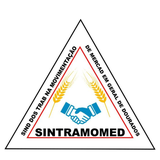

<meta charset="utf-8">
<title>Central Sintramomed</title>
<meta name="claude:viewport-fit-sides" content="cover">
<link rel="preconnect" href="https://fonts.googleapis.com">
<link rel="stylesheet" href="https://fonts.googleapis.com/css2?family=Inter:wght@400;500;600;700&display=swap">
<script src="https://cdnjs.cloudflare.com/ajax/libs/pdf-lib/1.17.1/pdf-lib.min.js"></script>
<script src="https://cdnjs.cloudflare.com/ajax/libs/pdf.js/3.11.174/pdf.min.js"></script>
<script src="https://cdnjs.cloudflare.com/ajax/libs/pdf.js/3.11.174/pdf.worker.min.js"></script>
<style>
/* Layout: estilo macOS — barra lateral translúcida, conteúdo em cartões brancos sobre cinza claro, tipografia do sistema (SF/Inter), azul do sistema como única cor de destaque */
:root{
  --bg:#F5F5F7; --surface:#FFFFFF; --surface-2:#F5F5F7; --ink:#1D1D1F; --muted:#6E6E73; --faint:#86868B; --line:#E5E5EA; --line-2:#D2D2D7;
  --accent:#0071E3; --accent-ink:#FFFFFF; --accent-soft:#E8F1FD; --accent-2:#0077ED;
  --side:rgba(246,246,248,.82);
  --crit:#D70015; --crit-soft:#FDEDEF; --warn:#B25000; --warn-soft:#FFF4E5; --ok:#248A3D; --ok-soft:#EAF7EE;
  --blue:#0071E3; --blue-soft:#E8F1FD; --amber:#B25000; --amber-soft:#FFF4E5; --slate:#6E6E73; --slate-soft:#F2F2F7;
  --shadow:0 1px 1px rgba(0,0,0,.03),0 4px 14px rgba(0,0,0,.05);
  --shadow-lg:0 20px 60px rgba(0,0,0,.18);
  --f-display:-apple-system,BlinkMacSystemFont,"SF Pro Display","Inter","Segoe UI Variable Display","Segoe UI",system-ui,sans-serif;
  --f-body:-apple-system,BlinkMacSystemFont,"SF Pro Text","Inter","Segoe UI Variable Text","Segoe UI",system-ui,sans-serif;
  --f-mono:ui-monospace,"SF Mono",Menlo,Consolas,monospace;
  --r:16px; --r-sm:10px;
}
@media (prefers-color-scheme: dark){:root:not([data-theme="light"]){
  --bg:#000000; --surface:#1C1C1E; --surface-2:#2C2C2E; --ink:#F5F5F7; --muted:#A1A1A6; --faint:#8E8E93; --line:#2C2C2E; --line-2:#3A3A3C;
  --accent:#0A84FF; --accent-ink:#FFFFFF; --accent-soft:#0A2540; --accent-2:#409CFF; --side:rgba(28,28,30,.78);
  --crit:#FF453A; --crit-soft:#3A1715; --warn:#FF9F0A; --warn-soft:#3A2A0A; --ok:#30D158; --ok-soft:#0F2E18;
  --blue:#0A84FF; --blue-soft:#0A2540; --amber:#FF9F0A; --amber-soft:#3A2A0A; --slate:#A1A1A6; --slate-soft:#2C2C2E;
  --shadow:0 1px 1px rgba(0,0,0,.3),0 6px 20px rgba(0,0,0,.35); --shadow-lg:0 24px 70px rgba(0,0,0,.6); color-scheme:dark}}
:root[data-theme="dark"]{
  --bg:#000000; --surface:#1C1C1E; --surface-2:#2C2C2E; --ink:#F5F5F7; --muted:#A1A1A6; --faint:#8E8E93; --line:#2C2C2E; --line-2:#3A3A3C;
  --accent:#0A84FF; --accent-ink:#FFFFFF; --accent-soft:#0A2540; --accent-2:#409CFF; --side:rgba(28,28,30,.78);
  --crit:#FF453A; --crit-soft:#3A1715; --warn:#FF9F0A; --warn-soft:#3A2A0A; --ok:#30D158; --ok-soft:#0F2E18;
  --blue:#0A84FF; --blue-soft:#0A2540; --amber:#FF9F0A; --amber-soft:#3A2A0A; --slate:#A1A1A6; --slate-soft:#2C2C2E;
  --shadow:0 1px 1px rgba(0,0,0,.3),0 6px 20px rgba(0,0,0,.35); --shadow-lg:0 24px 70px rgba(0,0,0,.6); color-scheme:dark}
*{box-sizing:border-box}
html,body{height:100%}
body{background:var(--bg);color:var(--ink);font-family:var(--f-body);font-size:15px;line-height:1.47;letter-spacing:-.011em;-webkit-font-smoothing:antialiased;-moz-osx-font-smoothing:grayscale}
button,input,select,textarea{font:inherit;color:inherit;letter-spacing:inherit}
:focus-visible{outline:3px solid color-mix(in srgb,var(--accent) 45%,transparent);outline-offset:2px}
::selection{background:color-mix(in srgb,var(--accent) 25%,transparent)}
.mono{font-family:var(--f-mono);font-variant-numeric:tabular-nums;font-size:.9em}
.ico{width:18px;height:18px;flex:none}
.app{display:grid;grid-template-columns:248px minmax(0,1fr);min-height:100%}

/* barra lateral translúcida */
.side{background:var(--side);-webkit-backdrop-filter:saturate(180%) blur(20px);backdrop-filter:saturate(180%) blur(20px);border-right:1px solid var(--line);display:flex;flex-direction:column;gap:4px;position:sticky;top:0;height:100vh;padding:20px 12px max(16px,env(safe-area-inset-bottom,0px));padding-left:max(12px,env(safe-area-inset-left,0px))}
.brand{display:flex;align-items:center;gap:11px;padding:2px 8px 18px}
.mark-logo{width:40px;height:40px;flex:none;border-radius:9px;background:#fff;object-fit:contain;padding:2px}
.ficha .logo-f{width:54px;height:54px;object-fit:contain;margin-right:10px}
.mark{width:36px;height:36px;border-radius:9px;flex:none;background:linear-gradient(180deg,#2A8CFF,#0062CC);color:#fff;display:grid;place-items:center;font-family:var(--f-display);font-weight:700;font-size:18px;box-shadow:0 1px 2px rgba(0,0,0,.15),inset 0 1px 0 rgba(255,255,255,.25)}
.brand-t{display:flex;flex-direction:column;min-width:0;line-height:1.2}
.brand-t b{font-family:var(--f-display);font-size:15px;font-weight:600;letter-spacing:-.02em}
.brand-t span{font-size:11.5px;color:var(--muted)}
.nav{display:flex;flex-direction:column;gap:1px}
.nav-l{font-size:11px;font-weight:600;color:var(--faint);padding:14px 10px 5px;letter-spacing:.01em}
.nav button{all:unset;cursor:pointer;display:flex;align-items:center;gap:10px;padding:7px 10px;border-radius:8px;color:var(--ink);font-weight:500;font-size:13.5px}
.nav button .ico{color:var(--accent)}
.nav button:hover{background:color-mix(in srgb,var(--ink) 6%,transparent)}
.nav button[aria-current="page"]{background:var(--accent);color:#fff}
.nav button[aria-current="page"] .ico{color:#fff}
.nav button:focus-visible{outline:3px solid color-mix(in srgb,var(--accent) 45%,transparent)}
.nav .count{margin-left:auto;font-size:11px;background:var(--crit);color:#fff;border-radius:20px;padding:0 7px;font-weight:600;line-height:18px}
.nav button[aria-current="page"] .count{background:#fff;color:var(--accent)}
.side-foot{margin-top:auto;padding:12px 10px;font-size:11.5px;color:var(--muted);display:flex;flex-direction:column;gap:6px;border-top:1px solid var(--line)}
.side-foot .row2{display:flex;align-items:center;justify-content:space-between;gap:8px}
.side-foot button.link{all:unset;cursor:pointer;color:var(--accent);font-weight:500}
.gear{all:unset;cursor:pointer;width:30px;height:30px;display:grid;place-items:center;border-radius:8px;color:var(--muted)}
@keyframes girar{to{transform:rotate(360deg)}}.gear.girando svg{animation:girar 1s linear infinite}
.gear:hover{color:var(--ink);background:color-mix(in srgb,var(--ink) 6%,transparent)}

/* área principal */
main{min-width:0;padding-block:36px 0;padding-left:max(16px,env(safe-area-inset-left,0px));padding-right:max(16px,env(safe-area-inset-right,0px));display:flex;flex-direction:column;min-height:100vh}
.wrap{max-width:1120px;width:100%;margin:0 auto;display:flex;flex-direction:column;gap:24px;padding-inline:clamp(0px,2.5vw,24px);flex:1}
.head{display:flex;flex-wrap:wrap;align-items:flex-end;justify-content:space-between;gap:14px}
.head h1{font-family:var(--f-display);font-size:clamp(28px,3.4vw,40px);font-weight:700;line-height:1.08;margin:0;letter-spacing:-.03em;text-wrap:balance}
.head p{margin:8px 0 0;color:var(--muted);max-width:60ch;font-size:16px}
.eyebrow{font-size:12px;color:var(--faint);font-weight:600;letter-spacing:.01em}
.eyebrow::first-letter,#relogio::first-letter{text-transform:uppercase}
.panel{background:var(--surface);border-radius:var(--r);padding:22px;display:flex;flex-direction:column;gap:16px;min-width:0;box-shadow:var(--shadow)}
.panel h2{font-family:var(--f-display);font-size:19px;font-weight:600;margin:0;letter-spacing:-.02em}
.panel-h{display:flex;flex-wrap:wrap;align-items:center;justify-content:space-between;gap:10px}
.grid2{display:grid;grid-template-columns:repeat(2,minmax(0,1fr));gap:24px}

/* indicadores */
.tiles{display:grid;grid-template-columns:repeat(4,minmax(0,1fr));gap:16px}
.tile{all:unset;box-sizing:border-box;cursor:pointer;background:var(--surface);border-radius:var(--r);padding:18px 20px;display:grid;grid-template-columns:auto 1fr;grid-template-rows:auto auto;column-gap:14px;align-items:center;box-shadow:var(--shadow);transition:transform .2s cubic-bezier(.2,.8,.2,1),box-shadow .2s}
.tile:hover{transform:translateY(-2px);box-shadow:0 2px 4px rgba(0,0,0,.04),0 12px 28px rgba(0,0,0,.08)}
.tile:focus-visible{outline:3px solid color-mix(in srgb,var(--accent) 45%,transparent)}
.tile .ic{grid-row:1/3;width:42px;height:42px;border-radius:12px;display:grid;place-items:center;background:var(--accent-soft);color:var(--accent)}
.tile .n{font-family:var(--f-display);font-size:30px;font-weight:600;line-height:1;letter-spacing:-.03em;font-variant-numeric:tabular-nums}
.tile .l{color:var(--muted);font-size:13px;line-height:1.3}
.tile.crit .ic{background:var(--crit-soft);color:var(--crit)} .tile.crit .n{color:var(--crit)}
.tile.warn .ic{background:var(--warn-soft);color:var(--warn)} .tile.warn .n{color:var(--warn)}
.tile.slate .ic{background:var(--slate-soft);color:var(--slate)}

/* atalhos */
.shortcuts{display:grid;grid-template-columns:repeat(auto-fill,minmax(230px,1fr));gap:12px}
.sc{display:flex;flex-direction:column;gap:12px;padding:14px;border-radius:14px;background:var(--surface-2);transition:background .15s}
.sc:hover{background:color-mix(in srgb,var(--accent) 7%,var(--surface-2))}
.sc a{display:grid;grid-template-columns:auto 1fr auto;gap:12px;align-items:center;text-decoration:none;color:inherit}
.sc .badge{width:40px;height:40px;border-radius:10px;display:grid;place-items:center;font-weight:600;font-size:14px;color:#fff}
.sc .t-sindicato{background:linear-gradient(180deg,#2A8CFF,#0062CC)} .sc .t-tomadora{background:linear-gradient(180deg,#FFB340,#FF9500)}
.sc .t-pesquisa{background:linear-gradient(180deg,#9F7AFF,#7D4CDB)} .sc .t-governo{background:linear-gradient(180deg,#A1A1A6,#7C7C80)}
.sc .txt{display:flex;flex-direction:column;min-width:0;line-height:1.3}
.sc b{font-weight:600;font-size:14.5px}
.sc span{font-size:12.5px;color:var(--muted)}
.sc em{font-style:normal;font-size:11px;color:var(--faint);font-weight:600;text-transform:capitalize}
.sc .go{color:var(--faint)} .sc:hover .go{color:var(--accent)}
.sc-act{display:flex;flex-wrap:wrap;gap:6px;padding-top:10px;border-top:1px solid var(--line)}

/* botões e campos */
.btn{display:inline-flex;align-items:center;gap:6px;border:0;background:color-mix(in srgb,var(--ink) 7%,transparent);border-radius:980px;padding:8px 16px;cursor:pointer;font-weight:500;font-size:14px;text-decoration:none;color:var(--ink);transition:background .15s,transform .1s}
.btn:hover{background:color-mix(in srgb,var(--ink) 11%,transparent)}
.btn:active{transform:scale(.97)}
.btn.primary{background:var(--accent);color:var(--accent-ink)}
.btn.primary:hover{background:var(--accent-2)}
.btn.danger{color:var(--crit)}
.btn.sm{padding:5px 12px;font-size:12.5px}
.btn:disabled{opacity:.4;cursor:not-allowed;transform:none}
.field{display:flex;flex-direction:column;gap:6px;min-width:0}
[hidden]{display:none!important}
.cal-wrap{display:grid;grid-template-columns:repeat(auto-fit,minmax(230px,1fr));gap:18px}.cal-h{font-weight:600;margin-bottom:6px}
.cal-g{display:grid;grid-template-columns:repeat(7,1fr);gap:4px}.cal-w{font-size:11px;color:var(--muted);text-align:center}
.cal-d{all:unset;box-sizing:border-box;min-height:40px;border-radius:8px;display:flex;flex-direction:column;align-items:center;justify-content:center;font-size:12px;color:var(--muted)}
.cal-d.qqs{background:var(--surface-2);color:var(--ink)}.cal-d.tem{background:var(--accent-soft);cursor:pointer}.cal-d.tem span{font-size:11px;font-weight:700;color:var(--accent)}
.cal-d.marc{background:var(--accent);color:#fff}.cal-d.marc span{color:#fff}.cal-d.sel{outline:2px solid var(--ink)}.cal-d.hoje b{text-decoration:underline}.cal-d:focus-visible{outline:2px solid var(--accent)}
.field label{font-size:12.5px;font-weight:500;color:var(--muted)}
.field input,.field select,.field textarea,.inp{border:1px solid var(--line-2);background:var(--surface);border-radius:var(--r-sm);padding:9px 12px;width:100%;min-width:0;transition:border-color .15s,box-shadow .15s}
.field input:focus,.field select:focus,.field textarea:focus,.inp:focus{outline:none;border-color:var(--accent);box-shadow:0 0 0 4px color-mix(in srgb,var(--accent) 22%,transparent)}
.field textarea{min-height:84px;resize:vertical}
.chk{display:flex;align-items:center;gap:9px;font-size:14px}
.chk input{width:18px;height:18px;accent-color:var(--accent)}
.form-grid{display:grid;grid-template-columns:repeat(4,minmax(0,1fr));gap:14px}
.span2{grid-column:span 2}.span4{grid-column:1/-1}
fieldset{border:0;border-radius:var(--r);padding:18px 20px 20px;margin:0;min-width:0;background:var(--surface);box-shadow:var(--shadow)}
legend{font-family:var(--f-display);font-weight:600;font-size:15px;padding:0;float:left;width:100%;margin-bottom:14px;display:flex;align-items:center;gap:8px;letter-spacing:-.01em}
legend+*{clear:both}
.toolbar{display:flex;flex-wrap:wrap;gap:8px;align-items:center}
.search{position:relative;flex:1 1 280px;max-width:380px}
.search .ico{position:absolute;left:12px;top:50%;transform:translateY(-50%);color:var(--faint)}
.search .inp{padding-left:38px;border-radius:980px;background:var(--surface);border-color:transparent;box-shadow:var(--shadow)}
.chips{display:flex;flex-wrap:wrap;gap:6px}
.chip{border:0;background:color-mix(in srgb,var(--ink) 6%,transparent);border-radius:980px;padding:6px 14px;cursor:pointer;font-size:13.5px;font-weight:500;color:var(--ink)}
.chip:hover{background:color-mix(in srgb,var(--ink) 10%,transparent)}
.chip[aria-pressed="true"]{background:var(--ink);color:var(--bg)}
.pchip.warn{background:var(--warn-soft);color:var(--warn)}.pchip.ok{background:var(--ok-soft);color:var(--ok)}.pchip[aria-pressed="true"]{background:var(--ink);color:var(--bg)}

/* tabelas */
.tbl-wrap{overflow-x:auto;border-radius:var(--r);background:var(--surface);box-shadow:var(--shadow)}
table{border-collapse:collapse;width:100%;min-width:660px}
th,td{padding:13px 16px;text-align:left;border-bottom:1px solid var(--line);vertical-align:middle}
th{font-size:12px;color:var(--faint);font-weight:500;background:transparent}
tbody tr:last-child td{border-bottom:0}
tbody tr.click{cursor:pointer;transition:background .12s} tbody tr.click:hover{background:color-mix(in srgb,var(--accent) 5%,transparent)}
td.num,th.num{text-align:right;font-variant-numeric:tabular-nums}
.who{display:flex;align-items:center;gap:12px;min-width:0}
.av{width:34px;height:34px;border-radius:50%;flex:none;display:grid;place-items:center;font-weight:600;font-size:12.5px;background:linear-gradient(180deg,#B9BBC3,#8E9099);color:#fff}
.pill{display:inline-flex;align-items:center;gap:5px;font-size:12px;border-radius:980px;padding:2px 9px;font-weight:500;white-space:nowrap}
.pill.crit{background:var(--crit-soft);color:var(--crit)} .pill.warn{background:var(--warn-soft);color:var(--warn)} .pill.ok{background:var(--ok-soft);color:var(--ok)} .pill.info{background:var(--blue-soft);color:var(--blue)}
.evt{font-family:var(--f-mono);font-size:10.5px;border-radius:5px;padding:1px 5px;background:color-mix(in srgb,var(--ink) 6%,transparent);color:var(--muted)}
.list{display:flex;flex-direction:column}
.list .row{display:flex;gap:10px;align-items:center;justify-content:space-between;padding:12px 0;border-bottom:1px solid var(--line)}
.list .row:last-child{border-bottom:0}
.list .row a{color:inherit;text-decoration:none;font-weight:500} .list .row a:hover{color:var(--accent)}
.muted{color:var(--muted)} .small{font-size:12.5px}
.empty{padding:28px;text-align:center;color:var(--muted);border-radius:var(--r);background:var(--surface-2)}
.note{font-size:13px;color:var(--muted);background:var(--surface-2);border-radius:var(--r-sm);padding:10px 14px;line-height:1.5}
.banner{display:flex;flex-wrap:wrap;gap:12px;align-items:center;justify-content:space-between;background:var(--surface);box-shadow:var(--shadow);color:var(--ink);border-radius:var(--r);padding:14px 18px;font-size:14px;border-left:4px solid var(--accent)}

/* folhas (drawer) e janelas */
.scrim{position:fixed;inset:0;background:rgba(0,0,0,.28);-webkit-backdrop-filter:blur(6px);backdrop-filter:blur(6px);z-index:40;animation:fade .2s ease}
.drawer{position:fixed;top:0;right:0;bottom:0;width:min(880px,100%);background:var(--bg);z-index:41;display:flex;flex-direction:column;box-shadow:var(--shadow-lg);animation:slide .32s cubic-bezier(.2,.8,.2,1)}
@keyframes slide{from{transform:translateX(40px);opacity:0}to{transform:none;opacity:1}}
@keyframes fade{from{opacity:0}to{opacity:1}}
@keyframes pop{from{transform:scale(.96);opacity:0}to{transform:none;opacity:1}}
.drawer-h{display:flex;align-items:center;justify-content:space-between;gap:10px;padding:16px max(24px,env(safe-area-inset-right,0px)) 16px 24px;padding-top:max(16px,env(safe-area-inset-top,0px));background:color-mix(in srgb,var(--surface) 85%,transparent);-webkit-backdrop-filter:saturate(180%) blur(20px);backdrop-filter:saturate(180%) blur(20px);border-bottom:1px solid var(--line)}
.drawer-h h2{font-family:var(--f-display);font-size:22px;font-weight:600;margin:0;letter-spacing:-.025em}
.drawer-b{overflow:auto;padding:24px max(24px,env(safe-area-inset-right,0px)) 24px 24px;display:flex;flex-direction:column;gap:16px}
.drawer-f{display:flex;flex-wrap:wrap;gap:8px;justify-content:flex-end;padding:14px 24px;padding-bottom:max(14px,env(safe-area-inset-bottom,0px));background:color-mix(in srgb,var(--surface) 85%,transparent);-webkit-backdrop-filter:blur(20px);backdrop-filter:blur(20px);border-top:1px solid var(--line)}
.docslots{display:grid;grid-template-columns:repeat(auto-fill,minmax(190px,1fr));gap:10px}
.slot{border-radius:12px;padding:12px;display:flex;flex-direction:column;gap:8px;background:var(--surface-2)}
.slot.has{background:var(--ok-soft)}
.slot .t{font-weight:600;font-size:13.5px;display:flex;justify-content:space-between;gap:6px}
.slot .f{font-size:12.5px;color:var(--muted);display:flex;flex-direction:column;gap:4px}
.slot .f a{color:var(--accent);cursor:pointer;text-decoration:none;word-break:break-all}

/* fatiador */
.drop{border:2px dashed var(--line-2);border-radius:var(--r);padding:44px 20px;text-align:center;background:var(--surface);cursor:pointer;display:flex;flex-direction:column;gap:8px;align-items:center;transition:background .15s,border-color .15s}
.drop:hover,.drop.over{border-color:var(--accent);background:color-mix(in srgb,var(--accent) 5%,var(--surface))}
.drop .ic{width:52px;height:52px;border-radius:14px;display:grid;place-items:center;background:var(--accent-soft);color:var(--accent)}
.drop b{font-family:var(--f-display);font-size:20px;font-weight:600;letter-spacing:-.02em}
.pages{display:grid;grid-template-columns:repeat(auto-fill,minmax(200px,1fr));gap:14px}
.page{border-radius:var(--r);background:var(--surface);padding:12px;display:flex;flex-direction:column;gap:8px;box-shadow:var(--shadow)}
.page canvas,.page .ph{width:100%;aspect-ratio:210/297;max-width:100%;background:var(--surface-2);border-radius:8px;display:block}
.page .ph{display:flex;align-items:center;justify-content:center;font-size:40px;color:var(--faint)}
.page .pn{font-size:12px;color:var(--muted)}

/* entrevista */
.q{display:flex;flex-direction:column;gap:10px;padding:16px 0;border-bottom:1px solid var(--line)}
.q:last-child{border-bottom:0}
.q .qt{font-weight:600;max-width:75ch}
.q .qn{display:inline-grid;place-items:center;min-width:24px;height:24px;border-radius:50%;background:var(--accent);color:#fff;font-size:12px;margin-right:8px}
.q .opts{display:flex;flex-direction:column;gap:7px;padding-left:32px}
.q .opt{display:flex;flex-wrap:wrap;align-items:center;gap:8px}
.q .opt input[type=text]{flex:1 1 200px}
.q .law{font-size:12.5px;color:var(--muted);max-width:75ch;padding-left:32px}
.hist{display:grid;grid-template-columns:2fr 1.2fr .6fr;gap:8px;padding-left:32px}

/* janela central */
.modal{position:fixed;inset:0;z-index:50;display:flex;align-items:center;justify-content:center;padding:max(16px,env(safe-area-inset-top,0px)) max(16px,env(safe-area-inset-right,0px)) max(16px,env(safe-area-inset-bottom,0px)) max(16px,env(safe-area-inset-left,0px))}
.modal>.scrim{position:absolute;z-index:0}
.modal-c{background:var(--bg);border-radius:20px;max-width:820px;width:100%;max-height:100%;display:flex;flex-direction:column;overflow:hidden;position:relative;z-index:1;box-shadow:var(--shadow-lg);animation:pop .25s cubic-bezier(.2,.8,.2,1)}
.modal-c .drawer-b{align-items:center}
.modal-c canvas,.modal-c img{max-width:100%;height:auto;border-radius:6px;box-shadow:var(--shadow);background:#fff}
.toast{position:fixed;left:50%;transform:translateX(-50%);bottom:max(26px,calc(env(safe-area-inset-bottom,0px) + 14px));background:color-mix(in srgb,var(--ink) 88%,transparent);-webkit-backdrop-filter:blur(20px);backdrop-filter:blur(20px);color:var(--bg);padding:11px 20px;border-radius:980px;z-index:60;font-size:14px;font-weight:500;max-width:calc(100% - 32px);box-shadow:var(--shadow-lg);animation:fade .2s}

/* rodapé com data e hora */
.rodape{position:sticky;bottom:0;margin-top:32px;display:flex;justify-content:space-between;gap:10px;flex-wrap:wrap;padding:10px clamp(0px,2.5vw,24px);padding-bottom:max(10px,env(safe-area-inset-bottom,0px));font-size:12px;color:var(--faint);background:color-mix(in srgb,var(--bg) 82%,transparent);-webkit-backdrop-filter:blur(16px);backdrop-filter:blur(16px);border-top:1px solid var(--line);font-variant-numeric:tabular-nums;max-width:1120px;width:100%;margin-inline:auto}
#relogio{display:inline-block}

/* modelos */
.mod-novo{all:unset;box-sizing:border-box;cursor:pointer;border-radius:var(--r);padding:22px;display:flex;flex-direction:column;align-items:center;justify-content:center;gap:6px;text-align:center;border:2px dashed var(--line-2);color:var(--ink);transition:border-color .15s,background .15s;min-height:180px}
.mod-novo:hover,.mod-novo:focus-visible{border-color:var(--accent);background:color-mix(in srgb,var(--accent) 5%,transparent)}
.mod-novo .mais{width:48px;height:48px;border-radius:50%;display:grid;place-items:center;background:var(--accent);color:#fff;font-size:30px;font-weight:300;line-height:1}
/* feedback */
.fb-item{display:flex;flex-direction:column;gap:6px;padding:14px 0;border-bottom:1px solid var(--line)}
.fb-item:last-child{border-bottom:0}
.fb-top{display:flex;flex-wrap:wrap;gap:8px;align-items:center;justify-content:space-between}
.versao{padding:14px 0;border-bottom:1px solid var(--line)}
.versao:last-child{border-bottom:0}
.versao ul{margin:6px 0 0;padding-left:18px;color:var(--muted)}

/* ficha impressa */
.ficha{background:#fff;color:#1d1d1f;font:13px/1.45 -apple-system,BlinkMacSystemFont,"Inter","Segoe UI",Arial,sans-serif;padding:32px;max-width:794px;width:100%;margin:0 auto;border-radius:6px;box-shadow:var(--shadow)}
.ficha header{display:flex;justify-content:space-between;gap:16px;border-bottom:1px solid #d2d2d7;padding-bottom:12px}
.ficha header div{display:flex;flex-direction:column;gap:2px}.ficha header b{font-size:18px;color:#1d1d1f;letter-spacing:-.02em}.ficha header span{font-size:11px;color:#6e6e73}
.ficha .fr{text-align:right;font-weight:600;display:block}.ficha .fr small{font-weight:400;color:#6e6e73}
.ficha h1{font-size:22px;margin:16px 0 6px;letter-spacing:-.02em}.ficha h2{font-size:11px;text-transform:uppercase;letter-spacing:.06em;color:#6e6e73;margin:16px 0 6px}
.ficha table{width:100%;min-width:0;border-collapse:collapse}.ficha th,.ficha td{border-bottom:1px solid #e5e5ea;padding:6px 4px;text-align:left;font-size:12.5px;background:#fff;color:#1d1d1f;text-transform:none;letter-spacing:0;font-weight:400}.ficha th{width:32%;color:#6e6e73}
.ficha footer{display:flex;justify-content:space-between;gap:20px;margin-top:56px;text-align:center;font-size:12px;color:#1d1d1f}
.tams{display:flex;flex-wrap:wrap;gap:6px;margin-bottom:14px}.tam{display:flex;flex-direction:column;align-items:center;min-width:46px;padding:6px 8px;border-radius:10px;background:var(--surface-2);font-variant-numeric:tabular-nums;font-size:15px}.tam b{font-size:11px;color:var(--muted);font-weight:600}.tam.baixo{background:var(--warn-soft);color:var(--warn)}.tam.zero{background:var(--crit-soft);color:var(--crit)}
.vale-folha{background:#fff;color:#1d1d1f;width:100%;max-width:794px;margin:0 auto;font:12px/1.4 Arial,sans-serif;padding:16px}
.vale-via{border:1.5px solid #222;padding:14px 22px 8px;height:112mm;box-sizing:border-box;display:flex;flex-direction:column;justify-content:space-between;font-family:Arial,sans-serif}
.vale-l1{display:flex;align-items:flex-end;gap:20px}.vale-tit{font-size:15px;flex:1}
.vale-campo,.vale-data{display:flex;align-items:flex-end;gap:6px;font-size:13px}.vale-campo b,.vale-data b{white-space:nowrap}
.vale-campo u,.vale-data u{text-decoration:none;border-bottom:1px solid #222;flex:1;min-height:18px;padding:0 4px;font-size:13.5px}
.vale-l1 .vale-campo{flex:0 0 46%}.vale-data{padding-left:60px}.vale-data u{flex:0 0 22%;text-align:center}
.vale-txt{font-size:11px;color:#222}.vale-q{font-size:9px;color:#666;text-align:right}
.vale-corte{text-align:center;color:#666;font-size:11px;padding:3mm 0;letter-spacing:.05em}
@media print{#printArea .vale-folha{padding:0;max-width:none}}

/* programação de pagamentos (folha A4 no modelo do sindicato) */
.pg-folha{background:#fff;color:#111;width:100%;max-width:794px;margin:0 auto;padding:12mm 12mm 10mm;font:12px/1.3 Arial,Helvetica,sans-serif;box-sizing:border-box}
.pg-folha+.pg-folha{margin-top:18px}
.pg-cab{border:1.5px solid #111;padding:6px 8px 4px}.pg-cab h1{font:700 22px Arial,Helvetica,sans-serif;margin:0 0 4px;letter-spacing:0;color:#111}
.pg-cab div{font-weight:700;font-size:12.5px;padding:3px 0}
.pg-lin{display:flex;gap:6px;align-items:flex-end;font-weight:700;font-size:12.5px;margin:9px 0 0}.pg-lin u{flex:1;text-decoration:none;border-bottom:1px solid #111;font-weight:400;min-height:15px;padding-left:4px}
.pg-tab{width:100%;min-width:0;border-collapse:collapse;margin-top:12px;table-layout:fixed}
.pg-tab th,.pg-tab td{border:1px solid #111;padding:0 6px;height:6.5mm;font-size:11.5px;color:#111;background:#fff;text-transform:none;letter-spacing:0;vertical-align:middle;overflow:hidden;white-space:nowrap;text-overflow:ellipsis}
.pg-tab tbody tr:last-child td,.pg-tab tbody tr:last-child th{border-bottom:1px solid #111}
.pg-tab th{font-weight:700;text-align:center}.pg-tab th:first-child{text-align:left}
.pg-tab td small{font-size:8.5px;color:#444}.pg-tab td.pg-rub{font-size:9px;font-style:italic;color:#333;white-space:normal;height:auto;padding:1px 6px 2px 18px}.pg-tab .pg-pix{color:#b00020}
.pg-rod{display:flex;justify-content:space-between;font-size:9px;color:#555;margin-top:4px}
@media print{#printArea .pg-folha{max-width:none;padding:8mm 8mm 0;page-break-after:always;break-after:page;margin:0}#printArea .pg-folha:last-child{page-break-after:auto;break-after:auto}}
#printArea{display:none}
#printArea img.pagina{width:100%;display:block;page-break-after:always;break-after:page}
@media print{html,body{height:auto!important;min-height:0!important;overflow:visible!important;background:#fff!important}body>*:not(#printArea){display:none!important}#printArea{display:block!important}#printArea .ficha{box-shadow:none;padding:0;max-width:none}@page{size:A4;margin:14mm}}

@media (max-width:1060px){.tiles{grid-template-columns:repeat(2,minmax(0,1fr))}.form-grid{grid-template-columns:repeat(2,minmax(0,1fr))}.grid2{grid-template-columns:minmax(0,1fr)}}
@media (max-width:780px){
  .app{grid-template-columns:minmax(0,1fr)}
  .side{position:sticky;top:0;height:auto;z-index:20;padding:10px 0 0;border-right:0;border-bottom:1px solid var(--line);gap:0}
  .brand{padding:0 max(16px,env(safe-area-inset-right,0px)) 8px max(16px,env(safe-area-inset-left,0px))}
  .brand .gear{margin-left:auto}
  .nav{flex-direction:row;overflow-x:auto;padding:0 12px 10px;gap:4px}
  .nav-l,.side-foot{display:none}
  .nav button{white-space:nowrap}
  main{padding-block:22px 0}
  .form-grid{grid-template-columns:minmax(0,1fr)} .span2{grid-column:auto}
  .hist,.q .opts,.q .law{padding-left:0} .hist{grid-template-columns:minmax(0,1fr)}
  .tiles{gap:10px} .tile{padding:14px}
}

/* ===== Liquid Glass (0.1.49) =====
   Regras (Apple HIG, Materials): o vidro fica só na camada de navegação e controles — barra lateral, menus, cabeçalhos de janelas,
   busca rápida, avisos e rodapé. O conteúdo (cartões, tabelas, formulários) usa superfícies sólidas para não perder contraste.
   Base sólida primeiro; o vidro só entra com @supports e sem "reduzir transparência"; alto contraste reforça as bordas. */
:root{--glass:rgba(255,255,255,.62);--glass-2:rgba(255,255,255,.78);--glass-brd:rgba(255,255,255,.75);--glass-hi:rgba(255,255,255,.9);--glass-sh:0 1px 0 rgba(255,255,255,.6) inset,0 10px 34px rgba(30,40,70,.12),0 1px 2px rgba(30,40,70,.06);
  --mesh:radial-gradient(1100px 620px at 8% -8%,rgba(64,140,255,.20),transparent 60%),radial-gradient(900px 560px at 100% 0%,rgba(52,199,175,.14),transparent 62%),radial-gradient(900px 700px at 60% 110%,rgba(175,82,222,.10),transparent 60%);--r:20px}
@media (prefers-color-scheme: dark){:root:not([data-theme="light"]){--glass:rgba(38,38,42,.58);--glass-2:rgba(44,44,48,.78);--glass-brd:rgba(255,255,255,.12);--glass-hi:rgba(255,255,255,.18);--glass-sh:0 1px 0 rgba(255,255,255,.08) inset,0 14px 40px rgba(0,0,0,.5);
  --mesh:radial-gradient(1100px 620px at 8% -8%,rgba(10,132,255,.22),transparent 60%),radial-gradient(900px 560px at 100% 0%,rgba(48,209,180,.12),transparent 62%),radial-gradient(900px 700px at 60% 110%,rgba(191,90,242,.12),transparent 60%)}}
:root[data-theme="dark"]{--glass:rgba(38,38,42,.58);--glass-2:rgba(44,44,48,.78);--glass-brd:rgba(255,255,255,.12);--glass-hi:rgba(255,255,255,.18);--glass-sh:0 1px 0 rgba(255,255,255,.08) inset,0 14px 40px rgba(0,0,0,.5);
  --mesh:radial-gradient(1100px 620px at 8% -8%,rgba(10,132,255,.22),transparent 60%),radial-gradient(900px 560px at 100% 0%,rgba(48,209,180,.12),transparent 62%),radial-gradient(900px 700px at 60% 110%,rgba(191,90,242,.12),transparent 60%)}
body{background:var(--mesh),var(--bg);background-attachment:fixed}
.app{grid-template-columns:268px minmax(0,1fr)}
/* barra lateral flutuante */
.side{margin:12px 0 12px 12px;height:calc(100vh - 24px);top:12px;border-radius:24px;border:1px solid var(--glass-brd);background:var(--glass-2);box-shadow:var(--glass-sh);padding:16px 10px 12px;overflow:hidden}
.brand{padding:2px 6px 14px}
.side-acoes{display:flex;flex-direction:column;gap:8px;padding:0 4px 8px}
.lancar-w{position:relative}
.btn.lancar{width:100%;justify-content:center;padding:10px 16px;font-weight:600;font-size:14.5px;background:linear-gradient(180deg,color-mix(in srgb,var(--accent) 88%,#fff),var(--accent));box-shadow:0 1px 0 rgba(255,255,255,.35) inset,0 6px 18px color-mix(in srgb,var(--accent) 35%,transparent)}
.menu-g{position:absolute;left:0;right:0;top:calc(100% + 6px);z-index:30;border-radius:18px;padding:6px;display:flex;flex-direction:column;gap:2px;background:var(--surface);border:1px solid var(--line-2);box-shadow:var(--shadow-lg);animation:pop .18s cubic-bezier(.2,.8,.2,1)}
.menu-g button{all:unset;cursor:pointer;display:flex;gap:10px;align-items:center;padding:9px 10px;border-radius:12px}
.menu-g button .ico{color:var(--accent)}.menu-g button span{display:flex;flex-direction:column;line-height:1.25}.menu-g small{font-size:11.5px;color:var(--muted)}
.menu-g button:hover,.menu-g button:focus-visible{background:color-mix(in srgb,var(--accent) 12%,transparent);outline:none}
.busca-g{all:unset;cursor:pointer;display:flex;align-items:center;gap:8px;padding:7px 12px;border-radius:980px;background:color-mix(in srgb,var(--ink) 6%,transparent);color:var(--muted);font-size:13.5px}
.busca-g:hover{background:color-mix(in srgb,var(--ink) 10%,transparent)}.busca-g kbd{margin-left:auto;font:11px var(--f-mono);border:1px solid var(--line-2);border-radius:6px;padding:1px 5px}
.busca-g:focus-visible{outline:3px solid color-mix(in srgb,var(--accent) 45%,transparent)}
.nav{overflow-y:auto;flex:1;gap:2px;padding:2px 2px 8px;scrollbar-width:thin}
.nav-g{display:flex;flex-direction:column}
.nav .nav-l{all:unset;cursor:pointer;display:flex;align-items:center;justify-content:space-between;font-size:11.5px;font-weight:600;color:var(--faint);padding:12px 10px 4px;border-radius:6px}
.nav .nav-l::after{content:"";width:6px;height:6px;border-right:1.6px solid currentColor;border-bottom:1.6px solid currentColor;transform:rotate(45deg);transition:transform .2s;margin-right:4px}
.nav-g.fechado .nav-l::after{transform:rotate(-45deg)}.nav-g.fechado .nav-i{display:none}
.nav .nav-l:hover{color:var(--ink)}.nav .nav-l:focus-visible{outline:3px solid color-mix(in srgb,var(--accent) 45%,transparent)}
.nav-i{display:flex;flex-direction:column;gap:2px}
.nav button[data-v]{padding:8px 10px;border-radius:12px;min-height:22px}
.nav button[aria-current="page"]{background:color-mix(in srgb,var(--accent) 15%,transparent);color:var(--accent);box-shadow:0 0 0 1px color-mix(in srgb,var(--accent) 22%,transparent) inset}
.nav button[aria-current="page"] .ico{color:var(--accent)}
.nav button[aria-current="page"] .count{background:var(--crit);color:#fff}
.side-foot{border-top:1px solid color-mix(in srgb,var(--ink) 8%,transparent);padding:10px 8px 2px}
/* conteúdo: superfícies sólidas com borda fina */
.panel,.tile,fieldset,.tbl-wrap,.banner,.page{border:1px solid color-mix(in srgb,var(--ink) 6%,transparent)}
.head h1{letter-spacing:-.035em}
/* janelas e folhas: cabeçalho e rodapé em vidro, corpo sólido */
.modal-c{border-radius:26px;border:1px solid var(--glass-brd)}
.drawer{border-radius:26px 0 0 26px;overflow:hidden}
.scrim{background:rgba(10,14,25,.22)}
.toast{border-radius:980px;border:1px solid var(--glass-brd)}
.busca-r .modal-c{max-width:620px;align-self:flex-start;margin-top:10vh;background:var(--glass-2);box-shadow:var(--glass-sh),var(--shadow-lg)}
.tema-b{all:unset;cursor:pointer;display:flex;align-items:center;gap:8px;padding:7px 10px;border-radius:12px;font-size:13px;font-weight:500;color:var(--ink)}.tema-b:hover{background:color-mix(in srgb,var(--ink) 6%,transparent)}.tema-b:focus-visible{outline:3px solid color-mix(in srgb,var(--accent) 45%,transparent)}.tema-b .ico{color:var(--accent)}
td .btn{white-space:nowrap}.busca-r .search{flex:none}.busca-r .search .ico{left:14px}.brand-t span{white-space:nowrap;overflow:hidden;text-overflow:ellipsis}
.busca-r .list{max-height:52vh;overflow:auto;padding:0 8px}
.br-i{all:unset;box-sizing:border-box;cursor:pointer;width:100%;padding:10px 10px!important;border-radius:12px;border-bottom:0!important}
.br-i[aria-selected="true"],.br-i:hover{background:color-mix(in srgb,var(--accent) 12%,transparent)}
.rodape{border-top:1px solid color-mix(in srgb,var(--ink) 6%,transparent)}
@supports ((-webkit-backdrop-filter:blur(1px)) or (backdrop-filter:blur(1px))){
 @media (prefers-reduced-transparency:no-preference){
  .side,.busca-r .modal-c{background:var(--glass);-webkit-backdrop-filter:blur(22px) saturate(180%);backdrop-filter:blur(22px) saturate(180%)}
 }
}
@media (prefers-reduced-transparency:reduce){.side,.menu-g,.busca-r .modal-c{background:var(--surface)!important;-webkit-backdrop-filter:none!important;backdrop-filter:none!important}body{background:var(--bg)}}
@media (prefers-contrast:more){.side,.menu-g,.modal-c,.panel,.tile,fieldset,.tbl-wrap{border:1.5px solid var(--ink)!important}.nav button[aria-current="page"]{background:var(--accent);color:#fff}.nav button[aria-current="page"] .ico{color:#fff}}
@media (max-width:780px){
  .app{grid-template-columns:minmax(0,1fr)}
  .side{margin:8px;height:auto;top:8px;border-radius:20px;padding:10px 0 0;overflow:visible}
  .side-acoes{flex-direction:row;padding:0 12px 8px}.lancar-w{flex:1}.busca-g kbd{display:none}.menu-g{right:0}
  .nav{flex-direction:row;overflow-x:auto;padding:0 10px 10px}.nav-g,.nav-i{flex-direction:row;display:flex!important;gap:4px}.nav .nav-l{display:none}
}
@media (prefers-reduced-motion:reduce){*{transition:none!important;animation:none!important}}
</style>

<div class="app">
  <aside class="side">
    <div class="brand"><div class="brand-t"><b>Central Sintramomed</b><span>Gestão de Pessoas · Dourados</span></div>
      <button class="gear" id="btnSyncTopo" type="button" aria-label="Sincronizar os trabalhadores com o Sistema eSocial" title="Sincronizar os trabalhadores com o Sistema eSocial" style="margin-left:auto"><span data-ico="sync"></span></button>
      <button class="gear" id="btnCfg" type="button" aria-label="Configurações e acessos" title="Configurações e acessos"><span data-ico="gear"></span></button></div>
    <div class="side-acoes">
      <div class="lancar-w"><button class="btn primary lancar" id="btnLancar" type="button" aria-haspopup="menu" aria-expanded="false" aria-controls="menuLancar"><span data-ico="plus"></span>Lançar</button>
        <div class="menu-g" id="menuLancar" role="menu" hidden>
          <button role="menuitem" id="navLancAso" type="button"><span data-ico="upload"></span><span><b>ASO</b><small>Anexar e enviar para aprovação</small></span></button>
          <button role="menuitem" id="navLancNr" type="button"><span data-ico="upload"></span><span><b>NR-33 / NR-35</b><small>Certificado de formação ou reciclagem</small></span></button>
          <button role="menuitem" type="button" data-ir="estoque"><span data-ico="box"></span><span><b>Entrega do estoque</b><small>Uniforme, EPI ou desconto autorizado</small></span></button>
        </div></div>
      <button class="busca-g" id="btnBusca" type="button" aria-label="Buscar trabalhador, tela ou ação (Ctrl+K)"><span data-ico="search"></span><span>Buscar</span><kbd>Ctrl K</kbd></button>
    </div>
    <nav class="nav" id="nav" aria-label="Seções">
      <button data-v="painel"><span data-ico="home"></span>Painel</button>
      <div class="nav-g" data-g="pessoas"><button class="nav-l" type="button" aria-expanded="true">Pessoas</button><div class="nav-i">
        <button data-v="trabalhadores"><span data-ico="users"></span>Trabalhadores</button>
        <button data-v="pendencias"><span data-ico="alert"></span>Pendências <span class="count" id="navCount" hidden></span></button>
        <button data-v="previsao"><span data-ico="clock"></span>Vencimentos</button></div></div>
      <div class="nav-g" data-g="esocial"><button class="nav-l" type="button" aria-expanded="true">Documentos e eSocial</button><div class="nav-i">
        <button data-v="asos"><span data-ico="upload"></span>ASOs recebidos <span class="count" id="navAso" hidden></span></button>
        <button data-v="nrs"><span data-ico="upload"></span>NRs recebidas <span class="count" id="navNr" hidden></span></button>
        <button data-v="aprovacao"><span data-ico="list"></span>Aprovação <span class="count" id="navAprov" hidden></span></button></div></div>
      <div class="nav-g" data-g="gestao"><button class="nav-l" type="button" aria-expanded="true">Gestão</button><div class="nav-i">
        <button data-v="relatorios"><span data-ico="list"></span>Relatório mensal</button>
        <button data-v="estoque"><span data-ico="box"></span>Estoque e EPIs</button>
        <button data-v="nr01"><span data-ico="users"></span>NR-01 · Portal DOM</button></div></div>
      <div class="nav-g" data-g="ferramentas"><button class="nav-l" type="button" aria-expanded="true">Ferramentas</button><div class="nav-i">
        <button data-v="fatiador"><span data-ico="scissors"></span>Fatiador de PDF</button>
        <button data-v="entrevista"><span data-ico="chat"></span>Entrevista online</button>
        <button data-v="pagamentos"><span data-ico="list"></span>Programação de pagamento</button>
        <button data-v="modelos"><span data-ico="print"></span>Modelos para impressão</button>
        <button data-v="feedback"><span data-ico="idea"></span>Feedback e novidades</button></div></div>
    </nav>
    <button class="tema-b" id="btnTema" type="button"></button>
    <div class="side-foot">
      <div class="row2"><span>Versão <b class="mono" id="ver">0.1.59</b></span><span id="runtime">modo navegador</span></div>
      <span id="syncInfo"></span>
      <button class="link" id="btnSync" type="button" hidden>Sincronizar tudo agora</button>
      <span id="updInfo">Verificando atualizações…</span>
      <button class="link" id="btnUpdate" type="button">Verificar agora</button>
    </div>
  </aside>
  <main><div class="wrap"><div id="updBar" hidden></div><div id="view" style="display:flex;flex-direction:column;gap:22px"></div></div><footer class="rodape"><span id="relogio"></span><span>Central Sintramomed</span></footer></main>
</div>
<div id="layer"></div>
<div id="printArea" aria-hidden="true"></div>
<input type="file" id="hiddenFile" hidden>

<script>
"use strict";
/* Tema: claro, escuro ou automático (segue o Windows). O botão de lua/sol fixa o modo neste computador. */
const temaEscuro=()=>{const t=document.documentElement.dataset.theme;return t?t==="dark":matchMedia("(prefers-color-scheme: dark)").matches};
try{const t=localStorage.getItem("cs_tema");if(t==="dark"||t==="light")document.documentElement.dataset.theme=t}catch(e){}
const APP_VERSION="0.1.59";
/* ---------- utilidades ---------- */
const $=(s,r=document)=>r.querySelector(s);
const esc=s=>String(s??"").replace(/[&<>"']/g,c=>({"&":"&amp;","<":"&lt;",">":"&gt;",'"':"&quot;","'":"&#39;"}[c]));
const uid=()=>Math.random().toString(36).slice(2,10)+Date.now().toString(36).slice(-4);
const pad=n=>String(n).padStart(2,"0");
const iso=d=>`${d.getFullYear()}-${pad(d.getMonth()+1)}-${pad(d.getDate())}`;
const TODAY=new Date(); TODAY.setHours(0,0,0,0);
const parse=s=>{if(!s)return null;const[a,b,c]=s.split("-").map(Number);return new Date(a,b-1,c)};
const addDays=(d,n)=>{const x=new Date(d);x.setDate(x.getDate()+n);return x};
const addYears=(s,n)=>{const d=parse(s);if(!d)return"";d.setFullYear(d.getFullYear()+n);return iso(d)};
const daysBetween=(a,b)=>Math.round((b-a)/864e5);
const br=s=>{const d=parse(s);return d?`${pad(d.getDate())}/${pad(d.getMonth()+1)}/${d.getFullYear()}`:"—"};
const MESES=["Janeiro","Fevereiro","Março","Abril","Maio","Junho","Julho","Agosto","Setembro","Outubro","Novembro","Dezembro"];
const ym=d=>`${d.getFullYear()}-${pad(d.getMonth()+1)}`;
const ymLabel=s=>{const[a,b]=s.split("-").map(Number);return `${MESES[b-1]}/${a}`};
const prevYm=s=>{const[a,b]=s.split("-").map(Number);const d=new Date(a,b-2,1);return ym(d)};
const fmtCPF=v=>{const d=String(v||"").replace(/\D/g,"").slice(0,11);return d.replace(/(\d{3})(\d)/,"$1.$2").replace(/(\d{3})(\d)/,"$1.$2").replace(/(\d{3})(\d{1,2})$/,"$1-$2")};
const cpfOk=v=>{const c=String(v||"").replace(/\D/g,"");if(c.length!==11||/^(\d)\1+$/.test(c))return false;let s=0;for(let i=0;i<9;i++)s+=+c[i]*(10-i);let r=(s*10)%11%10;if(r!==+c[9])return false;s=0;for(let i=0;i<10;i++)s+=+c[i]*(11-i);r=(s*10)%11%10;return r===+c[10]};
function toast(msg){const t=document.createElement("div");t.className="toast";t.setAttribute("role","status");t.textContent=msg;document.body.appendChild(t);setTimeout(()=>t.remove(),2800)}
const IS_TAURI=!!(window.__TAURI__||window.__TAURI_INTERNALS__);
const ICONS={
  home:'<path d="M3 10.5 12 3l9 7.5"/><path d="M5 9.5V21h14V9.5"/><path d="M10 21v-6h4v6"/>',
  users:'<circle cx="9" cy="8" r="3.5"/><path d="M2.5 20a6.5 6.5 0 0 1 13 0"/><path d="M16 4.5a3.5 3.5 0 0 1 0 7"/><path d="M18.5 14a6.5 6.5 0 0 1 3 6"/>',
  alert:'<path d="M12 3 2 20h20L12 3z"/><path d="M12 10v4"/><path d="M12 17.5v.01"/>',
  list:'<path d="M8 6h13M8 12h13M8 18h13"/><path d="M3.5 6h.01M3.5 12h.01M3.5 18h.01"/>',
  scissors:'<circle cx="6" cy="6" r="3"/><circle cx="6" cy="18" r="3"/><path d="M20 4 8.1 15.9M14.5 14.5 20 20M8.1 8.1 12 12"/>',
  chat:'<path d="M21 12a8 8 0 0 1-11.6 7.1L4 20l1-4.6A8 8 0 1 1 21 12z"/><path d="M8.5 10.5h7M8.5 13.5h4"/>',
  print:'<path d="M6 9V3h12v6"/><rect x="3" y="9" width="18" height="8" rx="2"/><path d="M6 14h12v7H6z"/>',
  sync:'<path d="M20 11a8 8 0 0 0-14.3-4.9L4 8"/><path d="M4 3.5V8h4.5"/><path d="M4 13a8 8 0 0 0 14.3 4.9L20 16"/><path d="M20 20.5V16h-4.5"/>',
  gear:'<circle cx="12" cy="12" r="3"/><path d="M19.4 15a1.7 1.7 0 0 0 .3 1.8l.1.1a2 2 0 1 1-2.8 2.8l-.1-.1a1.7 1.7 0 0 0-1.8-.3 1.7 1.7 0 0 0-1 1.5V21a2 2 0 1 1-4 0v-.1a1.7 1.7 0 0 0-1.1-1.5 1.7 1.7 0 0 0-1.8.3l-.1.1a2 2 0 1 1-2.8-2.8l.1-.1a1.7 1.7 0 0 0 .3-1.8 1.7 1.7 0 0 0-1.5-1H3a2 2 0 1 1 0-4h.1a1.7 1.7 0 0 0 1.5-1.1 1.7 1.7 0 0 0-.3-1.8l-.1-.1a2 2 0 1 1 2.8-2.8l.1.1a1.7 1.7 0 0 0 1.8.3H9a1.7 1.7 0 0 0 1-1.5V3a2 2 0 1 1 4 0v.1a1.7 1.7 0 0 0 1 1.5 1.7 1.7 0 0 0 1.8-.3l.1-.1a2 2 0 1 1 2.8 2.8l-.1.1a1.7 1.7 0 0 0-.3 1.8V9a1.7 1.7 0 0 0 1.5 1H21a2 2 0 1 1 0 4h-.1a1.7 1.7 0 0 0-1.5 1z"/>',
  clock:'<circle cx="12" cy="12" r="9"/><path d="M12 7v5l3 2"/>',
  pause:'<circle cx="12" cy="12" r="9"/><path d="M10 9v6M14 9v6"/>',
  arrow:'<path d="M7 17 17 7M9 7h8v8"/>',
  search:'<circle cx="11" cy="11" r="7"/><path d="m20 20-3.5-3.5"/>',
  upload:'<path d="M12 16V4M7 9l5-5 5 5"/><path d="M4 16v4h16v-4"/>',
  plus:'<path d="M12 5v14M5 12h14"/>',
  box:'<path d="M21 8 12 3 3 8v8l9 5 9-5V8z"/><path d="M3 8l9 5 9-5"/><path d="M12 13v8"/>',
  moon:'<path d="M20 14.5A8 8 0 0 1 9.5 4a8 8 0 1 0 10.5 10.5z"/>',
  sun:'<circle cx="12" cy="12" r="4"/><path d="M12 2v2M12 20v2M4.9 4.9l1.4 1.4M17.7 17.7l1.4 1.4M2 12h2M20 12h2M4.9 19.1l1.4-1.4M17.7 6.3l1.4-1.4"/>',
  idea:'<path d="M9 18h6M10 21h4"/><path d="M12 3a6 6 0 0 0-3.5 10.9c.6.4 1 1.1 1 1.8V16h5v-.3c0-.7.4-1.4 1-1.8A6 6 0 0 0 12 3z"/>'
};
const ico=(n,s=18)=>`<svg class="ico" width="${s}" height="${s}" viewBox="0 0 24 24" fill="none" stroke="currentColor" stroke-width="1.8" stroke-linecap="round" stroke-linejoin="round" aria-hidden="true">${ICONS[n]||""}</svg>`;
document.querySelectorAll("[data-ico]").forEach(s=>s.outerHTML=ico(s.dataset.ico));
const iniciais=n=>String(n||"?").trim().split(/\s+/).filter(p=>p.length>2||/^[A-ZÁ-Ú]/.test(p)).slice(0,2).map(p=>p[0]).join("").toUpperCase()||"?";
// Nome da saudação: primeiro nome do login do Sistema eSocial salvo neste computador (cada pessoa usa o seu).
const nomeUsuario=()=>{const l=String((IS_TAURI&&Sync.cfg&&Sync.cfg.login)||(Vault.open&&Vault.data.esocial&&Vault.data.esocial.user)||"").trim().split(/[\s._@-]+/)[0]||"";return l?l[0].toUpperCase()+l.slice(1).toLowerCase():""};
const saudacao=()=>{const h=new Date().getHours();return h<12?"Bom dia":h<18?"Boa tarde":"Boa noite"};

/* ---------- armazenamento (IndexedDB no navegador; no .exe será trocado por arquivos locais criptografados) ---------- */
const Store={db:null,mem:{workers:new Map(),docs:new Map(),lists:new Map(),interviews:new Map()},
  async open(){try{this.db=await new Promise((res,rej)=>{const r=indexedDB.open("central-sintramomed",1);r.onupgradeneeded=()=>{const db=r.result;["workers","docs","lists","interviews"].forEach(s=>{if(!db.objectStoreNames.contains(s))db.createObjectStore(s,{keyPath:"id"})})};r.onsuccess=()=>res(r.result);r.onerror=()=>rej(r.error)})}catch(e){this.db=null}},
  async all(s){if(!this.db)return[...this.mem[s].values()];try{return await new Promise((res,rej)=>{const q=this.db.transaction(s).objectStore(s).getAll();q.onsuccess=()=>res(q.result);q.onerror=()=>rej(q.error)})}catch(e){return[...this.mem[s].values()]}},
  // local=true: gravação que veio do Sistema eSocial ou de outro computador (não vai para o diário compartilhado).
  async put(s,o,local){this.mem[s].set(o.id,o);if(!local)registrar(s,o,false);if(!this.db)return;try{await new Promise((res,rej)=>{const t=this.db.transaction(s,"readwrite");t.objectStore(s).put(o);t.oncomplete=res;t.onerror=()=>rej(t.error)})}catch(e){}},
  async del(s,id,local){if(!local){const o=(S[s]||[]).find(x=>x.id===id)||this.mem[s].get(id);if(o){registrar(s,o,true);if(s==="docs")docArquivoRemovido(o)}}this.mem[s].delete(id);if(!this.db)return;try{await new Promise((res,rej)=>{const t=this.db.transaction(s,"readwrite");t.objectStore(s).delete(id);t.oncomplete=res;t.onerror=()=>rej(t.error)})}catch(e){}}
};
const S={workers:[],docs:[],lists:[],interviews:[]};
async function loadAll(){for(const k of Object.keys(S))S[k]=await Store.all(k)}

/* ---------- regras ---------- */
const DOC_TIPOS=["RG","CPF","CNH","CTPS","Ficha de cadastro","Ficha de EPI","ASO","NR-33","NR-35","Ficha de entrevista","Comprovante de residência","Outro"];
const DOC_OBRIG=["RG","CPF","Ficha de cadastro","Ficha de EPI","ASO"];
const CATEGORIAS={"202":"202 · Avulso não portuário","201":"201 · Avulso portuário","701":"701 · Contribuinte individual","901":"901 · Estagiário"};
const STATUS={ativo:"Ativo",a_desligar:"A desligar",afastado:"Afastado",inativo:"Inativo no sistema",desligado:"Desligado"};
const ATIVOS=w=>w.status==="ativo"||w.status==="a_desligar";
const INATIVO_DIAS=90;
const escavadorURL=n=>"https://www.escavador.com/busca?q="+encodeURIComponent(`"${n}"`);
const PF_URL="https://www.gov.br/pt-br/servicos/emitir-certidao-de-antecedentes-criminais";
function diasSemProducao(w){const ref=parse(w.ultimaProducao)||parse(w.dtCadastro);return ref?daysBetween(ref,TODAY):0}
function docsDe(wid){return S.docs.filter(d=>d.workerId===wid)}
function venc(label,dt,evt){if(!dt)return null;const d=daysBetween(TODAY,parse(dt));if(d<0)return{l:"crit",t:`${label} vencido há ${-d} d`,evt};if(d<=30)return{l:"warn",t:`${label} vence em ${d} d`,evt};return null}
function pendencias(w){
  const p=[];if(w.status==="desligado"){if(!w.ev?.s2399)p.push({l:"crit",t:"Término não enviado",evt:"S-2399"});return p}
  if(w.status==="inativo"||w.status==="afastado")return p;
  if(!w.ev?.s2300)p.push({l:"crit",t:"Início não enviado",evt:"S-2300"});
  if(!w.asoData)p.push({l:"crit",t:"Sem ASO admissional",evt:"S-2220"});else{const v=venc("ASO",w.asoValidade,"S-2220");if(v)p.push(v)}
  // S-2240 não se aplica à categoria (pedido #1): não entra nas pendências.
  // NR-35/NR-33 só são cobradas quando o ASO libera altura/espaço confinado (ou quando ainda não há essa informação).
  if(w.exige35&&w.asoAltura!==false){if(!w.nr35Data)p.push({l:"warn",t:"Sem treinamento NR-35",evt:"NR-35"});else{const v=venc("NR-35",w.nr35Validade,"NR-35");if(v)p.push(v)}}
  if(w.exige33&&w.asoConfinado!==false){if(!w.nr33Data)p.push({l:"warn",t:"Sem treinamento NR-33",evt:"NR-33"});else{const v=venc("NR-33",w.nr33Validade,"NR-33");if(v)p.push(v)}}
  // Documentos pessoais (CNH, RG, CPF) não geram aviso de vencimento (pedido do Gabriel, 28/10/2026).
  if(w.antecResultado==="Requer análise da diretoria")p.push({l:"warn",t:"Antecedentes aguardando análise",evt:"ANTEC"});
  if(w.status==="a_desligar"&&!w.ev?.s2399)p.push({l:"crit",t:"Marcado para desligar: enviar término",evt:"S-2399"});
  else{const ds=diasSemProducao(w);if(w.status==="ativo"&&ds>INATIVO_DIAS)p.push({l:"warn",t:`Sem produção há ${ds} dias`,evt:"PROD"})}
  return p}
const nivel=w=>{const p=pendencias(w);return p.some(x=>x.l==="crit")?"crit":p.length?"warn":"ok"};
const pillsHTML=(p,max=3)=>p.length?p.slice(0,max).map(x=>`<span class="pill ${x.l}"><span class="evt" style="border:0;padding:0;color:inherit">${esc(x.evt)}</span> ${esc(x.t)}</span>`).join(" ")+(p.length>max?` <span class="pill info">+${p.length-max}</span>`:""):`<span class="pill ok">Em dia</span>`;

/* ---------- exemplos (marcados) ---------- */
async function seedIfEmpty(){
  if(S.workers.length)return;
  const d=n=>iso(addDays(TODAY,n));
  const ex=[
    ["Antônio Ribeiro da Silva","52998224725",-420,-3,true,true,d(-200),d(165),d(-300),d(430),true,false],
    ["Marcos Vinícius Ferreira","11144477735",-380,-12,true,true,d(-350),d(15),d(-700),d(20),true,false],
    ["José Carlos Almeida","39053344705",-300,-130,true,false,d(-380),d(-15),null,null,true,false],
    ["Reginaldo Souza Pinto","15350946056",-250,-110,true,true,d(-240),d(125),d(-240),d(490),true,true],
    ["Paulo Henrique Matos","71428793860",-40,-5,true,false,d(-38),d(327),null,null,true,false],
    ["Edson Luiz Cardoso","86288366757",-35,null,false,false,null,null,null,null,true,false],
    ["Valdecir Gomes Nunes","98765432100",-28,-2,true,true,d(-27),d(338),d(-25),d(705),true,false],
    ["Fábio Rodrigues Lima","04170458087",-6,null,false,false,null,null,null,null,true,false]
  ];
  for(const [nome,cpf,cad,prod,s2300,s2240,aso,asoV,nr35,nr35V,ex35,ex33] of ex){
    const w={id:uid(),exemplo:true,nome,cpf,nis:"",dtNasc:"",telefone:"(67) 9 9"+String(Math.floor(1000+Math.random()*8999))+"-"+String(Math.floor(1000+Math.random()*8999)),email:"",
      matricula:String(1000+S.workers.length),categoria:"202",dtCadastro:d(cad),dtInicio:d(cad+1),funcao:"Movimentador de mercadorias",ultimaProducao:prod===null?"":d(prod),status:"ativo",dtTermino:"",
      rgNum:"",rgOrgao:"SSP/MS",cnhNum:"",cnhCat:"",cnhValidade:"",ctpsNum:"",ctpsSerie:"",
      ev:{s2300,s2240,s2399:false},asoData:aso||"",asoValidade:asoV||"",epiEntrega:aso?aso:"",nr35Data:nr35||"",nr35Validade:nr35V||"",exige35:ex35,nr33Data:ex33?d(-200):"",nr33Validade:ex33?d(165):"",exige33:ex33,obs:""};
    S.workers.push(w);await Store.put("workers",w)}
}
async function limparExemplos(){for(const w of S.workers.filter(w=>w.exemplo)){for(const dc of docsDe(w.id))await Store.del("docs",dc.id,true);await Store.del("workers",w.id,true)}await loadAll();toast("Exemplos removidos");render()}

/* Paginação de listas longas: 15, 30, 45 ou 60 por página (escolha lembrada neste PC) e botões 1 2 3… */
const PP_OPC=[15,30,45,60];
function paginar(lista,chave){const t0=Number(LS.get("cs_pp")||15),tam=PP_OPC.includes(t0)?t0:15,paginas=Math.max(1,Math.ceil(lista.length/tam));let pg=Math.min(Math.max(1,ui[chave]||1),paginas);ui[chave]=pg;
  const nums=[];for(let i=1;i<=paginas;i++)if(i===1||i===paginas||Math.abs(i-pg)<=4)nums.push(i);else if(nums[nums.length-1]!=="…")nums.push("…");
  const html=lista.length<=PP_OPC[0]?"":`<div class="toolbar" style="justify-content:space-between;margin-top:10px"><span class="toolbar" role="navigation" aria-label="Páginas">${paginas>1?nums.map(n=>n==="…"?`<span class="muted">…</span>`:`<button class="chip" data-pg="${chave}:${n}" aria-pressed="${n===pg}" aria-label="Página ${n}">${n}</button>`).join(""):""}</span>
    <label class="small muted">Mostrar <select class="inp" data-pp style="width:auto;display:inline-block;padding:4px 8px">${PP_OPC.map(n=>`<option ${n===tam?"selected":""}>${n}</option>`).join("")}</select> por tela · ${lista.length} no total</label></div>`;
  return {itens:lista.slice((pg-1)*tam,pg*tam),html}}
function paginarBind(redesenhar){document.querySelectorAll("[data-pg]").forEach(b=>b.onclick=()=>{const[k,n]=b.dataset.pg.split(":");ui[k]=Number(n);redesenhar();window.scrollTo(0,0)});
  document.querySelectorAll("[data-pp]").forEach(s=>s.onchange=()=>{LS.set("cs_pp",s.value);redesenhar()})}
/* Abas: separam telas longas em partes. abas=[[chave,rótulo],…]; a aba escolhida fica em ui[chave]. */
const abasHTML=(chave,abas,atual)=>`<div class="chips" role="tablist">${abas.map(([k,n])=>`<button class="chip" role="tab" aria-selected="${atual===k}" aria-pressed="${atual===k}" data-aba="${chave}:${k}">${n}</button>`).join("")}</div>`;
function abasBind(redesenhar){document.querySelectorAll("[data-aba]").forEach(b=>b.onclick=()=>{const[k,v]=b.dataset.aba.split(":");ui[k]=v;redesenhar()})}
/* ---------- roteamento ---------- */
const VIEWS=["painel","trabalhadores","pendencias","fatiador","relatorios","entrevista","modelos","feedback","estoque","asos","nrs","aprovacao","previsao","pagamentos","nr01"];
let current=VIEWS.includes(location.hash.slice(1))?location.hash.slice(1):"painel";
let ui={filtro:"todos",busca:"",nivelPend:"todos"};
function go(v){current=v;try{history.replaceState(null,"","#"+v)}catch(e){}render();window.scrollTo(0,0)}
$("#nav").addEventListener("click",e=>{const b=e.target.closest("button[data-v]");if(b)go(b.dataset.v)});
$("#navLancAso").onclick=()=>{fecharLancar();abrirLancamento(null,()=>render())};$("#navLancNr").onclick=()=>{fecharLancar();abrirNR(null,()=>render())};
/* Menu lateral: grupos por tarefa (até 2 níveis, HIG/Apple), recolhíveis e lembrados neste PC; o grupo da tela aberta sempre abre. */
const navFechados=()=>{try{return JSON.parse(LS.get("cs_nav_fechados")||'["ferramentas"]')}catch(e){return[]}};
function navGrupos(){const f=navFechados();document.querySelectorAll(".nav-g").forEach(g=>{const ativo=!!g.querySelector(`[data-v="${current}"]`),aberto=ativo||!f.includes(g.dataset.g);
  g.classList.toggle("fechado",!aberto);g.querySelector(".nav-l").setAttribute("aria-expanded",String(aberto))})}
document.querySelectorAll(".nav-g>.nav-l").forEach(b=>b.onclick=()=>{const g=b.parentElement.dataset.g,f=navFechados(),i=f.indexOf(g);if(i<0)f.push(g);else f.splice(i,1);LS.set("cs_nav_fechados",JSON.stringify(f));
  const ab=b.getAttribute("aria-expanded")==="true";b.parentElement.classList.toggle("fechado",ab);b.setAttribute("aria-expanded",String(!ab))});
/* Botão Lançar: ações separadas da navegação (menu com teclado: setas, Esc). */
function fecharLancar(){$("#menuLancar").hidden=true;$("#btnLancar").setAttribute("aria-expanded","false")}
$("#btnLancar").onclick=e=>{e.stopPropagation();const m=$("#menuLancar"),abrir=m.hidden;m.hidden=!abrir;$("#btnLancar").setAttribute("aria-expanded",String(abrir));if(abrir)m.querySelector("button").focus()};
$("#menuLancar").addEventListener("keydown",e=>{const its=[...$("#menuLancar").querySelectorAll("button")],i=its.indexOf(document.activeElement);
  if(e.key==="ArrowDown"||e.key==="ArrowUp"){e.preventDefault();its[(i+(e.key==="ArrowDown"?1:its.length-1))%its.length].focus()}if(e.key==="Escape"){fecharLancar();$("#btnLancar").focus()}});
$("#menuLancar").querySelector("[data-ir]").onclick=()=>{fecharLancar();go("estoque")};
document.addEventListener("click",e=>{if(!e.target.closest(".lancar-w"))fecharLancar()});
/* Busca rápida (Ctrl+K): telas, ações e trabalhadores por nome ou CPF num só lugar. */
function buscaRapida(){if($("#busca-r"))return;const telas=[...document.querySelectorAll("#nav [data-v]")].map(b=>({t:"Tela",n:b.textContent.trim(),f:()=>go(b.dataset.v)}));
  const acoes=[{t:"Ação",n:"Lançar ASO",f:()=>abrirLancamento(null,()=>render())},{t:"Ação",n:"Lançar NR-33 / NR-35",f:()=>abrirNR(null,()=>render())},{t:"Ação",n:"Sincronizar com o Sistema eSocial",f:()=>$("#btnSyncTopo").click()},{t:"Ação",n:"Configurações e acessos",f:()=>$("#btnCfg").click()}];
  const m=document.createElement("div");m.className="modal busca-r";m.id="busca-r";
  m.innerHTML=`<div class="scrim"></div><div class="modal-c" role="dialog" aria-modal="true" aria-label="Busca rápida"><div class="search" style="max-width:none;margin:14px"><span data-ico="search"></span><input class="inp" id="brQ" placeholder="Trabalhador (nome ou CPF), tela ou ação" autocomplete="off" role="combobox" aria-expanded="true" aria-controls="brL"></div><div class="list" id="brL" role="listbox"></div><div class="small muted" style="padding:8px 16px 14px">↑ ↓ para escolher · Enter para abrir · Esc para fechar</div></div>`;
  document.body.appendChild(m);m.querySelectorAll("[data-ico]").forEach(x=>x.outerHTML=ico(x.dataset.ico));let sel=0,res=[];const close=()=>m.remove();m.querySelector(".scrim").onclick=close;
  const tira=t=>t.normalize("NFD").replace(/[̀-ͯ]/g,"").toLowerCase();
  const draw=()=>{const q=tira($("#brQ").value.trim()),qd=q.replace(/\D/g,"");
    const ws=q.length<2?[]:S.workers.filter(w=>tira(w.nome).includes(q)||(qd.length>=3&&(w.cpf||"").includes(qd))).slice(0,8).map(w=>({t:STATUS[w.status]||"Trabalhador",n:w.nome,d:fmtCPF(w.cpf),f:()=>openWorker(w.id)}));
    res=[...ws,...[...telas,...acoes].filter(x=>!q||tira(x.n).includes(q))].slice(0,12);sel=Math.min(sel,Math.max(0,res.length-1));
    $("#brL").innerHTML=res.length?res.map((r,i)=>`<button class="row br-i" role="option" aria-selected="${i===sel}" data-i="${i}" type="button"><span><b>${esc(r.n)}</b>${r.d?` <span class="small muted mono">${esc(r.d)}</span>`:""}</span><span class="pill info">${esc(r.t)}</span></button>`).join(""):`<div class="empty">Nada encontrado.</div>`;
    $("#brL").querySelectorAll("[data-i]").forEach(b=>b.onclick=()=>{close();res[b.dataset.i].f()})};
  $("#brQ").oninput=()=>{sel=0;draw()};$("#brQ").onkeydown=e=>{if(e.key==="ArrowDown"||e.key==="ArrowUp"){e.preventDefault();sel=(sel+(e.key==="ArrowDown"?1:res.length-1))%Math.max(1,res.length);draw()}
    if(e.key==="Enter"&&res[sel]){close();res[sel].f()}if(e.key==="Escape")close()};draw();$("#brQ").focus()}
$("#btnBusca").onclick=buscaRapida;
function temaBotao(){const b=$("#btnTema"),escuro=temaEscuro();b.innerHTML=ico(escuro?"sun":"moon",18)+(escuro?"Modo claro":"Modo noturno");b.title=escuro?"Mudar para o modo claro":"Mudar para o modo noturno"}
$("#btnTema").onclick=()=>{const novo=temaEscuro()?"light":"dark";document.documentElement.dataset.theme=novo;LS.set("cs_tema",novo);temaBotao()};
matchMedia("(prefers-color-scheme: dark)").addEventListener("change",temaBotao);temaBotao();
document.addEventListener("keydown",e=>{if((e.ctrlKey||e.metaKey)&&e.key.toLowerCase()==="k"){e.preventDefault();buscaRapida()}});
function render(){
  document.querySelectorAll("#nav button[data-v]").forEach(b=>b.setAttribute("aria-current",b.dataset.v===current?"page":"false"));navGrupos();
  const crit=S.workers.filter(w=>nivel(w)==="crit").length;const nc=$("#navCount");nc.hidden=!crit;nc.textContent=crit;
  ({painel:vPainel,trabalhadores:vTrab,pendencias:vPend,fatiador:vFat,relatorios:vRel,entrevista:vEnt,modelos:vMod,feedback:vFeed,estoque:vEst,asos:vAsos,nrs:vNrs,aprovacao:vAprov,pagamentos:vPag,nr01:vNr01,previsao:vPrev})[current]();
  asoBadge();aprovBadge();
}
const exBanner=()=>S.workers.some(w=>w.exemplo)?`<div class="banner"><span><b>Dados de exemplo.</b> Os trabalhadores marcados como exemplo servem só para testar as telas.</span><button class="btn sm" id="clrEx">Remover exemplos</button></div>`:"";
function bindBanner(){const b=$("#clrEx");if(b)b.onclick=limparExemplos}

/* ---------- PAINEL ---------- */
const ATALHOS=[
  {id:"esocial",n:"Sistema eSocial",d:"Folha e eventos S-2300 · Guia Campo Grande",u:"https://sistemaesocial.guiacampogrande.com/",t:"sindicato",extra:"Cidade"},
  {id:"cargill",n:"Cargill · GEC",d:"Gestão de terceiros · SistemasGAP",u:"https://gec.sistemasgap.com.br/login",t:"tomadora",semLogin:true},
  {id:"cvale",n:"C.Vale · Cesla",d:"Portal Cesla (login FusionAuth)",u:"https://wssolution.fusionauth.io/oauth2/authorize?response_type=code&client_id=b94a87eb-797e-4c53-8619-1e772ab58f7b&redirect_uri=https%3A%2F%2Fcesla.tech%2F&scope=offline_access",t:"tomadora",semLogin:true},
  {id:"coamo",n:"Coamo · Guardião",d:"Caixa de entrada Guardião Digital",u:"https://easy.guardiaodigital.com.br/inbox",t:"tomadora",semLogin:true},
  {id:"coamoforms",n:"Coamo · Forms",d:"Consulta e inclusão de colaboradores",u:"https://forms.cloud.microsoft/pages/responsepage.aspx?id=MTgMbOQ9_ECWKKl3t4qISTBFeClOLuhEuStEnH-Aa1dURUVVUVVBU1RENDBURkFURkRHSUJGMVhBViQlQCNjPTEu&route=shorturl",t:"tomadora",semLogin:true},
  {id:"escavador",n:"Escavador",d:"Pesquisa de processos por nome",u:"https://www.escavador.com/",t:"pesquisa"},
  {id:"semaforo",n:"Semáforo eSocial",d:"Status dos web services do governo",u:"https://www.gov.br/esocial/pt-br/acesso-ao-sistema/semaforo",t:"governo",semLogin:true}
];
const NOVIDADES=["Listas longas em páginas: escolha 15, 30, 45 ou 60 por tela e navegue pelos botões 1, 2, 3… (Trabalhadores, Pendências, Vencimentos, ASOs, NRs, Aprovação, Estoque, NR-01, Sem produção)","Telas longas em abas: Estoque (Saldo, Movimentos, Descontos, Configurações), ASOs e NRs recebidos (Para conferir, Já tratados, Pasta), Aprovação (Esperando, Histórico) e Listas e inativos (Relatório mensal, Sem produção)","NR-01 · Portal DOM: abas Situação, Importar e Faltam dados; lista em páginas de 15 ou 30; login do portal na engrenagem; sincronia a cada 10 minutos; Importar salva a planilha e já abre a tela de importação do portal","NR-01 · Portal DOM: entre com o login do portal dentro do Central e veja quem está fora do portal, convidado, em treinamento ou concluído; atualiza sozinho a cada hora e gera a planilha só dos que faltam","Textos da programação de pagamento mais curtos","Programação de pagamento: opção de preencher o VALOR com a produção da quinzena. Quem produziu em mais de uma empresa aparece só na de mais diárias, com a soma e uma linha de rubrica mostrando a parte de cada empresa; subtotal e total calculados","NR-01 · Portal DOM (menu Gestão): gera a planilha dos trabalhadores ativos no modelo de importação do Portal Psicossocial da DOM (cargo Movimentador de Mercadorias, admissão, WhatsApp e e-mail) e mostra quem ainda não tem WhatsApp ou data de início","Modo noturno: botão com lua ou sol no fim do menu lateral; a escolha fica guardada neste computador","Programação de pagamento: para quem não tem conta corrente ou poupança, opção de puxar a chave PIX do Sistema eSocial ou, se não houver, o celular ou e-mail do cadastro (marcado conferir)","Programação de pagamento: escolha imprimir uma folha por empresa, as empresas marcadas juntas na mesma folha (com o nome de cada empresa antes dos seus trabalhadores) ou a folha em branco, só com o modelo","Pendências e Painel: documentos pessoais (CNH, RG, CPF) não geram mais aviso de vencimento","Programação de pagamento (Ferramentas): escolha o mês e a quinzena, o Central marca as empresas que tiveram produção e monta a folha A4 do modelo para cada uma, com conta corrente, poupança ou PIX de cada trabalhador puxados do Sistema eSocial e o valor em branco","NRs recebidas (menu Documentos e eSocial): coloque os certificados de NR-33 e NR-35 na pasta NRs para lançar; o Central lê, acha o trabalhador pelo CPF, mostra formação ou reciclagem, carga horária e datas, e envia um a um ou em lote para a Aprovação. ASO ou NR colocado na pasta errada vai sozinho para a certa","Novo visual (estilo Liquid Glass da Apple): menu lateral flutuante em vidro, organizado por tarefa (Pessoas, Documentos e eSocial, Gestão, Ferramentas) e com grupos que recolhem; botão Lançar com ASO, NR e entrega do estoque; busca rápida de trabalhador, tela ou ação pelo botão Buscar ou Ctrl+K","Login do Sistema eSocial: a cidade vai só como Dourados (sem MS), inclusive para o acesso já salvo","Revisão jurídica: o \"vale\" virou Fornecimento com desconto autorizado e o papel é o Termo de autorização de desconto (preço de custo, autorização prévia sem coação, limite de 70%, CPF); termo do uniforme da safra traz o compromisso de reposição por culpa; entrevista e antecedentes com avisos da Lei 9.029/1995, LGPD e TST Tema 1","Vale de uniforme dentro da lei: botina e EPIs nunca são cobrados; o vale vale só para peça extra pedida pelo trabalhador ou reposição por perda/dano","Vale uniforme: as parcelas caem no 5º dia útil das próximas quinzenas (pagamento quinzenal)","Vale uniforme descontado na folha: cada parcela vira um lançamento em Crédito/Desconto (Adiantamento salarial) pela aba Aprovação; o papel passa a ser o Recibo de vale uniforme","Estoque: vale em até 2 parcelas e impressão do vale em 1 folha com 2 vias para recorte","Lista para emissão de certificados de NR-33 e NR-35 no modelo do sindicato (Word), uma por NR, com folhas duplicadas quando passa de 13 nomes","Previsão de vencimentos: clique no calendário para marcar as datas das turmas; o Central distribui os vencidos e a vencer entre elas","Logo do SINTRAMOMED no programa, no ícone e nas folhas impressas","Previsão de vencimentos: ASO, NR-35 e NR-33 que vencem até o meio do mês seguinte ao próximo, com calendário de turmas às quartas, quintas e sextas e lista para marcar","Lançar NR: sem o campo Data da assinatura","Menu lateral com os botões Lançar ASO e Lançar NR-33 / NR-35","Botão próprio para NR-33 e NR-35: lê o certificado (até digitalizado de lado), separa Formação e Reciclagem, carga horária e data da assinatura, e vai para a Aprovação","Estoque de EPIs: sem os tamanhos entre parênteses e sem negrito; a cinta ergonômica mantém G e XG","Relatório mensal: afastados e desligados mostram só a data em que foram lançados no sistema, dentro do mês escolhido","Relatório mensal: desligados voltam a aparecer no mês em que o desligamento foi lançado no Sistema eSocial","Compartilhar pelo GitHub: o repositório de dados já vem preenchido; só falta colar o token uma vez em cada computador","Relatório mensal: desligados voltam a aparecer (lidos do Sistema eSocial mesmo sem produção recente)","Estoque com os itens da planilha: camisetas M a E2G, botina 36 a 45 e os EPIs (luvas, óculos, protetores, capacete, respirador e outros), com entrega de EPI sem desconto","Compartilhar pelo GitHub: com um repositório privado de dados, tudo o que é feito em um computador vai e volta entre todos os que usam o Central","Relatório mensal: afastados e desligados só do mês escolhido, pela data do término ou do afastamento no Sistema eSocial","Relatório mensal abre em Mês/Ano, sem mês escolhido, até você selecionar","Botão de setas ao lado da engrenagem: sincroniza todos os trabalhadores com o Sistema eSocial (gira enquanto sincroniza)","Ficha de EPI deixa de ser alerta nas pendências","ASO lançado no Sistema eSocial (inclusive por outro computador) aparece no Central em até 5 minutos","Botão Sincronizar tudo agora (barra lateral e engrenagem) e Atualizar esta ficha; nome, telefone, endereço, matrícula e documentos alterados no Sistema eSocial agora atualizam no Central","Lançar ASO: o campo Curso de NR some para ASO; nova Classificação simples/completo (simples não cobra NR-35/NR-33)","Afastados e desligados lidos do Sistema eSocial (S-2399 e S-2230): data, data de envio e motivo; o relatório mensal usa o mês do envio","Relatório mensal: incluir à mão na admissão, no periódico e nos afastados/desligados (com data e motivo), editar a data do ASO e tirar linhas","Aba Aprovação: todo envio ao Sistema eSocial (ASO, NR e endereço) mostra campo a campo o que vai mudar e só é gravado depois de aprovado","Data de desligamento/afastamento lida do Sistema eSocial (preenche o término e o relatório mensal)","Pasta do Central: ASOs colocados em \"ASOs para lançar\" são lidos e lançados (um a um ou em lote, com confirmação); todo anexo fica também em Documentos\\NOME - CPF e o que for posto lá entra na ficha","ASOs recebidos: os PDFs do WhatsApp são lidos sozinhos da pasta Downloads, com o trabalhador achado pelo CPF, para conferir e lançar no Sistema eSocial","Relatório mensal de admissão, periódico e desligamentos no modelo do RH, gerado em Excel; periódicos e empresa da produção lidos do Sistema eSocial","Pendências: clique em ASO, NR-35, NR-33 e outros itens para filtrar; Críticas e Atenção mostram a quantidade","Pendências não cobram mais anexos faltando (DOC)","Atalho no painel para o Forms de consulta e inclusão da Coamo","Estoque de uniformes: camisas, calças e botinas por tamanho, vale ao colaborador, uniforme da safra (1 calça e 1 camisa) e termo de entrega","Pasta compartilhada na engrenagem: fichas, anexos, listas, entrevistas, modelos, feedback e estoque iguais em todos os computadores","S-2240 deixa de ser cobrado nas pendências (não se aplica à categoria)","A saudação usa o nome do login do Sistema eSocial de quem está usando o programa","Modelos para impressão: botão + para adicionar seus PDFs e opção de remover modelos","Corrige janelas (Importar, Lançar ASO, ficha) que ficavam atrás do fundo desfocado","Visual novo, no estilo Apple","Tela de Feedback: registre sugestões e problemas, envie ao GitHub e acompanhe o que foi implementado","Modelos para impressão abrem dentro do programa","Atualização reabre o programa sozinha","Liberação do ASO para altura e espaço confinado: sem liberação, NR-35/NR-33 não são cobradas","Lançar ASO e NR no Sistema eSocial a partir do documento anexado (lê datas e tipo)","Editar o endereço direto no Sistema eSocial","Emitir ficha de cadastro do trabalhador para imprimir","Data e hora no rodapé","Atualização sozinha pelo GitHub, sem chave: baixa, instala e reabre o programa","Trabalhadores aparecem durante a primeira importação (gravação em lotes de 25)","Corrige acentos quebrados no programa instalado","Impede abrir duas janelas do programa ao mesmo tempo","Importação automática: o programa entra sozinho no Sistema eSocial e atualiza os trabalhadores a cada 5 minutos","Senha do Sistema eSocial guardada no Windows, pedida uma única vez","Importação completa do Sistema eSocial: status, última produção, ASO, NR-33/35, EPI, documentos e endereço","Novos status: afastado e inativo no sistema","Cofre de acessos simplificado: só Sistema eSocial e Escavador","Verificação automática de atualizações a cada 5 minutos","Nova interface: tema claro e escuro, barra lateral com ícones, atalhos e indicadores redesenhados","Engrenagem de configurações com cofre de acessos (login e senha) protegido por PIN","Botões Copiar usuário e Copiar senha nos atalhos do painel","Atalho do Escavador no painel","Verificação de antecedentes na ficha e na entrevista"];

/* ---------- cofre de acessos: AES-GCM com chave derivada do PIN (PBKDF2). A chave fica só na memória; recarregar a página tranca. ---------- */
const b64e=u=>btoa(String.fromCharCode(...u));const b64d=s=>Uint8Array.from(atob(s),c=>c.charCodeAt(0));
const LS={get(k){try{return localStorage.getItem(k)}catch(e){return null}},set(k,v){try{localStorage.setItem(k,v);return true}catch(e){return false}},del(k){try{localStorage.removeItem(k)}catch(e){}}};
const Vault={key:null,salt:null,data:null,
  exists(){return !!LS.get("cs_vault")},
  get open(){return !!this.data},
  async derive(pin,salt){const base=await crypto.subtle.importKey("raw",new TextEncoder().encode(pin),"PBKDF2",false,["deriveKey"]);return crypto.subtle.deriveKey({name:"PBKDF2",salt,iterations:250000,hash:"SHA-256"},base,{name:"AES-GCM",length:256},false,["encrypt","decrypt"])},
  async create(pin){this.salt=crypto.getRandomValues(new Uint8Array(16));this.key=await this.derive(pin,this.salt);this.data={esocial:{user:"Gabriel",extra:"Dourados",pass:""}};return this.save()},
  async unlock(pin){const raw=JSON.parse(LS.get("cs_vault"));const salt=b64d(raw.s);const key=await this.derive(pin,salt);const pt=await crypto.subtle.decrypt({name:"AES-GCM",iv:b64d(raw.i)},key,b64d(raw.c));this.key=key;this.salt=salt;this.data=JSON.parse(new TextDecoder().decode(pt))},
  async save(){const iv=crypto.getRandomValues(new Uint8Array(12));const ct=await crypto.subtle.encrypt({name:"AES-GCM",iv},this.key,new TextEncoder().encode(JSON.stringify(this.data)));return LS.set("cs_vault",JSON.stringify({s:b64e(this.salt),i:b64e(iv),c:b64e(new Uint8Array(ct))}))},
  lock(){this.key=null;this.data=null},
  reset(){LS.del("cs_vault");this.lock()}
};
function copyText(t,label){if(!t){toast(`${label} não cadastrado`);return}
  const ok=()=>toast(`${label} copiado`);const fb=()=>{const ta=document.createElement("textarea");ta.value=t;ta.style.position="fixed";ta.style.opacity="0";document.body.appendChild(ta);ta.select();let r=false;try{r=document.execCommand("copy")}catch(e){}ta.remove();r?ok():toast("Não foi possível copiar. Abra a engrenagem e copie manualmente.")};
  if(navigator.clipboard?.writeText)navigator.clipboard.writeText(t).then(ok,fb);else fb()}
function scHTML(a){const c=Vault.open?Vault.data[a.id]:null;const act=c&&(c.user||c.pass)?`<div class="sc-act">${c.user?`<button class="btn sm" data-cu="${a.id}">Copiar usuário</button>`:""}${c.pass?`<button class="btn sm" data-cp="${a.id}">Copiar senha</button>`:""}${c.extra?`<button class="btn sm" data-ce="${a.id}">Copiar ${esc((a.extra||"extra").toLowerCase())}</button>`:""}</div>`:"";
  return `<div class="sc"><a href="${esc(a.u)}" target="_blank" rel="noopener"><span class="badge t-${a.t}">${esc(iniciais(a.n.replace("·"," ")))}</span><span class="txt"><em>${esc(a.t)}</em><b>${esc(a.n)}</b><span>${esc(a.d)}</span></span><span class="go">${ico("arrow",18)}</span></a>${act}</div>`}
function bindSc(){document.querySelectorAll("[data-cu]").forEach(b=>b.onclick=()=>copyText(Vault.data[b.dataset.cu]?.user,"Usuário"));
  document.querySelectorAll("[data-cp]").forEach(b=>b.onclick=()=>copyText(Vault.data[b.dataset.cp]?.pass,"Senha"));
  document.querySelectorAll("[data-ce]").forEach(b=>b.onclick=()=>copyText(Vault.data[b.dataset.ce]?.extra,"Campo"))}

/* ---------- CONFIGURAÇÕES (engrenagem) ---------- */
function openConfig(){
  const body=()=>{
    if(!Vault.exists())return `<div class="note">Crie um PIN de pelo menos 6 dígitos. Os logins e senhas ficam guardados criptografados neste computador e só abrem com o PIN. Ninguém, nem a Anthropic, consegue ler sem ele.</div>
      <div class="form-grid"><div class="field span2"><label for="pin1">Novo PIN</label><input id="pin1" type="password" inputmode="numeric" autocomplete="new-password"></div><div class="field span2"><label for="pin2">Repita o PIN</label><input id="pin2" type="password" inputmode="numeric" autocomplete="new-password"></div></div>
      <div class="toolbar"><button class="btn primary" id="vCreate">Criar cofre</button></div>`;
    if(!Vault.open)return `<div class="note">O cofre está trancado. Digite o PIN para ver e editar os acessos.</div>
      <div class="form-grid"><div class="field span2"><label for="pinU">PIN</label><input id="pinU" type="password" inputmode="numeric" autocomplete="current-password"></div></div>
      <div class="toolbar"><button class="btn primary" id="vUnlock">Destravar</button><span style="flex:1"></span><button class="btn sm danger" id="vReset">Esqueci o PIN: apagar cofre</button></div>`;
    return `<div class="note">Preencha só os sistemas que você usa. A senha fica criptografada; no painel aparecem os botões Copiar usuário e Copiar senha para colar na tela de login.</div>
      ${ATALHOS.filter(a=>!a.semLogin).map(a=>{const c=Vault.data[a.id]||{};return `<fieldset><legend>${esc(a.n)}</legend><div class="form-grid">
        <div class="field"><label for="u_${a.id}">Usuário / login</label><input id="u_${a.id}" data-vu="${a.id}" autocomplete="off" value="${esc(c.user||"")}"></div>
        <div class="field"><label for="p_${a.id}">Senha</label><div class="toolbar" style="flex-wrap:nowrap"><input id="p_${a.id}" data-vp="${a.id}" type="password" autocomplete="new-password" value="${esc(c.pass||"")}" class="inp"><button class="btn sm" type="button" data-sp="${a.id}">Mostrar</button></div></div>
        <div class="field span2"><label for="e_${a.id}">${esc(a.extra||"Outro campo (opcional)")}</label><input id="e_${a.id}" data-ve="${a.id}" autocomplete="off" value="${esc(c.extra||"")}"></div>
      </div></fieldset>`}).join("")}
      <div class="toolbar"><button class="btn primary" id="vSave">Salvar acessos</button><button class="btn" id="vLock">Trancar cofre</button></div>`;
  };
  $("#layer").innerHTML=`<div class="scrim" id="scrim"></div><div class="drawer" role="dialog" aria-modal="true" aria-labelledby="ch">
   <div class="drawer-h"><div><div class="eyebrow">Configurações</div><h2 id="ch">Conexões e acessos</h2></div><button class="btn" id="closeC">Fechar</button></div>
   <div class="drawer-b"><div id="cxBody">${conexaoHTML()}</div><div id="cpBody">${compHTML()}</div><h3 class="eyebrow" style="margin:6px 0 -6px">Cofre de senhas para copiar</h3><div id="vBody">${body()}</div>
    <fieldset><legend>Sobre esta versão</legend><p style="margin:0">Versão <b class="mono">${APP_VERSION}</b> · ${IS_TAURI?"programa instalado":"modo navegador (sempre na versão mais recente)"}</p>
     ${IS_TAURI?`<label class="chk" style="margin-top:10px"><input type="checkbox" id="autoUpd" ${autoUpd()?"checked":""}> Atualizar sozinho quando sair versão nova no GitHub</label>`:""}
     <ul style="margin:8px 0 0;padding-left:18px">${NOVIDADES.map(n=>`<li>${esc(n)}</li>`).join("")}</ul></fieldset>
   </div></div>`;
  const close=()=>{$("#layer").innerHTML="";render()};$("#scrim").onclick=close;$("#closeC").onclick=close;
  const au=$("#autoUpd");if(au)au.onchange=()=>{LS.set("cs_auto_upd",au.checked?"1":"0");toast(au.checked?"Atualização automática ligada":"Atualização automática desligada")};
  const redraw=()=>{$("#vBody").innerHTML=body();bind()};
  const redrawCx=()=>{$("#cxBody").innerHTML=conexaoHTML();bindConexao(redrawCx)};bindConexao(redrawCx);
  const redrawCp=()=>{$("#cpBody").innerHTML=ghHTML()+compHTML();bindGh(redrawCp);bindComp(redrawCp)};redrawCp();
  const bind=()=>{
    const c=$("#vCreate");if(c)c.onclick=async()=>{const a=$("#pin1").value,b=$("#pin2").value;if(!/^\d{6,}$/.test(a)){toast("O PIN precisa ter pelo menos 6 números");return}if(a!==b){toast("Os dois PINs não são iguais");return}
      if(!(await Vault.create(a))){toast("Este navegador não permite guardar dados. Use o programa instalado.");Vault.lock();return}toast("Cofre criado");redraw()};
    const u=$("#vUnlock");if(u){const go=async()=>{try{await Vault.unlock($("#pinU").value);toast("Cofre destravado");redraw()}catch(e){toast("PIN incorreto")}};u.onclick=go;$("#pinU").onkeydown=e=>{if(e.key==="Enter")go()};$("#pinU").focus()}
    const r=$("#vReset");if(r)r.onclick=()=>{if(!r.dataset.armed){r.dataset.armed="1";r.textContent="Confirmar: apagar todos os acessos";return}Vault.reset();toast("Cofre apagado");redraw()};
    document.querySelectorAll("[data-sp]").forEach(b=>b.onclick=()=>{const i=$("#p_"+b.dataset.sp);const s=i.type==="password";i.type=s?"text":"password";b.textContent=s?"Ocultar":"Mostrar"});
    const s=$("#vSave");if(s)s.onclick=async()=>{ATALHOS.filter(a=>!a.semLogin).forEach(a=>{Vault.data[a.id]={user:$("#u_"+a.id).value.trim(),pass:$("#p_"+a.id).value,extra:$("#e_"+a.id).value.trim()}});
      toast(await Vault.save()?"Acessos salvos":"Não foi possível salvar neste navegador")};
    const l=$("#vLock");if(l)l.onclick=()=>{Vault.lock();toast("Cofre trancado");redraw()};
  };bind();
}
function vPainel(){
  const ativos=S.workers.filter(ATIVOS);
  const crit=ativos.filter(w=>nivel(w)==="crit");
  const vencs=[];ativos.forEach(w=>pendencias(w).filter(p=>/venc/.test(p.t)).forEach(p=>vencs.push({w,p})));
  const inat=ativos.filter(w=>w.status==="ativo"&&diasSemProducao(w)>INATIVO_DIAS);
  const mes=ym(TODAY);const novos=S.workers.filter(w=>(w.dtCadastro||"").startsWith(mes));
  $("#view").innerHTML=`
  <div class="head"><div><div class="eyebrow">${esc(TODAY.toLocaleDateString("pt-BR",{weekday:"long",day:"numeric",month:"long"}))}</div><h1>${saudacao()}${nomeUsuario()?", "+esc(nomeUsuario()):""}</h1><p>Veja o que precisa de atenção hoje e acesse os sistemas das tomadoras.</p></div>
  <div class="toolbar"><button class="btn" id="anexAsos">${ico("upload",16)} Anexar ASOs${asoPendentes()?` <span class="count">${asoPendentes()}</span>`:""}</button><button class="btn primary" id="novoTrab">${ico("plus",16)} Novo trabalhador</button></div></div>
  ${IS_TAURI&&Sync.cfg&&!Sync.cfg.configurado?`<div class="banner" style="background:var(--accent-soft)"><span><b>Conecte o Sistema eSocial uma vez.</b> Depois disso os trabalhadores entram e se atualizam sozinhos a cada 5 minutos.</span><button class="btn sm primary" id="bnCx">Conectar agora</button></div>`:exBanner()}
  <div class="tiles">
    <button class="tile" data-go="trabalhadores"><span class="ic">${ico("users",22)}</span><span class="n">${ativos.length}</span><span class="l">Trabalhadores ativos</span></button>
    <button class="tile crit" data-go="pendencias"><span class="ic">${ico("alert",22)}</span><span class="n">${crit.length}</span><span class="l">Com pendência crítica</span></button>
    <button class="tile warn" data-go="pendencias"><span class="ic">${ico("clock",22)}</span><span class="n">${vencs.length}</span><span class="l">Vencidos ou vencendo em 30 dias</span></button>
    <button class="tile slate" data-go="relatorios"><span class="ic">${ico("pause",22)}</span><span class="n">${inat.length}</span><span class="l">Sem produção há +3 meses</span></button>
  </div>
  ${LS.get("cs_ver_visto")!==APP_VERSION?`<div class="banner" style="background:var(--accent-soft)"><span><b>Atualizado para a versão ${APP_VERSION}.</b> ${esc(NOVIDADES.slice(0,2).join(" · "))}</span><button class="btn sm" id="okVer">Entendi</button></div>`:""}
  ${prevResumoHTML()}
  <section class="panel"><div class="panel-h"><h2>Atalhos</h2><span class="toolbar"><span class="small muted">Abre em nova aba</span>${Vault.exists()?(Vault.open?`<span class="pill ok">Acessos destravados</span>`:`<button class="btn sm" id="unlockSc">Destravar acessos</button>`):`<button class="btn sm" id="setupSc">Cadastrar logins e senhas</button>`}</span></div>
    <div class="shortcuts">${ATALHOS.map(scHTML).join("")}</div>
  </section>
  <div class="grid2">
    <section class="panel"><div class="panel-h"><h2>Vencimentos</h2><span class="small muted">ASO, NR-33, NR-35</span></div>
      ${vencs.length?`<div class="list">${vencs.sort((a,b)=>a.p.l===b.p.l?0:a.p.l==="crit"?-1:1).slice(0,8).map(({w,p})=>`<div class="row"><a href="#" data-w="${w.id}" style="color:inherit">${esc(w.nome)}</a><span class="pill ${p.l}">${esc(p.t)}</span></div>`).join("")}</div>`:`<div class="empty">Nada vencendo nos próximos 30 dias.</div>`}
    </section>
    <section class="panel"><div class="panel-h"><h2>Cadastrados em ${MESES[TODAY.getMonth()]}</h2><span class="small muted">Entram na lista de ${ymLabel(ym(new Date(TODAY.getFullYear(),TODAY.getMonth()+1,1)))}</span></div>
      ${novos.length?`<div class="list">${novos.map(w=>`<div class="row"><a href="#" data-w="${w.id}" style="color:inherit">${esc(w.nome)}</a><span class="mono small muted">${br(w.dtCadastro)}</span></div>`).join("")}</div>`:`<div class="empty">Ninguém cadastrado este mês ainda.</div>`}
    </section>
  </div>`;
  bindBanner();bindSc();const bx=$("#bnCx");if(bx)bx.onclick=openConfig;
  const ov=$("#okVer");if(ov)ov.onclick=()=>{LS.set("cs_ver_visto",APP_VERSION);vPainel()};
  const us=$("#unlockSc")||$("#setupSc");if(us)us.onclick=openConfig;
  $("#anexAsos").onclick=()=>{go("asos");setTimeout(()=>{const f=$("#aFiles");if(f)f.click()},50)};
  {const pc=$("#prevCard");pc.onclick=()=>go("previsao");pc.onkeydown=e=>{if(e.key==="Enter"||e.key===" "){e.preventDefault();go("previsao")}}}
  $("#novoTrab").onclick=()=>openWorker(null);
  document.querySelectorAll("[data-go]").forEach(b=>b.onclick=()=>go(b.dataset.go));
  document.querySelectorAll("[data-w]").forEach(a=>a.onclick=e=>{e.preventDefault();openWorker(a.dataset.w)});
}

/* ---------- TRABALHADORES ---------- */
function vTrab(){
  const f=ui.filtro,q=ui.busca.toLowerCase().trim(),qd=q.replace(/\D/g,"");
  let ws=S.workers.slice().sort((a,b)=>a.nome.localeCompare(b.nome));
  if(f==="crit")ws=ws.filter(w=>nivel(w)==="crit");
  if(f==="inativos")ws=ws.filter(w=>w.status==="ativo"&&diasSemProducao(w)>INATIVO_DIAS);
  if(f==="a_desligar")ws=ws.filter(w=>w.status==="a_desligar");
  if(f==="desligados")ws=ws.filter(w=>w.status==="desligado");
  if(f==="todos")ws=ws.filter(ATIVOS);if(f==="outros")ws=ws.filter(w=>w.status==="inativo"||w.status==="afastado");
  if(q)ws=ws.filter(w=>w.nome.toLowerCase().includes(q)||(qd&&w.cpf.includes(qd))||(w.matricula||"").includes(q));
  const pgT=paginar(ws,"trabPg");
  const chips=[["todos","Ativos"],["crit","Pendência crítica"],["inativos","Sem produção +3 meses"],["a_desligar","A desligar"],["outros","Inativos e afastados"],["desligados","Desligados"]];
  $("#view").innerHTML=`
  <div class="head"><div><h1>Trabalhadores</h1><p>Ficha completa com documentos, carteira, SST e situação dos eventos eSocial.</p></div><div class="toolbar"><button class="btn" id="lancBtn">${ico("upload",16)} Lançar ASO</button><button class="btn" id="nrBtn">${ico("upload",16)} Lançar NR-33 / NR-35</button><button class="btn" id="impBtn">${ico("upload",16)} Importar do Sistema eSocial</button><button class="btn primary" id="novoTrab">${ico("plus",16)} Novo trabalhador</button></div></div>
  ${exBanner()}
  <div class="toolbar"><div class="search">${ico("search",16)}<input class="inp" id="busca" placeholder="Buscar por nome, CPF ou matrícula" value="${esc(ui.busca)}" aria-label="Buscar trabalhador"></div>
   <div class="chips">${chips.map(([k,l])=>`<button class="chip" aria-pressed="${f===k}" data-f="${k}">${l}</button>`).join("")}</div></div>
  ${ws.length?`<div class="tbl-wrap"><table><thead><tr><th>Nome</th><th>CPF</th><th>Cadastro</th><th>Última produção</th><th>Anexos</th><th>Situação</th></tr></thead><tbody>
  ${pgT.itens.map(w=>{const p=pendencias(w);const nd=docsDe(w.id).length;return `<tr class="click" data-w="${w.id}"><td><div class="who"><span class="av">${esc(iniciais(w.nome))}</span><div style="min-width:0"><b>${esc(w.nome)}</b>${w.exemplo?` <span class="pill info">exemplo</span>`:""}<div class="small muted">Mat. ${esc(w.matricula||"—")} · ${esc(STATUS[w.status])}</div></div></div></td>
   <td class="mono">${esc(fmtCPF(w.cpf))}</td><td class="mono">${br(w.dtCadastro)}</td><td class="mono">${br(w.ultimaProducao)}${w.status!=="desligado"?`<div class="small muted">${diasSemProducao(w)} dias</div>`:""}</td><td class="num mono">${nd}</td><td>${pillsHTML(p,2)}</td></tr>`}).join("")}
  </tbody></table></div>${pgT.html}`:`<div class="empty">Nenhum trabalhador neste filtro.</div>`}`;
  bindBanner();paginarBind(vTrab);
  $("#novoTrab").onclick=()=>openWorker(null);
  $("#impBtn").onclick=openImport;$("#lancBtn").onclick=()=>abrirLancamento(null,()=>render());$("#nrBtn").onclick=()=>abrirNR(null,()=>render());
  const b=$("#busca");b.oninput=()=>{ui.busca=b.value;ui.trabPg=1;const pos=b.selectionStart;vTrab();const nb=$("#busca");nb.focus();nb.setSelectionRange(pos,pos)};
  document.querySelectorAll("[data-f]").forEach(c=>c.onclick=()=>{ui.filtro=c.dataset.f;ui.trabPg=1;vTrab()});
  document.querySelectorAll("tr[data-w]").forEach(r=>r.onclick=()=>openWorker(r.dataset.w));
}

/* ---------- FICHA (drawer) ---------- */
function openWorker(id,preset){
  const w=id?structuredClone(S.workers.find(x=>x.id===id)):Object.assign({id:uid(),nome:"",cpf:"",nis:"",dtNasc:"",telefone:"",email:"",matricula:"",categoria:"202",dtCadastro:iso(TODAY),dtInicio:iso(TODAY),funcao:"Movimentador de mercadorias",ultimaProducao:"",status:"ativo",dtTermino:"",rgNum:"",rgOrgao:"",cnhNum:"",cnhCat:"",cnhValidade:"",ctpsNum:"",ctpsSerie:"",ev:{s2300:false,s2240:false,s2399:false},asoData:"",asoValidade:"",epiEntrega:"",nr35Data:"",nr35Validade:"",exige35:true,nr33Data:"",nr33Validade:"",exige33:false,obs:""},preset||{});
  const isNew=!id;
  const F=(k,l,t="text",cls="")=>`<div class="field ${cls}"><label for="f_${k}">${l}</label><input id="f_${k}" data-k="${k}" type="${t}" value="${esc(w[k]??"")}"></div>`;
  const C=(path,l,evt)=>{const [a,b]=path.split(".");const v=b?w[a]?.[b]:w[a];return `<label class="chk"><input type="checkbox" id="c_${path.replace(".","_")}" data-c="${path}" ${v?"checked":""}> ${evt?`<span class="evt">${evt}</span>`:""} ${l}</label>`};
  $("#layer").innerHTML=`<div class="scrim" id="scrim"></div>
  <div class="drawer" role="dialog" aria-modal="true" aria-labelledby="dh">
   <div class="drawer-h"><div><div class="eyebrow">${isNew?"Novo cadastro":"Ficha do trabalhador"}</div><h2 id="dh">${esc(w.nome||"Sem nome")}</h2></div><div class="toolbar">${isNew?"":`<button class="btn" id="fichaW">${ico("print",16)} Emitir ficha</button>`}<button class="btn" id="closeD">Fechar</button></div></div>
   <div class="drawer-b">
    <div id="pendBox"></div>
    <fieldset><legend>Identificação</legend><div class="form-grid">
     ${F("nome","Nome completo *","text","span2")}${F("cpf","CPF *")}${F("nis","NIS / PIS")}
     ${F("dtNasc","Data de nascimento","date")}${F("telefone","Telefone")}${F("email","E-mail","email","span2")}
     ${F("endereco","Endereço","text","span4")}
     ${isNew?"":`<div class="span4 toolbar"><button class="btn sm" type="button" id="endW">Editar endereço no Sistema eSocial</button>${IS_TAURI&&w.origemId?`<button class="btn sm" type="button" id="syncW">Atualizar esta ficha do Sistema eSocial</button>`:""}</div>`}
    </div></fieldset>
    <fieldset><legend>Vínculo avulso <span class="evt">S-2300</span></legend><div class="form-grid">
     ${F("matricula","Matrícula")}
     <div class="field"><label for="f_categoria">Categoria</label><select id="f_categoria" data-k="categoria">${Object.entries(CATEGORIAS).map(([k,v])=>`<option value="${k}" ${w.categoria===k?"selected":""}>${v}</option>`).join("")}</select></div>
     ${F("dtCadastro","Cadastro no sindicato","date")}${F("dtInicio","Data de início (S-2300)","date")}
     ${F("funcao","Função","text","span2")}${F("ultimaProducao","Última produção","date")}
     <div class="field"><label for="f_status">Situação</label><select id="f_status" data-k="status">${Object.entries(STATUS).map(([k,v])=>`<option value="${k}" ${w.status===k?"selected":""}>${v}</option>`).join("")}</select></div>
     ${F("dtTermino","Data de término (S-2399)","date")}
    </div></fieldset>
    <fieldset><legend>Documentos e carteira</legend><div class="form-grid">
     ${F("rgNum","RG nº")}${F("rgOrgao","Órgão / UF")}${F("ctpsNum","CTPS nº")}${F("ctpsSerie","CTPS série")}
     ${F("cnhNum","CNH nº")}${F("cnhCat","CNH categoria")}${F("cnhValidade","CNH validade","date")}
    </div></fieldset>
    <fieldset><legend>Saúde e segurança</legend><div class="form-grid">
     ${F("asoData","Data do ASO (S-2220)","date")}${F("asoValidade","Validade do ASO","date")}${F("epiEntrega","Entrega da ficha de EPI","date","span2")}
     ${F("nr35Data","NR-35 · conclusão","date")}${F("nr35Validade","NR-35 · validade","date")}${F("nr33Data","NR-33 · conclusão","date")}${F("nr33Validade","NR-33 · validade","date")}
     <div class="span4 toolbar">${C("asoAltura","ASO: apto para trabalho em altura")} ${C("asoConfinado","ASO: apto para espaço confinado")}</div>
     <div class="span4 toolbar">${C("exige35","Exige NR-35 (trabalho em altura)")} ${C("exige33","Exige NR-33 (espaço confinado)")}</div>
     <div class="span4 note">Sem liberação no ASO para altura ou espaço confinado, a NR-35 ou a NR-33 não é cobrada nas pendências.</div>
     <div class="span4 toolbar">${isNew?"":`<button class="btn" type="button" id="lancW">${ico("upload",16)} Lançar ASO</button> <button class="btn" type="button" id="nrW">${ico("upload",16)} Lançar NR-33 / NR-35</button>`}</div>
     <div class="span4 note">Ao preencher a data de conclusão, a validade é sugerida: ASO 1 ano, NR-33 1 ano, NR-35 2 anos. Ajuste se o PCMSO definir outro prazo.</div>
    </div></fieldset>
    ${isNew?"":`<fieldset><legend>Uniformes, EPIs e descontos</legend>${uniformesHTML(w)}</fieldset>`}
    <fieldset><legend>Verificação de antecedentes</legend><div class="form-grid">
     <div class="span4 note">Pela tese do TST (Tema 1, IRR 243000-58.2013), pedir antecedentes só é lícito quando a lei, a natureza da função ou a confiança exigida justificam — na agroindústria, para quem manuseia ferramentas perfurocortantes. Fora disso, a exigência é discriminatória e gera dano moral. Registre só o resultado, nunca cópia da certidão. Busca por nome pode trazer homônimos: para decidir, use a certidão oficial pelo CPF.</div>
     <div class="span4">${C("antecConsent","Candidato foi informado e concordou com a consulta (LGPD)")}</div>
     <div class="span4 toolbar" id="antecLinks"></div>
     ${F("antecData","Data da consulta","date")}
     <div class="field"><label for="f_antecFonte">Fonte</label><select id="f_antecFonte" data-k="antecFonte">${["","Escavador","Certidão Polícia Federal","Certidão estadual (TJMS)","Outra"].map(o=>`<option ${w.antecFonte===o?"selected":""}>${o}</option>`).join("")}</select></div>
     <div class="field"><label for="f_antecResultado">Resultado</label><select id="f_antecResultado" data-k="antecResultado">${["","Nada encontrado","Homônimo, não confirmado","Requer análise da diretoria","Impedimento confirmado"].map(o=>`<option ${w.antecResultado===o?"selected":""}>${o}</option>`).join("")}</select></div>
     ${F("antecResp","Responsável pela consulta")}
    </div></fieldset>
    <fieldset><legend>Eventos já enviados no sistema eSocial</legend><div class="toolbar" style="gap:18px">
     ${C("ev.s2300","Início do TSVE","S-2300")}${C("ev.s2399","Término do TSVE","S-2399")}
    </div><div class="note" style="margin-top:10px">O envio continua no sistema atual. Aqui você só marca o que já foi transmitido para acompanhar as pendências.</div></fieldset>
    <fieldset><legend>Anexos</legend><div class="docslots" id="slots"></div>
     <div class="note" style="margin-top:10px">Aceita PDF, JPG e PNG. Para um PDF com várias páginas de pessoas ou documentos diferentes, use o Fatiador de PDF.</div></fieldset>
    <div class="field"><label for="f_obs">Observações</label><textarea id="f_obs" data-k="obs">${esc(w.obs)}</textarea></div>
   </div>
   <div class="drawer-f">${isNew?"":`<button class="btn danger" id="delW">Excluir cadastro</button>`}<span style="flex:1"></span><button class="btn" id="cancelD">Cancelar</button><button class="btn primary" id="saveW">Salvar ficha</button></div>
  </div>`;
  const close=()=>{$("#layer").innerHTML=""};
  $("#scrim").onclick=close;$("#closeD").onclick=close;$("#cancelD").onclick=close;
  const read=()=>{document.querySelectorAll("#layer [data-k]").forEach(i=>w[i.dataset.k]=i.value);document.querySelectorAll("#layer [data-c]").forEach(i=>{const[a,b]=i.dataset.c.split(".");if(b){w[a]=w[a]||{};w[a][b]=i.checked}else{if(/^aso(Altura|Confinado)$/.test(a)&&w[a]===undefined&&!i.dataset.mexeu)return;w[a]=i.checked}});w.cpf=w.cpf.replace(/\D/g,"")};
  const pendBox=()=>{read();const p=pendencias(w);$("#pendBox").innerHTML=p.length?`<div class="chips">${pillsHTML(p,20)}</div>`:`<span class="pill ok">Nenhuma pendência</span>`};
  const auto={asoData:["asoValidade",1],nr35Data:["nr35Validade",2],nr33Data:["nr33Validade",1]};
  document.querySelectorAll("#layer [data-k],#layer [data-c]").forEach(i=>i.addEventListener("change",()=>{const a=auto[i.dataset.k];if(a&&i.value){const t=$("#f_"+a[0]);if(!t.value)t.value=addYears(i.value,a[1])}if(i.dataset.k==="cpf")i.value=fmtCPF(i.value);if(i.dataset.k==="nome")$("#dh").textContent=i.value||"Sem nome";pendBox()}));
  $("#f_cpf").value=fmtCPF(w.cpf);
  const drawSlots=()=>{const ds=docsDe(w.id);$("#slots").innerHTML=DOC_TIPOS.map(t=>{const mine=ds.filter(d=>d.tipo===t);return `<div class="slot ${mine.length?"has":""}"><div class="t"><span>${t}</span>${DOC_OBRIG.includes(t)?`<span class="small muted">obrig.</span>`:""}</div>
    <div class="f">${mine.map(d=>`<span><a data-view="${d.id}">${esc(d.nome)}</a> <button class="btn sm danger" data-rm="${d.id}">Remover</button></span>`).join("")||"Nenhum arquivo"}</div>
    <button class="btn sm" data-up="${esc(t)}">Anexar arquivo</button></div>`}).join("");
    document.querySelectorAll("[data-up]").forEach(b=>b.onclick=()=>pickFile(".pdf,image/*",async file=>{await saveDoc(w.id,b.dataset.up,file.name,file,file.type);drawSlots();pendBox();toast(`${b.dataset.up} anexado`)}));
    document.querySelectorAll("[data-view]").forEach(a=>a.onclick=()=>previewDoc(a.dataset.view));
    document.querySelectorAll("[data-rm]").forEach(b=>b.onclick=async()=>{if(b.dataset.armed){await Store.del("docs",b.dataset.rm);S.docs=S.docs.filter(d=>d.id!==b.dataset.rm);drawSlots();pendBox();toast("Anexo removido")}else{b.dataset.armed="1";b.textContent="Confirmar remoção"}});};
  const drawAntec=()=>{const ok=$("#c_antecConsent").checked&&$("#f_nome").value.trim();const nome=$("#f_nome").value.trim();
    $("#antecLinks").innerHTML=ok?`<a class="btn sm" href="${escavadorURL(nome)}" target="_blank" rel="noopener">Pesquisar nome no Escavador</a><a class="btn sm" href="${PF_URL}" target="_blank" rel="noopener">Certidão da Polícia Federal</a><span class="small muted">Entre no Escavador com seu login na aba que abrir.</span>`:`<span class="small muted">Marque a autorização e preencha o nome para liberar as consultas.</span>`};
  $("#c_antecConsent").addEventListener("change",drawAntec);$("#f_nome").addEventListener("input",drawAntec);drawAntec();
  drawSlots();pendBox();
  $("#saveW").onclick=async()=>{read();if(!w.nome.trim()){toast("Informe o nome do trabalhador");$("#f_nome").focus();return}
    if(w.cpf&&!cpfOk(w.cpf)){toast("CPF inválido. Confira os dígitos.");$("#f_cpf").focus();return}
    if(S.workers.some(x=>x.id!==w.id&&w.cpf&&x.cpf===w.cpf)){toast("Já existe um trabalhador com este CPF");return}
    if(w.status==="desligado"&&!w.dtTermino)w.dtTermino=iso(TODAY);
    await Store.put("workers",w);const i=S.workers.findIndex(x=>x.id===w.id);if(i>=0)S.workers[i]=w;else S.workers.push(w);close();toast("Ficha salva");render()};
  const fb=$("#fichaW");if(fb)fb.onclick=()=>{read();emitirFicha(w)};
  [["asoAltura","exige35"],["asoConfinado","exige33"]].forEach(([a,b])=>{const ca=$("#c_"+a),cb=$("#c_"+b);if(ca&&cb)ca.addEventListener("change",()=>{ca.dataset.mexeu="1";cb.checked=ca.checked;pendBox()})});
  const reabrir=()=>{render();openWorker(w.id)};
  const lb=$("#lancW");if(lb)lb.onclick=()=>abrirLancamento(S.workers.find(x=>x.id===w.id)||w,reabrir);
  const nb=$("#nrW");if(nb)nb.onclick=()=>abrirNR(S.workers.find(x=>x.id===w.id)||w,reabrir);
  const eb=$("#endW");if(eb)eb.onclick=()=>abrirEndereco(S.workers.find(x=>x.id===w.id)||w,reabrir);
  const sw=$("#syncW");if(sw)sw.onclick=async()=>{sw.disabled=true;sw.textContent="Atualizando…";try{await atualizarDoSistema(S.workers.find(x=>x.id===w.id)||w);toast("Ficha atualizada com o Sistema eSocial");reabrir()}catch(e){toast("Não consegui ler o Sistema eSocial: "+(e.message||e));sw.disabled=false;sw.textContent="Atualizar esta ficha do Sistema eSocial"}};
  const del=$("#delW");if(del)del.onclick=async()=>{if(!del.dataset.armed){del.dataset.armed="1";del.textContent="Confirmar exclusão (apaga anexos)";return}
    for(const dc of docsDe(w.id))await Store.del("docs",dc.id);await Store.del("workers",w.id);await loadAll();close();toast("Cadastro excluído");render()};
}
function pickFile(accept,cb){const i=$("#hiddenFile");i.accept=accept;i.value="";i.onchange=()=>{if(i.files[0])cb(i.files[0])};i.click()}
async function saveDoc(workerId,tipo,nome,blob,mime){const d={id:uid(),workerId,tipo,nome,blob,mime:mime||blob.type,data:iso(TODAY)};await Store.put("docs",d);S.docs.push(d);return d}


/* ---------- IMPORTAÇÃO do Sistema eSocial (arquivo .json ou .csv; cruza pelo CPF) ---------- */
function parseImport(txt){
  txt=txt.trim();if(!txt)return[];
  if(txt[0]==="["||txt[0]==="{"){const j=JSON.parse(txt);return Array.isArray(j)?j:(j.trabalhadores||[])}
  const sep=(txt.split("\n")[0].match(/;/g)||[]).length>=(txt.split("\n")[0].match(/,/g)||[]).length?";":",";
  const rows=txt.split(/\r?\n/).filter(Boolean).map(l=>l.split(sep).map(c=>c.replace(/^"|"$/g,"").trim()));
  const hd=rows.shift().map(x=>x.toLowerCase());return rows.map(r=>Object.fromEntries(hd.map((k,i)=>[k,r[i]||""])))}
const brToIso=s=>{if(!s)return"";const m=String(s).match(/^(\d{2})\/(\d{2})\/(\d{4})/);return m?`${m[3]}-${m[2]}-${m[1]}`:/^\d{4}-\d{2}-\d{2}/.test(s)?s.slice(0,10):""};
const SYS_FIELDS=["dtSaida","dtSaidaEnvio","motivoSaida","status","ultimaProducao","asoData","asoValidade","nr33Data","nr33Validade","nr35Data","nr35Validade","epiEntrega","s2300Enviado","origemId"];
function planImport(list,doSistema){
  const plan={novos:[],atualiza:[],iguais:0,invalidos:0};
  for(const r of list){const cpf=String(r.cpf||"").replace(/\D/g,"");const nome=(r.nome||"").trim();
    if(!nome||cpf.length!==11){plan.invalidos++;continue}
    const dados={nome,cpf,nis:String(r.nis||r.pis||"").replace(/\D/g,""),dtNasc:brToIso(r.dtNasc||r.data_nascimento),dtCadastro:brToIso(r.dtCadastro||r.data_cadastro),dtInicio:brToIso(r.dtInicio||r.data_inicio),matricula:String(r.matricula||r.codigo||""),telefone:r.telefone||r.celular||"",email:r.email||"",
      rgNum:r.rgNum||"",rgOrgao:r.rgOrgao||"",ctpsNum:r.ctpsNum||"",ctpsSerie:r.ctpsSerie||"",cnhNum:r.cnhNum||"",cnhCat:r.cnhCat||"",cnhValidade:brToIso(r.cnhValidade),endereco:r.endereco||"",
      status:r.status||"",ultimaProducao:brToIso(r.ultimaProducao),asoData:brToIso(r.asoData),asoValidade:brToIso(r.asoValidade),nr33Data:brToIso(r.nr33Data),nr33Validade:brToIso(r.nr33Validade),nr35Data:brToIso(r.nr35Data),nr35Validade:brToIso(r.nr35Validade),epiEntrega:brToIso(r.epiEntrega),s2300Enviado:r.s2300Enviado,origemId:r.origemId||"",dtSaida:brToIso(r.dtSaida),dtSaidaEnvio:brToIso(r.dtSaidaEnvio),motivoSaida:r.motivoSaida||""};
    const ex=S.workers.find(w=>w.cpf===cpf);
    if(!ex){plan.novos.push(dados);continue}
    const mud={};for(const[k,v]of Object.entries(dados)){if(v===""||v===undefined)continue;
      if(k==="s2300Enviado"){if(v&&!ex.ev?.s2300)mud.s2300Enviado=true;continue}
      if(k==="status"&&ex.status==="a_desligar"&&v==="ativo")continue;
      if(doSistema||SYS_FIELDS.includes(k)?ex[k]!==v:!ex[k])mud[k]=v}
    if(Object.keys(mud).length)plan.atualiza.push({w:ex,mud});else plan.iguais++}
  return plan}
function openImport(){
  const m=document.createElement("div");m.className="modal";
  m.innerHTML=`<div class="scrim"></div><div class="modal-c" role="dialog" aria-modal="true" aria-labelledby="imh"><div class="drawer-h"><div><div class="eyebrow">Sistema eSocial · Guia Campo Grande</div><h2 id="imh" style="font-size:22px">Importar trabalhadores</h2></div><button class="btn" id="imClose">Fechar</button></div>
   <div class="drawer-b" style="align-items:stretch;background:var(--bg)">
    <div class="note">Envie o arquivo <b>trabalhadores-esocial.json</b> (ou um .csv com as colunas cpf, nome, nis, data_nascimento, data_cadastro, data_inicio, matricula). O cruzamento é pelo CPF: quem já existe só ganha os campos que estavam vazios, nada é apagado.</div>
    <label class="drop" for="imFile" style="padding:26px"><span class="ic">${ico("upload",24)}</span><b style="font-size:18px">Escolher arquivo</b><span class="muted small">.json ou .csv</span></label><input type="file" id="imFile" accept=".json,.csv,.txt" hidden>
    <div id="imRes"></div>
   </div></div>`;
  document.body.appendChild(m);const close=()=>m.remove();m.querySelector(".scrim").onclick=close;$("#imClose").onclick=close;
  $("#imFile").onchange=async ev=>{const f=ev.target.files[0];if(!f)return;let list;try{list=parseImport(await f.text())}catch(e){$("#imRes").innerHTML=`<div class="empty">Não consegui ler o arquivo. Confira se é o .json gerado ou um .csv com cabeçalho.</div>`;return}
    const pl=planImport(list);
    $("#imRes").innerHTML=`<div class="panel" style="box-shadow:none"><h2>${esc(f.name)}</h2>
     <div class="chips"><span class="pill ok">${pl.novos.length} novos</span><span class="pill info">${pl.atualiza.length} com dados completados</span><span class="pill warn">${pl.iguais} já iguais</span>${pl.invalidos?`<span class="pill crit">${pl.invalidos} sem CPF válido</span>`:""}</div>
     ${pl.novos.length?`<div class="small muted">Novos: ${esc(pl.novos.slice(0,8).map(x=>x.nome).join(", "))}${pl.novos.length>8?` e mais ${pl.novos.length-8}`:""}</div>`:""}
     <div class="toolbar"><button class="btn primary" id="imGo" ${pl.novos.length||pl.atualiza.length?"":"disabled"}>Importar ${pl.novos.length+pl.atualiza.length} trabalhadores</button></div></div>`;
    $("#imGo").onclick=async()=>{await aplicarPlano(pl);LS.set("cs_ultima_importacao",new Date().toISOString());
      close();toast(`${pl.novos.length} novos e ${pl.atualiza.length} atualizados`);render()}}
}
async function aplicarPlano(pl,marca){
  for(const d of pl.novos){const{s2300Enviado,...rest}=d;const w={id:uid(),origem:"esocial",categoria:"202",funcao:"Movimentador de mercadorias",dtTermino:"",exige35:true,exige33:!!d.nr33Data,obs:"Importado do Sistema eSocial.",
      ...Object.fromEntries(Object.entries(rest).map(([k,v])=>[k,v||""])),status:d.status||"ativo",dtCadastro:d.dtCadastro||d.dtInicio||iso(TODAY),dtInicio:d.dtInicio||d.dtCadastro||"",ev:{s2300:!!s2300Enviado,s2240:false,s2399:d.status==="desligado"},...(marca||{})};
    if(w.dtSaida&&w.status==="desligado"&&!w.dtTermino)w.dtTermino=w.dtSaida;
    S.workers.push(w);await Store.put("workers",w,true)}
  for(const{w,mud}of pl.atualiza){const{s2300Enviado,...m}=mud;if(["desligado","afastado"].includes(m.status)&&m.status!==w.status&&!(w.status==="a_desligar"&&w.saidaEm))w.saidaEm=iso(TODAY);Object.assign(w,m,marca||{});if(s2300Enviado){w.ev=w.ev||{};w.ev.s2300=true}if(m.nr33Data)w.exige33=true;if(m.status==="desligado"){w.ev=w.ev||{};w.ev.s2399=true}if(w.dtSaida&&w.status==="desligado"&&!w.dtTermino)w.dtTermino=w.dtSaida;await Store.put("workers",w,true)}
}

/* ---------- SINCRONIZAÇÃO AUTOMÁTICA com o Sistema eSocial (só no programa instalado) ----------
   Somente leitura. A cada 5 min: lista + relatório de produção; detalhes (ASO, NR, EPI, documentos)
   em lotes de até 50 trabalhadores, priorizando novos e quem mudou de situação. */
const SYNC_MS=5*60*1000,LOTE=50;
const Sync={rodando:false,cfg:null,erro:"",feitos:0,total:0,ultima:LS.get("cs_sync_ultima")||""};
const tinvoke=(c,a)=>window.__TAURI__.core.invoke(c,a||{});
const sget=c=>tinvoke("esocial_get",{caminho:c});
const spost=(c,campos)=>tinvoke("esocial_post",{caminho:c,campos});
const dom=t=>new DOMParser().parseFromString(t,"text/html");
const XS={
  vals(d){const o={};d.querySelectorAll("input,select,textarea").forEach(e=>{const n=e.name;if(!n||["button","submit","hidden","radio","checkbox"].includes(e.type))return;let v=e.tagName==="SELECT"?((e.querySelector("option[selected]")||{}).textContent||""):(e.tagName==="TEXTAREA"?e.textContent:(e.getAttribute("value")||""));v=v.trim();if(v&&!/^Selecione/.test(v))o[n]=v});return o},
  rows(d){const out=[];d.querySelectorAll("tr").forEach(tr=>{const c=[...tr.children].filter(x=>x.tagName==="TD").map(x=>x.textContent.replace(/\s+/g," ").trim());if(c.some(x=>/\d{2}\/\d{2}\/\d{4}/.test(x))&&c.length>=2&&!tr.querySelector("input,select"))out.push(c.filter(x=>x&&x!=="Alterar"&&x!=="Excluir"))});return out},
  d2i(s){const m=String(s||"").match(/(\d{2})\/(\d{2})\/(\d{4})/);return m&&m[3]!=="0000"?`${m[3]}-${m[2]}-${m[1]}`:""},
  ultimo(rows,re,di,vi){let b=null;for(const r of rows||[]){if(!re.test(r.join(" ")))continue;const d=XS.d2i(r[di]);if(!b||d>b.d)b={d,v:XS.d2i(r[vi])}}return b||{d:"",v:""}}
};
// Desligamento (S-2399, tela Término) e afastamento (S-2230): data, motivo e data de envio do último lançamento.
// O relatório mensal usa a data de envio (o término costuma ser retroativo: 90 dias sem produção). Só leitura.
async function lerSaida(id,status){
  const linhas=async(pg,chave)=>[...dom(await sget(`/register/${pg}.php?acao=Procurar&cod_colaborador=${id}`)).querySelectorAll("tr")].map(tr=>({c:[...tr.children].map(x=>x.textContent.replace(/\s+/g," ").trim()),cod:((tr.innerHTML.match(new RegExp(chave+"=(\\d+)"))||[])[1])})).filter(r=>r.cod&&r.c[0]==="Alterar");
  const af=(await linhas("cad_afasttemporario","atemp_id")).map(r=>({cod:r.cod,d:XS.d2i(r.c[1]),motivo:r.c[3]||""})).filter(r=>r.d).sort((a,b)=>b.d.localeCompare(a.d));
  const envio=async(pg,chave,cod)=>XS.d2i(((await sget(`/register/${pg}.php?acao=Procura&${chave}=${cod}`)).replace(/<[^>]+>/g," ").match(/(\d{2}\/\d{2}\/\d{4})\s*-\s*\d{2}:\d{2}/)||[])[1]);
  if(status==="afastado"){const a=af[0];if(!a)return {};return {dtSaida:a.d,dtSaidaEnvio:await envio("cad_afasttemporario","atemp_id",a.cod),motivoSaida:`Trabalhador foi afastado: ${a.motivo}`.replace(/: $/,"")}}
  const t=(await linhas("cad_termino","tsveterm_id")).map(r=>({cod:r.cod,d:XS.d2i(r.c[1])})).filter(r=>r.d).sort((a,b)=>b.d.localeCompare(a.d))[0];
  if(!t)return {};
  // ponytail: o S-2399 não guarda motivo; o padrão do sindicato é 90 dias sem produção (editável no relatório).
  return {dtSaida:t.d,dtSaidaEnvio:await envio("cad_termino","tsveterm_id",t.cod),motivoSaida:`Trabalhador foi desligado, pois está há mais de ${INATIVO_DIAS} dias sem produção`}}
async function lerTrabalhador(id,producao){
  const m=await sget("/register/cad_colaborador.php?acao=Procurar&cod_colaborador="+id);const md=dom(m);const v=XS.vals(md);
  const i=m.indexOf("Status eSocial");const st=m.slice(i,i+700).replace(/<[^>]+>/g," ").replace(/&nbsp;/g," ").replace(/\s+/g," ");
  const se=(st.match(/Status eSocial:\s*(.*?)\s*Data/)||[])[1]||"",ss=(st.match(/Status Sistema:\s*(\w+)/)||[])[1]||"";
  const pg=[];for(const u of ["/register/cad_colabEndereco.php?cod_colaborador=","/register/colaborador_docs.php?acao=Procurar&cod_colaborador=","/register/cad_colabcursos.php?cod_colaborador=","/register/cad_colabexames.php?cod_colaborador=","/register/cad_coleq.php?cod_colaborador=","/register/infoEsocial.php?tab=colaborador&ev=S2300&id="+id+"&colab="])pg.push(dom(await sget(u+id)));
  const [en,dc,cu,ex,ep,ie]=pg;const e=XS.vals(en),docs=XS.vals(dc),cursos=XS.rows(cu),exames=XS.rows(ex),epis=XS.rows(ep);
  let status="inativo";if(/DESLIGADO/.test(se))status="desligado";else if(/AFASTADO/.test(se))status="afastado";else if(ss==="ATIVO"||/ATIVO \( ?ON/.test(se))status="ativo";
  const aso=XS.ultimo(exames,/ASO/i,2,4),n33=XS.ultimo(cursos,/NR ?33/i,2,3),n35=XS.ultimo(cursos,/NR ?35/i,2,3);
  return {origemId:String(id),nome:v.nome||"",cpf:(v.cpf||"").replace(/\D/g,""),nis:v.pis||docs.pis||"",dtNasc:XS.d2i(v.data_nascimento),dtCadastro:XS.d2i(v.data_cadastro),dtInicio:XS.d2i(v.colab_dtinicio),
    matricula:(se.match(/Matricula:\s*(\d+)/)||[])[1]||"",...((status==="desligado"||status==="afastado")&&!S.workers.some(w=>w.origemId===String(id)&&w.status===status&&w.dtSaidaEnvio)?await lerSaida(id,status):{}),telefone:v.celular_colaborador||v.fone_colaborador||"",email:v.colab_emailprinc||"",status,ultimaProducao:producao||"",
    s2300Enviado:(t=>!/N.o h. transmiss/.test(t)&&/\d{2}\/\d{2}\/\d{4}/.test(t))((ie.body?ie.body.innerText:"")),asoData:aso.d,asoValidade:aso.v,nr33Data:n33.d,nr33Validade:n33.v,nr35Data:n35.d,nr35Validade:n35.v,
    epiEntrega:epis.map(x=>XS.d2i(x[0])).sort().pop()||"",ctpsNum:docs.ctps||"",ctpsSerie:docs.serie_ctps||"",rgNum:docs.rg||"",rgOrgao:docs.ssp_rg||"",cnhNum:docs.colab_nrregcnh||"",cnhValidade:XS.d2i(docs.colab_dtvalidcnh),
    endereco:[e.rua_colaborador,e.numero,e.bairro_colaborador,e.cep].filter(Boolean).join(", ")};
}
function syncInfo(){const el=$("#syncInfo");if(!el)return;
  if(!IS_TAURI){el.innerHTML=`Importação automática disponível no programa instalado`;return}
  if(Sync.cfg&&!Sync.cfg.configurado){el.innerHTML=`<button class="link" id="syncCfg" type="button">Conectar Sistema eSocial</button>`;$("#syncCfg").onclick=openConfig;return}
  if(Sync.rodando){el.textContent=Sync.total?`Sincronizando… ${Sync.feitos} de ${Sync.total} fichas (${Math.round(Sync.feitos*100/Sync.total)}%)`:"Sincronizando com o Sistema eSocial…";const b=$("#btnSync");if(b)b.hidden=true;$("#btnSyncTopo").classList.add("girando");return}
  {const b=$("#btnSync");if(b)b.hidden=false;$("#btnSyncTopo").classList.remove("girando")}
  if(Sync.erro){el.innerHTML=`<span style="color:var(--crit)">${esc(Sync.erro)}</span>`;return}
  if(Sync.ultima){const d=new Date(Sync.ultima);el.textContent=`eSocial sincronizado às ${hhmm(d)}`}else el.textContent="Aguardando a primeira sincronização";
}
function rerenderSeguro(){if(!$("#layer").innerHTML&&!document.querySelector(".modal")&&!document.querySelector("main input:focus,main select:focus,main textarea:focus"))render();else{const crit=S.workers.filter(w=>nivel(w)==="crit").length;const nc=$("#navCount");nc.hidden=!crit;nc.textContent=crit}}
async function syncCiclo(manual,tudo){
  if(!IS_TAURI)return;if(Sync.rodando){if(manual)toast("A sincronização já está em andamento");return}
  try{Sync.cfg=await tinvoke("cred_status")}catch(e){Sync.cfg={configurado:false}}
  if(!Sync.cfg.configurado){syncInfo();if(manual)openConfig();return}
  Sync.rodando=true;Sync.erro="";Sync.feitos=0;Sync.total=0;syncInfo();
  try{
    const lista=async()=>[...(await sget("/funcoes/procuraSimples.php?key=%25&field2=nome&field1=cod_colaborador&label=C&table=colaborador&title=x")).matchAll(/name=id value=(\d+)/g)].map(m=>m[1]);
    let ids=await lista();if(!ids.length){await tinvoke("esocial_testar");ids=await lista()}
    if(!ids.length)throw new Error("O Sistema eSocial não retornou a lista de trabalhadores.");
    const rel=dom(await spost("/register/rel_trabInativo.php",[["acao","Visualizar"],["qtdDias","1"]]));
    const prod={};rel.querySelectorAll("tr").forEach(tr=>{const c=[...tr.children].map(x=>x.textContent.replace(/\s+/g," ").trim());if(/^\d+$/.test(c[0]||""))prod[c[0]]={cpf:(c[2]||"").replace(/\D/g,""),data:XS.d2i(c[4]),st:c[5]||""}});
    // ASO de todos em 2 consultas (admissional e periódico): o lançado em outro computador aparece no próximo ciclo.
    try{const asos={};for(const cod of ["1","2"])dom(await spost("/register/rel_colabexames.php",[["acao","Visualizar"],["exam_codigo",cod],["tipo","0"]])).querySelectorAll("tr").forEach(tr=>{
        const c=[...tr.children].map(x=>x.textContent.replace(/\s+/g," ").trim());if(c.length<4||!/ASO/i.test(c[1]))return;const n=normNome(c[0]),d=XS.d2i(c[3]);if(d&&(!asos[n]||d>asos[n].d))asos[n]={d,v:XS.d2i(c[4])}});
      for(const w of S.workers){const a=asos[normNome(w.nome)];if(a&&a.d>(w.asoData||"")){w.asoData=a.d;w.asoValidade=a.v||addYears(a.d,1);await Store.put("workers",w,true)}}}catch(e){}
    const porOrigem={};S.workers.forEach(w=>{if(w.origemId)porOrigem[w.origemId]=w});
    const primeira=!S.workers.some(w=>w.origemId);
    const prioridade=new Set();
    if(!primeira){
      for(const id of ids){const w=porOrigem[id];const p=prod[id];
        if(!w){prioridade.add(id);continue}
        if(p){if(p.data&&w.ultimaProducao!==p.data){w.ultimaProducao=p.data;await Store.put("workers",w,true)}if(w.status!=="ativo"&&w.status!=="a_desligar")prioridade.add(id)}
        else if(ATIVOS(w))prioridade.add(id)}
    }
    let fila=primeira||tudo?ids.slice():[...prioridade];
    if(!primeira&&fila.length<LOTE){const resto=ids.filter(id=>!prioridade.has(id)).sort((a,b)=>String(porOrigem[a]?.syncAt||"").localeCompare(String(porOrigem[b]?.syncAt||"")));fila=fila.concat(resto.slice(0,LOTE-fila.length))}
    Sync.total=fila.length;syncInfo();
    const agora=new Date().toISOString();const tot={novos:0,atualiza:0,lidos:0};let falhas=0;let pend=[];let fila2=Promise.resolve();
    // Grava em lotes de 25: os trabalhadores aparecem durante a importação e nada se perde se o programa fechar.
    const gravar=()=>{const lote=pend.splice(0);if(!lote.length)return fila2;fila2=fila2.then(async()=>{
      const pl=planImport(lote,true);tot.novos+=pl.novos.length;tot.atualiza+=pl.atualiza.length;tot.lidos+=lote.length;
      await aplicarPlano(pl,{syncAt:agora});
      for(const r of lote){const w=S.workers.find(x=>x.cpf===r.cpf);if(w&&w.syncAt!==agora){w.syncAt=agora;if(!w.origemId)w.origemId=r.origemId;await Store.put("workers",w,true)}}
      if(primeira&&S.workers.some(w=>w.exemplo)){for(const w of S.workers.filter(w=>w.exemplo)){for(const dc of docsDe(w.id))await Store.del("docs",dc.id,true);await Store.del("workers",w.id,true)}S.workers=S.workers.filter(w=>!w.exemplo)}
      rerenderSeguro()});return fila2};
    const worker=async()=>{while(fila.length){const id=fila.shift();try{pend.push(await lerTrabalhador(id,prod[id]?.data))}catch(e){falhas++}Sync.feitos++;if(Sync.feitos%10===0)syncInfo();if(pend.length>=25)gravar()}};
    await Promise.all(tudo?[worker(),worker(),worker(),worker()]:[worker(),worker(),worker()]);
    await gravar();await fila2;
    const pl={novos:{length:tot.novos},atualiza:{length:tot.atualiza}},recs={length:tot.lidos};
    if(recs.length&&S.workers.some(w=>w.exemplo)){for(const w of S.workers.filter(w=>w.exemplo)){for(const dc of docsDe(w.id))await Store.del("docs",dc.id,true);await Store.del("workers",w.id,true)}S.workers=S.workers.filter(w=>!w.exemplo)}
    Sync.ultima=agora;LS.set("cs_sync_ultima",agora);
    if(falhas)Sync.erro=`${falhas} fichas não carregaram; nova tentativa em 5 min`;
    if(primeira||manual)toast(`Sincronização concluída: ${recs.length} fichas lidas, ${pl.novos.length} novas e ${pl.atualiza.length} atualizadas${falhas?` · ${falhas} com erro`:""}`);
    if(tudo)LS.set("cs_sync_tudo",agora);
  }catch(e){Sync.erro=String(e&&e.message||e).slice(0,140)}
  finally{Sync.rodando=false;syncInfo();rerenderSeguro()}
}
function conexaoHTML(){return conexaoESHTML()+domCfgHTML()}
function conexaoESHTML(){
  if(!IS_TAURI)return `<fieldset><legend>Sistema eSocial · importação automática</legend><div class="note">No programa instalado, o Central entra sozinho no Sistema eSocial e importa os trabalhadores a cada 5 minutos. Aqui no navegador use Trabalhadores → Importar do Sistema eSocial.</div></fieldset>`;
  const c=Sync.cfg||{};
  if(c.configurado)return `<fieldset><legend>Sistema eSocial · importação automática</legend><div class="toolbar"><span class="pill ok">Conectado como ${esc(c.login)} · ${esc(c.cidade)}</span><span class="small muted" id="cfgSyncTxt"></span></div>
    <div class="toolbar" style="margin-top:10px"><button class="btn primary" id="cfgSync">Sincronizar tudo agora</button><button class="btn" id="cfgTrocar">Trocar acesso</button><button class="btn danger" id="cfgApagar">Remover acesso</button></div>
    <div class="note" style="margin-top:10px">A senha fica no Gerenciador de Credenciais do Windows. A consulta é só leitura: nada é alterado no Sistema eSocial.</div></fieldset>`;
  return `<fieldset><legend>Sistema eSocial · importação automática</legend><div class="note">Informe o acesso uma única vez. O Central entra sozinho e importa os trabalhadores a cada 5 minutos, só lendo os dados.</div>
    <div class="form-grid" style="margin-top:12px"><div class="field"><label for="esL">Login</label><input id="esL" autocomplete="off" value="${esc(c.login||"Gabriel")}"></div>
    <div class="field"><label for="esS">Senha</label><input id="esS" type="password" autocomplete="new-password"></div>
    <div class="field span2"><label for="esC">Cidade</label><input id="esC" autocomplete="off" value="${esc(c.cidade||"Dourados")}"></div></div>
    <div class="toolbar" style="margin-top:12px"><button class="btn primary" id="cfgSalvar">Salvar e conectar</button></div></fieldset>`;
}
function bindConexao(redraw){
  const s=$("#cfgSalvar");if(s)s.onclick=async()=>{s.disabled=true;s.textContent="Conectando…";
    try{await tinvoke("cred_salvar",{login:$("#esL").value,senha:$("#esS").value,cidade:$("#esC").value});await tinvoke("esocial_testar");Sync.cfg=await tinvoke("cred_status");toast("Conectado. Importando os trabalhadores…");redraw();syncCiclo(true)}
    catch(e){toast(String(e));s.disabled=false;s.textContent="Salvar e conectar"}};
  const y=$("#cfgSync");if(y)y.onclick=()=>{toast("Sincronizando todas as fichas…");syncCiclo(true,true)};
  const t=$("#cfgTrocar");if(t)t.onclick=()=>{Sync.cfg={configurado:false,login:Sync.cfg.login,cidade:Sync.cfg.cidade};redraw()};
  const a=$("#cfgApagar");if(a)a.onclick=async()=>{if(!a.dataset.armed){a.dataset.armed="1";a.textContent="Confirmar remoção";return}await tinvoke("cred_apagar");Sync.cfg={configurado:false};toast("Acesso removido");redraw()};
  const tx=$("#cfgSyncTxt");if(tx)tx.textContent=Sync.ultima?`Última sincronização às ${hhmm(new Date(Sync.ultima))}`:"";
  domCfgBind(redraw);
}
/* Engrenagem › Portal DOM (NR-01): login guardado no Gerenciador de Credenciais; o Central só consulta. */
function domCfgHTML(){if(!IS_TAURI)return "";const c=Dom.cfg||{};
  if(c.configurado)return `<fieldset><legend>Portal DOM · NR-01</legend><div class="toolbar"><span class="pill ok">Conectado como ${esc(c.email)}</span><button class="btn" id="dTrocar">Trocar acesso</button><button class="btn danger" id="dApagar">Remover acesso</button></div>
    <div class="note" style="margin-top:10px">Sincroniza sozinho a cada 10 minutos, só lendo. A senha fica no Gerenciador de Credenciais do Windows.</div></fieldset>`;
  return `<fieldset><legend>Portal DOM · NR-01</legend><div class="form-grid"><div class="field span2"><label for="dEmail">E-mail do Portal DOM</label><input id="dEmail" type="email" autocomplete="username" value="${esc(c.email||"")}"></div><div class="field span2"><label for="dSenha">Senha</label><input id="dSenha" type="password" autocomplete="current-password"></div></div>
    <div class="toolbar" style="margin-top:12px"><button class="btn primary" id="dEntrar">Salvar e conectar</button><span class="small muted" id="dCfgMsg">${Dom.erro?`<span style="color:var(--crit)">${esc(Dom.erro)}</span>`:""}</span></div></fieldset>`}
function domCfgBind(redraw){
  const e=$("#dEntrar");if(e)e.onclick=async()=>{e.disabled=true;e.textContent="Conectando…";
    try{const caminho=await tinvoke("dom_cred_salvar",{email:$("#dEmail").value,senha:$("#dSenha").value});const m=caminho.match(/^\/empresa\/\d+/);if(m)domDoc().empresa=m[0];
      Dom.cfg=await tinvoke("dom_cred_status");Dom.erro="";toast("Portal DOM conectado. Sincronizando…");redraw();await domSincronizar();if(current==="nr01")vNr01()}
    catch(err){Dom.erro=String(err.message||err);toast(Dom.erro);e.disabled=false;e.textContent="Salvar e conectar";const m=$("#dCfgMsg");if(m)m.textContent=Dom.erro}};
  const t=$("#dTrocar");if(t)t.onclick=()=>{Dom.cfg={configurado:false,email:Dom.cfg.email};redraw()};
  const a=$("#dApagar");if(a)a.onclick=async()=>{if(!a.dataset.armed){a.dataset.armed="1";a.textContent="Confirmar remoção";return}await tinvoke("dom_cred_apagar");Dom.cfg={configurado:false,email:""};toast("Acesso ao Portal DOM removido");redraw()};
}
/* ---------- pré-visualização ---------- */
async function previewDoc(id){
  const d=S.docs.find(x=>x.id===id);if(!d)return;
  const m=document.createElement("div");m.className="modal";m.innerHTML=`<div class="scrim"></div><div class="modal-c" role="dialog" aria-modal="true"><div class="drawer-h"><div><div class="eyebrow">${esc(d.tipo)}</div><h2 style="font-size:20px">${esc(d.nome)}</h2></div><button class="btn" id="mclose">Fechar</button></div><div class="drawer-b" id="mbody"><span class="muted">Carregando…</span></div></div>`;
  document.body.appendChild(m);const close=()=>m.remove();m.querySelector(".scrim").onclick=close;$("#mclose").onclick=close;
  const body=$("#mbody");
  try{if((d.mime||"").startsWith("image/")){const img=new Image();img.src=URL.createObjectURL(d.blob);body.innerHTML="";body.appendChild(img)}
    else{const buf=await d.blob.arrayBuffer();const pdf=await pdfjsLib.getDocument({data:buf}).promise;body.innerHTML="";for(let i=1;i<=Math.min(pdf.numPages,10);i++){const c=await renderPage(pdf,i,780);body.appendChild(c)}}
  }catch(e){body.innerHTML=`<div class="empty">Não foi possível exibir este arquivo aqui. Ele continua salvo na ficha.</div>`}
}
async function renderPage(pdf,n,width){const page=await pdf.getPage(n);const v1=page.getViewport({scale:1});const scale=width/v1.width;const vp=page.getViewport({scale:scale*(window.devicePixelRatio||1)});const c=document.createElement("canvas");c.width=vp.width;c.height=vp.height;c.style.width="100%";await page.render({canvasContext:c.getContext("2d"),viewport:vp}).promise;return c}

/* ---------- PENDÊNCIAS ---------- */
function vPend(){
  const ws=S.workers.map(w=>({w,p:pendencias(w)})).filter(x=>x.p.length);
  const lv=ui.nivelPend,it=ui.itemPend||"";
  const ok=(p,l,e)=>(l==="todos"||p.l===l)&&(!e||p.evt===e);
  const quantos=(l,e)=>ws.filter(x=>x.p.some(p=>ok(p,l,e))).length;
  const list=ws.filter(x=>x.p.some(p=>ok(p,lv,it))).sort((a,b)=>(b.p.filter(p=>p.l==="crit").length-a.p.filter(p=>p.l==="crit").length)||a.w.nome.localeCompare(b.w.nome));
  const pgP=paginar(list,"pendPg");
  const ITENS=[["S-2300","Início"],["S-2220","ASO"],["NR-35","Altura"],["NR-33","Confinado"],["PROD","Produção"],["S-2399","Término"]];
  $("#view").innerHTML=`
  <div class="head"><div><h1>Pendências</h1><p>O que falta em cada trabalhador para a cadeia do S-2300 ficar completa: início, saúde, riscos, treinamentos e término. Clique em um item para ver só aquela pendência.</p></div></div>
  <section class="panel"><div class="panel-h"><h2>Cadeia do trabalhador avulso</h2><span class="small muted">trabalhadores com pendência em cada item</span></div>
   <div class="chips">${ITENS.map(([k,l])=>{const n=quantos("todos",k);return `<button class="chip pchip ${n?"warn":"ok"}" aria-pressed="${it===k}" data-it="${k}"><span class="mono">${k}</span> ${l}: ${n}</button>`}).join("")}
    ${it?`<button class="btn sm" id="pendLimpa">Mostrar todos os itens</button>`:""}</div>
  </section>
  <div class="chips">${[["todos","Todas"],["crit","Críticas"],["warn","Atenção"]].map(([k,l])=>`<button class="chip" aria-pressed="${lv===k}" data-l="${k}">${l} (${quantos(k,it)})</button>`).join("")}</div>
  ${list.length?`<div class="tbl-wrap"><table><thead><tr><th>Trabalhador</th><th>Pendências${it?` · ${esc(ITENS.find(x=>x[0]===it)[1])}`:""}</th></tr></thead><tbody>${pgP.itens.map(({w,p})=>`<tr class="click" data-w="${w.id}"><td style="width:28%"><b>${esc(w.nome)}</b><div class="small muted mono">${esc(fmtCPF(w.cpf))}</div></td><td><div class="chips">${pillsHTML(p.filter(x=>ok(x,lv,it)),20)}</div></td></tr>`).join("")}</tbody></table></div>${pgP.html}`:`<div class="empty">Nenhuma pendência${it?" neste item":""}. Tudo em dia.</div>`}`;
  document.querySelectorAll("[data-l]").forEach(c=>c.onclick=()=>{ui.nivelPend=c.dataset.l;ui.pendPg=1;vPend()});
  document.querySelectorAll("[data-it]").forEach(c=>c.onclick=()=>{ui.itemPend=ui.itemPend===c.dataset.it?"":c.dataset.it;ui.pendPg=1;vPend()});
  paginarBind(vPend);
  const lp=$("#pendLimpa");if(lp)lp.onclick=()=>{ui.itemPend="";vPend()};
  document.querySelectorAll("tr[data-w]").forEach(r=>r.onclick=()=>openWorker(r.dataset.w));
}

/* ---------- FATIADOR ---------- */
let fat=null; // {nome, bytes, n, pages:[{w,tipo}]}
function vFat(){
  const opts=`<option value="">— escolher trabalhador —</option>`+S.workers.filter(w=>w.status!=="desligado").sort((a,b)=>a.nome.localeCompare(b.nome)).map(w=>`<option value="${w.id}">${esc(w.nome)}</option>`).join("");
  const tipos=DOC_TIPOS.map(t=>`<option>${t}</option>`).join("");
  $("#view").innerHTML=`
  <div class="head"><div><h1>Fatiador de PDF</h1><p>Envie um PDF digitalizado com várias páginas. Cada página vira um arquivo separado, que você entrega para a ficha do trabalhador certo.</p></div></div>
  ${fat?`<section class="panel"><div class="panel-h"><div><div class="eyebrow">Arquivo carregado</div><h2>${esc(fat.nome)} · <span class="mono">${fat.n}</span> página${fat.n>1?"s":""}</h2></div>
     <div class="toolbar"><button class="btn" id="fatNovo">Trocar arquivo</button><button class="btn primary" id="fatSalvar">Salvar páginas nas fichas</button></div></div>
     <div class="toolbar"><span class="small muted">Aplicar a todas:</span><select class="inp" id="allW" style="max-width:260px">${opts}</select><select class="inp" id="allT" style="max-width:200px"><option value="">— tipo —</option>${tipos}</select><button class="btn sm" id="applyAll">Aplicar</button></div>
     <div class="pages" id="pages">${fat.pages.map((p,i)=>`<div class="page"><div class="ph" id="ph${i}">${i+1}</div><span class="pn">Página ${i+1} de ${fat.n}</span>
       <select class="inp" data-pw="${i}">${opts}</select><select class="inp" data-pt="${i}">${tipos}</select></div>`).join("")}</div>
     <div class="note">Páginas sem trabalhador escolhido não são salvas. Cada página salva vira um PDF próprio de 1 página, no tamanho original (A4).</div>
   </section>`
  :`<label class="drop" id="drop" for="fatFile"><span class="ic">${ico("upload",28)}</span><b>Arraste o PDF aqui</b><span class="muted">ou clique para escolher · ex.: um PDF de 5 páginas vira 5 arquivos</span></label><input type="file" id="fatFile" accept="application/pdf" hidden>`}`;
  if(!fat){const dz=$("#drop"),fi=$("#fatFile");fi.onchange=()=>fi.files[0]&&loadFat(fi.files[0]);
    ["dragenter","dragover"].forEach(e=>dz.addEventListener(e,ev=>{ev.preventDefault();dz.classList.add("over")}));["dragleave","drop"].forEach(e=>dz.addEventListener(e,ev=>{ev.preventDefault();dz.classList.remove("over")}));
    dz.addEventListener("drop",ev=>{const f=ev.dataTransfer.files[0];if(f)loadFat(f)});return}
  fat.pages.forEach((p,i)=>{$(`[data-pw="${i}"]`).value=p.w;$(`[data-pt="${i}"]`).value=p.tipo});
  document.querySelectorAll("[data-pw]").forEach(s=>s.onchange=()=>fat.pages[s.dataset.pw].w=s.value);
  document.querySelectorAll("[data-pt]").forEach(s=>s.onchange=()=>fat.pages[s.dataset.pt].tipo=s.value);
  $("#applyAll").onclick=()=>{const w=$("#allW").value,t=$("#allT").value;fat.pages.forEach(p=>{if(w)p.w=w;if(t)p.tipo=t});vFat()};
  $("#fatNovo").onclick=()=>{fat=null;vFat()};
  $("#fatSalvar").onclick=saveFat;
  drawThumbs();
}
async function loadFat(file){
  if(file.type!=="application/pdf"&&!/\.pdf$/i.test(file.name)){toast("Escolha um arquivo PDF");return}
  try{const bytes=new Uint8Array(await file.arrayBuffer());const doc=await PDFLib.PDFDocument.load(bytes,{ignoreEncryption:true});const n=doc.getPageCount();
    fat={nome:file.name,bytes,n,pages:Array.from({length:n},()=>({w:"",tipo:"Outro"}))};vFat()}catch(e){toast("Não consegui ler este PDF. Ele pode estar protegido ou corrompido.")}}
async function drawThumbs(){if(!fat||!window.pdfjsLib)return;try{const pdf=await pdfjsLib.getDocument({data:fat.bytes.slice()}).promise;for(let i=0;i<fat.n;i++){const ph=$("#ph"+i);if(!ph)return;const c=await renderPage(pdf,i+1,220);ph.replaceWith(c)}}catch(e){}}
async function saveFat(){
  const todo=fat.pages.map((p,i)=>({...p,i})).filter(p=>p.w);if(!todo.length){toast("Escolha o trabalhador de pelo menos uma página");return}
  const src=await PDFLib.PDFDocument.load(fat.bytes,{ignoreEncryption:true});const base=fat.nome.replace(/\.pdf$/i,"");
  for(const p of todo){const out=await PDFLib.PDFDocument.create();const[pg]=await out.copyPages(src,[p.i]);out.addPage(pg);const bytes=await out.save();
    await saveDoc(p.w,p.tipo,`${base}_pag${p.i+1}.pdf`,new Blob([bytes],{type:"application/pdf"}),"application/pdf")}
  toast(`${todo.length} página${todo.length>1?"s":""} salva${todo.length>1?"s":""} nas fichas`);fat=null;vFat()}

/* ---------- LISTAS E INATIVOS ---------- */
function vRel(){
  const inat=S.workers.filter(w=>w.status==="ativo"&&diasSemProducao(w)>INATIVO_DIAS).sort((a,b)=>diasSemProducao(b)-diasSemProducao(a));
  const aba=ui.relAba||"mensal",pgI=paginar(inat,"inatPg");
  $("#view").innerHTML=`
  <div class="head"><div><h1>Listas e inativos</h1><p>Quem pode ser desligado por falta de produção e o relatório mensal de admissão, periódico e desligamentos.</p></div></div>
  ${exBanner()}
  ${abasHTML("relAba",[["mensal","Relatório mensal"],["inativos",`Sem produção há +3 meses (${inat.length})`]],aba)}
  ${aba==="inativos"?`<section class="panel"><div class="panel-h"><div><h2>Sem produção há mais de 3 meses</h2><span class="small muted">Base: última produção (ou data de cadastro, se nunca produziu) há mais de ${INATIVO_DIAS} dias</span></div>
   <button class="btn primary" id="markDes" ${inat.length?"":"disabled"}>Marcar selecionados para desligar</button></div>
   ${inat.length?`<div class="tbl-wrap"><table><thead><tr><th style="width:36px"><input type="checkbox" id="selAll" aria-label="Selecionar todos"></th><th>Nome</th><th>CPF</th><th>Última produção</th><th class="num">Dias parado</th></tr></thead><tbody>
   ${pgI.itens.map(w=>`<tr><td><input type="checkbox" class="selI" value="${w.id}" aria-label="Selecionar ${esc(w.nome)}"></td><td><a href="#" data-w="${w.id}" style="color:inherit"><b>${esc(w.nome)}</b></a></td><td class="mono">${esc(fmtCPF(w.cpf))}</td><td class="mono">${w.ultimaProducao?br(w.ultimaProducao):"nunca"}</td><td class="num mono"><span class="pill warn">${diasSemProducao(w)}</span></td></tr>`).join("")}
   </tbody></table></div>${pgI.html}<div class="note">Marcar para desligar não envia nada. O trabalhador passa a aparecer em Pendências até você enviar o <span class="evt">S-2399</span> no sistema eSocial e marcar na ficha.</div>`:`<div class="empty">Nenhum trabalhador ativo sem produção há mais de 3 meses.</div>`}
  </section>`:relHTML()}`;
  abasBind(vRel);paginarBind(vRel);
  bindBanner();
  document.querySelectorAll("[data-w]").forEach(a=>a.onclick=e=>{e.preventDefault();openWorker(a.dataset.w)});
  const sa=$("#selAll");if(sa)sa.onchange=()=>document.querySelectorAll(".selI").forEach(c=>c.checked=sa.checked);
  const md=$("#markDes");if(md)md.onclick=async()=>{const ids=[...document.querySelectorAll(".selI:checked")].map(c=>c.value);if(!ids.length){toast("Selecione pelo menos um trabalhador");return}
    for(const id of ids){const w=S.workers.find(x=>x.id===id);w.status="a_desligar";w.saidaEm=iso(TODAY);await Store.put("workers",w)}toast(`${ids.length} marcado${ids.length>1?"s":""} para desligar`);render()};
  bindRel();
}
/* ---------- RELATÓRIO MENSAL (admissão, periódico, afastados/desligados) ----------
   Modelo do RH: "RELATÓRIO PARA CONTROLE DE ADMISSÃO / PERIÓDICO DOS TRABALHADORES AVULSOS".
   Do Sistema eSocial (só leitura): ASO periódico e admissional (rel_colabexames) e a empresa da produção
   (rel_folhaproducao, por trabalhador). O que o sistema não tem (classificação do ASO, envio à DOM,
   motivo) é marcado na tela e fica guardado no registro do mês (coleção lists, id rel-AAAA-MM). */
const normNome=s=>String(s||"").normalize("NFD").replace(/[̀-ͯ]/g,"").toUpperCase().replace(/\s+/g," ").trim();
const codigoTrab=w=>w&&w.origemId?String(w.origemId).padStart(4,"0"):"";
const nomeRel=w=>(codigoTrab(w)?codigoTrab(w)+" - ":"")+normNome(w.nome);
const ultimoDia=mes=>{const[a,b]=mes.split("-").map(Number);return iso(new Date(a,b,0))};
const abrevEmpresa=n=>{const fora=new Set(["AGROINDUSTRIAL","AGROIND","COOPERATIVA","COOP","CENTRAL","LTDA","SA","S/A","ME","EIRELI","COMERCIO","COM","DE","DO","DA","DOS","DAS","E","ALIMENTOS","DISTR","PROD","AGROP","REPRES"]);
  return String(n||"").replace(/^\s*\d+\s*-\s*/,"").split(/\s+/).filter(p=>p&&!fora.has(p)).map(p=>p==="INDUSTRIA"?"Inds.":p==="DDOS"?"Dourados":p.length<=3?p:p[0]+p.slice(1).toLowerCase()).join(" ")};
function relDoc(mes){let r=S.lists.find(l=>l.id==="rel-"+mes);if(!r){r={id:"rel-"+mes,tipo:"relatorio",mes,periodicos:[],admissionais:[],empresas:{},over:{},saidas:[],buscadoEm:""};S.lists.push(r)}r.over=r.over||{};r.empresas=r.empresas||{};r.extras=r.extras||[];r.ocultos=r.ocultos||[];
  if(r.saidas&&r.saidas.length){r.saidas.forEach(cpf=>r.extras.push({id:uid(),sec:"s",cpf}));r.saidas=[]}return r}
const relSalvar=r=>Store.put("lists",r);
const porNome=()=>{const m={};S.workers.forEach(w=>{m[normNome(w.nome)]=w});return m};
const motivoPadrao=w=>w.motivoSaida||(w.status==="afastado"?"Trabalhador foi afastado":w.status==="desligado"||w.status==="a_desligar"?`Trabalhador foi desligado, pois está há mais de ${INATIVO_DIAS} dias sem produção`:"");
function relLinhas(r){
  const mes=r.mes,nm=porNome(),o=r.over,fora=new Set(r.ocultos),porCpf=c=>c&&S.workers.find(w=>w.cpf===c);
  const ex=sec=>r.extras.filter(e=>e.sec===sec).map(e=>({e,w:porCpf(e.cpf)||null}));
  const linhaAdm=(w,k,manual)=>{const x=o[k]||{};const asoAdm=w?((r.admissionais.find(e=>e.nome===normNome(w.nome))||{}).d||w.asoData||""):"";
    return {k,w,manual,nome:w?nomeRel(w):normNome(manual.nome),cad:w?w.dtCadastro:manual.d,matr:w?w.matricula:"",antec:x.antec??!!(w&&w.antecResultado),classe:x.classe||(w&&w.asoClasse&&w.asoData===asoAdm?w.asoClasse:""),aso:x.aso??asoAdm,
      esoc:x.esoc??!!(w&&(w.ev?.s2300||w.s2300Enviado)),dom:!!x.dom,empresa:x.empresa??(w&&r.empresas[w.cpf]||"")}};
  const adm=[...S.workers.filter(w=>!w.exemplo&&(w.dtCadastro||"").startsWith(mes)).map(w=>linhaAdm(w,"a:"+w.cpf,null)),
    ...ex("a").map(({e,w})=>linhaAdm(w,"a:"+(e.cpf||e.id),e))].filter((x,i,a)=>!fora.has(x.k)&&a.findIndex(y=>y.k===x.k)===i).sort((a,b)=>(a.cad||"").localeCompare(b.cad||""));
  const linhaPer=(w,nome,d,k,manual)=>{const x=o[k]||{};return {k,w,manual,nome:w?nomeRel(w):nome,cad:w?w.dtCadastro:"",matr:w?w.matricula:"",d,dom:!!x.dom,classe:x.classe||(w&&w.asoClasse&&w.asoData===d?w.asoClasse:""),empresa:x.empresa??(w&&r.empresas[w.cpf]||"")}};
  const per=[...r.periodicos.filter(e=>e.d.startsWith(mes)).map(e=>{const w=nm[e.nome];return linhaPer(w,e.nome,e.d,"p:"+(w?w.cpf:e.nome)+":"+e.d,null)}),
    ...ex("p").map(({e,w})=>linhaPer(w,normNome(e.nome),e.d,"p:"+(e.cpf||e.id)+":"+e.d,e))].filter((x,i,a)=>!fora.has(x.k)&&a.findIndex(y=>y.k===x.k)===i).sort((a,b)=>a.d.localeCompare(b.d));
  const linhaSai=(w,k,manual)=>{const x=o[k]||{};return {k,w,manual,nome:w?nomeRel(w):normNome(manual.nome),matr:w?w.matricula:"",d:w?(w.dtSaidaEnvio||w.dtSaida||w.dtTermino||""):(manual.d||""),motivo:x.motivo??(manual&&manual.motivo)??(w?motivoPadrao(w):"")}};
  const sai=[...S.workers.filter(w=>!w.exemplo&&(w.dtSaidaEnvio||w.dtSaida||w.dtTermino||"").startsWith(mes)).map(w=>linhaSai(w,"s:"+w.cpf,null)),
    ...ex("s").map(({e,w})=>linhaSai(w,"s:"+(e.cpf||e.id),e))].filter((x,i,a)=>!fora.has(x.k)&&a.findIndex(y=>y.k===x.k)===i);
  return {adm,per,sai}}
async function relBuscar(r,aoAndar){
  const lerExames=async cod=>{const d=dom(await spost("/register/rel_colabexames.php",[["acao","Visualizar"],["exam_codigo",cod],["tipo","0"]]));
    return [...d.querySelectorAll("tr")].map(tr=>[...tr.children].map(c=>c.textContent.replace(/\s+/g," ").trim())).filter(c=>c.length>=4&&/ASO/i.test(c[1])).map(c=>({nome:normNome(c[0]),d:XS.d2i(c[3])})).filter(e=>e.d)};
  const mes=r.mes;
  r.periodicos=(await lerExames("2")).filter(e=>e.d.startsWith(mes));
  r.admissionais=(await lerExames("1")).filter(e=>e.d>=mes);
  // Empresa: tomadora com maior valor na produção do trabalhador, do 1º dia do mês até o fim do mês seguinte.
  const[a,b]=mes.split("-").map(Number),fim=[ultimoDia(ym(new Date(a,b,1))),iso(TODAY)].sort()[0];
  const {adm,per}=relLinhas(r);
  for(const w of [...adm,...per].map(x=>x.w).filter(w=>w&&w.origemId)){
    const d=dom(await spost("/register/rel_folhaproducao.php",[["acao","Visualizar"],["codempresa",""],["cod_empresa",""],["empset_codigo",""],["codcolaborador",w.origemId],["cod_colaborador",w.origemId],["dt_ini",br(mes+"-01")],["dt_fim",br(fim)],["tipo","3"],["opcaoAgrup","2"],["via","trabalhador"],["opcaoFiscal","1"]]));
    const soma={};d.querySelectorAll("tr").forEach(tr=>{const c=[...tr.children].map(x=>x.textContent.replace(/\s+/g," ").trim());if(/^\d{3,5} - /.test(c[0]||"")){const v=parseFloat((c[c.length-1]||"").replace(/\./g,"").replace(",","."))||0;soma[c[0]]=(soma[c[0]]||0)+v}});
    const top=Object.entries(soma).sort((x,y)=>y[1]-x[1])[0];if(top)r.empresas[w.cpf]=abrevEmpresa(top[0])}
  // Afastados e desligados: data e motivo do S-2399/S-2230 de quem saiu nos últimos meses e ainda não tem a data.
  // Desligados quase nunca têm produção recente (o relatório de produção só traz ativos), então não dá para filtrar
  // por ela: lê todos os que ainda não têm a data (uma vez só; depois fica guardada) e relê os do mês escolhido.
  const fila=S.workers.filter(w=>w.origemId&&["desligado","afastado"].includes(w.status)&&(!w.dtSaida||(w.dtSaidaEnvio||w.dtSaida).startsWith(mes)||w.statusSaida!==w.status));
  let feitos=0;const passo=async()=>{while(fila.length){const w=fila.shift();
    try{const s=await lerSaida(w.origemId,w.status);w.statusSaida=w.status;if(s.dtSaida){Object.assign(w,s);if(w.status==="desligado"&&!w.dtTermino)w.dtTermino=s.dtSaida}await Store.put("workers",w,true)}catch(e){}
    feitos++;if(aoAndar)aoAndar(feitos,feitos+fila.length)}};
  await Promise.all([passo(),passo(),passo(),passo()]);
  r.buscadoEm=new Date().toISOString();await relSalvar(r)}

/* Excel (.xlsx) sem bibliotecas: zip sem compressão + SpreadsheetML com estilos do modelo. */
const CRC_T=(()=>{const t=new Uint32Array(256);for(let n=0;n<256;n++){let c=n;for(let k=0;k<8;k++)c=c&1?0xEDB88320^(c>>>1):c>>>1;t[n]=c>>>0}return t})();
const crc32=b=>{let c=0xFFFFFFFF;for(const x of b)c=CRC_T[(c^x)&0xFF]^(c>>>8);return(c^0xFFFFFFFF)>>>0};
function zipStore(files){const enc=new TextEncoder(),parts=[],cen=[];let off=0;
  for(const[nome,txt]of files){const d=enc.encode(txt),n=enc.encode(nome),c=crc32(d);
    const h=new DataView(new ArrayBuffer(30));h.setUint32(0,0x04034b50,true);h.setUint16(4,20,true);h.setUint16(6,0x0800,true);h.setUint32(14,c,true);h.setUint32(18,d.length,true);h.setUint32(22,d.length,true);h.setUint16(26,n.length,true);
    const e=new DataView(new ArrayBuffer(46));e.setUint32(0,0x02014b50,true);e.setUint16(4,20,true);e.setUint16(6,20,true);e.setUint16(8,0x0800,true);e.setUint32(16,c,true);e.setUint32(20,d.length,true);e.setUint32(24,d.length,true);e.setUint16(28,n.length,true);e.setUint32(42,off,true);
    parts.push(h.buffer,n,d);cen.push(e.buffer,n);off+=30+n.length+d.length}
  const tam=cen.reduce((s,x)=>s+(x.byteLength),0),f=new DataView(new ArrayBuffer(22));f.setUint32(0,0x06054b50,true);f.setUint16(8,files.length,true);f.setUint16(10,files.length,true);f.setUint32(12,tam,true);f.setUint32(16,off,true);
  return new Blob([...parts,...cen,f.buffer],{type:"application/octet-stream"})}
const xe=s=>String(s??"").replace(/[&<>"]/g,c=>({"&":"&amp;","<":"&lt;",">":"&gt;",'"':"&quot;"}[c])).replace(/[\x00-\x08\x0B\x0C\x0E-\x1F]/g,"");
// cells: [{r,c,v,s:{b,sz,cor,fundo,al,borda,wrap},rich:[{t,b,sz,cor,u}]}]; merges: ["A1:I1"]
function xlsxFolha({nome,larguras,alturas,cells,merges}){
  const fonts=[],fills=['<fill><patternFill patternType="none"/></fill>','<fill><patternFill patternType="gray125"/></fill>'],xfs=[];
  const idx=(arr,x)=>{let i=arr.indexOf(x);if(i<0){arr.push(x);i=arr.length-1}return i};
  const fontXml=f=>`<font>${f.b?"<b/>":""}${f.u?"<u/>":""}<sz val="${f.sz||10}"/><color rgb="FF${f.cor||"000000"}"/><name val="Calibri"/></font>`;
  idx(fonts,fontXml({}));xfs.push('<xf xfId="0" fontId="0" fillId="0" borderId="0"/>');
  const estilo=s=>{if(!s)return 0;const f=idx(fonts,fontXml(s)),fi=s.fundo?idx(fills,`<fill><patternFill patternType="solid"><fgColor rgb="FF${s.fundo}"/></patternFill></fill>`):0;
    return idx(xfs,`<xf xfId="0" fontId="${f}" fillId="${fi}" borderId="${s.borda?1:0}" applyFont="1" applyFill="1" applyBorder="1" applyAlignment="1"><alignment horizontal="${s.al||"left"}" vertical="center"${s.wrap?' wrapText="1"':""}/></xf>`)};
  const col=i=>String.fromCharCode(65+i),porLinha={};
  for(const c of cells){(porLinha[c.r]=porLinha[c.r]||[]).push(c)}
  const linhas=Object.keys(porLinha).map(Number).sort((a,b)=>a-b).map(r=>`<row r="${r}"${alturas[r]?` ht="${alturas[r]}" customHeight="1"`:""}>${porLinha[r].sort((a,b)=>a.c-b.c).map(c=>{const ref=col(c.c)+r,s=estilo(c.s);
    if(c.rich)return `<c r="${ref}" s="${s}" t="inlineStr"><is>${c.rich.map(p=>`<r><rPr>${p.b?"<b/>":""}${p.u?"<u/>":""}<sz val="${p.sz||10}"/><color rgb="FF${p.cor||"000000"}"/><rFont val="Calibri"/></rPr><t xml:space="preserve">${xe(p.t)}</t></r>`).join("")}</is></c>`;
    return c.v===undefined||c.v===""?`<c r="${ref}" s="${s}"/>`:`<c r="${ref}" s="${s}" t="inlineStr"><is><t xml:space="preserve">${xe(c.v)}</t></is></c>`}).join("")}</row>`).join("");
  const ws=`<?xml version="1.0" encoding="UTF-8" standalone="yes"?><worksheet xmlns="http://schemas.openxmlformats.org/spreadsheetml/2006/main"><sheetPr><pageSetUpPr fitToPage="1"/></sheetPr><sheetViews><sheetView workbookViewId="0" showGridLines="0"/></sheetViews><cols>${larguras.map((w,i)=>`<col min="${i+1}" max="${i+1}" width="${w}" customWidth="1"/>`).join("")}</cols><sheetData>${linhas}</sheetData>${merges.length?`<mergeCells count="${merges.length}">${merges.map(m=>`<mergeCell ref="${m}"/>`).join("")}</mergeCells>`:""}<pageMargins left="0.3" right="0.3" top="0.4" bottom="0.4" header="0.2" footer="0.2"/><pageSetup paperSize="9" orientation="landscape" fitToWidth="1" fitToHeight="0"/></worksheet>`;
  const styles=`<?xml version="1.0" encoding="UTF-8" standalone="yes"?><styleSheet xmlns="http://schemas.openxmlformats.org/spreadsheetml/2006/main"><fonts count="${fonts.length}">${fonts.join("")}</fonts><fills count="${fills.length}">${fills.join("")}</fills><borders count="2"><border/><border><left style="thin"><color rgb="FF808080"/></left><right style="thin"><color rgb="FF808080"/></right><top style="thin"><color rgb="FF808080"/></top><bottom style="thin"><color rgb="FF808080"/></bottom></border></borders><cellStyleXfs count="1"><xf/></cellStyleXfs><cellXfs count="${xfs.length}">${xfs.join("")}</cellXfs><cellStyles count="1"><cellStyle name="Normal" xfId="0" builtinId="0"/></cellStyles></styleSheet>`;
  const X='<?xml version="1.0" encoding="UTF-8" standalone="yes"?>';
  return zipStore([["[Content_Types].xml",X+'<Types xmlns="http://schemas.openxmlformats.org/package/2006/content-types"><Default Extension="rels" ContentType="application/vnd.openxmlformats-package.relationships+xml"/><Default Extension="xml" ContentType="application/xml"/><Override PartName="/xl/workbook.xml" ContentType="application/vnd.openxmlformats-officedocument.spreadsheetml.sheet.main+xml"/><Override PartName="/xl/styles.xml" ContentType="application/vnd.openxmlformats-officedocument.spreadsheetml.styles+xml"/><Override PartName="/xl/worksheets/sheet1.xml" ContentType="application/vnd.openxmlformats-officedocument.spreadsheetml.worksheet+xml"/></Types>'],
    ["_rels/.rels",X+'<Relationships xmlns="http://schemas.openxmlformats.org/package/2006/relationships"><Relationship Id="rId1" Type="http://schemas.openxmlformats.org/officeDocument/2006/relationships/officeDocument" Target="xl/workbook.xml"/></Relationships>'],
    ["xl/workbook.xml",X+`<workbook xmlns="http://schemas.openxmlformats.org/spreadsheetml/2006/main" xmlns:r="http://schemas.openxmlformats.org/officeDocument/2006/relationships"><sheets><sheet name="${xe(nome.slice(0,31))}" sheetId="1" r:id="rId1"/></sheets></workbook>`],
    ["xl/_rels/workbook.xml.rels",X+'<Relationships xmlns="http://schemas.openxmlformats.org/package/2006/relationships"><Relationship Id="rId1" Type="http://schemas.openxmlformats.org/officeDocument/2006/relationships/worksheet" Target="worksheets/sheet1.xml"/><Relationship Id="rId2" Type="http://schemas.openxmlformats.org/officeDocument/2006/relationships/styles" Target="styles.xml"/></Relationships>'],
    ["xl/styles.xml",styles],["xl/worksheets/sheet1.xml",ws]])}
function relExcel(r){
  const {adm,per,sai}=relLinhas(r),mesTxt=ymLabel(r.mes).toUpperCase().replace("/"," /");
  const cells=[],merges=[],alturas={};let L=1;
  const AZUL="B4C6E7",LARANJA="ED7D31",VERM="C00000",AZULT="2F75B5",VERDE="70AD47";
  const put=(c,v,s,extra)=>cells.push({r:L,c,v,s,...(extra||{})});
  const T={b:true,sz:9,al:"center",borda:true,wrap:true},D={sz:9,borda:true},DC={sz:9,borda:true,al:"center"},DB={sz:9,borda:true,b:true};
  const titulo=(palavra,cor)=>{for(let c=0;c<9;c++)put(c,"",{fundo:AZUL,borda:true});cells.find(x=>x.r===L&&x.c===0).rich=[{t:"RELATÓRIO PARA CONTROLE DE ",b:true,sz:14},{t:palavra,b:true,sz:14,cor},{t:" DOS TRABALHADORES AVULSOS   ",b:true,sz:14},{t:`MÊS ${mesTxt}`,b:true,sz:14,u:true}];
    cells.find(x=>x.r===L&&x.c===0).s={fundo:AZUL,borda:true,al:"center"};merges.push(`A${L}:I${L}`);alturas[L]=22;L++};
  const matri=m=>m?{rich:[{t:"Matri. ",sz:8,cor:VERDE},{t:m,sz:9,b:true}]}:{v:"SEM MATRICULA"};
  // Admissão
  titulo("ADMISSÃO",LARANJA);
  [["NOME TRABALHADOR:"],["DATA CADASTRO"],["MATRICULA DO E-SOCIAL"],["ANTECEDENTES CRIMINAIS"],["CLASSIFICAÇÃO",[{t:"CLASSIFICAÇÃO\n",b:true,sz:9},{t:"ASO SIMPLES OU COMPLETO",b:true,sz:7,cor:VERM}]],["ASO"],["ENVIO CADASTRO E-SOCIAL"],["ENVIO",[{t:"ENVIO\n",b:true,sz:9},{t:"DOM ASSESSORIA",b:true,sz:8,cor:AZULT}]],["EMPRESA"]].forEach(([t,rich],c)=>put(c,rich?undefined:t,{...T,al:c?"center":"left"},rich?{rich}:{}));alturas[L]=26;L++;
  for(const x of adm){put(0,x.nome,DB);put(1,br(x.cad),{...D,al:"right"});put(2,undefined,DC,matri(x.matr));put(3,x.antec?"X":"",DC);put(4,x.classe,DC);put(5,x.aso?br(x.aso):"",DC);put(6,x.esoc?"X":"",DC);put(7,x.dom?"X":"",DC);put(8,x.empresa,DC);L++}
  if(!adm.length){put(0,"Nenhum cadastro no mês",D);for(let c=1;c<9;c++)put(c,"",D);L++}
  L++;
  // Periódico
  titulo("PERIODICO",VERM);
  [["NOME TRABALHADOR:"],["DATA CADASTRO"],["MATRICULA DO E-SOCIAL"],["PERÍODICO"],["ENVIO",[{t:"ENVIO\n",b:true,sz:9},{t:"DOM ASSESSORIA",b:true,sz:8,cor:AZULT}]],["CLASSIFICAÇÃO",[{t:"CLASSIFICAÇÃO\n",b:true,sz:9},{t:"ASO SIMPLES OU COMPLETO",b:true,sz:7,cor:VERM}]],[""],["EMPRESA"],[""]].forEach(([t,rich],c)=>put(c,rich?undefined:t,{...T,al:c?"center":"left"},rich?{rich}:{}));merges.push(`F${L}:G${L}`,`H${L}:I${L}`);alturas[L]=26;L++;
  for(const x of per){put(0,x.nome,DB);put(1,x.cad?br(x.cad):"",{...D,al:"right"});put(2,undefined,DC,matri(x.matr));put(3,br(x.d),DC);put(4,x.dom?"X":"",DC);put(5,x.classe,DC);put(6,"",DC);put(7,x.empresa,DC);put(8,"",DC);merges.push(`F${L}:G${L}`,`H${L}:I${L}`);L++}
  if(!per.length){put(0,"Nenhum periódico no mês",D);for(let c=1;c<9;c++)put(c,"",D);L++}
  L++;
  // Afastados / desligados
  for(let c=0;c<9;c++)put(c,c?"":"MOTIVO DO AFASTAMENTO/DESLIGADO",{b:true,sz:10,al:"center",fundo:LARANJA,borda:true});merges.push(`A${L}:I${L}`);L++;
  [["NOME TRABALHADOR:",0],["MATRICULA DO E-SOCIAL",1],["MOTIVO",3]].forEach(([t,c])=>put(c,t,{b:true,sz:9,al:c?"center":"left",fundo:"F8CBAD",borda:true}));for(const c of [2,4,5,6,7,8])put(c,"",{fundo:"F8CBAD",borda:true});merges.push(`B${L}:C${L}`,`D${L}:I${L}`);L++;
  for(const x of sai){put(0,x.nome,DB);put(1,x.matr?`Matricula: ${x.matr}`:"SEM MATRICULA",DC);put(2,"",DC);put(3,x.motivo,DC);for(const c of [4,5,6,7,8])put(c,"",DC);merges.push(`B${L}:C${L}`,`D${L}:I${L}`);L++}
  if(!sai.length){put(0,"Nenhum afastamento ou desligamento no mês",D);for(let c=1;c<9;c++)put(c,"",D);merges.push(`B${L}:C${L}`,`D${L}:I${L}`);L++}
  return xlsxFolha({nome:"Relatório "+ymLabel(r.mes).replace("/","-"),larguras:[44,13,22,13,22,12,14,16,22],alturas,cells,merges})}
async function baixarArquivo(blob,nome){
  if(IS_TAURI){const bytes=[...new Uint8Array(await blob.arrayBuffer())];const p=await tinvoke("salvar_download",{nome,bytes});
    try{await window.__TAURI__.opener.revealItemInDir(p)}catch(e){}toast("Salvo em Downloads: "+nome);return}
  const a=document.createElement("a");a.href=URL.createObjectURL(blob);a.download=nome;document.body.appendChild(a);a.click();a.remove();setTimeout(()=>URL.revokeObjectURL(a.href),5000)}
function relHTML(){
  const meses=[];for(let k=-12;k<=0;k++)meses.push(ym(new Date(TODAY.getFullYear(),TODAY.getMonth()+k,1)));
  const seletor=`<label class="small muted" for="relMes">Mês</label><select class="inp" id="relMes" style="width:auto"><option value="" ${ui.relMes?"":"selected"} disabled>Mês/Ano</option>${meses.slice().reverse().map(m=>`<option value="${m}" ${m===ui.relMes?"selected":""}>${ymLabel(m)}</option>`).join("")}</select>`;
  // Sem mês escolhido, o relatório fica parado em "Mês/Ano" (não abre num mês sozinho).
  if(!ui.relMes)return `<section class="panel"><div class="panel-h"><div><h2>Relatório mensal: admissão, periódico e desligamentos</h2><span class="small muted">No modelo do RH, para gerar em Excel</span></div><div class="toolbar">${seletor}</div></div><div class="empty">Escolha o mês para ver e gerar o relatório.</div></section>`;
  const mes=ui.relMes,r=relDoc(mes),{adm,per,sai}=relLinhas(r);
  const ck=(x,f)=>`<input type="checkbox" data-rk="${esc(x.k)}" data-rf="${f}" ${x[f]?"checked":""} aria-label="${f}">`;
  const cls=x=>`<select class="inp" data-rk="${esc(x.k)}" data-rf="classe" style="width:auto;padding:4px 8px"><option value=""></option>${["SIMPLES","COMPLETO"].map(o=>`<option ${x.classe===o?"selected":""}>${o}</option>`).join("")}</select>`;
  const txt=(x,f,w)=>`<input class="inp" data-rk="${esc(x.k)}" data-rf="${f}" value="${esc(x[f])}" style="min-width:${w}px;padding:4px 8px">`;
  const matr=m=>m?`<span class="mono">${esc(m)}</span>`:`<span class="small muted">sem matrícula</span>`;
  const nomeCel=x=>x.w?`<a href="#" data-w="${x.w.id}" style="color:inherit;text-decoration:none;font-size:13.5px;display:block;min-width:220px"><b>${esc(x.nome)}</b></a>`:`<b style="font-size:13.5px">${esc(x.nome)}</b> <span class="small muted">${x.manual?"incluído à mão":"não encontrado no Central"}</span>`;
  const tirar=x=>`<button class="btn sm" data-rtira="${esc(x.k)}" data-rman="${x.manual?x.manual.id:""}" title="Tirar do relatório">Tirar</button>`;
  // Inclusão manual: escolhe o trabalhador pela busca ou digita um nome que não está no Central.
  const incluir=(sec,tit,lab)=>`<div class="form-grid rel-inc" data-sec="${sec}" style="grid-template-columns:2fr 1fr ${sec==="s"?"2fr ":""}auto;align-items:end">
     <div class="field"><label>${tit}</label><input class="inp" data-q placeholder="Nome ou CPF (ou digite o nome)" autocomplete="off"><div class="list" data-sug></div></div>
     <div class="field"><label>${lab}</label><input class="inp" type="date" data-d></div>
     ${sec==="s"?`<div class="field"><label>Motivo</label><input class="inp" data-m placeholder="Ex.: desligado a pedido"></div>`:""}
     <button class="btn sm" data-incl>Incluir</button></div>`;
  return `<section class="panel"><div class="panel-h"><div><h2>Relatório mensal: admissão, periódico e desligamentos</h2><span class="small muted">No modelo do RH, para gerar em Excel</span></div>
   <div class="toolbar">${seletor}
    ${IS_TAURI?`<button class="btn" id="relBuscar">Buscar no Sistema eSocial</button>`:""}<button class="btn primary" id="relExcel">${ico("upload",16)} Gerar Excel</button></div></div>
   <div class="note">${IS_TAURI?(r.buscadoEm?`Periódicos, ASO e empresa da produção lidos do Sistema eSocial às ${hhmm(new Date(r.buscadoEm))} de ${br(r.buscadoEm.slice(0,10))}.`:"Clique em <b>Buscar no Sistema eSocial</b> para trazer os periódicos do mês e a empresa de cada trabalhador pela produção."):"No programa instalado, os periódicos e a empresa vêm do Sistema eSocial."} Classificação do ASO, envio à DOM e motivo são marcados aqui e ficam guardados.</div>
   <h3 class="eyebrow" style="margin:4px 0 -4px">Admissão · ${adm.length}</h3>
   ${adm.length?`<div class="tbl-wrap" style="box-shadow:none"><table><thead><tr><th>Trabalhador</th><th>Cadastro</th><th>Matrícula</th><th>Antec.</th><th>Classificação</th><th>ASO</th><th>eSocial</th><th>DOM</th><th>Empresa</th><th></th></tr></thead><tbody>
    ${adm.map(x=>`<tr><td>${nomeCel(x)}</td><td class="mono">${x.cad?br(x.cad):"—"}</td><td>${matr(x.matr)}</td><td>${ck(x,"antec")}</td><td>${cls(x)}</td><td><input type="date" class="inp" data-rk="${esc(x.k)}" data-rf="aso" value="${esc(x.aso||"")}" style="padding:4px 6px" aria-label="Data do ASO"></td><td>${ck(x,"esoc")}</td><td>${ck(x,"dom")}</td><td>${txt(x,"empresa",140)}</td><td>${tirar(x)}</td></tr>`).join("")}</tbody></table></div>`:`<div class="empty">Ninguém cadastrado em ${ymLabel(mes)}.</div>`}
   ${incluir("a","Incluir na admissão","Data do cadastro")}
   <h3 class="eyebrow" style="margin:4px 0 -4px">Periódico · ${per.length}</h3>
   ${per.length?`<div class="tbl-wrap" style="box-shadow:none"><table><thead><tr><th>Trabalhador</th><th>Cadastro</th><th>Matrícula</th><th>Periódico</th><th>DOM</th><th>Classificação</th><th>Empresa</th><th></th></tr></thead><tbody>
    ${per.map(x=>`<tr><td>${nomeCel(x)}</td><td class="mono">${x.cad?br(x.cad):"—"}</td><td>${matr(x.matr)}</td><td class="mono">${br(x.d)}</td><td>${ck(x,"dom")}</td><td>${cls(x)}</td><td>${txt(x,"empresa",140)}</td><td>${tirar(x)}</td></tr>`).join("")}</tbody></table></div>`:`<div class="empty">${IS_TAURI&&!r.buscadoEm?"Busque no Sistema eSocial para ver os periódicos do mês.":"Nenhum periódico registrado no mês."}</div>`}
   ${incluir("p","Incluir periódico","Data do periódico")}
   <h3 class="eyebrow" style="margin:4px 0 -4px">Afastados e desligados · ${sai.length}</h3>
   ${sai.length?`<div class="tbl-wrap" style="box-shadow:none"><table><thead><tr><th>Trabalhador</th><th>Matrícula</th><th>Desligado em</th><th>Motivo</th><th></th></tr></thead><tbody>
    ${sai.map(x=>`<tr><td>${nomeCel(x)}</td><td>${matr(x.matr)}</td><td class="mono">${x.d?br(x.d):"—"}</td><td style="width:50%">${txt(x,"motivo",300)}</td><td>${tirar(x)}</td></tr>`).join("")}</tbody></table></div>`:`<div class="empty">Ninguém afastado ou desligado em ${ymLabel(mes)}.</div>`}
   ${incluir("s","Incluir afastado ou desligado","Data")}
  </section>`}
function bindRel(){if(!$("#relMes"))return;
  $("#relMes").onchange=e=>{ui.relMes=e.target.value;vRel()};
  if(!ui.relMes)return;
  const mes=ui.relMes,r=relDoc(mes);
  document.querySelectorAll("[data-rk]").forEach(el=>el.onchange=async()=>{const k=el.dataset.rk,f=el.dataset.rf;r.over[k]={...(r.over[k]||{}),[f]:el.type==="checkbox"?el.checked:el.value.trim()};await relSalvar(r)});
  const bb=$("#relBuscar");if(bb)bb.onclick=async()=>{bb.disabled=true;bb.textContent="Buscando…";try{await relBuscar(r,(f,t)=>{bb.textContent=`Lendo afastados e desligados… ${f} de ${t}`});toast("Relatório atualizado com o Sistema eSocial")}catch(e){toast("Não consegui ler o Sistema eSocial: "+(e.message||e))}vRel()};
  $("#relExcel").onclick=async()=>{try{await baixarArquivo(relExcel(r),`Relatorio admissao periodico ${ymLabel(mes).replace("/","-")}.xlsx`)}catch(e){toast(String(e.message||e))}};
  document.querySelectorAll("[data-rtira]").forEach(b=>b.onclick=async()=>{if(b.dataset.rman)r.extras=r.extras.filter(e=>e.id!==b.dataset.rman);else r.ocultos.push(b.dataset.rtira);await relSalvar(r);vRel()});
  document.querySelectorAll(".rel-inc").forEach(box=>{const q=box.querySelector("[data-q]"),sug=box.querySelector("[data-sug]");let cpf="";
    q.oninput=()=>{cpf="";const t=q.value.toLowerCase().trim(),td=t.replace(/\D/g,"");if(t.length<2){sug.innerHTML="";return}
      const res=S.workers.filter(w=>!w.exemplo&&(w.nome.toLowerCase().includes(t)||(td.length>=3&&w.cpf.includes(td)))).slice(0,6);
      sug.innerHTML=res.map(w=>`<div class="row"><span><b>${esc(w.nome)}</b> <span class="small muted mono">${esc(fmtCPF(w.cpf))}</span></span><button class="btn sm" type="button" data-pk="${w.cpf}">Escolher</button></div>`).join("");
      sug.querySelectorAll("[data-pk]").forEach(x=>x.onclick=()=>{cpf=x.dataset.pk;const w=S.workers.find(z=>z.cpf===cpf);q.value=w.nome;sug.innerHTML="";const d=box.querySelector("[data-d]");
        if(box.dataset.sec==="a"&&!d.value)d.value=w.dtCadastro||"";if(box.dataset.sec==="s"&&!d.value)d.value=w.dtSaida||w.dtTermino||""})};
    box.querySelector("[data-incl]").onclick=async()=>{const sec=box.dataset.sec,nome=q.value.trim(),d=box.querySelector("[data-d]").value,m=box.querySelector("[data-m]");
      if(!cpf&&nome.length<5){toast("Escolha o trabalhador ou digite o nome completo");return}
      if(sec==="p"&&!d){toast("Informe a data do periódico");return}
      r.extras.push({id:uid(),sec,cpf,nome:cpf?"":nome,d,motivo:m?m.value.trim():""});await relSalvar(r);vRel()}});
}

/* ---------- ENTREVISTA ONLINE (protótipo da Ficha de Triagem) ---------- */
const QS=[
 {n:1,t:"Qual meio de transporte você utiliza para chegar às frentes de trabalho das tomadoras?",o:["Transporte público / coletivo","Veículo próprio|Especificar","Outros|Especificar"]},
 {n:2,t:"Possui CNH ativa? Se sim, qual categoria?",o:["Não","Sim|Categoria (A, B, C, D ou E)"]},
 {n:3,t:"Está recebendo seguro-desemprego ou tem parcelas programadas?",o:["Não","Sim|Meses previstos"],law:"Informativo, não elimina o candidato. A renda do trabalho avulso pode levar à suspensão do seguro-desemprego (Lei 7.998/1990, arts. 3º e 7º); a decisão é do Ministério do Trabalho."},
 {n:4,t:"Estado civil (cadastro de dependentes e benefícios da CCT)",law:"Só para benefícios e dependentes; não pode ser critério de seleção (Lei 9.029/1995, art. 1º).",o:["Solteiro(a)","Divorciado(a)","Viúvo(a)","Casado(a)|Tempo de convívio (anos)","União estável|Tempo de convívio (anos)"]},
 {n:5,t:"Possui filhos ou dependentes legais (salário-família ou CCT)?",law:"Só para benefícios e dependentes; não pode ser critério de seleção (Lei 9.029/1995, art. 1º).",o:["Não","Sim|Idades"]},
 {n:6,t:"Escolaridade concluída (estatística e adequação de treinamentos de NR)",o:["Ensino fundamental","Ensino médio","Técnico / superior|Especificar"]},
 {n:7,t:"Possui restrição de saúde, recomendação ergonômica ou sequela de acidente que limite esforço físico?",o:["Não possuo restrições","Sim|Descrever a recomendação","Prefiro informar só ao médico do ASO"],law:"Resposta voluntária, dado de saúde (LGPD, art. 11). Quem decide a aptidão é o médico no ASO admissional (NR-7); restrição ou deficiência não elimina o candidato (Lei 9.029/1995)."},
 {n:8,t:"Está ciente e concorda em prestar serviço como Trabalhador Avulso Não Portuário (Lei 12.023/2009), de forma não contínua e com intermediação do Sindicato?",o:["Sim, estou ciente e de acordo","Não concordo"]},
 {n:9,t:"Está ciente de que deve cumprir as normas de medicina e segurança das tomadoras, com uso obrigatório de EPI, sob pena de exclusão da escala?",o:["Sim, estou ciente","Não"]},
 {n:10,t:"Está ciente de que as diárias e reflexos (férias, 13º e FGTS) são pagos de forma consolidada quinzenalmente pelo Sindicato, conforme a CCT?",o:["Sim, estou ciente e de acordo","Não"]},
 {n:11,t:"Está ciente de que o Sindicato oferece assistência jurídica e previdenciária à categoria?",o:["Sim, estou ciente","Não"]},
 {n:12,t:"Para acesso a áreas reguladas das tomadoras: possui impedimento judicial que restrinja acesso a recintos alfandegados ou centros de distribuição?",o:["Não possuo impedimentos","Sim|Se desejar, descrever"]},
 {n:13,t:"Histórico profissional recente em movimentação de cargas, logística ou serviços gerais (últimos 5 anos)",hist:true},
 {n:14,t:"Tem experiência prática em movimentação manual de cargas, ensacamento, estiva, paletização ou similar?",o:["Não","Sim|Tipo de atividade"]},
 {n:15,t:"Está ciente de que o Sindicato mantém seguro de acidentes pessoais coletivo para os trabalhadores das escalas?",o:["Sim, estou ciente","Não"]},
 {n:16,t:"Como conheceu o Sindicato ou quem indicou você?",o:["Indicação de trabalhador avulso cadastrado|Nome de quem indicou","Divulgação nas frentes de trabalho / tomadoras","Convocação ou convite da diretoria","Redes sociais, site ou canais digitais","Outros|Especificar"]}
];
let entDraft=null;
function vEnt(){
  const recent=S.interviews.slice().sort((a,b)=>b.criadoEm.localeCompare(a.criadoEm));
  $("#view").innerHTML=`
  <div class="head"><div><div class="eyebrow">Protótipo · Lei 12.023/2009</div><h1>Entrevista online</h1><p>Versão digital da Ficha de Declaração, Triagem e Averiguação Sindical. Hoje é preenchida no balcão; no futuro, o candidato poderá responder por um link.</p></div></div>
  <section class="panel"><div class="panel-h"><h2>Entrevistas registradas</h2><button class="btn primary" id="novaEnt">+ Nova entrevista</button></div>
   ${recent.length?`<div class="list">${recent.map(e=>`<div class="row"><span><b>${esc(e.dados.nome||"Sem nome")}</b> <span class="small muted mono">${esc(fmtCPF(e.dados.cpf))} · ${br(e.criadoEm)}</span> ${e.alertas.length?`<span class="pill warn">${e.alertas.length} ponto${e.alertas.length>1?"s":""} de atenção</span>`:`<span class="pill ok">Sem alertas</span>`} ${e.workerId?`<span class="pill info">cadastrado</span>`:""}</span>
     <span class="toolbar"><button class="btn sm" data-open="${e.id}">Abrir</button>${e.workerId?"":`<button class="btn sm primary" data-conv="${e.id}">Converter em cadastro</button>`}</span></div>`).join("")}</div>`:`<div class="empty">Nenhuma entrevista ainda. Clique em Nova entrevista para testar o formulário.</div>`}
  </section>
  <div id="entForm"></div>`;
  $("#novaEnt").onclick=()=>{entDraft={id:uid(),dados:{},resp:{},hist:[{},{},{},{}]};drawEnt()};
  document.querySelectorAll("[data-open]").forEach(b=>b.onclick=()=>{entDraft=structuredClone(S.interviews.find(x=>x.id===b.dataset.open));drawEnt()});
  document.querySelectorAll("[data-conv]").forEach(b=>b.onclick=()=>convertEnt(b.dataset.conv));
  if(entDraft)drawEnt();
}
function drawEnt(){
  const e=entDraft;const D=(k,l,t="text",cls="")=>`<div class="field ${cls}"><label for="e_${k}">${l}</label><input id="e_${k}" data-d="${k}" type="${t}" value="${esc(e.dados[k]??"")}"></div>`;
  $("#entForm").innerHTML=`<section class="panel"><div class="panel-h"><h2>Ficha de triagem</h2><span class="small muted">SINTRAMOMED · CNPJ 03.682.762/0001-03</span></div>
  <fieldset><legend>Dados do candidato</legend><div class="form-grid">
   ${D("nome","Nome","text","span2")}${D("idade","Idade","number")}${D("cpf","CPF")}
   ${D("rg","RG")}${D("tel1","1º telefone")}${D("tel1obs","Obs. 1º telefone")}${D("tel2","2º telefone")}
   ${D("nacionalidade","Nacionalidade")}${D("naturalidade","Naturalidade")}${D("email","E-mail","email","span2")}
   ${D("endereco","Endereço","text","span2")}${D("cep","CEP")}${D("idiomas","Idioma(s) fluente(s)")}
  </div><label class="chk" style="margin-top:10px"><input type="checkbox" id="e_consent" ${e.dados.consent?"checked":""}> Candidato foi informado e concorda com a consulta de antecedentes, só quando a atividade justificar (TST, Tema 1; LGPD)</label><div class="note" style="margin-top:10px">Anexe foto 3x4 ou documento com foto pela ficha do trabalhador depois da conversão.</div></fieldset>
  <div>${QS.map(q=>q.hist?`<div class="q"><div class="qt"><span class="qn">${q.n}.</span>${esc(q.t)}</div>${e.hist.map((h,i)=>`<div class="hist"><input class="inp" placeholder="Empresa / local" data-h="${i}.emp" value="${esc(h.emp||"")}" aria-label="Empresa ${i+1}"><input class="inp" placeholder="Função" data-h="${i}.fun" value="${esc(h.fun||"")}" aria-label="Função ${i+1}"><input class="inp" placeholder="Ano" data-h="${i}.ano" value="${esc(h.ano||"")}" aria-label="Ano ${i+1}"></div>`).join("")}</div>`
   :`<div class="q" role="radiogroup" aria-labelledby="qt${q.n}"><div class="qt" id="qt${q.n}"><span class="qn">${q.n}.</span>${esc(q.t)}</div><div class="opts">${q.o.map((o,i)=>{const[l,extra]=o.split("|");const r=e.resp[q.n]||{};return `<div class="opt"><label class="chk"><input type="radio" name="q${q.n}" value="${i}" ${r.op==i?"checked":""}> ${esc(l)}</label>${extra?`<input type="text" class="inp" data-x="${q.n}.${i}" placeholder="${esc(extra)}" value="${esc(r.op==i?r.x||"":"")}" aria-label="${esc(extra)}">`:""}</div>`}).join("")}</div>${q.law?`<div class="law">Nota: ${esc(q.law)}</div>`:""}</div>`).join("")}</div>
  <div class="toolbar" style="justify-content:flex-end"><button class="btn" id="entCancel">Descartar</button><button class="btn primary" id="entSave">Salvar entrevista</button></div></section>`;
  document.querySelectorAll("#entForm [data-d]").forEach(i=>i.oninput=()=>{e.dados[i.dataset.d]=i.dataset.d==="cpf"?(i.value=fmtCPF(i.value)).replace(/\D/g,""):i.value});
  $("#e_consent").onchange=ev=>{e.dados.consent=ev.target.checked};
  document.querySelectorAll("#entForm input[type=radio]").forEach(r=>r.onchange=()=>{const n=r.name.slice(1);e.resp[n]={op:+r.value,x:($(`[data-x="${n}.${r.value}"]`)||{}).value||""}});
  document.querySelectorAll("#entForm [data-x]").forEach(i=>i.oninput=()=>{const[n,op]=i.dataset.x.split(".");e.resp[n]={op:+op,x:i.value};const r=$(`input[name="q${n}"][value="${op}"]`);if(r)r.checked=true});
  document.querySelectorAll("#entForm [data-h]").forEach(i=>i.oninput=()=>{const[k,f]=i.dataset.h.split(".");e.hist[k][f]=i.value});
  $("#entCancel").onclick=()=>{entDraft=null;vEnt()};
  $("#entSave").onclick=async()=>{if(!e.dados.nome){toast("Informe o nome do candidato");$("#e_nome").focus();return}
    if(e.dados.cpf&&!cpfOk(e.dados.cpf)){toast("CPF inválido. Confira os dígitos.");return}
    const faltam=QS.filter(q=>!q.hist&&!e.resp[q.n]).map(q=>q.n);if(faltam.length){toast(`Responda as questões ${faltam.join(", ")}`);return}
    e.alertas=[];const neg=(n,op)=>e.resp[n]?.op===op;
    if(neg(3,1))e.alertas.push("Recebe seguro-desemprego");if(neg(7,1))e.alertas.push("Restrição de saúde declarada");
    [8,9,10].forEach(n=>{if(neg(n,1))e.alertas.push(`Não concorda com a questão ${n}`)});if(neg(12,1))e.alertas.push("Impedimento de acesso declarado");
    e.criadoEm=e.criadoEm||iso(TODAY);await Store.put("interviews",e);const i=S.interviews.findIndex(x=>x.id===e.id);if(i>=0)S.interviews[i]=e;else S.interviews.push(e);
    entDraft=null;toast(e.alertas.length?`Entrevista salva com ${e.alertas.length} ponto(s) de atenção`:"Entrevista salva");vEnt()};
  $("#e_nome").focus();
}
async function convertEnt(id){const e=S.interviews.find(x=>x.id===id);const r=e.resp;
  const cnhCat=r[2]?.op===1?r[2].x:"";
  openWorker(null,{nome:e.dados.nome||"",cpf:e.dados.cpf||"",telefone:e.dados.tel1||"",email:e.dados.email||"",rgNum:e.dados.rg||"",cnhCat,antecConsent:!!e.dados.consent,obs:`Entrevista de ${br(e.criadoEm)}.${e.alertas.length?" Atenção: "+e.alertas.join("; ")+".":""}`,entrevistaId:e.id});
  const save=$("#saveW");const orig=save.onclick;save.onclick=async()=>{await orig();const w=S.workers.find(x=>x.entrevistaId===e.id);if(w){e.workerId=w.id;await Store.put("interviews",e);if(current==="entrevista")vEnt()}}}

/* ---------- FEEDBACK E NOVIDADES ----------
   Sugestões e problemas ficam guardados aqui e vão para o GitHub como "issue" (o Claude lê e implementa).
   No programa instalado, mostra o andamento de cada pedido e as notas de cada versão publicada. */
const GH_REPO="FerratoBRq/central-sintramomed";
const TELAS={painel:"Painel",trabalhadores:"Trabalhadores",pendencias:"Pendências",relatorios:"Listas e inativos",fatiador:"Fatiador de PDF",entrevista:"Entrevista online",modelos:"Modelos para impressão",feedback:"Feedback",geral:"Programa em geral"};
const fbLista=()=>{try{return JSON.parse(LS.get("cs_feedback")||"[]")}catch(e){return[]}};
const fbSalvar=l=>{LS.set("cs_feedback",JSON.stringify(l));registrarValor("feedback","lista",l)};
const fbIssueURL=f=>`https://github.com/${GH_REPO}/issues/new?`+new URLSearchParams({title:`[${f.tipo}] ${f.texto.split(/\n/)[0].slice(0,70)}`,body:`**Tipo:** ${f.tipo}\n**Tela:** ${TELAS[f.tela]||f.tela}\n**Versão:** ${f.versao}\n**Data:** ${f.quando}\n\n${f.texto}`,labels:"feedback"}).toString();
let ghIssues=null,ghReleases=null;
async function vFeed(){
  const l=fbLista().sort((a,b)=>b.criado.localeCompare(a.criado));
  const estado=f=>{const i=(ghIssues||[]).find(x=>x.title.includes(f.texto.split(/\n/)[0].slice(0,40)));return i?(i.state==="closed"?`<span class="pill ok">Implementado</span>`:`<span class="pill info">Em análise</span>`):f.enviado?`<span class="pill info">Enviado</span>`:`<span class="pill warn">Não enviado</span>`};
  $("#view").innerHTML=`<div class="head"><div><h1>Feedback</h1><p>Conte o que melhorar ou o que deu errado. Cada pedido vai para o GitHub do programa, e as correções chegam sozinhas na próxima versão.</p></div></div>
  <div class="grid2">
   <section class="panel"><h2>Novo feedback</h2>
    <div class="form-grid" style="grid-template-columns:repeat(2,minmax(0,1fr))">
     <div class="field"><label for="fbTipo">Tipo</label><select id="fbTipo"><option>Sugestão</option><option>Problema</option><option>Elogio</option></select></div>
     <div class="field"><label for="fbTela">Onde</label><select id="fbTela">${Object.entries(TELAS).map(([k,v])=>`<option value="${k}" ${k==="geral"?"selected":""}>${v}</option>`).join("")}</select></div>
     <div class="field span2"><label for="fbTexto">Descrição</label><textarea id="fbTexto" placeholder="Ex.: na ficha do trabalhador, mostrar também o banco e a conta"></textarea></div>
    </div>
    <div class="toolbar" style="justify-content:flex-end"><button class="btn primary" id="fbSalvar">Salvar feedback</button></div>
   </section>
   <section class="panel"><div class="panel-h"><h2>Novidades</h2><span class="small muted">Versão ${APP_VERSION}</span></div>
    <div id="fbVersoes">${ghReleases?ghReleases.slice(0,6).map(r=>`<div class="versao"><b>${esc(r.tag_name)}</b> <span class="small muted">${br((r.published_at||"").slice(0,10))}</span><ul>${String(r.body||"").split(/\r?\n/).filter(x=>/^\s*-/.test(x)).map(x=>`<li>${esc(x.replace(/^\s*-\s*/,""))}</li>`).join("")}</ul></div>`).join(""):`<ul style="margin:0;padding-left:18px">${NOVIDADES.map(n=>`<li>${esc(n)}</li>`).join("")}</ul>`}</div>
    <a class="btn sm" href="https://github.com/${GH_REPO}/blob/main/CHANGELOG.md" target="_blank" rel="noopener">Histórico completo</a>
   </section>
  </div>
  <section class="panel"><div class="panel-h"><h2>Seus pedidos</h2><span class="small muted">${l.length} registrado${l.length===1?"":"s"}</span></div>
   ${l.length?l.map(f=>`<div class="fb-item"><div class="fb-top"><span><b>${esc(f.tipo)}</b> <span class="small muted">· ${esc(TELAS[f.tela]||f.tela)} · ${esc(f.quando)}</span></span>${estado(f)}</div><div>${esc(f.texto)}</div>
     <div class="toolbar"><a class="btn sm ${f.enviado?"":"primary"}" href="${esc(fbIssueURL(f))}" target="_blank" rel="noopener" data-fbenv="${f.id}">${f.enviado?"Abrir de novo no GitHub":"Enviar ao GitHub"}</a><button class="btn sm danger" data-fbdel="${f.id}">Apagar</button></div></div>`).join("")
   :`<div class="empty">Nenhum feedback ainda. Escreva acima o que gostaria de mudar.</div>`}
   <div class="note">Enviar ao GitHub abre a página do pedido já preenchida; confira e clique em <b>Create</b> (Criar). Quando o pedido for implementado, ele aparece aqui como Implementado.</div>
  </section>`;
  $("#fbSalvar").onclick=()=>{const texto=$("#fbTexto").value.trim();if(texto.length<5){toast("Descreva o feedback");$("#fbTexto").focus();return}
    const n=new Date();const f={id:uid(),tipo:$("#fbTipo").value,tela:$("#fbTela").value,texto,versao:APP_VERSION,criado:n.toISOString(),quando:`${br(iso(n))} ${hhmm(n)}`,enviado:false};
    fbSalvar([f,...fbLista()]);toast("Feedback salvo. Agora clique em Enviar ao GitHub.");vFeed()};
  document.querySelectorAll("[data-fbenv]").forEach(a=>a.addEventListener("click",()=>{const l2=fbLista();const f=l2.find(x=>x.id===a.dataset.fbenv);if(f){f.enviado=true;fbSalvar(l2)}setTimeout(vFeed,300)}));
  document.querySelectorAll("[data-fbdel]").forEach(b=>b.onclick=()=>{if(!b.dataset.armed){b.dataset.armed="1";b.textContent="Confirmar";return}fbSalvar(fbLista().filter(x=>x.id!==b.dataset.fbdel));vFeed()});
  if(IS_TAURI&&ghIssues===null){ghIssues=[];try{const [i,r]=await Promise.all([fetch(`https://api.github.com/repos/${GH_REPO}/issues?state=all&per_page=100`).then(r=>r.ok?r.json():[]),fetch(`https://api.github.com/repos/${GH_REPO}/releases?per_page=10`).then(r=>r.ok?r.json():null)]);ghIssues=Array.isArray(i)?i:[];ghReleases=Array.isArray(r)?r:null;if(current==="feedback")vFeed()}catch(e){}}
}

/* ---------- MODELOS PARA IMPRESSÃO ---------- */
const MODELOS=[{n:"Ficha de Declaração, Triagem e Averiguação Sindical",d:"Ficha de entrevista do candidato · 16 questões",f:"modelos/ficha-entrevista.pdf",p:2,ver:"07/2026"}];
// Modelos: os padrões vêm com o programa; os do usuário ficam guardados como anexos com workerId "__modelo".
const MOD_ID="__modelo";
const modOcultos=()=>{try{return JSON.parse(LS.get("cs_modelos_ocultos")||"[]")}catch(e){return[]}};
function vMod(){
  const padroes=MODELOS.filter(m=>!modOcultos().includes(m.f)).map(m=>({...m,id:m.f,padrao:true}));
  const meus=S.docs.filter(d=>d.workerId===MOD_ID).map(d=>({id:d.id,n:d.nome,d:d.descricao||"",p:d.paginas||"?",ver:br(d.data),doc:d}));
  const todos=[...padroes,...meus];
  $("#view").innerHTML=`<div class="head"><div><h1>Modelos para impressão</h1><p>Formulários do sindicato prontos para imprimir em A4.</p></div></div>
  <div class="shortcuts">${todos.map(m=>`<div class="panel" style="gap:8px"><div class="eyebrow">A4 · ${m.p} página${m.p==1?"":"s"} · ${m.padrao?"versão "+esc(m.ver):"adicionado em "+esc(m.ver)}</div><h2 style="font-size:20px">${esc(m.n)}</h2>${m.d?`<span class="small muted">${esc(m.d)}</span>`:""}
   <div class="toolbar"><button class="btn primary" data-mod="${esc(m.id)}">Abrir para imprimir</button><button class="btn sm danger" data-modrm="${esc(m.id)}">Remover</button></div></div>`).join("")}
   <button class="panel mod-novo" id="modNovo" type="button" aria-label="Adicionar modelo"><span class="mais" aria-hidden="true">+</span><b>Adicionar modelo</b><span class="small muted">PDF para imprimir em A4</span></button></div>
  ${modOcultos().length?`<div class="toolbar"><button class="btn sm" id="modRest">Restaurar modelos padrão removidos</button></div>`:""}
  <div class="note">O modelo abre aqui mesmo. Em Imprimir, escolha papel A4 e escala 100% (tamanho real).</div>`;
  document.querySelectorAll("[data-mod]").forEach(b=>b.onclick=()=>abrirModelo(todos.find(m=>m.id===b.dataset.mod)));
  document.querySelectorAll("[data-modrm]").forEach(b=>b.onclick=async()=>{const m=todos.find(x=>x.id===b.dataset.modrm);
    if(!b.dataset.armed){b.dataset.armed="1";b.textContent="Confirmar remoção";return}
    if(m.padrao){const l=[...modOcultos(),m.f];LS.set("cs_modelos_ocultos",JSON.stringify(l));registrarValor("modelos_ocultos","lista",l)}else{await Store.del("docs",m.id);S.docs=S.docs.filter(d=>d.id!==m.id)}
    toast("Modelo removido");vMod()});
  const r=$("#modRest");if(r)r.onclick=()=>{LS.del("cs_modelos_ocultos");registrarValor("modelos_ocultos","lista",[]);vMod()};
  $("#modNovo").onclick=()=>pickFile("application/pdf,.pdf",novoModelo);
}
async function novoModelo(file){
  if(!/\.pdf$/i.test(file.name)&&file.type!=="application/pdf"){toast("Escolha um arquivo PDF");return}
  let paginas="?";try{paginas=(await pdfjsLib.getDocument({data:new Uint8Array(await file.arrayBuffer())}).promise).numPages}catch(e){toast("Não consegui ler este PDF. Ele pode estar protegido ou corrompido.");return}
  const m=document.createElement("div");m.className="modal";
  m.innerHTML=`<div class="scrim"></div><div class="modal-c" role="dialog" aria-modal="true" aria-labelledby="nmh" style="max-width:520px"><div class="drawer-h"><div><div class="eyebrow">${paginas} página${paginas==1?"":"s"} · ${esc(file.name)}</div><h2 id="nmh" style="font-size:19px">Novo modelo</h2></div><button class="btn" id="nmClose">Cancelar</button></div>
   <div class="drawer-b" style="align-items:stretch"><div class="field"><label for="nmNome">Nome do modelo</label><input id="nmNome" value="${esc(file.name.replace(/\.pdf$/i,"").replace(/[_-]+/g," "))}"></div>
   <div class="field"><label for="nmDesc">Descrição (opcional)</label><input id="nmDesc" placeholder="Ex.: termo de entrega de EPI"></div>
   <div class="toolbar" style="justify-content:flex-end"><button class="btn primary" id="nmSalvar">Adicionar</button></div></div></div>`;
  document.body.appendChild(m);const close=()=>m.remove();m.querySelector(".scrim").onclick=close;$("#nmClose").onclick=close;$("#nmNome").select();
  $("#nmSalvar").onclick=async()=>{const nome=$("#nmNome").value.trim();if(!nome){toast("Dê um nome ao modelo");$("#nmNome").focus();return}
    const d=await saveDoc(MOD_ID,"Modelo",nome,file,"application/pdf");d.descricao=$("#nmDesc").value.trim();d.paginas=paginas;await Store.put("docs",d);
    close();toast("Modelo adicionado");vMod()};
}
async function abrirModelo(md){
  const m=document.createElement("div");m.className="modal";
  m.innerHTML=`<div class="scrim"></div><div class="modal-c" role="dialog" aria-modal="true" aria-label="${esc(md.n)}"><div class="drawer-h"><div><div class="eyebrow">A4 · ${md.p} páginas</div><h2 style="font-size:19px">${esc(md.n)}</h2></div><div class="toolbar"><button class="btn primary" id="mPrint" disabled>Imprimir</button><button class="btn" id="mClose">Fechar</button></div></div><div class="drawer-b" id="mBody"><div class="empty">Carregando…</div></div></div>`;
  document.body.appendChild(m);const close=()=>m.remove();m.querySelector(".scrim").onclick=close;$("#mClose").onclick=close;
  try{const bytes=md.doc?await md.doc.blob.arrayBuffer():await (await fetch(md.f)).arrayBuffer();const pdf=await pdfjsLib.getDocument({data:new Uint8Array(bytes)}).promise;const imgs=[];$("#mBody").innerHTML="";
    for(let i=1;i<=pdf.numPages;i++){const c=await renderPage(pdf,i,1240);c.style.width="100%";$("#mBody").appendChild(c);imgs.push(c.toDataURL("image/png"))}
    const b=$("#mPrint");b.disabled=false;b.onclick=()=>{$("#printArea").innerHTML=imgs.map(s=>``).join("");if(IS_TAURI)window.print();else toast("A impressão funciona no programa instalado.")}}
  catch(e){$("#mBody").innerHTML=`<div class="empty">Não foi possível abrir o modelo.</div>`}
}

/* ---------- atualização (só no .exe) ---------- */
$("#btnCfg").onclick=openConfig;
$("#ver").textContent=APP_VERSION;$("#runtime").textContent=IS_TAURI?"programa instalado":"modo navegador";
/* ---------- atualização automática: verifica a cada 5 minutos ---------- */
const UPD_MS=5*60*1000;let updPending=null;
function hhmm(d){return `${pad(d.getHours())}:${pad(d.getMinutes())}`}
function showUpd(v,nov){updPending=v;const b=$("#updBar");b.hidden=false;
  b.innerHTML=`<div class="banner" style="background:var(--accent-soft)"><span><b>Versão ${esc(v)} disponível.</b> ${esc((nov||[]).slice(0,2).join(" · "))}</span><button class="btn sm primary" id="doUpd">Atualizar agora</button></div>`;
  $("#doUpd").onclick=aplicarUpd}
/* No programa instalado (como no Livro Caixa): consulta as versões publicadas no GitHub,
   baixa o instalador da versão nova, instala sem perguntas e reabre. Sem chave de assinatura. */
const GH_RELEASES="https://api.github.com/repos/FerratoBRq/central-sintramomed/releases/latest";
const cmpVer=(a,b)=>{const x=String(a).replace(/^v/,"").split(".").map(Number),y=String(b).replace(/^v/,"").split(".").map(Number);for(let i=0;i<3;i++){if((x[i]||0)!==(y[i]||0))return (x[i]||0)>(y[i]||0)?1:-1}return 0};
let updUrl="";
const autoUpd=()=>LS.get("cs_auto_upd")!=="0";
async function aplicarUpd(){
  if(IS_TAURI){if(!updUrl){toast("Nenhuma atualização disponível agora");return}
    toast(`Baixando a versão ${updPending}… o programa vai fechar e abrir de novo sozinho`);
    try{await tinvoke("instalar_atualizacao",{url:updUrl})}catch(e){toast(String(e))}return}
  location.reload()}
async function checkUpd(manual){
  const info=$("#updInfo");
  try{
    if(IS_TAURI){const r=await fetch(GH_RELEASES,{cache:"no-store",headers:{Accept:"application/vnd.github+json"}});
      if(r.status===404){if(manual)toast("Ainda não há versão publicada");}
      else{if(!r.ok)throw new Error("GitHub "+r.status);const rel=await r.json();const v=String(rel.tag_name||"").replace(/^v/,"");
        const asset=(rel.assets||[]).find(a=>/-setup\.exe$/i.test(a.name));
        if(v&&asset&&cmpVer(v,APP_VERSION)>0){updUrl=asset.browser_download_url;
          const nov=String(rel.body||"").split(/\r?\n/).map(l=>l.replace(/^[-*]\s*/,"").trim()).filter(Boolean);
          if(autoUpd()&&!Sync.rodando&&!$("#layer").innerHTML){updPending=v;aplicarUpd();return}
          showUpd(v,nov)}
        else if(manual)toast("Você já está na versão mais recente")}}
    else{const r=await fetch("version.json?t="+Date.now(),{cache:"no-store"});const v=await r.json();
      if(v.version&&cmpVer(v.version,APP_VERSION)>0)showUpd(v.version,v.novidades);else if(manual)toast("Você já está na versão mais recente")}
    const n=new Date();info.textContent=`Verificado às ${hhmm(n)} · próxima às ${hhmm(new Date(n.getTime()+UPD_MS))}`;
  }catch(e){info.textContent="Sem conexão com o GitHub. Nova tentativa em 5 min.";if(manual)toast("Não foi possível verificar agora. Confira a internet.")}
}
$("#btnUpdate").onclick=()=>checkUpd(true);
// Sincronizar tudo: relê todas as fichas no Sistema eSocial (o ciclo automático lê 50 por vez a cada 5 min).
{const go=()=>{if(!IS_TAURI){toast("A sincronização com o Sistema eSocial funciona no programa instalado.");return}toast("Sincronizando todas as fichas com o Sistema eSocial… pode continuar usando o programa");syncCiclo(true,true)};
  $("#btnSyncTopo").onclick=go;if(IS_TAURI){const b=$("#btnSync");b.hidden=false;b.onclick=go}}
setTimeout(()=>checkUpd(false),4000);setInterval(()=>checkUpd(false),UPD_MS);

/* ---------- links externos no .exe: abrem no navegador / leitor padrão do Windows ---------- */
if(IS_TAURI)document.addEventListener("click",ev=>{const a=ev.target.closest('a[target="_blank"]');if(!a)return;ev.preventDefault();
  const op=window.__TAURI__?.opener;if(!op)return;op.openUrl(a.href)});

// Leitura de ASO e certificado de NR a partir do texto do documento (PDF com texto ou OCR).
// Modelo de referência: ASO da AESMT (Nome, RG/CPF, Avaliação, Data, Condições com "( X )").
function lerDocumentoTexto(txt){
  const t=String(txt||"").replace(/[ \t]+/g," ");
  const dIso=s=>{const m=String(s||"").match(/(\d{2})[\/.-](\d{2})[\/.-](\d{4})/);if(!m)return"";const[y,mo,da]=[+m[3],+m[2],+m[1]];return y>1990&&y<2100&&mo>=1&&mo<=12&&da>=1&&da<=31?`${m[3]}-${m[2]}-${m[1]}`:""};
  const datas=[...t.matchAll(/\b\d{2}[\/.-]\d{2}[\/.-]\d{4}\b/g)].map(m=>dIso(m[0])).filter(Boolean);
  const marcado=re=>new RegExp("\\(\\s*[xX]\\s*\\)\\s*"+re,"i").test(t);
  const cpf=[...t.matchAll(/\b(\d{3})[.\s]?(\d{3})[.\s]?(\d{3})\s?-?\s?(\d{2})\b/g)].map(m=>m.slice(1).join("")).find(c=>cpfOk(c))||"";
  const nome=((t.match(/Nome\s*:?\s*([A-ZÀ-Ú][A-ZÀ-Ú ]{4,60}?)(?=\s{2,}|\s*_|\s*Data|\s*\n|$)/m)||[])[1]||"").trim();
  const nr=(t.match(/\bNR[\s-]*0?(\d{1,2})\b/i)||[])[1];
  const ehAso=/\bA\.?S\.?O\.?\b|atestado de sa\S*de ocupacional|\bapto\b|\binapto\b|PCMSO/i.test(t);
  const out={tipo:ehAso&&!/certificado/i.test(t)?"aso":(nr?"curso":(ehAso?"aso":"")),cpf,nome,datas:[...new Set(datas)]};
  if(out.tipo==="aso"){
    const av=((t.match(/Avalia\S*\s*:?\s*([A-Za-zÀ-ú]+)/i)||[])[1]||"").normalize("NFD").replace(/[̀-ͯ]/g,"").toUpperCase();
    out.exame=/DEMISS/.test(av+t.slice(0,0))?"DEMISSIONAL":/^RETORNO/.test(av)?"RETORNO":/^MUDAN/.test(av)?"MUDANCA":/^PERI/.test(av)?"PERIODICO":/^ADMIS/.test(av)?"ADMISSIONAL":(/demissional/i.test(t)?"DEMISSIONAL":/peri\S*dico/i.test(t)?"PERIODICO":"ADMISSIONAL");
    out.resultado=marcado("Inapto")?"INAPTO":marcado("Apto")?"APTO":(/\binapto\b/i.test(t)&&!/\bapto\b/i.test(t.replace(/inapto/ig,""))?"INAPTO":"");
    out.altura=marcado("Para Trabalho em Altura");out.confinado=marcado("Para Espa\\S*o Con\\S*nado");
    const crm=t.match(/CRM[\s\/-]*([A-Z]{2})?[\s\/-]*(\d{3,7})/i);out.crm=crm?`CRM ${crm[1]||""} ${crm[2]}`.replace(/\s+/g," ").trim():"";
    const cl=t.match(/cl[ií]nica\s+[^\d,.;:\n]{3,50}/i);out.clinica=/AESMT|ASSESSORIA EM MEDICINA/i.test(t)?"AESMT":(cl?cl[0].trim():"");
    const dExame=dIso((t.match(/\bData\s*(?:do exame|de realiza\S*)?\s*:\s*(\d{2}[\/.-]\d{2}[\/.-]\d{4})/i)||[])[1]);
    const hoje=iso(new Date());const nasc=dIso((t.match(/Nascimento\s*:?\s*(\d{2}[\/.-]\d{2}[\/.-]\d{4})/i)||[])[1]);
    out.data=dExame||out.datas.filter(d=>d<=hoje&&d!==nasc).sort().pop()||"";out.validade=out.data?addYears(out.data,1):"";
  }else if(out.tipo==="curso"){
    // Certificado de NR (modelo DOM Assessoria): "curso de RECICLAGEM ... (NR 33)", "duração de 08 horas",
    // "realizado no dia 11/02/2026" ou "no período de 09/02/2026",
    const n=/espa\S*o\s+confinado/i.test(t)&&!/altura/i.test(t)?"33":/trabalho\s+em\s+altura/i.test(t)&&!/confinado/i.test(t)?"35":String(Number(nr));
    out.nr="NR "+n;
    out.modalidade=/recicla/i.test(t)?"RECICLAGEM":"FORMACAO";
    const ch=t.match(/dura\S*o\s+(?:total\s+)?de\s+(\d{1,3})[^\d]{0,20}?h/i)||t.match(/(\d{1,3})\s*(?:h\/a|horas)\b/i);out.cargaHoraria=ch?String(Number(ch[1])):"";
    const per=t.match(/(?:realizad[oa]\s+(?:no|em)\s+(?:dia\s+)?|per\S*odo\s+de\s+)(\d{2}[\/.-]\d{2}[\/.-]\d{4})(?:\s*(?:a|at\S*)\s*(\d{2}[\/.-]\d{2}[\/.-]\d{4}))?/i);
    const hoje=iso(new Date());
    out.data=dIso(per&&(per[2]||per[1]))||out.datas.filter(d=>d<=hoje).sort().pop()||"";
    out.validade=out.data?addYears(out.data,n==="35"?2:1):"";
    const emp=t.match(/promovido\s+pela\s+empresa\s+([^.;\n]{3,80})/i)||t.match(/(ministrado por|instrutor[a]?|realizado por)\s*:?\s+([^,.;\n]{3,60})/i);
    out.empresa=emp?(emp[2]||emp[1]).trim():"";if(/DOM\s+ASSESSORIA/i.test(out.empresa))out.empresa="DOM ASSESSORIA";
  }
  return out;
}

/* ---------- LANÇAR NO SISTEMA eSOCIAL (ASO, NR, endereço) ----------
   O Guia Campo Grande guarda a informação; o Central lê o documento, lança pelo formulário
   do próprio sistema, confere relendo a página e puxa a ficha de volta. Só no programa instalado. */
const semAcento=s=>String(s||"").normalize("NFD").replace(/[̀-ͯ]/g,"").toUpperCase().trim();
function formCampos(html){
  const d=dom(html),f=d.forms[0];if(!f)throw new Error("Formulário não encontrado no Sistema eSocial.");
  const sets={};for(const m of html.matchAll(/SetSelect\(document\.form1\.(\w+)\s*,\s*'([^']*)'\)/g))sets[m[1]]=m[2];
  const out=[];for(const e of f.elements){if(!e.name||["button","submit","reset"].includes(e.type))continue;
    let v=e.tagName==="SELECT"?(sets[e.name]??(e.querySelector("option[selected]")||{}).value??""):e.tagName==="TEXTAREA"?e.textContent:(e.getAttribute("value")||"");
    if((e.type==="radio"||e.type==="checkbox")&&!e.hasAttribute("checked"))continue;out.push([e.name,v])}
  return {campos:out,d,sets}}
async function gravarForm(pagina,mudancas,acao){
  const {campos}=formCampos(await sget(pagina));const m={...mudancas,acao};
  const final=campos.map(([k,v])=>[k,k in m?String(m[k]):v]);for(const k of Object.keys(m))if(!final.some(([x])=>x===k))final.push([k,String(m[k])]);
  return tinvoke("esocial_gravar",{caminho:pagina,campos:final})}
// Na lista do sistema, cada registro tem um botão "Alterar" com onClick="location.href='...&chave=123'".
function registros(html,chave){return [...dom(html).querySelectorAll(`[onclick*="${chave}="],a[href*="${chave}="]`)].map(a=>{const tr=a.closest("tr");const ref=a.getAttribute("onclick")||a.getAttribute("href")||"";return {codigo:(ref.match(new RegExp(chave+"=(\\d+)"))||[])[1],texto:(tr?tr.textContent:"").replace(/\s+/g," ").trim()}}).filter(r=>r.codigo)}
const NR_COD={"NR 33":"1","NR 35":"2","NR 12":"3","NR 31":"4","NR 11":"5","NR 18":"6"};
async function lancarNoSistema(w,x){
  if(!IS_TAURI)throw new Error("O lançamento no Sistema eSocial funciona no programa instalado.");
  if(!w.origemId)throw new Error("Este trabalhador ainda não foi sincronizado com o Sistema eSocial.");
  const aso=x.tipo==="aso";
  const lista=aso?`/register/cad_colabexames.php?cod_colaborador=${w.origemId}`:`/register/cad_colabcursos.php?cod_colaborador=${w.origemId}`;
  const chave=aso?"colabexam_codigo":"colabcurs_codigo";
  const nomeCurso=aso?"":x.nr;
  const antes=registros(await sget(lista),chave).filter(r=>/\bATIVO\b/.test(r.texto)&&!/INATIVO/.test(r.texto)&&(aso?/ASO/.test(r.texto):r.texto.includes(nomeCurso)));
  const muda=aso?{cod_tipo:"1",exam_codigo:x.exameCod,colabexam_empresa:semAcento(x.empresa),colabexam_data:br(x.data),colabexam_datavalidade:br(x.validade)}
                :{cod_tipo:"1",curs_codigo:NR_COD[x.nr],colabcurs_empresa:semAcento(x.empresa),colabcurs_data:br(x.data),colabcurs_datavalidade:br(x.validade)};
  await gravarForm(lista,muda,"Inserir");
  const depois=registros(await sget(lista),chave);
  const novo=depois.find(r=>!antes.some(a=>a.codigo===r.codigo)&&r.texto.includes(br(x.data))&&r.texto.includes(br(x.validade)));
  if(!novo)throw new Error("O Sistema eSocial não mostrou o registro novo. Confira lá antes de tentar de novo.");
  let inativados=0;
  if(x.inativarAnterior)for(const a of antes){const pg=aso?`/register/cad_colabexames.php?acao=Procurar&colabexam_codigo=${a.codigo}`:`/register/cad_colabcursos.php?acao=Procurar&colabcurs_codigo=${a.codigo}`;await gravarForm(pg,{cod_tipo:"2"},"Alterar");inativados++}
  await atualizarDoSistema(w);
  return {inativados}}
async function atualizarDoSistema(w){const rec=await lerTrabalhador(w.origemId,w.ultimaProducao);await aplicarPlano(planImport([rec],true),{syncAt:new Date().toISOString()})}
async function textoDoArquivo(file,aviso){
  let txt="";
  if(/pdf$/i.test(file.type)||/\.pdf$/i.test(file.name)){const pdf=await pdfjsLib.getDocument({data:new Uint8Array(await file.arrayBuffer())}).promise;
    for(let i=1;i<=Math.min(pdf.numPages,3);i++){const c=await (await pdf.getPage(i)).getTextContent();txt+=" "+c.items.map(it=>it.str).join(" ")}
    if(txt.replace(/\s/g,"").length>40)return txt;
    if(!IS_TAURI)return txt;aviso("Documento digitalizado: lendo a imagem…");
    const c=await renderPage(pdf,1,1600);return ocrGirando(c,aviso)}
  if(/^image\//.test(file.type)){if(!IS_TAURI)return "";aviso("Lendo a imagem…");return ocr(file)}
  return txt}
// Documento digitalizado de lado (certificados em paisagem): se o texto não fizer sentido, tenta girado 90° e 270°.
const girar=(c,g)=>{const o=document.createElement("canvas");o.width=c.height;o.height=c.width;const x=o.getContext("2d");x.translate(o.width/2,o.height/2);x.rotate(g*Math.PI/180);x.drawImage(c,-c.width/2,-c.height/2);return o};
const pontosTexto=t=>(String(t).match(/certific|atestado|ocupacional|\bcpf\b|\bnome\b|\bdata\b|horas|\bnr\s*\d|apto|realizad|curso/gi)||[]).length;
async function ocrGirando(c,aviso){let melhor=await ocr(c);if(pontosTexto(melhor)>=4)return melhor;
  for(const g of [90,270]){aviso&&aviso("Documento de lado: lendo girado…");const t=await ocr(girar(c,g));if(pontosTexto(t)>pontosTexto(melhor))melhor=t;if(pontosTexto(melhor)>=4)break}return melhor}
let _tess=null;
async function ocr(src){
  if(!window.Tesseract)await new Promise((ok,err)=>{const s=document.createElement("script");s.src="https://cdn.jsdelivr.net/npm/tesseract.js@5.1.1/dist/tesseract.min.js";s.onload=ok;s.onerror=()=>err(new Error("Não foi possível carregar o leitor de imagens. Confira a internet."));document.head.appendChild(s)});
  _tess=_tess||await Tesseract.createWorker("por");const r=await _tess.recognize(src);return r.data.text||""}
// ASO ou NR conferido: atualiza a ficha e anexa o documento (que também vai para a pasta do trabalhador).
async function registrarNoCentral(alvo,y,arquivo){const wk=S.workers.find(z=>z.id===alvo.id);if(!wk)return;
      if(y.tipo==="aso"){Object.assign(wk,{asoData:y.data,asoValidade:y.validade,asoClasse:y.classe||(y.altura||y.confinado?"COMPLETO":"SIMPLES"),asoAltura:!!y.altura,asoConfinado:!!y.confinado,exige35:!!y.altura,exige33:!!y.confinado})}
      else if(y.nr==="NR 35")Object.assign(wk,{nr35Data:y.data,nr35Validade:y.validade,nr35Tipo:y.modalidade||"",nr35Carga:y.cargaHoraria||""});else if(y.nr==="NR 33")Object.assign(wk,{nr33Data:y.data,nr33Validade:y.validade,nr33Tipo:y.modalidade||"",nr33Carga:y.cargaHoraria||""});
      await Store.put("workers",wk);
      if(arquivo)await saveDoc(wk.id,y.tipo==="aso"?"ASO":(y.nr==="NR 35"?"NR-35":y.nr==="NR 33"?"NR-33":"Outro"),arquivo.name,arquivo,arquivo.type)}
function abrirLancamento(w0,aoTerminar,arquivoInicial){let w=w0;
  const m=document.createElement("div");m.className="modal";
  m.innerHTML=`<div class="scrim"></div><div class="modal-c" role="dialog" aria-modal="true" aria-labelledby="lh"><div class="drawer-h"><div><div class="eyebrow" id="lWho">${esc(w?w.nome:"Trabalhador identificado pelo CPF do documento")}</div><h2 id="lh" style="font-size:20px">Lançar ASO</h2></div><button class="btn" id="lClose">Fechar</button></div>
   <div class="drawer-b" style="align-items:stretch;background:var(--bg)">
    <label class="drop" for="lFile" style="padding:22px"><span class="ic">${ico("upload",24)}</span><b style="font-size:18px">Anexar ASO</b><span class="muted small">PDF ou foto · o Central lê as datas, o exame e as liberações</span></label><input type="file" id="lFile" accept=".pdf,image/*" hidden>
    <div id="lRes"></div></div></div>`;
  document.body.appendChild(m);const close=()=>m.remove();m.querySelector(".scrim").onclick=close;$("#lClose").onclick=close;
  let arquivo=null;
  const form=x=>{if(x.tipo==="curso"){close();abrirNR(w0,aoTerminar,arquivo);return}const aso=true;
    const doDoc=x.cpf?S.workers.find(z=>z.cpf===x.cpf):null;
    const outro=w0&&x.cpf&&x.cpf!==w0.cpf;
    if(!w0)w=doDoc||null;
    const quem=outro?`<div class="banner" style="background:var(--crit-soft)">O CPF do documento (${esc(fmtCPF(x.cpf))}${x.nome?" · "+esc(x.nome):""}) não é de ${esc(w0.nome)}. Confira o arquivo.</div>`
      :w?`<div class="toolbar"><span class="pill ok">${esc(w.nome)} · CPF ${esc(fmtCPF(w.cpf))}</span>${x.altura?`<span class="pill info">Liberado para altura</span>`:""}${x.confinado?`<span class="pill info">Liberado para espaço confinado</span>`:""}</div>`
      :`<div class="field"><label for="lWk">Trabalhador${x.cpf?` (CPF ${esc(fmtCPF(x.cpf))} não encontrado no Central)`:""}</label><select id="lWk"><option value="">— escolher —</option>${S.workers.filter(ATIVOS).sort((a,b)=>a.nome.localeCompare(b.nome)).map(z=>`<option value="${z.id}">${esc(z.nome)}</option>`).join("")}</select></div>`;
    $("#lRes").innerHTML=`<div class="panel" style="box-shadow:none">${quem}<div class="note">Confira os dados lidos do documento antes de lançar. Campos em branco não foram encontrados.</div>
     <div class="form-grid">
      <div class="field" hidden><label for="lTipo">Documento</label><select id="lTipo"><option value="aso" selected>ASO</option></select></div>
      <div class="field" ${aso?"":"hidden"} id="lExW"><label for="lEx">Exame</label><select id="lEx"><option value="1" ${x.exame==="ADMISSIONAL"?"selected":""}>ASO admissional</option><option value="2" ${x.exame&&x.exame!=="ADMISSIONAL"?"selected":""}>ASO periódico</option></select></div>
      <div class="field" ${aso?"hidden":""} id="lNrW"><label for="lNr">Curso</label><select id="lNr">${Object.keys(NR_COD).map(n=>`<option ${x.nr===n?"selected":""}>${n}</option>`).join("")}</select></div>
      <div class="field span2"><label for="lEmp">${aso?"Clínica / médico":"Empresa do curso"}</label><input id="lEmp" value="${esc(aso?(x.clinica||x.crm||""):(x.empresa||""))}"></div>
      <div class="field"><label for="lData">Data de realização</label><input id="lData" type="date" value="${x.data||""}"></div>
      <div class="field"><label for="lVal">Validade</label><input id="lVal" type="date" value="${x.validade||""}"></div>
      <div class="field" ${aso?"":"hidden"} id="lClsW"><label for="lCls">Classificação do ASO</label><select id="lCls"><option value="SIMPLES" ${x.altura||x.confinado?"":"selected"}>Simples</option><option value="COMPLETO" ${x.altura||x.confinado?"selected":""}>Completo (altura / confinado)</option></select></div>
      <div class="span3 toolbar" ${aso?"":"hidden"} id="lLib"><label class="chk"><input type="checkbox" id="lAlt" ${x.altura?"checked":""}> Apto para trabalho em altura (NR-35)</label><label class="chk"><input type="checkbox" id="lConf" ${x.confinado?"checked":""}> Apto para espaço confinado (NR-33)</label></div>
      <div class="span4 note" id="lClsNota" ${aso?"":"hidden"}>ASO simples: sem liberação para altura nem espaço confinado, então NR-35 e NR-33 não são cobradas nas pendências.</div>
      ${aso&&x.resultado?`<div class="field span2"><label>Resultado lido</label><span class="pill ${x.resultado==="APTO"?"ok":"crit"}">${x.resultado}</span></div>`:""}
      <div class="span4"><label class="chk"><input type="checkbox" id="lInat" checked> Marcar o registro anterior como INATIVO (como já é feito no sistema)</label></div>
     </div>
     ${x.resultado==="INAPTO"?`<div class="banner" style="background:var(--crit-soft)">O documento indica INAPTO. Confira com o responsável antes de lançar.</div>`:""}
     <div class="toolbar" style="justify-content:flex-end"><button class="btn" id="lLocal">Só registrar no Central</button><button class="btn primary" id="lGo">Enviar para aprovação</button></div></div>`;
    const cls=()=>{const a=$("#lTipo").value==="aso",s=$("#lCls").value==="SIMPLES";["lAlt","lConf"].forEach(k=>{const c=$("#"+k);c.disabled=s;if(s)c.checked=false});$("#lClsNota").hidden=!(a&&s)};
    $("#lTipo").onchange=()=>{const a=$("#lTipo").value==="aso";$("#lExW").hidden=!a;$("#lNrW").hidden=a;$("#lClsW").hidden=!a;$("#lLib").hidden=!a;cls()};
    $("#lCls").onchange=cls;cls();
    const wk=$("#lWk");if(wk)wk.onchange=()=>{w=S.workers.find(z=>z.id===wk.value)||null;$("#lWho").textContent=w?w.nome:"Escolha o trabalhador"};
    if(w)$("#lWho").textContent=w.nome;
    if(outro){$("#lGo").disabled=true;$("#lGo").textContent="CPF do documento não confere"}
    const lerForm=()=>({tipo:$("#lTipo").value,exameCod:$("#lEx").value,nr:$("#lNr").value,empresa:$("#lEmp").value,data:$("#lData").value,validade:$("#lVal").value,inativarAnterior:$("#lInat").checked,
      classe:$("#lTipo").value==="aso"?$("#lCls").value:undefined,altura:$("#lTipo").value==="aso"?$("#lAlt").checked:undefined,confinado:$("#lTipo").value==="aso"?$("#lConf").checked:undefined});
    $("#lLocal").onclick=async()=>{const y=lerForm();if(!w){toast("Escolha o trabalhador");return}if(!y.data||!y.validade){toast("Informe a data de realização e a validade");return}
      if(outro)return;await registrarNoCentral(w,y,arquivo);close();toast("Registrado no Central (sem lançar no Sistema eSocial)");aoTerminar&&aoTerminar("local")};
    $("#lGo").onclick=async()=>{const y=lerForm();
      if(!w){toast("Escolha o trabalhador");return}
      if(!y.data||!y.validade){toast("Informe a data de realização e a validade");return}
      if(y.validade<=y.data){toast("A validade precisa ser depois da data de realização");return}
      if(!y.empresa.trim()){toast(y.tipo==="aso"?"Informe a clínica ou o médico":"Informe a empresa do curso");return}
      const diff=aprovDiffDoc(w,y);await registrarNoCentral(w,y,arquivo);await aprovCriar(y.tipo==="aso"?"aso":"curso",w,y,diff);
      close();toast("Registrado no Central e enviado para Aprovação");aoTerminar&&aoTerminar("aprovacao")}};
  const ler=async f=>{arquivo=f;if(!arquivo)return;$("#lRes").innerHTML=`<div class="empty">Lendo o documento…</div>`;
    try{const txt=await textoDoArquivo(arquivo,t=>$("#lRes").innerHTML=`<div class="empty">${esc(t)}</div>`);form(lerDocumentoTexto(txt))}
    catch(e){$("#lRes").innerHTML=`<div class="empty">${esc(String(e&&e.message||e))} Preencha os dados à mão.</div>`;setTimeout(()=>form({tipo:"aso"}),1500)}};
  $("#lFile").onchange=ev=>ler(ev.target.files[0]);if(arquivoInicial)ler(arquivoInicial);
}
/* ---------- LANÇAR NR-33 / NR-35 (separado do ASO) ----------
   Lê o certificado (texto ou OCR, inclusive digitalizado de lado), acha o trabalhador pelo CPF e separa
   Formação de Reciclagem. Validade: NR-33 1 ano, NR-35 2 anos (a partir da realização).
   Carga mínima (NR-33 e NR-35 vigentes): NR-33 formação 16 h (trabalhador autorizado/vigia; supervisor 40 h), reciclagem anual 8 h;
   NR-35 formação 8 h, reciclagem bienal 8 h. Vai para a aba Aprovação antes de ir ao Sistema eSocial. */
const NR_CARGA={"NR 33":{FORMACAO:16,RECICLAGEM:8},"NR 35":{FORMACAO:8,RECICLAGEM:8}};
const NR_ANOS={"NR 33":1,"NR 35":2};
function abrirNR(w0,aoTerminar,arquivoInicial){let w=w0,arquivo=null;
  const m=document.createElement("div");m.className="modal";
  m.innerHTML=`<div class="scrim"></div><div class="modal-c" role="dialog" aria-modal="true" aria-labelledby="nh"><div class="drawer-h"><div><div class="eyebrow" id="nWho">${esc(w?w.nome:"Trabalhador identificado pelo CPF do certificado")}</div><h2 id="nh" style="font-size:20px">Lançar NR-33 ou NR-35</h2></div><button class="btn" id="nClose">Fechar</button></div>
   <div class="drawer-b" style="align-items:stretch;background:var(--bg)">
    <label class="drop" for="nFile" style="padding:22px"><span class="ic">${ico("upload",24)}</span><b style="font-size:18px">Anexar certificado de NR-33 ou NR-35</b><span class="muted small">PDF ou foto · o Central lê NR, formação ou reciclagem, carga horária e datas</span></label><input type="file" id="nFile" accept=".pdf,image/*" hidden>
    <div id="nRes"></div></div></div>`;
  document.body.appendChild(m);const close=()=>m.remove();m.querySelector(".scrim").onclick=close;$("#nClose").onclick=close;
  const form=x=>{
    const doDoc=x.cpf?S.workers.find(z=>z.cpf===x.cpf):null,outro=w0&&x.cpf&&x.cpf!==w0.cpf;if(!w0)w=doDoc||null;
    const nr=x.nr==="NR 33"||x.nr==="NR 35"?x.nr:"NR 35",mod=x.modalidade||"FORMACAO";
    const quem=outro?`<div class="banner" style="background:var(--crit-soft)">O CPF do certificado (${esc(fmtCPF(x.cpf))}) não é de ${esc(w0.nome)}. Confira o arquivo.</div>`
      :w?`<div class="toolbar"><span class="pill ok">${esc(w.nome)} · CPF ${esc(fmtCPF(w.cpf))}</span></div>`
      :`<div class="field"><label for="nWk">Trabalhador${x.cpf?` (CPF ${esc(fmtCPF(x.cpf))} não encontrado no Central)`:""}</label><select id="nWk"><option value="">— escolher —</option>${S.workers.filter(ATIVOS).sort((a,b)=>a.nome.localeCompare(b.nome)).map(z=>`<option value="${z.id}">${esc(z.nome)}</option>`).join("")}</select></div>`;
    $("#nRes").innerHTML=`<div class="panel" style="box-shadow:none">${quem}<div class="note">Confira os dados lidos do certificado antes de enviar para aprovação. Campos em branco não foram encontrados.</div>
     <div class="form-grid">
      <div class="field"><label for="nNr">Curso</label><select id="nNr">${["NR 33","NR 35"].map(n=>`<option ${n===nr?"selected":""}>${n}</option>`).join("")}</select></div>
      <div class="field"><label for="nMod">Tipo</label><select id="nMod"><option value="FORMACAO" ${mod==="FORMACAO"?"selected":""}>Formação</option><option value="RECICLAGEM" ${mod==="RECICLAGEM"?"selected":""}>Reciclagem</option></select></div>
      <div class="field"><label for="nCh">Carga horária (h)</label><input id="nCh" type="number" min="1" max="200" value="${esc(x.cargaHoraria||"")}"></div>
      <div class="field"><label for="nEmp">Empresa / instrutor</label><input id="nEmp" value="${esc(x.empresa||"")}"></div>
      <div class="field"><label for="nData">Data de realização</label><input id="nData" type="date" value="${x.data||""}"></div>
      <div class="field"><label for="nVal">Validade</label><input id="nVal" type="date" value="${x.validade||""}"></div>
      <div class="span4"><label class="chk"><input type="checkbox" id="nInat" checked> Marcar o registro anterior desta NR como INATIVO (como já é feito no sistema)</label></div>
     </div><div id="nAviso"></div>
     <div class="toolbar" style="justify-content:flex-end"><button class="btn" id="nLocal">Só registrar no Central</button><button class="btn primary" id="nGo">Enviar para aprovação</button></div></div>`;
    const ler=()=>({tipo:"curso",nr:$("#nNr").value,modalidade:$("#nMod").value,cargaHoraria:$("#nCh").value,empresa:$("#nEmp").value,data:$("#nData").value,validade:$("#nVal").value,inativarAnterior:$("#nInat").checked});
    const aviso=()=>{const y=ler(),min=(NR_CARGA[y.nr]||{})[y.modalidade],p=[];
      if(min&&y.cargaHoraria&&Number(y.cargaHoraria)<min)p.push(`${y.nr} ${y.modalidade==="FORMACAO"?"formação":"reciclagem"} pede no mínimo ${min} h; o certificado tem ${y.cargaHoraria} h. Confira se é ${y.modalidade==="FORMACAO"?"reciclagem":"o tipo certo"}.`);
      $("#nAviso").innerHTML=p.length?`<div class="banner" style="background:var(--warn-soft)">${p.map(esc).join("<br>")}</div>`:""};
    const valAuto=()=>{const d=$("#nData").value;if(d)$("#nVal").value=addYears(d,NR_ANOS[$("#nNr").value]||1);aviso()};
    $("#nNr").onchange=valAuto;$("#nData").onchange=valAuto;["nMod","nCh"].forEach(k=>$("#"+k).oninput=aviso);$("#nMod").onchange=aviso;aviso();
    const wk=$("#nWk");if(wk)wk.onchange=()=>{w=S.workers.find(z=>z.id===wk.value)||null;$("#nWho").textContent=w?w.nome:"Escolha o trabalhador"};
    if(w)$("#nWho").textContent=w.nome;
    if(outro){$("#nGo").disabled=true;$("#nGo").textContent="CPF do certificado não confere"}
    const valida=y=>{if(!w){toast("Escolha o trabalhador");return false}if(!y.data||!y.validade){toast("Informe a data de realização e a validade");return false}
      if(y.validade<=y.data){toast("A validade precisa ser depois da realização");return false}if(!y.cargaHoraria){toast("Informe a carga horária");return false}return true};
    $("#nLocal").onclick=async()=>{const y=ler();if(outro||!valida(y))return;await registrarNoCentral(w,y,arquivo);close();toast("Registrado no Central (sem lançar no Sistema eSocial)");aoTerminar&&aoTerminar("local")};
    $("#nGo").onclick=async()=>{const y=ler();if(outro||!valida(y))return;if(!y.empresa.trim()){toast("Informe a empresa ou o instrutor");return}
      const diff=aprovDiffDoc(w,y);await registrarNoCentral(w,y,arquivo);await aprovCriar("curso",w,y,diff);close();toast("Registrado no Central e enviado para Aprovação");aoTerminar&&aoTerminar("aprovacao")}};
  const lerArq=async f=>{arquivo=f;if(!f)return;$("#nRes").innerHTML=`<div class="empty">Lendo o certificado…</div>`;
    try{const txt=await textoDoArquivo(f,t=>$("#nRes").innerHTML=`<div class="empty">${esc(t)}</div>`);const x=lerDocumentoTexto(txt);
      if(x.tipo==="aso"){$("#nRes").innerHTML=`<div class="empty">Este documento parece um ASO. Use Lançar ASO.</div>`;return}form(x)}
    catch(e){$("#nRes").innerHTML=`<div class="empty">${esc(String(e&&e.message||e))} Preencha os dados à mão.</div>`;setTimeout(()=>form({}),1500)}};
  $("#nFile").onchange=ev=>lerArq(ev.target.files[0]);if(arquivoInicial)lerArq(arquivoInicial);
}

/* ---------- PREVISÃO DE VENCIMENTOS (ASO, NR-33, NR-35) ----------
   Janela: de hoje até o dia 15 do mês depois do próximo (em outubro: até 15/12). Vencidos também entram.
   Turmas sugeridas só em quarta, quinta ou sexta: cada pessoa vai para a última turma antes do vencimento
   (o mais perto possível, sem deixar vencer), juntando o máximo de gente por data, até o limite por turma.
   Quem já venceu vai para a primeira data possível. Marcações ficam em lists (id "prev-agenda"), compartilhadas. */
const PREV_ITENS=[{k:"ASO",nome:"ASO",d:w=>w.asoValidade,usa:()=>true},
  {k:"NR-35",nome:"NR-35 (altura)",d:w=>w.nr35Validade||(w.nr35Data?addYears(w.nr35Data,2):""),usa:w=>w.exige35&&w.asoAltura!==false},
  {k:"NR-33",nome:"NR-33 (confinado)",d:w=>w.nr33Validade||(w.nr33Data?addYears(w.nr33Data,1):""),usa:w=>w.exige33&&w.asoConfinado!==false}];
const prevAte=()=>iso(new Date(TODAY.getFullYear(),TODAY.getMonth()+2,15));
const prevCap=()=>Math.max(1,parseInt(LS.get("cs_prev_cap")||"15",10)||15);
const ehQQS=d=>[3,4,5].includes(d.getDay());// quarta, quinta, sexta
function prevAgenda(){let a=S.lists.find(l=>l.id==="prev-agenda");if(!a){a={id:"prev-agenda",tipo:"agenda",marcados:{}};S.lists.push(a)}a.marcados=a.marcados||{};a.datas=a.datas||{};return a}
// Datas de turma escolhidas no calendário (por item), só as de hoje em diante.
const prevEscolhidas=it=>(prevAgenda().datas[it]||[]).filter(d=>d>=iso(TODAY)).sort();
function prevLinhas(){const ate=prevAte(),hoje=iso(TODAY),out=[];
  for(const w of S.workers.filter(w=>ATIVOS(w)&&!w.exemplo))for(const it of PREV_ITENS){if(!it.usa(w))continue;const v=it.d(w);
    if(!v&&it.k!=="ASO")continue;if(v&&v>ate)continue;out.push({w,item:it.k,nome:it.nome,venc:v||"",chave:it.k+"|"+w.cpf,vencido:!v||v<hoje})}
  return out.sort((a,b)=>(a.venc||"").localeCompare(b.venc||""))}
// Datas quarta/quinta/sexta de amanhã até a janela.
function prevDatas(){const d=new Date(TODAY);d.setDate(d.getDate()+1);const fim=prevAte(),out=[];while(iso(d)<=fim){if(ehQQS(d))out.push(iso(d));d.setDate(d.getDate()+1)}return out}
function prevTurmas(linhas){const datas=prevDatas(),cap=prevCap(),turmas={};
  for(const it of PREV_ITENS.map(i=>i.k)){const ls=linhas.filter(l=>l.item===it).sort((a,b)=>(a.venc||"").localeCompare(b.venc||""));
    // Datas marcadas pelo usuário: cada um vai para a última data marcada antes de vencer (quem vence depois da
    // 2ª data vai para a 2ª, e assim por diante); vencidos e quem vence antes da 1ª data vão para a 1ª.
    const marc=prevEscolhidas(it);
    if(marc.length){for(const l of ls){const antes=marc.filter(d=>!l.vencido&&d<l.venc);l.turma=antes.length?antes[antes.length-1]:marc[0];l.manual=true;
        (turmas[it+"|"+l.turma]=turmas[it+"|"+l.turma]||[]).push(l)}continue}
    for(const l of ls){
      // última data de qua/qui/sex antes do vencimento que ainda tenha vaga (para vencidos: a primeira data)
      const lim=l.vencido?"":(()=>{const x=parse(l.venc);x.setDate(x.getDate()-3);return iso(x)})();
      const ok=datas.filter(d=>(l.vencido||d<=lim)&&((turmas[it+"|"+d]||[]).length<cap));
      // junta numa turma já sugerida se ela cair até 30 dias antes do vencimento; senão abre turma na última data possível.
      // Vencido ou vencendo antes da primeira data possível: primeira data com vaga.
      const ini=(()=>{if(l.vencido)return"";const x=parse(l.venc);x.setDate(x.getDate()-30);return iso(x)})();
      const usadas=ok.filter(d=>(turmas[it+"|"+d]||[]).length&&d>=ini);
      const livre=datas.find(d=>(turmas[it+"|"+d]||[]).length<cap);
      const esc=l.vencido||!ok.length?(datas.find(d=>(turmas[it+"|"+d]||[]).length&&(turmas[it+"|"+d]||[]).length<cap&&d<=(l.venc||"9"))||livre):(usadas.length?usadas[usadas.length-1]:ok[ok.length-1]);
      l.turma=esc||"";if(esc)(turmas[it+"|"+esc]=turmas[it+"|"+esc]||[]).push(l)}}
  return turmas}
function prevResumoHTML(){const ls=prevLinhas();const cont=k=>ls.filter(l=>l.item===k).length;
  return `<section class="panel click" id="prevCard" style="cursor:pointer" tabindex="0" role="button" aria-label="Abrir a previsão de vencimentos"><div class="panel-h"><h2>Previsão de vencimentos até ${br(prevAte())}</h2><span class="small muted">clique para ver a lista e as datas</span></div>
    <div class="chips">${PREV_ITENS.map(i=>`<span class="pill ${cont(i.k)?"warn":"ok"}">${esc(i.nome)}: ${cont(i.k)}</span>`).join("")}<span class="pill ${ls.some(l=>l.vencido)?"crit":"ok"}">já vencidos: ${ls.filter(l=>l.vencido).length}</span></div></section>`}
/* Lista para emissão de certificados (modelo Word do sindicato: web/modelos/lista-certificados.json, tirado do .docx).
   Uma lista por NR (33 e 35 separadas). Cada folha tem as 13 linhas do modelo; passou de 13, a folha é duplicada
   com os próximos nomes, mantendo o mesmo tamanho e as linhas vazias no fim. */
const MESES_EXT=["janeiro","fevereiro","março","abril","maio","junho","julho","agosto","setembro","outubro","novembro","dezembro"];
const dataExtenso=s=>{const d=parse(s);return `${pad(d.getDate())} de ${MESES_EXT[d.getMonth()]} de ${d.getFullYear()}`};
async function listaCertDocx(pessoas,quando){
  const m=await (await fetch("modelos/lista-certificados.json")).json(),n=m.linhasPorPagina,pags=[];
  for(let i=0;i<Math.max(1,pessoas.length);i+=n){const fat=pessoas.slice(i,i+n);
    pags.push(m.pagina.replace("{{LINHAS}}",fat.map(p=>m.linha.replace("{{NOME}}",xe(p.nome)).replace("{{CPF}}",xe(p.cpf)).replace("{{CLASSE}}",xe(p.classe)).replace("{{CURSO}}",xe(p.curso))).join("")+m.vazia.repeat(n-fat.length)).replace("{{DATA}}",xe(dataExtenso(quando))))}
  const arq={...m.arquivos};arq["word/document.xml"]=arq["word/document.xml"].replace("{{PAGINAS}}",pags.join('<w:p><w:r><w:br w:type="page"/></w:r></w:p>'));
  return zipStore(Object.entries(arq))}
async function prevListaCert(nr,linhas,quando){
  const ps=linhas.filter(l=>l.item===nr).map(l=>({nome:normNome(l.w.nome),cpf:fmtCPF(l.w.cpf),classe:(nr==="NR-35"?l.w.nr35Data:l.w.nr33Data)?"RECICLAGEM":"FORMAÇÃO",curso:nr.replace("-"," ")}));
  if(!ps.length){toast(`Nenhum trabalhador de ${nr} nesta lista`);return}
  await baixarArquivo(await listaCertDocx(ps,quando),`Lista emissao certificados ${nr} ${br(quando).replace(/\//g,"-")}.docx`);
  toast(`Lista de ${nr}: ${ps.length} nome${ps.length>1?"s":""} em ${Math.ceil(ps.length/13)} folha${ps.length>13?"s":""}`)}
function vPrev(){
  const ls=prevLinhas(),turmas=prevTurmas(ls),ag=prevAgenda(),filtro=ui.prevItem||"",dia=ui.prevDia||"";
  const itensVis=filtro?[filtro]:PREV_ITENS.map(i=>i.k),algumaMarcada=itensVis.some(k=>prevEscolhidas(k).length);
  const vis=ls.filter(l=>(!filtro||l.item===filtro)&&(!dia||l.turma===dia)),pgV=paginar(vis,"prevPg");
  const porDia={};Object.entries(turmas).forEach(([k,v])=>{const d=k.split("|")[1];(porDia[d]=porDia[d]||[]).push(...v)});
  // calendário dos meses da janela
  const meses=[];for(let k=0;k<3;k++)meses.push(new Date(TODAY.getFullYear(),TODAY.getMonth()+k,1));
  const cal=m=>{const dias=new Date(m.getFullYear(),m.getMonth()+1,0).getDate(),ini=m.getDay(),cel=[];for(let i=0;i<ini;i++)cel.push(`<span></span>`);
    for(let d=1;d<=dias;d++){const dt=new Date(m.getFullYear(),m.getMonth(),d),s=iso(dt),gente=(porDia[s]||[]).filter(l=>!filtro||l.item===filtro),q=ehQQS(dt)&&s>iso(TODAY);
      const futuro=s>=iso(TODAY),marcada=itensVis.some(k=>prevEscolhidas(k).includes(s));
      cel.push(`<button type="button" class="cal-d ${q?"qqs":""} ${gente.length?"tem":""} ${marcada?"marc":""} ${s===dia?"sel":""} ${s===iso(TODAY)?"hoje":""}" ${futuro?`data-marca="${s}"`:"disabled"} aria-pressed="${marcada}" title="${br(s)}${marcada?" · turma marcada (clique para desmarcar)":" · clique para marcar turma"}${gente.length?` · ${gente.length} pessoa${gente.length>1?"s":""}`:""}"><b>${d}</b>${gente.length?`<span>${gente.length}</span>`:""}</button>`)}
    return `<div class="cal"><div class="cal-h">${MESES[m.getMonth()]} ${m.getFullYear()}</div><div class="cal-g">${["D","S","T","Q","Q","S","S"].map(x=>`<span class="cal-w">${x}</span>`).join("")}${cel.join("")}</div></div>`};
  $("#view").innerHTML=`<div class="head"><div><h1>Previsão de vencimentos</h1><p>ASO, NR-35 e NR-33 que vencem até ${br(prevAte())}, com turmas sugeridas às quartas, quintas e sextas para juntar o máximo de trabalhadores antes de vencer.</p></div>
    <div class="toolbar"><label class="small muted" for="prevCap">Vagas por turma</label><input id="prevCap" class="inp" type="number" min="1" max="200" value="${prevCap()}" style="width:80px"><button class="btn" id="prevPrint">${ico("print",16)} Imprimir lista</button><button class="btn" id="prevCert35">Lista de certificados NR-35</button><button class="btn" id="prevCert33">Lista de certificados NR-33</button></div></div>
   <div class="chips">${[["","Todos"],...PREV_ITENS.map(i=>[i.k,i.nome])].map(([k,l])=>`<button class="chip" aria-pressed="${filtro===k}" data-pf="${k}">${esc(l)} (${ls.filter(x=>!k||x.item===k).length})</button>`).join("")}</div>
   <section class="panel"><div class="panel-h"><h2>${algumaMarcada?"Turmas marcadas":"Melhores datas"}</h2><span class="small muted">Clique num dia para marcar ou desmarcar a turma${filtro?` de ${esc(PREV_ITENS.find(i=>i.k===filtro).nome)}`:" (ASO, NR-35 e NR-33; escolha um item acima para marcar só dele)"} · quarta, quinta e sexta em destaque · o número é a quantidade de pessoas</span></div>
    ${algumaMarcada?"":`<div class="note">Nenhuma turma marcada ainda: o calendário mostra uma sugestão automática. Ao marcar as datas, o Central distribui os trabalhadores nelas.</div>`}
    <div class="cal-wrap">${meses.map(cal).join("")}</div>
    <div class="chips" style="margin-top:12px">${[...new Set(Object.keys(turmas).filter(k=>!filtro||k.startsWith(filtro+"|")).map(k=>k.split("|")[1]))].sort().map(d=>{const n=Object.entries(turmas).filter(([k])=>k.endsWith("|"+d)&&(!filtro||k.startsWith(filtro+"|"))).reduce((s,[,v])=>s+v.length,0);
      return `<button class="chip" aria-pressed="${dia===d}" data-dia="${d}">${br(d)} ${new Date(d+"T12:00").toLocaleDateString("pt-BR",{weekday:"short"})} · ${n}</button>`}).join("")}${dia?`<button class="btn sm" id="prevLimpa">Ver todas as datas</button>`:""}</div></section>
   <section class="panel"><div class="panel-h"><h2>Lista para marcar · ${vis.length}</h2></div>
    ${vis.length?`<div class="tbl-wrap" style="box-shadow:none"><table><thead><tr><th>Trabalhador</th><th>Item</th><th>Vence em</th><th>Turma sugerida</th><th>Marcado</th></tr></thead><tbody>
     ${pgV.itens.map(l=>{const mk=ag.marcados[l.chave];return `<tr><td><a href="#" data-w="${l.w.id}" style="color:inherit;text-decoration:none"><b>${esc(l.w.nome)}</b></a><div class="small muted mono">${esc(fmtCPF(l.w.cpf))}${l.w.telefone?" · "+esc(l.w.telefone):""}</div></td><td>${esc(l.nome)}</td>
      <td>${l.venc?`<span class="pill ${l.vencido?"crit":"warn"}">${br(l.venc)}</span>`:`<span class="pill crit">sem registro</span>`}</td><td class="mono">${l.turma?`${br(l.turma)} <span class="small muted">${new Date(l.turma+"T12:00").toLocaleDateString("pt-BR",{weekday:"short"})}</span>`:"—"}</td>
      <td><input type="date" class="inp" data-mk="${esc(l.chave)}" value="${esc(mk||"")}" style="padding:4px 6px" aria-label="Data marcada"></td></tr>`}).join("")}</tbody></table></div>${pgV.html}`:`<div class="empty">Nada vencendo até ${br(prevAte())}.</div>`}
    <div class="note">Marcado: a data em que o curso ou exame foi agendado. Fica guardado e compartilhado entre os computadores.</div></section>`;
  paginarBind(vPrev);
  document.querySelectorAll("[data-pf]").forEach(b=>b.onclick=()=>{ui.prevItem=b.dataset.pf;vPrev()});
  document.querySelectorAll("[data-dia]").forEach(b=>b.onclick=()=>{ui.prevDia=ui.prevDia===b.dataset.dia?"":b.dataset.dia;vPrev()});
  document.querySelectorAll("[data-marca]").forEach(b=>b.onclick=async()=>{const s=b.dataset.marca,a=prevAgenda(),tem=itensVis.some(k=>(a.datas[k]||[]).includes(s));
    for(const k of itensVis){const l=(a.datas[k]||[]).filter(x=>x!==s&&x>=iso(TODAY));if(!tem)l.push(s);a.datas[k]=l.sort()}
    if(ui.prevDia===s&&tem)ui.prevDia="";await Store.put("lists",a);vPrev()});
  const lp=$("#prevLimpa");if(lp)lp.onclick=()=>{ui.prevDia="";vPrev()};
  document.querySelectorAll("[data-w]").forEach(a=>a.onclick=e=>{e.preventDefault();openWorker(a.dataset.w)});
  $("#prevCap").onchange=e=>{LS.set("cs_prev_cap",String(Math.max(1,parseInt(e.target.value,10)||15)));vPrev()};
  document.querySelectorAll("[data-mk]").forEach(i=>i.onchange=async()=>{const a=prevAgenda();if(i.value)a.marcados[i.dataset.mk]=i.value;else delete a.marcados[i.dataset.mk];await Store.put("lists",a)});
  // Lista de certificados: da turma escolhida (botão da data) ou de todos os listados; data = a da turma ou hoje.
  $("#prevCert35").onclick=()=>prevListaCert("NR-35",vis,dia||iso(TODAY));$("#prevCert33").onclick=()=>prevListaCert("NR-33",vis,dia||iso(TODAY));
  $("#prevPrint").onclick=()=>{const grupos={};vis.forEach(l=>{const k=(l.turma||"sem data")+"|"+l.item;(grupos[k]=grupos[k]||[]).push(l)});
    const html=`<div class="ficha"><header><div style="flex-direction:row;align-items:center;gap:0"><div style="display:flex;flex-direction:column;gap:2px"><b>SINTRAMOMED</b><span>Previsão de vencimentos até ${br(prevAte())}</span></div></div><div class="fr">Lista para marcar<br><small>${br(iso(new Date()))} ${hhmm(new Date())}</small></div></header>
      ${Object.keys(grupos).sort().map(k=>{const[d,it]=k.split("|");return `<section><h2>${esc(it)} · ${d==="sem data"?"sem data sugerida":`turma de ${br(d)} (${new Date(d+"T12:00").toLocaleDateString("pt-BR",{weekday:"long"})})`} · ${grupos[k].length}</h2><table>${grupos[k].map(l=>`<tr><th>${esc(l.w.nome)}</th><td>CPF ${esc(fmtCPF(l.w.cpf))}${l.w.telefone?" · "+esc(l.w.telefone):""} · vence ${l.venc?br(l.venc):"sem registro"}</td></tr>`).join("")}</table></section>`}).join("")}</div>`;
    $("#printArea").innerHTML=html;if(IS_TAURI)window.print();else toast("A impressão funciona no programa instalado.")};
}

async function abrirEndereco(w,aoTerminar){
  if(!IS_TAURI){toast("A edição no Sistema eSocial funciona no programa instalado.");return}
  if(!w.origemId){toast("Este trabalhador ainda não foi sincronizado com o Sistema eSocial.");return}
  const pg=`/register/cad_colabEndereco.php?cod_colaborador=${w.origemId}`;let f;
  try{f=formCampos(await sget(pg))}catch(e){toast(String(e.message||e));return}
  const val=k=>(f.campos.find(([x])=>x===k)||[])[1]||"";
  const sel=(k,lab)=>{const e=f.d.forms[0].elements[k];if(!e)return"";return `<div class="field"><label for="en_${k}">${lab}</label><select id="en_${k}" data-en="${k}" ${k==="uf"?"disabled":""}>${[...e.options].map(o=>`<option value="${esc(o.value)}" ${o.value===val(k)?"selected":""}>${esc(o.text.trim())}</option>`).join("")}</select></div>`};
  const inp=(k,lab,cls="")=>`<div class="field ${cls}"><label for="en_${k}">${lab}</label><input id="en_${k}" data-en="${k}" value="${esc(val(k))}"></div>`;
  const m=document.createElement("div");m.className="modal";
  m.innerHTML=`<div class="scrim"></div><div class="modal-c" role="dialog" aria-modal="true"><div class="drawer-h"><div><div class="eyebrow">${esc(w.nome)}</div><h2 style="font-size:20px">Endereço no Sistema eSocial</h2></div><button class="btn" id="eClose">Fechar</button></div>
   <div class="drawer-b" style="align-items:stretch;background:var(--bg)"><div class="panel" style="box-shadow:none"><div class="form-grid">
    ${sel("colab_tplograd","Tipo de logradouro")}${inp("rua_colaborador","Descrição (rua)","span2")}${inp("numero","Número")}
    ${inp("colab_endcomplbr","Complemento")}${inp("bairro_colaborador","Bairro")}${inp("cep","CEP")}${sel("uf","UF")}${sel("cidade","Cidade")}
   </div><div class="note">A alteração vai para a aba Aprovação, que mostra campo a campo o que muda; só depois de aprovada é gravada na aba Endereço do Sistema eSocial. O endereço entra no próximo evento S-2205 que vocês enviarem por lá.</div>
   <div class="toolbar" style="justify-content:flex-end"><button class="btn primary" id="eGo">Enviar para aprovação</button></div></div></div></div>`;
  document.body.appendChild(m);const close=()=>m.remove();m.querySelector(".scrim").onclick=close;$("#eClose").onclick=close;
  $("#eGo").onclick=async()=>{const mud={},diff=[];m.querySelectorAll("[data-en]").forEach(e=>{if(e.disabled)return;const k=e.dataset.en,v=e.tagName==="SELECT"?e.value:semAcento(e.value);mud[k]=v;
      const txt=(el,val)=>el.tagName==="SELECT"?(([...el.options].find(o=>o.value===val)||{}).text||val).trim():val;
      if(v!==val(k))diff.push([e.closest(".field").querySelector("label").textContent,txt(e,val(k)),txt(e,v)])});
    if((mud.rua_colaborador||"").length<3||!mud.numero||!mud.cep){toast("Preencha rua, número e CEP");return}
    if(!diff.length){toast("Nada foi alterado");return}
    await aprovCriar("endereco",w,mud,[["Aba do sistema","Endereço","Endereço"],["Operação","—","Alterar"],...diff]);close();toast("Endereço enviado para Aprovação");aoTerminar&&aoTerminar()};
}
// Grava o endereço aprovado e confere relendo a página.
async function enviarEndereco(w,mud){
  if(!w.origemId)throw new Error("Este trabalhador ainda não foi sincronizado com o Sistema eSocial.");
  const pg=`/register/cad_colabEndereco.php?cod_colaborador=${w.origemId}`;
  await gravarForm(pg,mud,"Alterar");const conf=formCampos(await sget(pg));
  if((conf.campos.find(([k])=>k==="rua_colaborador")||[])[1]!==mud.rua_colaborador)throw new Error("O Sistema eSocial não mostrou o endereço novo. Confira lá.");
  await atualizarDoSistema(w)}

/* ---------- COMPARTILHAMENTO ENTRE COMPUTADORES ----------
   Toda alteração feita por uma pessoa (ficha, anexo, lista, entrevista, modelo, feedback) entra no
   diário deste computador. Com a pasta compartilhada configurada, o diário vai para
   <pasta>/central-dados/<pc>.jsonl e os anexos para <pasta>/central-dados/arquivos/<id>.b64.
   A cada minuto o programa lê os diários dos outros computadores e aplica o que for mais novo.
   Trabalhadores são identificados pelo CPF (o id interno é diferente em cada computador). */
const Comp={erro:"",ultima:"",rodando:false};
const pastaComp=()=>IS_TAURI?(LS.get("cs_pasta")||""):"";
const diario=()=>{try{return JSON.parse(LS.get("cs_diario")||"[]")}catch(e){return[]}};
const marcas=()=>{try{return JSON.parse(LS.get("cs_diario_t")||"{}")}catch(e){return{}}};
async function blobB64(b){const u=new Uint8Array(await b.arrayBuffer());let s="";for(let i=0;i<u.length;i+=0x8000)s+=String.fromCharCode(...u.subarray(i,i+0x8000));return btoa(s)}
const b64Blob=(s,mime)=>new Blob([Uint8Array.from(atob(s),c=>c.charCodeAt(0))],{type:mime||"application/octet-stream"});
function anotar(col,k,d,del){
  if(!IS_TAURI)return null;
  const t=new Date().toISOString();
  const dia=diario().filter(x=>!(x.col===col&&x.k===k));dia.push({t,pc:pcId(),col,k,del:!!del,d:del?null:d});
  LS.set("cs_diario",JSON.stringify(dia));const mk=marcas();mk[col+"|"+k]=t;LS.set("cs_diario_t",JSON.stringify(mk));
  return dia}
/* Transporte da troca: repositório privado do GitHub (se configurado) ou pasta compartilhada.
   O token fica no Gerenciador de Credenciais; o Rust só acessa contents/ do repositório configurado. */
const GH={cfg:null,sha:{},cache:{}};
const ghOn=()=>IS_TAURI&&!!(GH.cfg&&GH.cfg.configurado);
const compAtivo=()=>ghOn()||!!pastaComp();
const compId=()=>ghOn()?"gh:"+GH.cfg.repo:pastaComp();
const b64utf8=s=>{const u=new TextEncoder().encode(s);let r="";for(let i=0;i<u.length;i+=0x8000)r+=String.fromCharCode(...u.subarray(i,i+0x8000));return btoa(r)};
async function ghGet(path,raw){const [st,txt]=await tinvoke("gh_conteudo",{metodo:"GET",caminho:path,corpo:null,raw});if(st===404)return null;if(st>=300)throw new Error(`GitHub ${st}`);return raw?txt:JSON.parse(txt)}
async function ghPut(path,b64,msg){
  for(let t=0;t<3;t++){let sha=GH.sha[path];if(sha===undefined){const j=await ghGet(path,false);sha=j&&j.sha||null}
    const [st,txt]=await tinvoke("gh_conteudo",{metodo:"PUT",caminho:path,corpo:JSON.stringify({message:msg,content:b64,...(sha?{sha}:{})}),raw:false});
    if(st<300){GH.sha[path]=JSON.parse(txt).content.sha;return}
    if(st===409||st===422){delete GH.sha[path];continue}
    throw new Error(`GitHub ${st}`)}
  throw new Error("GitHub: não foi possível gravar (conflito)")}
async function compLer(sub){
  if(!ghOn())return tinvoke("pasta_ler",{pasta:pastaComp(),subpasta:sub});
  const lista=await ghGet(sub,false)||[],out=[];
  for(const f of lista){if(f.type!=="file"||!/\.jsonl$/.test(f.name))continue;
    if(!GH.cache[f.path]||GH.cache[f.path].sha!==f.sha)GH.cache[f.path]={sha:f.sha,txt:await ghGet(f.path,true)||""};
    GH.sha[f.path]=f.sha;out.push([f.name,GH.cache[f.path].txt])}
  return out}
const compGravar=(sub,nome,conteudo)=>ghOn()?ghPut(`${sub}/${nome}`,b64utf8(conteudo),`${nomeUsuario()||"Central"} · ${sub}`):tinvoke("pasta_gravar",{pasta:pastaComp(),subpasta:sub,nome,conteudo});
async function compArqGravar(nome,base64){
  if(!ghOn())return tinvoke("pasta_arquivo_gravar",{pasta:pastaComp(),nome,base64});
  // ponytail: o anexo vai como texto base64 (o GitHub codifica de novo); limite de 100 MB por arquivo, os anexos têm no máximo 25 MB.
  const p=`central-dados/arquivos/${nome}`;if(GH.sha[p])return;const j=await ghGet(p,false);if(j){GH.sha[p]=j.sha;return}
  return ghPut(p,b64utf8(base64),"anexo")}
const compArqLer=nome=>ghOn()?ghGet(`central-dados/arquivos/${nome}`,true):tinvoke("pasta_arquivo_ler",{pasta:pastaComp(),nome});
let _pub=Promise.resolve();
function publicar(blobs){
  if(!compAtivo())return;
  _pub=_pub.then(async()=>{try{
    for(const d of blobs||[])if(d&&d.blob)await compArqGravar(d.id+".b64",await blobB64(d.blob));
    await compGravar("central-dados",pcId()+".jsonl",diario().map(x=>JSON.stringify(x)).join("\n"));Comp.erro=""}
   catch(e){Comp.erro=String(e)}});return _pub}
function registrar(col,o,del){
  if(!IS_TAURI||!o||o.exemplo||o.workerId==="__recebido")return;
  let k=o.id,d={...o};
  if(col==="workers")k=o.cpf||o.id;
  if(col==="docs"){delete d.blob;const w=S.workers.find(x=>x.id===o.workerId);d.dono=o.workerId===MOD_ID?MOD_ID:(w?w.cpf:"")}
  if(!anotar(col,k,d,del))return;
  publicar(col==="docs"&&!del?[o]:[]);
}
function registrarValor(col,k,valor){if(anotar(col,k,valor,false))publicar([])}
// Aplica uma alteração vinda de outro computador. Retorna false para tentar de novo depois.
async function aplicarRemoto(e){
  const {col,d}=e;
  if(col==="workers"){const w=S.workers.find(x=>x.cpf===e.k);
    if(e.del){if(w){for(const dc of docsDe(w.id))await Store.del("docs",dc.id,true);await Store.del("workers",w.id,true)}return true}
    if(w)await Store.put("workers",Object.assign(w,d,{id:w.id}),true);else{const n={...d,id:uid()};S.workers.push(n);await Store.put("workers",n,true)}return true}
  if(col==="docs"){
    if(e.del){await Store.del("docs",e.k,true);return true}
    const dono=d.dono===MOD_ID?MOD_ID:(S.workers.find(x=>x.cpf===d.dono)||{}).id;if(!dono)return false;
    const b=await compArqLer(d.id+".b64");if(!b)return false;
    const doc={...d,workerId:dono,blob:b64Blob(b,d.mime)};delete doc.dono;await Store.put("docs",doc,true);return true}
  if(col==="lists"||col==="interviews"){if(e.del)await Store.del(col,e.k,true);else await Store.put(col,d,true);return true}
  const chaves={feedback:"cs_feedback",modelos_ocultos:"cs_modelos_ocultos",estoque_cfg:"cs_est_cfg"};
  if(chaves[col]){LS.set(chaves[col],JSON.stringify(d));return true}
  return true}
async function puxarCompartilhado(){
  if(!compAtivo()||Comp.rodando)return;Comp.rodando=true;
  try{const arqs=await compLer("central-dados");Comp.erro="";
    const ents=[];for(const [nome,txt] of arqs){if(nome===pcId()+".jsonl")continue;for(const l of txt.split(/\r?\n/)){if(!l.trim())continue;try{ents.push(JSON.parse(l))}catch(e){}}}
    ents.sort((a,b)=>a.t.localeCompare(b.t));
    const mk=marcas();let mudou=0;
    for(const e of ents){const key=e.col+"|"+e.k;if(mk[key]&&mk[key]>=e.t)continue;
      try{if(await aplicarRemoto(e)){mk[key]=e.t;mudou++}}catch(err){}}
    LS.set("cs_diario_t",JSON.stringify(mk));Comp.ultima=new Date().toISOString();
    if(mudou){await loadAll();rerenderSeguro()}}
  catch(e){Comp.erro=String(e)}
  finally{Comp.rodando=false}}
// Primeira conexão: coloca no diário o que já foi feito neste computador antes de compartilhar.
async function publicarExistente(){
  if(LS.get("cs_diario_inicial")===compId())return;
  const proprios=w=>w.origem!=="esocial"||w.obs&&w.obs!=="Importado do Sistema eSocial."||w.antecResultado||w.asoAltura!==undefined||w.asoConfinado!==undefined||w.status==="a_desligar"||w.entrevistaId;
  for(const w of S.workers.filter(w=>!w.exemplo&&proprios(w)))anotar("workers",w.cpf||w.id,{...w},false);
  const docs=S.docs.filter(d=>d.workerId===MOD_ID||S.workers.some(w=>w.id===d.workerId&&!w.exemplo));
  for(const d of docs){const x={...d};delete x.blob;const w=S.workers.find(y=>y.id===d.workerId);x.dono=d.workerId===MOD_ID?MOD_ID:(w?w.cpf:"");anotar("docs",d.id,x,false)}
  for(const l of S.lists)anotar("lists",l.id,l,false);for(const i of S.interviews)anotar("interviews",i.id,i,false);
  anotar("feedback","lista",fbLista(),false);anotar("modelos_ocultos","lista",modOcultos(),false);
  await publicar(docs);await _pub;if(!Comp.erro)LS.set("cs_diario_inicial",compId());
}
function ghHTML(){
  if(!IS_TAURI)return "";const c=GH.cfg||{};
  return `<fieldset><legend>Compartilhar pelo GitHub (todos os computadores)</legend>
   ${c.configurado?`<div class="toolbar"><span class="pill ok">Conectado ao repositório privado ${esc(c.repo)}</span><span class="small muted">${Comp.erro?`<span style="color:var(--crit)">${esc(Comp.erro)}</span>`:Comp.ultima?`Recebido às ${hhmm(new Date(Comp.ultima))}`:""}</span></div>
     <div class="note">Cada alteração feita aqui (fichas, anexos, aprovações, listas, relatório, estoque, feedback) vai para o repositório, e o que os outros computadores fizeram chega a cada minuto.</div>
     <div class="toolbar" style="margin-top:10px"><button class="btn" id="ghAgora">Enviar e receber agora</button><button class="btn danger" id="ghTirar">Desconectar</button></div>`
   :`<div class="note">Uma vez, no GitHub: <b>1)</b> crie um repositório <b>privado</b> só para os dados (ex.: central-sintramomed-dados); <b>2)</b> crie um token em Settings › Developer settings › Fine-grained tokens, só para esse repositório, com <b>Contents: Read and write</b>. Em cada computador, cole aqui o repositório e o token. O token fica no Gerenciador de Credenciais do Windows.</div>
     <div class="form-grid" style="margin-top:10px"><div class="field span2"><label for="ghRepo">Repositório (dono/nome)</label><input id="ghRepo" value="FerratoBRq/central-sintramomed-dados" autocomplete="off"></div>
      <div class="field span2"><label for="ghTok">Token</label><input id="ghTok" type="password" autocomplete="new-password" placeholder="github_pat_…"></div></div>
     <div class="toolbar" style="margin-top:10px"><button class="btn primary" id="ghSalvar">Conectar ao GitHub</button></div>`}</fieldset>`}
function bindGh(redraw){
  const s=$("#ghSalvar");if(s)s.onclick=async()=>{s.disabled=true;s.textContent="Conferindo…";
    try{await tinvoke("gh_cred_salvar",{repo:$("#ghRepo").value,token:$("#ghTok").value});GH.cfg=await tinvoke("gh_cred_status");GH.sha={};GH.cache={};
      s.textContent="Enviando os dados deste computador…";await publicarExistente();await publicar([]);await _pub;await puxarCompartilhado();await estGravar([]);
      toast(Comp.erro||"Conectado ao GitHub. Os dados agora vão e vêm entre todos os computadores.")}
    catch(e){toast(String(e.message||e))}redraw()};
  const a=$("#ghAgora");if(a)a.onclick=async()=>{a.disabled=true;await publicar([]);await _pub;await puxarCompartilhado();await estCarregar();toast(Comp.erro||"Enviado e recebido");redraw()};
  const t=$("#ghTirar");if(t)t.onclick=async()=>{if(!t.dataset.armed){t.dataset.armed="1";t.textContent="Confirmar: desconectar este computador";return}
    await tinvoke("gh_cred_apagar");GH.cfg=await tinvoke("gh_cred_status");toast("GitHub desconectado neste computador");redraw()};
}
function compHTML(){
  if(!IS_TAURI)return `<fieldset><legend>Compartilhar entre computadores</legend><div class="note">No programa instalado, todos os computadores podem ver as mesmas fichas, anexos, listas, entrevistas, modelos, feedback e estoque por uma pasta compartilhada.</div></fieldset>`;
  const p=pastaComp();
  return `<fieldset><legend>Compartilhar entre computadores</legend>
   <div class="note">Escolha uma pasta que todos os computadores enxerguem: uma pasta do OneDrive ou do Google Drive para computador sincronizada nos dois, ou uma pasta da rede. Use o mesmo caminho em cada computador. O Central grava ali só o que foi feito neste computador e lê o que os outros gravaram.</div>
   <div class="form-grid" style="margin-top:12px"><div class="field span4"><label for="cpPasta">Pasta compartilhada</label><input id="cpPasta" placeholder="Ex.: C:\\Users\\ferra\\OneDrive\\Central  ou  \\\\SERVIDOR\\Central" value="${esc(p)}"></div></div>
   <div class="toolbar" style="margin-top:12px"><button class="btn primary" id="cpSalvar">${p?"Salvar":"Conectar pasta"}</button>${p?`<button class="btn" id="cpAgora">Atualizar agora</button><button class="btn danger" id="cpTirar">Parar de compartilhar</button>`:""}
    <span class="small muted">${p?(Comp.erro?`<span style="color:var(--crit)">${esc(Comp.erro)}</span>`:Comp.ultima?`Recebido às ${hhmm(new Date(Comp.ultima))}`:"Conectada"):"Sem pasta: as informações ficam só neste computador."}</span></div></fieldset>`}
function bindComp(redraw){
  const s=$("#cpSalvar");if(s)s.onclick=async()=>{const p=$("#cpPasta").value.trim();if(!p){toast("Informe o caminho da pasta");return}
    s.disabled=true;s.textContent="Conectando…";
    try{await tinvoke("pasta_ler",{pasta:p,subpasta:"central-dados"});LS.set("cs_pasta",p);await publicarExistente();await publicar([]);await puxarCompartilhado();await estCarregar();
      toast(Comp.erro?Comp.erro:"Pasta conectada. As informações agora são compartilhadas.")}
    catch(e){toast(String(e))}redraw()};
  const a=$("#cpAgora");if(a)a.onclick=async()=>{await publicar([]);await puxarCompartilhado();await estCarregar();toast(Comp.erro||"Atualizado");redraw()};
  const t=$("#cpTirar");if(t)t.onclick=()=>{if(!t.dataset.armed){t.dataset.armed="1";t.textContent="Confirmar";return}LS.del("cs_pasta");toast("Compartilhamento desligado neste computador");redraw()};
}

/* ---------- ESTOQUE DE UNIFORMES ----------
   Livro de movimentos que nunca apaga: entrada soma, saída subtrai, erro se desfaz com estorno.
   Cada computador grava os próprios movimentos; com pasta compartilhada, o saldo soma os de todos. */
// Itens e tamanhos da planilha "Controle de uniforme no estoque" (sem as quantidades, que estavam desatualizadas).
const U=["Único"];
const PRODUTOS=[
  {id:"camisa-ml",nome:"Camiseta manga longa",grupo:"camisa",tam:["M","G","GG","EG","E2G"]},
  {id:"camisa-mc",nome:"Camiseta manga curta",grupo:"camisa",tam:["M","G","GG","EG","E2G"]},
  {id:"calca",nome:"Calça",grupo:"calca",tam:["36","38","40","42","44","46","48","50"]},
  {id:"botina",nome:"Botina",grupo:"botina",tam:["36","37","38","39","40","41","42","43","44","45"]},
  {id:"luva-tatil",nome:"Luva tátil black · CA 30916",grupo:"epi",tam:U},
  {id:"luva-petroleira-valcan",nome:"Luva petroleira vaqueta total Valcan · CA 16474",grupo:"epi",tam:U},
  {id:"luva-vaqueta-procipa",nome:"Luva vaqueta mista petroleiro Procipa · CA 17074",grupo:"epi",tam:U},
  {id:"luva-solda",nome:"Luva solda raspa · CA 34125",grupo:"epi",tam:U},
  {id:"luva-nitrilica",nome:"Luva nitrílica forrada AF-15",grupo:"epi",tam:U},
  {id:"luva-latex",nome:"Luva látex multiuso Sanro · CA 40045",grupo:"epi",tam:U},
  {id:"mangote",nome:"Mangote",grupo:"epi",tam:U},
  {id:"toca-soldador",nome:"Toca de soldador (brim carbografite)",grupo:"epi",tam:U},
  {id:"mascara",nome:"Máscara descartável · CA 14104",grupo:"epi",tam:U},
  {id:"respirador",nome:"Respirador semifacial CG 306 · CA 7072",grupo:"epi",tam:U,un:"cx"},
  {id:"filtro-rc203",nome:"Filtro RC 203",grupo:"epi",tam:U,un:"cx"},
  {id:"oculos",nome:"Óculos de segurança · CA 11268",grupo:"epi",tam:U},
  {id:"protetor-auditivo",nome:"Protetor auditivo · CA 9584 e CA 18190",grupo:"epi",tam:U},
  {id:"abafador",nome:"Abafador de ruído",grupo:"epi",tam:U},
  {id:"protetor-facial",nome:"Protetor facial",grupo:"epi",tam:U},
  {id:"capacete",nome:"Capacete",grupo:"epi",tam:U},
  {id:"suporte-visor",nome:"Suporte com visor para capacete",grupo:"epi",tam:U},
  {id:"lanterna",nome:"Lanterna Evolution para capacete",grupo:"epi",tam:U},
  {id:"capa-chuva",nome:"Capa de chuva OVC Plus · CA 28450",grupo:"epi",tam:U},
  {id:"cinta",nome:"Cinta ergonômica com suspensório (preta)",grupo:"epi",tam:["G","XG"]}];
const unDe=id=>(PRODUTOS.find(p=>p.id===id)||{}).un||"un";
const PRECO_PADRAO={"camisa-ml":40,"camisa-mc":40,calca:60,botina:60};
const MOTIVOS={compra:"Entrada (compra ou recebimento)",epi:"Entrega de EPI (sem desconto)",devolucao:"Devolução do colaborador",vale:"Fornecimento com desconto autorizado",safra:"Uniforme da safra",baixa:"Baixa (perda, avaria, descarte)",estorno:"Estorno",descontado:"Desconto efetuado"};
const LIMITE_SAFRA={camisa:1,calca:1}; // por colaborador, por safra
const brl=v=>Number(v||0).toLocaleString("pt-BR",{style:"currency",currency:"BRL"});
const prod=id=>PRODUTOS.find(p=>p.id===id)||{nome:id,tam:[]};
const pcId=()=>{let id=LS.get("cs_pc_id");if(!id){id="pc-"+uid();LS.set("cs_pc_id",id)}return id};
// tipoDesconto: tipo do Crédito/Desconto do Sistema eSocial usado no desconto autorizado de uniforme (116 = ADIANTAMENTO SALARIAL, provisório: o correto é uma rubrica própria de desconto, de natureza "desconto autorizado", criada pela contabilidade no S-1010).
const estCfg=()=>{let c={};try{c=JSON.parse(LS.get("cs_est_cfg")||"{}")}catch(e){}return {precos:{...PRECO_PADRAO,...(c.precos||{})},safra:c.safra||`Safra ${TODAY.getFullYear()}`,tipoDesconto:c.tipoDesconto||"116",tipoDescontoNome:c.tipoDescontoNome||"ADIANTAMENTO SALARIAL"}};
const estCfgSalvar=c=>LS.set("cs_est_cfg",JSON.stringify(c));
const Est={movs:[],erro:"",lido:0};
const meusMovs=()=>{try{return JSON.parse(LS.get("cs_est_movs")||"[]")}catch(e){return[]}};
async function estCarregar(){
  const meus=meusMovs();let todos=[...meus];Est.erro="";
  if(compAtivo()){try{const arqs=await compLer("central-estoque");
      for(const [nome,txt] of arqs){if(nome===pcId()+".jsonl")continue;for(const l of txt.split(/\r?\n/)){if(!l.trim())continue;try{todos.push(JSON.parse(l))}catch(e){}}}}
    catch(e){Est.erro=String(e)}}
  const vistos=new Set();Est.movs=todos.filter(m=>m&&m.id&&!vistos.has(m.id)&&vistos.add(m.id)).sort((a,b)=>b.q.localeCompare(a.q));Est.lido=Date.now();
}
async function estGravar(novos){
  const meus=meusMovs().concat(novos);
  if(!LS.set("cs_est_movs",JSON.stringify(meus)))throw new Error("Não foi possível guardar o movimento neste computador.");
  if(compAtivo()){try{await compGravar("central-estoque",pcId()+".jsonl",meus.map(m=>JSON.stringify(m)).join("\n"))}
    catch(e){toast("Gravado neste computador, mas não foi para os outros computadores: "+e)}}
  await estCarregar();
}
const saldo=(p,t)=>Est.movs.reduce((s,m)=>m.prod===p&&m.tam===t?s+Number(m.qtd||0):s,0);
const estornado=id=>Est.movs.some(m=>m.motivo==="estorno"&&m.ref===id);
const descontado=id=>Est.movs.some(m=>m.motivo==="descontado"&&m.ref===id);
const doColab=(m,w)=>w.cpf?m.cpf===w.cpf:m.w===w.id;
function safraUsada(w,safra,grupo){return Est.movs.filter(m=>doColab(m,w)&&m.motivo==="safra"&&m.safra===safra&&prod(m.prod).grupo===grupo&&!estornado(m.id)).reduce((s,m)=>s-Number(m.qtd),0)}
function valesDe(w){return Est.movs.filter(m=>doColab(m,w)&&m.motivo==="vale"&&!estornado(m.id))}
const novoMov=o=>({id:uid(),q:new Date().toISOString(),pc:pcId(),u:nomeUsuario()||"",...o});

function vEst(){
  const cfg=estCfg();
  const tot=PRODUTOS.map(p=>({p,q:p.tam.reduce((s,t)=>s+saldo(p.id,t),0)}));
  const zerados=PRODUTOS.reduce((n,p)=>n+p.tam.filter(t=>saldo(p.id,t)<=0).length,0);
  const aDescontar=Est.movs.filter(m=>m.motivo==="vale"&&!estornado(m.id)&&!descontado(m.id)).reduce((s,m)=>s+Number(m.valor||0),0);
  const busca=(ui.estBusca||"").toLowerCase();
  const lista=Est.movs.filter(m=>m.motivo!=="descontado"&&(!busca||[m.wn,m.cpf,prod(m.prod).nome,m.tam,MOTIVOS[m.motivo]].join(" ").toLowerCase().includes(busca)));
  const aba=ui.estAba||"saldo",H=k=>aba===k?"":"hidden",pgM=paginar(lista,"estPg"),nDesc=Est.movs.filter(m=>m.motivo==="vale"&&!estornado(m.id)&&!descontado(m.id)).length;
  $("#view").innerHTML=`<div class="head"><div><h1>Estoque de uniformes e EPIs</h1><p>Camisetas, calças, botinas e EPIs: entradas, entregas de EPI, vales, uniforme da safra e baixas. Cada saída fica ligada ao colaborador.</p></div>
   <div class="toolbar"><button class="btn" id="estEnt">${ico("plus",16)} Entrada</button><button class="btn primary" id="estSai">Saída ou baixa</button></div></div>
  ${Est.erro?`<div class="banner" style="border-left-color:var(--crit)"><span>Pasta compartilhada indisponível: ${esc(Est.erro)}. Mostrando só os movimentos deste computador.</span></div>`:""}
  ${abasHTML("estAba",[["saldo","Saldo"],["movimentos",`Movimentos (${lista.length})`],["descontos",`Descontos${nDesc?" ("+nDesc+")":""}`],["config","Configurações"]],aba)}
  <div class="tiles" ${H("saldo")}>${tot.filter(({p})=>p.grupo!=="epi").map(({p,q})=>`<div class="tile" style="cursor:default"><span class="ic">${ico("box",22)}</span><span class="n">${q}</span><span class="l">${esc(p.nome)}</span></div>`).join("")}</div>
  <div class="grid2" ${aba==="saldo"?"":"hidden"}>
   <section class="panel"><div class="panel-h"><h2>Uniformes · saldo por tamanho</h2><span class="small muted">${zerados} ${zerados===1?"item zerado":"itens zerados"}</span></div>
    ${PRODUTOS.filter(p=>p.grupo!=="epi").map(p=>`<div><div class="small" style="font-weight:600;margin-bottom:6px">${esc(p.nome)} <span class="muted">· ${brl(cfg.precos[p.id])}</span></div><div class="tams">${p.tam.map(t=>{const s=saldo(p.id,t);return `<span class="tam ${s<=0?"zero":s<=2?"baixo":""}" title="${esc(p.nome)} ${t}: ${s}"><b>${t}</b>${s}</span>`}).join("")}</div></div>`).join("")}
   </section>
   <section class="panel"><div class="panel-h"><h2>EPIs · saldo</h2></div>
    <div class="list">${PRODUTOS.filter(p=>p.grupo==="epi").flatMap(p=>p.tam.map(t=>{const s=saldo(p.id,t);return `<div class="row"><span class="small">${esc(p.nome)}${t==="Único"?"":` · ${esc(t)}`}</span><span class="pill ${s<=0?"crit":s<=2?"warn":"ok"}" style="white-space:nowrap">${s} ${unDe(p.id)}</span></div>`})).join("")}</div>
   </section>
  </div>
   <section class="panel" ${H("descontos")}><div class="panel-h"><h2>Descontos autorizados a efetuar</h2><span class="pill ${aDescontar?"warn":"ok"}">${brl(aDescontar)}</span></div>
    ${(()=>{const v=Est.movs.filter(m=>m.motivo==="vale"&&!estornado(m.id)&&!descontado(m.id));return v.length?`<div class="list">${v.map(m=>`<div class="row"><span><b>${esc(m.wn)}</b> <span class="small muted">· ${-m.qtd} ${esc(prod(m.prod).nome)} ${esc(m.tam)} · ${br(m.q.slice(0,10))}</span></span><span class="toolbar"><span class="mono">${brl(m.valor)}</span><button class="btn sm" data-desc="${m.id}">Marcar descontado</button></span></div>`).join("")}</div>`:`<div class="empty">Nenhum desconto pendente.</div>`})()}
    <div class="note">Desconto autorizado: só para peça extra de uniforme pedida pelo trabalhador ou reposição por perda/dano por culpa dele, pelo preço de custo e com o termo assinado antes do desconto (CLT art. 462; Súmula 342 do TST). Botina, EPIs e o uniforme exigido para o trabalho são sempre sem custo (CLT arts. 166 e 458, § 2º, I; NR-6; Lei 12.023/2009 art. 9º).</div>
   </section>
  <section class="panel" ${H("movimentos")}><div class="panel-h"><h2>Movimentos</h2><div class="search">${ico("search",16)}<input class="inp" id="estBusca" placeholder="Buscar colaborador, CPF ou item" value="${esc(ui.estBusca||"")}" aria-label="Buscar movimento"></div></div>
   ${lista.length?`<div class="tbl-wrap" style="box-shadow:none"><table><thead><tr><th>Data</th><th>Item</th><th class="num">Qtd</th><th>Motivo</th><th>Colaborador</th><th>Por</th><th></th></tr></thead><tbody>
    ${pgM.itens.map(m=>{const est=m.motivo==="estorno",feito=estornado(m.id);return `<tr style="${feito||est?"opacity:.55":""}"><td class="mono">${br(m.q.slice(0,10))} ${hhmm(new Date(m.q))}</td><td>${esc(prod(m.prod).nome)} <b>${esc(m.tam)}</b></td><td class="num mono" style="color:${m.qtd>0?"var(--ok)":"var(--crit)"}">${m.qtd>0?"+":""}${m.qtd}</td>
     <td>${esc(MOTIVOS[m.motivo]||m.motivo)}${m.safra&&m.motivo==="safra"?` <span class="small muted">${esc(m.safra)}</span>`:""}${m.valor?` <span class="small muted">${brl(m.valor)}</span>`:""}${m.obs?`<div class="small muted">${esc(m.obs)}</div>`:""}</td>
     <td>${m.wn?esc(m.wn):"—"}</td><td class="small muted">${esc(m.u||"")}</td>
     <td>${!est&&!feito?`<button class="btn sm" data-estorno="${m.id}">Estornar</button>`:feito?`<span class="small muted">estornado</span>`:""}${m.motivo==="vale"&&!est?` <button class="btn sm" data-vale="${m.lote||m.id}">Termo de desconto</button>`:""}${m.w&&!est&&m.motivo!=="vale"?` <button class="btn sm" data-termo="${m.lote||m.id}">Termo</button>`:""}</td></tr>`}).join("")}
   </tbody></table></div>${pgM.html}`:`<div class="empty">Nenhum movimento ainda. Comece lançando a entrada do que há no estoque.</div>`}
  </section>
  <section class="panel" ${H("config")}><h2>Configurações do estoque</h2>
   <div class="form-grid">
    <div class="field"><label for="cfSafra">Safra atual</label><input id="cfSafra" value="${esc(cfg.safra)}"></div>
    ${PRODUTOS.filter(p=>!["epi","botina"].includes(p.grupo)).map(p=>`<div class="field"><label for="cfP_${p.id}">Preço de custo · ${esc(p.nome)}</label><input id="cfP_${p.id}" type="number" min="0" step="0.01" value="${cfg.precos[p.id]}"></div>`).join("")}
   </div>
   <div class="note">Uniforme da safra: cada colaborador recebe no máximo ${LIMITE_SAFRA.calca} calça e ${LIMITE_SAFRA.camisa} camisa por safra. Mudando o nome da safra, o limite recomeça.${IS_TAURI?(compAtivo()?" Estoque compartilhado pela pasta configurada na engrenagem.":" Para usar o mesmo estoque em todos os computadores, configure a pasta compartilhada na engrenagem."):" No navegador o estoque fica só neste navegador."}</div>
   <div class="toolbar" style="justify-content:flex-end"><button class="btn primary" id="cfSalvar">Salvar configurações</button></div>
  </section>`;
  abasBind(vEst);paginarBind(vEst);
  $("#estEnt").onclick=()=>abrirMov("entrada");$("#estSai").onclick=()=>abrirMov("saida");
  const b=$("#estBusca");b.oninput=()=>{ui.estBusca=b.value;ui.estPg=1;const pos=b.selectionStart;vEst();const nb=$("#estBusca");nb.focus();nb.setSelectionRange(pos,pos)};
  document.querySelectorAll("[data-estorno]").forEach(x=>x.onclick=async()=>{if(!x.dataset.armed){x.dataset.armed="1";x.textContent="Confirmar estorno";return}
    const m=Est.movs.find(y=>y.id===x.dataset.estorno);await estGravar([novoMov({prod:m.prod,tam:m.tam,qtd:-m.qtd,motivo:"estorno",ref:m.id,w:m.w,wn:m.wn,cpf:m.cpf,obs:`Estorno de ${MOTIVOS[m.motivo]||m.motivo} de ${br(m.q.slice(0,10))}`})]);toast("Movimento estornado");vEst()});
  document.querySelectorAll("[data-desc]").forEach(x=>x.onclick=async()=>{const m=Est.movs.find(y=>y.id===x.dataset.desc);await estGravar([novoMov({prod:m.prod,tam:m.tam,qtd:0,motivo:"descontado",ref:m.id,w:m.w,wn:m.wn})]);toast("Desconto marcado como efetuado");vEst()});
  document.querySelectorAll("[data-termo]").forEach(x=>x.onclick=()=>termoEntrega(x.dataset.termo));
  document.querySelectorAll("[data-vale]").forEach(x=>x.onclick=()=>imprimirVale(x.dataset.vale));
  $("#cfSalvar").onclick=async()=>{const c=estCfg();c.safra=$("#cfSafra").value.trim()||c.safra;PRODUTOS.forEach(p=>{const el=$("#cfP_"+p.id);const v=el?parseFloat(el.value):NaN;if(v>=0)c.precos[p.id]=v});
    estCfgSalvar(c);registrarValor("estoque_cfg","cfg",c);toast("Configurações salvas");await estCarregar();vEst()};
}
function abrirMov(tipo){
  const entrada=tipo==="entrada";const cfg=estCfg();let quem=null;
  const linha=()=>`<div class="mov-linha form-grid" style="grid-template-columns:2fr 1fr 1fr auto;align-items:end">
     <div class="field"><label>Item</label><select class="inp" data-it="prod"><optgroup label="Uniformes">${PRODUTOS.filter(p=>p.grupo!=="epi").map(p=>`<option value="${p.id}">${esc(p.nome)}</option>`).join("")}</optgroup><optgroup label="EPIs">${PRODUTOS.filter(p=>p.grupo==="epi").map(p=>`<option value="${p.id}">${esc(p.nome)}</option>`).join("")}</optgroup></select></div>
     <div class="field"><label>Tamanho</label><select class="inp" data-it="tam"></select></div>
     <div class="field"><label>Quantidade</label><input class="inp" data-it="qtd" type="number" min="1" step="1" value="1"></div>
     <button class="btn sm danger" type="button" data-it="rm" aria-label="Tirar item">Tirar</button></div>`;
  const m=document.createElement("div");m.className="modal";
  m.innerHTML=`<div class="scrim"></div><div class="modal-c" role="dialog" aria-modal="true" aria-labelledby="mvh" style="max-width:720px"><div class="drawer-h"><div><div class="eyebrow">Estoque de uniformes</div><h2 id="mvh" style="font-size:20px">${entrada?"Entrada no estoque":"Saída ou baixa"}</h2></div><button class="btn" id="mvClose">Fechar</button></div>
   <div class="drawer-b" style="align-items:stretch">
    <div class="field"><label for="mvMot">Motivo</label><select id="mvMot" class="inp">${(entrada?["compra","devolucao"]:["epi","vale","safra","baixa"]).map(k=>`<option value="${k}">${MOTIVOS[k]}</option>`).join("")}</select></div>
    <div id="mvQuem" class="field"><label for="mvBusca">Colaborador</label><input id="mvBusca" class="inp" placeholder="Digite o nome ou o CPF" autocomplete="off"><div id="mvSug" class="list"></div></div>
    <div id="mvItens" style="display:flex;flex-direction:column;gap:10px">${linha()}</div>
    <div><button class="btn sm" id="mvMais" type="button">${ico("plus",14)} Outro item</button></div>
    <div class="field" id="mvVmW" hidden><label for="mvVm">Motivo do desconto (base legal)</label><select id="mvVm" class="inp"><option value="extra">Peça extra pedida pelo trabalhador, além do uniforme gratuito (autorização prévia por escrito – Súmula 342 do TST)</option><option value="dano">Reposição de peça perdida ou danificada por culpa ou dolo do trabalhador, fora do desgaste natural (art. 462, § 1º, da CLT)</option></select></div>
    <div class="field" id="mvParcW" hidden><label for="mvParc">Parcelamento do desconto</label><select id="mvParc" class="inp"><option value="1">À vista (1x)</option><option value="2">Em 2 vezes</option></select></div>
    <div class="field"><label for="mvObs">Observação (opcional)</label><input id="mvObs" class="inp" placeholder="${entrada?"Ex.: nota fiscal 1234, fornecedor":"Ex.: botina rasgada"}"></div>
    <div id="mvAviso"></div>
    <div class="toolbar" style="justify-content:flex-end"><button class="btn primary" id="mvSalvar">${entrada?"Lançar entrada":"Lançar saída"}</button></div>
   </div></div>`;
  document.body.appendChild(m);const close=()=>m.remove();m.querySelector(".scrim").onclick=close;$("#mvClose").onclick=close;
  const ligar=()=>m.querySelectorAll(".mov-linha").forEach(l=>{const sp=l.querySelector('[data-it="prod"]'),st=l.querySelector('[data-it="tam"]');
    const fill=()=>{const v=st.value;st.innerHTML=prod(sp.value).tam.map(t=>`<option value="${t}" ${t===v?"selected":""}>${t}</option>`).join("");if(!entrada)[...st.options].forEach(o=>o.textContent=`${o.value} (saldo ${saldo(sp.value,o.value)})`);aviso()};
    if(!st.options.length)fill();sp.onchange=fill;st.onchange=aviso;l.querySelector('[data-it="qtd"]').oninput=aviso;
    l.querySelector('[data-it="rm"]').onclick=()=>{if(m.querySelectorAll(".mov-linha").length>1){l.remove();aviso()}}});
  const itens=()=>[...m.querySelectorAll(".mov-linha")].map(l=>({prod:l.querySelector('[data-it="prod"]').value,tam:l.querySelector('[data-it="tam"]').value,qtd:parseInt(l.querySelector('[data-it="qtd"]').value,10)||0}));
  const precisaQuem=()=>["epi","vale","safra","devolucao"].includes($("#mvMot").value);
  // Regras: saldo suficiente; uniforme da safra no máximo 1 calça e 1 camisa por colaborador; colaborador obrigatório.
  const problemas=()=>{const mot=$("#mvMot").value,its=itens(),p=[];
    if(its.some(i=>i.qtd<1))p.push("Informe quantidades a partir de 1.");
    if(precisaQuem()&&!quem)p.push("Escolha o colaborador.");
    if(!entrada){const soma={};its.forEach(i=>{const k=i.prod+"|"+i.tam;soma[k]=(soma[k]||0)+i.qtd});
      for(const [k,q] of Object.entries(soma)){const[pp,t]=k.split("|");const s=saldo(pp,t);if(q>s)p.push(`${prod(pp).nome} ${t}: saldo ${s}, pedido ${q}.`)}}
    // Base legal: EPI é fornecido gratuitamente (CLT art. 166, NR-6 e Lei 12.023/2009 art. 9º — dever do tomador);
    // botina de segurança é EPI. Uniforme exigido para o trabalho também é gratuito (CLT art. 458 § 2º I; PN 115 do TST);
    // só pode ser descontado como peça extra pedida pelo trabalhador ou reposição por dano/perda (CLT art. 462).
    if(mot==="vale"&&its.some(i=>["botina","epi"].includes(prod(i.prod).grupo)))p.push("Botina e EPIs não podem ser cobrados do trabalhador (CLT art. 166, NR-6 e Lei 12.023/2009 art. 9º). Use Entrega de EPI.");
    if(mot==="vale"&&quem&&$("#mvVm").value==="extra")for(const g of ["camisa","calca"])if(its.some(i=>prod(i.prod).grupo===g)&&safraUsada(quem,cfg.safra,g)<LIMITE_SAFRA[g])p.push(`${quem.nome.split(" ")[0]} ainda não recebeu ${g==="calca"?"a calça":"a camisa"} gratuita da ${cfg.safra}. Entregue primeiro como Uniforme da safra (sem custo); o desconto só vale para peça extra.`);
    if(mot==="vale"&&$("#mvVm").value==="dano"&&!$("#mvObs").value.trim())p.push("Descreva na observação o que aconteceu com a peça (perda ou dano). Desgaste natural de uso não pode ser descontado.");
    if(mot==="safra"){if(its.some(i=>prod(i.prod).grupo==="botina"))p.push("Botina não faz parte do uniforme da safra: é EPI. Use Entrega de EPI (sem custo).");if(its.some(i=>prod(i.prod).grupo==="epi"))p.push("EPI não faz parte do uniforme da safra. Use Entrega de EPI.");
      if(quem)for(const g of ["camisa","calca"]){const pedido=its.filter(i=>prod(i.prod).grupo===g).reduce((s,i)=>s+i.qtd,0),usado=safraUsada(quem,cfg.safra,g);
        if(pedido+usado>LIMITE_SAFRA[g])p.push(`${quem.nome.split(" ")[0]} já recebeu ${usado} ${g==="calca"?"calça":"camisa"} na ${cfg.safra}; o limite é ${LIMITE_SAFRA[g]}.`)}}
    return p};
  const aviso=()=>{const mot=$("#mvMot").value;$("#mvQuem").hidden=!precisaQuem();$("#mvParcW").hidden=mot!=="vale";$("#mvVmW").hidden=mot!=="vale";const p=problemas();
    const total=mot==="vale"?itens().reduce((s,i)=>s+i.qtd*(cfg.precos[i.prod]||0),0):0;
    $("#mvAviso").innerHTML=(p.length?`<div class="banner" style="border-left-color:var(--crit)"><span>${p.map(esc).join("<br>")}</span></div>`:"")+(mot==="vale"?`<div class="note">Valor a descontar (preço de custo): <b>${brl(total)}</b>${$("#mvParc").value==="2"?` em 2 parcelas de ${parcelas(total,2).map(brl).join(" e ")}`:""} (a descontar do colaborador). Desconto na folha: ${Array.from({length:Number($("#mvParc").value)||1},(_,i)=>br(dataDescontoQuinzena(iso(TODAY),i))).join(" e ")} (5º dia útil da${$("#mvParc").value==="2"?"s próximas quinzenas":" próxima quinzena"}).</div>`:mot==="safra"?`<div class="note">${esc(cfg.safra)}: até 1 calça e 1 camisa por colaborador, sem desconto.</div>`:"")};
  const sug=()=>{const q=$("#mvBusca").value.toLowerCase().trim(),qd=q.replace(/\D/g,"");if(q.length<2){$("#mvSug").innerHTML="";return}
    const r=S.workers.filter(w=>w.status!=="desligado"&&(w.nome.toLowerCase().includes(q)||(qd.length>=3&&w.cpf.includes(qd)))).slice(0,6);
    $("#mvSug").innerHTML=r.map(w=>`<div class="row"><span><b>${esc(w.nome)}</b> <span class="small muted mono">${esc(fmtCPF(w.cpf))}</span></span><button class="btn sm" data-pick="${w.id}">Escolher</button></div>`).join("")||`<div class="small muted">Ninguém encontrado.</div>`;
    m.querySelectorAll("[data-pick]").forEach(b=>b.onclick=()=>{quem=S.workers.find(w=>w.id===b.dataset.pick);$("#mvBusca").value=quem.nome;$("#mvSug").innerHTML="";aviso()})};
  $("#mvBusca").oninput=()=>{quem=null;sug();aviso()};$("#mvMot").onchange=aviso;$("#mvParc").onchange=aviso;$("#mvVm").onchange=aviso;$("#mvObs").oninput=aviso;
  $("#mvMais").onclick=()=>{$("#mvItens").insertAdjacentHTML("beforeend",linha());ligar()};
  ligar();aviso();
  $("#mvSalvar").onclick=async()=>{const p=problemas();if(p.length){toast(p[0]);return}
    const mot=$("#mvMot").value,obs=$("#mvObs").value.trim(),lote=uid();
    const movs=itens().map(i=>novoMov({lote,prod:i.prod,tam:i.tam,qtd:entrada?i.qtd:-i.qtd,motivo:mot,obs,
      ...(quem?{w:quem.id,wn:quem.nome,cpf:quem.cpf}:{}),...(mot==="safra"?{safra:cfg.safra}:{}),...(mot==="vale"?{valor:i.qtd*(cfg.precos[i.prod]||0),parcelas:Number($("#mvParc").value)||1,valeMotivo:$("#mvVm").value}:{})}));
    try{await estGravar(movs)}catch(e){toast(String(e.message||e));return}
    close();toast(entrada?"Entrada lançada":"Saída lançada");if(current==="estoque")vEst();
    if(quem&&mot==="vale"){const n=await pedirDescontoVale(lote);if(n)toast(`Saída lançada · ${n} desconto${n>1?"s":""} na folha enviado${n>1?"s":""} para Aprovação`)}
    if(quem&&!entrada)(mot==="vale"?imprimirVale:termoEntrega)(lote)};
}
/* Desconto autorizado na folha: um lançamento em Lançamentos › Crédito/Desconto por parcela (a 2ª no mês seguinte),
   com o histórico "DESC AUTORIZADO UNIFORME - itens - parcela x/n". Vai para a aba Aprovação; só grava depois de aprovado. */
// Pagamento quinzenal (1–15 e 16–fim do mês): a parcela k (0, 1…) cai no 5º dia útil (seg–sex) da k-ésima quinzena
// seguinte à retirada. ponytail: não considera feriados; se cair num feriado, ajustar a data na Aprovação/no sistema.
function dataDescontoQuinzena(retirada,k){const d=parse(retirada);let a=d.getFullYear(),m=d.getMonth(),q=d.getDate()<=15?0:1;
  for(let i=0;i<=k;i++){q++;if(q>1){q=0;m++}}
  const x=new Date(a,m,q?16:1);let uteis=0;while(true){const w=x.getDay();if(w>0&&w<6&&++uteis===5)return iso(x);x.setDate(x.getDate()+1)}}
const maisMeses=(s,n)=>{const d=parse(s),dia=d.getDate();d.setDate(1);d.setMonth(d.getMonth()+n);d.setDate(Math.min(dia,new Date(d.getFullYear(),d.getMonth()+1,0).getDate()));return iso(d)};
const reais=v=>Number(v).toLocaleString("pt-BR",{minimumFractionDigits:2,maximumFractionDigits:2});
async function pedirDescontoVale(lote){
  const movs=Est.movs.filter(m=>(m.lote||m.id)===lote&&m.motivo==="vale");if(!movs.length)return 0;
  const f=movs[0],w=S.workers.find(x=>x.cpf===f.cpf)||S.workers.find(x=>x.id===f.w);if(!w)return 0;
  const cfg=estCfg(),total=movs.reduce((s,m)=>s+Number(m.valor||0),0),n=Number(f.parcelas)||1,ps=parcelas(total,n);
  if(!total){toast("Sem valor: confira os preços de custo em Configurações do estoque");return 0}
  const itens=movs.map(m=>`${-m.qtd>1?(-m.qtd)+" ":""}${prod(m.prod).nome.replace(/ · CA .*/,"")}${m.tam&&m.tam!=="Único"?" "+m.tam:""}`).join(", ");
  for(let i=0;i<n;i++){const data=dataDescontoQuinzena(f.q.slice(0,10),i),hist=semAcento(`DESC AUTORIZADO UNIFORME - ${itens}${n>1?` - parcela ${i+1}/${n}`:""}`).slice(0,250);
    const dados={lote,parcela:i+1,de:n,cod_tipo_desconto:cfg.tipoDesconto,tipoNome:cfg.tipoDescontoNome,data,valor:ps[i],historico:hist};
    await aprovCriar("desconto",w,dados,[["Aba do sistema","Lançamentos › Crédito/Desconto","Lançamentos › Crédito/Desconto"],["Operação","—","Inserir lançamento novo"],
      ["Trabalhador","",normNome(w.nome)],["Tipo de desconto","",cfg.tipoDescontoNome],["Data","",br(data)],["Valor","",brl(ps[i])],["Histórico","",hist]])}
  return n}
async function enviarDesconto(w,d){
  if(!w.origemId)throw new Error("Este trabalhador ainda não foi sincronizado com o Sistema eSocial.");
  const pg="/register/cad_desconto.php";
  const r=await gravarForm(pg,{cod_colaborador:w.origemId,codcolaborador:w.origemId,cod_tipo_desconto:d.cod_tipo_desconto,data:br(d.data),valor:reais(d.valor),desc_historico:d.historico},"Inserir");
  const txt=dom(r).body?dom(r).body.textContent:"";if(/\+\+\s*Erro|n[aã]o foi poss/i.test(txt))throw new Error("O Sistema eSocial recusou o lançamento: "+(txt.match(/\+\+[^\n]{0,120}/)||[""])[0]);
  // Confere no relatório de Descontos/Créditos do trabalhador (só leitura).
  const rel=dom(await spost("/register/rel_desconto.php",[["acao","Visualizar"],["codempresa",""],["cod_empresa",""],["codcolaborador",w.origemId],["cod_colaborador",w.origemId],["cod_tipo_desconto",""],["fp_refmes",""],["fp_refano",""],["dt_ini",br(d.data)],["dt_fim",br(d.data)],["tipo","0"],["opcReferencia","1"],["tipo1","2"]]));
  if(!rel.body.textContent.replace(/\s+/g," ").includes(reais(d.valor)))throw new Error("Lançado, mas o relatório de Descontos/Créditos ainda não mostrou o valor. Confira no Sistema eSocial antes de lançar de novo.")}
// Parcelas em centavos exatos: a última leva a diferença do arredondamento.
const parcelas=(total,n)=>{const c=Math.round(total*100),b=Math.floor(c/n);return Array.from({length:n},(_,i)=>(i===n-1?c-b*(n-1):b)/100)};
// Empresa do colaborador: a da produção trazida no relatório mensal mais recente.
const empresaDe=cpf=>{const r=S.lists.filter(l=>l.tipo==="relatorio"&&l.empresas&&l.empresas[cpf]).sort((a,b)=>b.mes.localeCompare(a.mes))[0];return r?r.empresas[cpf]:""};
/* Termo de recebimento e autorização de desconto: 1 folha A4 com 2 vias iguais (recortar no meio). Valor no cabeçalho é opcional. */
function imprimirVale(lote){
  const movs=Est.movs.filter(m=>(m.lote||m.id)===lote&&m.motivo==="vale");if(!movs.length){toast("Termo não encontrado");return}
  const f=movs[0],total=movs.reduce((s,m)=>s+Number(m.valor||0),0),n=Number(f.parcelas)||1,ps=parcelas(total,n);
  const md=document.createElement("div");md.className="modal";
  // Mesmo leiaute do antigo vale do sindicato: título / VALOR, NOME, DESCRIÇÃO, EMPRESA, DATA (dia DE mês DE ano) e ASSINATURA em linhas.
  const dt=parse(f.q.slice(0,10)),desc=movs.map(m=>`${-m.qtd>1?(-m.qtd)+" ":""}${prod(m.prod).nome.replace(/ · CA .*/,"")}${m.tam&&m.tam!=="Único"?(prod(m.prod).grupo==="botina"?" nº "+m.tam:" "+m.tam):""}`).join(", ");
  const via=(qual,o)=>`<div class="vale-via">
    <div class="vale-l1"><b class="vale-tit">TERMO DE AUTORIZAÇÃO DE DESCONTO · UNIFORME</b><span class="vale-campo"><b>VALOR:</b><u>${o.valor?brl(total)+(n>1?` · ${n}x ${ps[0]===ps[1]?brl(ps[0]):ps.map(brl).join(" + ")}`:""):""}</u></span></div>
    <div class="vale-campo"><b>NOME:</b><u>${esc(normNome(f.wn||""))}${f.cpf?` · CPF ${esc(fmtCPF(f.cpf))}`:""}</u></div>
    <div class="vale-campo"><b>DESCRIÇÃO:</b><u>${esc(desc)}</u></div>
    <div class="vale-campo"><b>EMPRESA:</b><u>${esc(o.empresa||"")}</u></div>
    <div class="vale-data"><b>DATA:</b><u>${pad(dt.getDate())}</u><b>DE</b><u>${MESES_EXT[dt.getMonth()]}</u><b>DE</b><u>${dt.getFullYear()}</u></div>
    <div class="vale-txt">${f.valeMotivo==="dano"?`Declaro que recebi as peças acima em reposição de peças perdidas ou danificadas por culpa minha, fora do desgaste natural de uso${f.obs?` (${esc(f.obs)})`:""}. Conforme o art. 462, § 1º, da CLT e o compromisso assinado na entrega do uniforme, autorizo`:"Declaro que recebi as peças acima como peças extras pedidas por mim, além do uniforme fornecido sem custo pelo Sindicato. De forma prévia, expressa e sem coação (Súmula 342 do TST), autorizo"} o desconto de ${brl(total)}, pelo preço de custo, nos meus créditos repassados pelo Sindicato${n>1?`, em ${n} parcelas de ${ps.map(brl).join(" e ")}`:", em parcela única"}, no pagamento ${ps.map((_,i)=>"de "+br(dataDescontoQuinzena(f.q.slice(0,10),i))).join(" e ")}. O desconto respeita o limite de 70% do valor a receber no período (OJ 18 da SDC do TST); o que não couber passa para o pagamento seguinte. EPIs e botina de segurança são fornecidos sem custo (CLT art. 166 e NR-6).</div>
    <div class="vale-campo"><b>ASSINATURA:</b><u></u></div><div class="vale-q">${qual}</div></div>`;
  const folha=o=>`<div class="vale-folha">${via("1ª via · Sindicato",o)}<div class="vale-corte">✂ - - - - - - - - - - - - - - - - recorte aqui - - - - - - - - - - - - - - - -</div>${via("2ª via · Colaborador",o)}</div>`;
  md.innerHTML=`<div class="scrim"></div><div class="modal-c" role="dialog" aria-modal="true" aria-label="Termo de autorização de desconto"><div class="drawer-h"><div><div class="eyebrow">Termo de recebimento e autorização de desconto · 1 folha A4, 2 vias</div><h2 style="font-size:19px">${esc(f.wn||"")}</h2></div><div class="toolbar"><button class="btn primary" id="vPrint">${ico("print",16)} Imprimir</button><button class="btn" id="vClose">Fechar</button></div></div>
   <div class="drawer-b" style="background:var(--surface-2)"><div class="form-grid"><div class="field span2"><label for="vEmp">Empresa onde trabalha</label><input id="vEmp" value="${esc(empresaDe(f.cpf)||"")}"></div>
    <div class="field span2"><label class="chk" style="margin-top:26px"><input type="checkbox" id="vValor" checked> Imprimir o valor no cabeçalho</label></div></div><div id="vPrev"></div></div></div>`;
  document.body.appendChild(md);const close=()=>md.remove();md.querySelector(".scrim").onclick=close;$("#vClose").onclick=close;
  const opc=()=>({empresa:$("#vEmp").value.trim(),valor:$("#vValor").checked}),ver=()=>{$("#vPrev").innerHTML=folha(opc())};
  $("#vEmp").oninput=ver;$("#vValor").onchange=ver;ver();
  $("#vPrint").onclick=()=>{$("#printArea").innerHTML=folha(opc());if(IS_TAURI)window.print();else toast("A impressão funciona no programa instalado.")};
}
function termoEntrega(lote){
  const movs=Est.movs.filter(m=>(m.lote||m.id)===lote&&m.motivo!=="estorno");if(!movs.length)return;
  const f=movs[0],vale=false,total=movs.reduce((s,m)=>s+Number(m.valor||0),0),dt=new Date(f.q);
  const html=`<div class="ficha"><header><div style="flex-direction:row;align-items:center;gap:0"><div style="display:flex;flex-direction:column;gap:2px"><b>SINTRAMOMED</b><span>Sindicato dos Trabalhadores na Movimentação de Mercadorias em Geral de Dourados · CNPJ 03.682.762/0001-03</span></div></div><div class="fr">Termo de entrega ${f.motivo==="epi"?"de EPI":"de uniforme"}<br><small>${br(iso(dt))} às ${hhmm(dt)}</small></div></header>
   <h1>${esc(f.wn||"")}</h1><p style="margin:0;color:#6e6e73">CPF ${esc(fmtCPF(f.cpf||""))} · ${esc(MOTIVOS[f.motivo])}${f.motivo==="safra"?" · "+esc(f.safra):""}</p>
   <section><h2>Itens entregues</h2><table><tr><th>Item</th><td><b>Tamanho · Quantidade${vale?" · Valor":""}</b></td></tr>${movs.map(m=>`<tr><th>${esc(prod(m.prod).nome)}</th><td>${esc(m.tam)} · ${-m.qtd}${vale?" · "+brl(m.valor):""}</td></tr>`).join("")}${vale?`<tr><th>Total</th><td><b>${brl(total)}</b></td></tr>`:""}</table></section>
   <p style="margin-top:18px">Declaro que recebi os itens acima em perfeito estado, comprometo-me a usá-los no trabalho e a conservá-los.${f.motivo==="epi"?" Comprometo-me a usar os EPIs durante o trabalho, guardá-los e conservá-los e a comunicar qualquer dano, conforme a NR-6.":" O uniforme é fornecido sem custo e limitado a 1 calça e 1 camisa por safra. Em caso de perda ou dano por culpa minha, fora do desgaste natural de uso, concordo que a reposição seja descontada pelo preço de custo, mediante termo assinado (art. 462, § 1º, da CLT)."}</p>
   <footer><div>__________________________________<br>${esc(f.wn||"Colaborador")}</div><div>__________________________________<br>Responsável pela entrega${f.u?" ("+esc(f.u)+")":""}</div></footer></div>`;
  const md=document.createElement("div");md.className="modal";
  md.innerHTML=`<div class="scrim"></div><div class="modal-c" role="dialog" aria-modal="true" aria-label="Termo de entrega"><div class="drawer-h"><div><div class="eyebrow">Termo de entrega · A4</div><h2 style="font-size:19px">${esc(f.wn||"")}</h2></div><div class="toolbar"><button class="btn primary" id="tPrint">Imprimir</button><button class="btn" id="tClose">Fechar</button></div></div><div class="drawer-b" style="background:var(--surface-2)">${html}</div></div>`;
  document.body.appendChild(md);const close=()=>md.remove();md.querySelector(".scrim").onclick=close;$("#tClose").onclick=close;
  $("#tPrint").onclick=()=>{$("#printArea").innerHTML=html;if(IS_TAURI)window.print();else toast("A impressão funciona no programa instalado.")};
}
function uniformesHTML(w){
  const ms=Est.movs.filter(m=>doColab(m,w)&&!["estorno","descontado"].includes(m.motivo)&&!estornado(m.id));
  if(!ms.length)return `<div class="small muted">Nenhum uniforme entregue pelo estoque.</div>`;
  const aberto=ms.filter(m=>m.motivo==="vale"&&!descontado(m.id)).reduce((s,m)=>s+Number(m.valor||0),0);
  return `<div class="list">${ms.slice(0,12).map(m=>`<div class="row"><span>${br(m.q.slice(0,10))} · ${esc(prod(m.prod).nome)} ${esc(m.tam)} × ${Math.abs(m.qtd)}</span><span class="small muted">${esc(MOTIVOS[m.motivo])}${m.motivo==="safra"?" · "+esc(m.safra):""}${m.valor?" · "+brl(m.valor)+(descontado(m.id)?" (descontado)":""):""}</span></div>`).join("")}</div>
   ${aberto?`<div class="note">Descontos autorizados a efetuar: <b>${brl(aberto)}</b></div>`:""}`}

/* ---------- PASTA DO CENTRAL, ASOs RECEBIDOS E DOCUMENTOS ----------
   O programa cria a própria pasta (Documentos\Central Sintramomed, ou a escolhida) com:
   - "ASOs para lançar": onde se colocam os ASOs baixados do WhatsApp (ou anexados pelo programa);
   - "ASOs lançados": para onde o arquivo vai depois de lançado;
   - "Documentos/NOME - CPF": todo anexo do trabalhador vira arquivo aqui, e o arquivo posto aqui à mão
     vira anexo na ficha (retroalimentação). Lançar no Sistema eSocial continua exigindo confirmação. */
const ENTRADA="ASOs para lançar",LANCADOS="ASOs lançados",DOCS="Documentos";
const Pasta={base:"",erro:"",rodando:false,ultima:""};
async function centralPasta(){if(!IS_TAURI)return "";
  try{Pasta.base=await tinvoke("central_pasta",{base:LS.get("cs_central_base")||""});Pasta.erro=""}catch(e){Pasta.base="";Pasta.erro=String(e)}return Pasta.base}
const nomeArq=s=>String(s||"").replace(/[\\/:*?"<>|\x00-\x1f]/g," ").replace(/\s+/g," ").trim().slice(0,80);
const pastaDoTrab=w=>`${DOCS}/${nomeArq(w.nome)} - ${w.cpf||w.id}`;
const extDe=(nome,mime)=>(String(nome).match(/\.[a-z0-9]{2,5}$/i)||[""])[0].toLowerCase()||(/pdf/.test(mime)?".pdf":/png/.test(mime)?".png":/jpe?g/.test(mime)?".jpg":"");
const mimeDe=n=>/\.pdf$/i.test(n)?"application/pdf":/\.png$/i.test(n)?"image/png":/\.jpe?g$/i.test(n)?"image/jpeg":"application/octet-stream";
const tipoPorNome=n=>/\baso\b|atestado/i.test(n)?"ASO":/nr.?35/i.test(n)?"NR-35":/nr.?33/i.test(n)?"NR-33":/\bcnh\b/i.test(n)?"CNH":/ctps|carteira de trabalho/i.test(n)?"CTPS":/\brg\b|identidade/i.test(n)?"RG":/\bcpf\b/i.test(n)?"CPF":/epi/i.test(n)?"Ficha de EPI":/entrevista|triagem/i.test(n)?"Ficha de entrevista":/resid/i.test(n)?"Comprovante de residência":/ficha|cadastro/i.test(n)?"Ficha de cadastro":"Outro";
const bytesDe=async b=>[...new Uint8Array(await b.arrayBuffer())];
const jLS=(k,d)=>{try{return JSON.parse(LS.get(k)||"")||d}catch(e){return d}};
/* Filas de documentos recebidos: ASOs e certificados de NR-33/NR-35 funcionam igual — pasta de entrada lida a cada minuto,
   fila para conferir, lançamento (um a um ou em lote) pela aba Aprovação, e o arquivo vai para a pasta de lançados.
   Documento posto na pasta errada (ASO entre as NRs ou o contrário) é movido sozinho para a pasta certa. */
const FILAS={
  aso:{nome:"ASO",plural:"ASOs",fila:"cs_aso_fila",vistos:"cs_aso_vistos",entrada:ENTRADA,lancados:LANCADOS,badge:"navAso",view:"asos",tipo:"aso"},
  nr:{nome:"certificado de NR",plural:"certificados de NR",fila:"cs_nr_fila",vistos:"cs_nr_vistos",entrada:"NRs para lançar",lancados:"NRs lançadas",badge:"navNr",view:"nrs",tipo:"curso"}};
const qFila=k=>jLS(FILAS[k].fila,[]);
const qFilaSalvar=(k,l)=>LS.set(FILAS[k].fila,JSON.stringify(l.slice(-300)));
const qPend=k=>qFila(k).filter(x=>x.status==="novo").length;
function qBadge(k){const el=$("#"+FILAS[k].badge);if(!el)return;const n=qPend(k);el.hidden=!n;el.textContent=n}
const asoFila=()=>qFila("aso"),asoFilaSalvar=l=>qFilaSalvar("aso",l),asoPendentes=()=>qPend("aso");
function asoBadge(){qBadge("aso");qBadge("nr")}
const asoTrab=it=>S.workers.find(z=>z.id===it.wid)||S.workers.find(z=>it.wcpf&&z.cpf===it.wcpf)||null;
// Lê o arquivo e coloca na fila do tipo k. Devolve o tipo que o texto parece ser ("aso", "curso" ou "").
async function qAnalisar(k,file,chave,extra){
  let txt="";try{txt=await textoDoArquivo(file,()=>{})}catch(e){}
  const x=lerDocumentoTexto(txt),lido=x.tipo;x.tipo=FILAS[k].tipo;
  const w=x.cpf?S.workers.find(z=>z.cpf===x.cpf):S.workers.find(z=>x.nome&&normNome(z.nome)===normNome(x.nome));
  const l=qFila(k).filter(y=>y.chave!==chave);
  l.push({chave,arquivo:file.name,recebido:new Date().toISOString(),status:"novo",x,wid:w?w.id:"",wcpf:w?w.cpf:"",...extra});qFilaSalvar(k,l);return lido}
const asoAnalisar=(file,chave,extra)=>qAnalisar("aso",file,chave,extra);
const qRodando={};
async function qVerificarPasta(k,manual){
  const F=FILAS[k],outro=k==="aso"?"nr":"aso";if(!Pasta.base||qRodando[k])return;qRodando[k]=true;let novos=0;
  try{const vistos=jLS(F.vistos,{});const arqs=await tinvoke("arq_listar",{base:Pasta.base,sub:F.entrada});
    for(const[rel,tam,ms]of arqs.sort((a,b)=>a[2]-b[2])){if(!/\.(pdf|png|jpe?g)$/i.test(rel))continue;const chave=`${rel}|${tam}|${ms}`;if(vistos[chave])continue;
      try{const buf=await tinvoke("arq_ler",{base:Pasta.base,rel});const nome=rel.split("/").pop();
        const lido=await qAnalisar(k,new File([buf],nome,{type:mimeDe(nome)}),chave,{rel});
        if(lido===FILAS[outro].tipo){// pasta errada: tira da fila e move para a pasta do outro tipo
          qFilaSalvar(k,qFila(k).filter(y=>y.chave!==chave));await tinvoke("arq_mover",{base:Pasta.base,de:rel,para:`${FILAS[outro].entrada}/${nome}`});toast(`${nome}: é ${FILAS[outro].nome}, movido para ${FILAS[outro].entrada}`)}
        else novos++;vistos[chave]=1}catch(e){vistos[chave]="erro"}
      LS.set(F.vistos,JSON.stringify(vistos))}
    Pasta.ultima=new Date().toISOString();Pasta.erro=""}
  catch(e){Pasta.erro=String(e.message||e)}
  finally{qRodando[k]=false}
  asoBadge();if(novos){toast(`${novos} ${novos>1?F.plural:F.nome} para conferir`);if(current===F.view&&!document.querySelector(".modal"))vFila(k)}
  else if(manual)toast(Pasta.erro||`Nenhum ${F.nome} novo na pasta`)}
async function asoVerificarPasta(manual){await qVerificarPasta("aso",manual);await qVerificarPasta("nr",manual)}
async function asoArquivo(it){
  if(it.rel){const buf=await tinvoke("arq_ler",{base:Pasta.base,rel:it.rel});return new File([buf],it.arquivo,{type:mimeDe(it.arquivo)})}
  const d=S.docs.find(z=>z.id===it.docId);return d?new File([d.blob],it.arquivo,{type:d.mime||"application/pdf"}):null}
// Depois de lançado (ou registrado/ignorado), o arquivo sai da pasta de entrada.
async function qConcluir(k,chave,status){
  const l=qFila(k),it=l.find(y=>y.chave===chave);if(!it)return;it.status=status;it.feito=new Date().toISOString();
  if(it.rel&&Pasta.base){try{it.rel=await tinvoke("arq_mover",{base:Pasta.base,de:it.rel,para:`${FILAS[k].lancados}/${status==="ignorado"?"ignorados/":""}${it.arquivo}`})}catch(e){}}
  if(it.docId){await Store.del("docs",it.docId,true);S.docs=S.docs.filter(d=>d.id!==it.docId);delete it.docId}
  qFilaSalvar(k,l);asoBadge()}
// Pronto para lançar em lote: trabalhador sincronizado e dados completos (ASO: clínica, datas e não INAPTO; NR: 33 ou 35, carga mínima, empresa, datas).
const qPronto=(k,it)=>{const w=asoTrab(it),x=it.x||{};if(!(w&&w.origemId&&x.data&&x.validade>x.data))return false;
  if(k==="aso")return !!((x.clinica||x.crm)&&x.resultado!=="INAPTO");
  const min=(NR_CARGA[x.nr]||{})[x.modalidade];return !!(min&&x.empresa&&Number(x.cargaHoraria)>=min)};
const asoDados=x=>({classe:x.altura||x.confinado?"COMPLETO":"SIMPLES",tipo:"aso",exameCod:x.exame==="ADMISSIONAL"?"1":"2",empresa:x.clinica||x.crm||"",data:x.data,validade:x.validade,inativarAnterior:true,altura:!!x.altura,confinado:!!x.confinado});
const nrDados=x=>({tipo:"curso",nr:x.nr,modalidade:x.modalidade,cargaHoraria:x.cargaHoraria,empresa:x.empresa,data:x.data,validade:x.validade,inativarAnterior:true});
/* Documentos: anexo do programa vira arquivo na pasta do trabalhador; arquivo posto lá vira anexo. */
async function docsSincronizar(){
  if(!Pasta.base)return;const base=Pasta.base,vistos=jLS("cs_docs_vistos",{});let entrou=0;
  try{
    const existentes=new Set((await tinvoke("arq_listar",{base,sub:DOCS})).map(a=>a[0]));
    for(const d of S.docs){if(vistos["doc:"+d.id]||!d.blob)continue;const w=S.workers.find(x=>x.id===d.workerId);if(!w||w.exemplo)continue;
      if(!(d.arquivo&&existentes.has(d.arquivo))){
        const rel=`${pastaDoTrab(w)}/${nomeArq(d.tipo)} ${br(d.data||iso(TODAY)).replace(/\//g,"-")}${extDe(d.nome,d.mime)}`;
        d.arquivo=await tinvoke("arq_gravar",{base,rel,bytes:await bytesDe(d.blob)});existentes.add(d.arquivo);await Store.put("docs",d,true)}
      vistos["doc:"+d.id]=1;vistos[d.arquivo]=1}
    const ref=new Set(S.docs.map(d=>d.arquivo).filter(Boolean));
    for(const rel of existentes){if(ref.has(rel)||vistos[rel])continue;
      const cpf=((rel.split("/")[1]||"").match(/(\d{11})\s*$/)||[])[1],w=cpf&&S.workers.find(x=>x.cpf===cpf);if(!w)continue;
      const buf=await tinvoke("arq_ler",{base,rel}),nome=rel.split("/").pop(),mime=mimeDe(nome);
      const d={id:uid(),workerId:w.id,tipo:tipoPorNome(nome),nome,blob:new Blob([buf],{type:mime}),mime,data:iso(TODAY),arquivo:rel};
      await Store.put("docs",d);S.docs.push(d);vistos[rel]=1;vistos["doc:"+d.id]=1;entrou++}
  }catch(e){Pasta.erro=String(e.message||e)}
  LS.set("cs_docs_vistos",JSON.stringify(vistos));if(entrou){toast(`${entrou} documento${entrou>1?"s":""} da pasta anexado${entrou>1?"s":""} às fichas`);rerenderSeguro()}}
// Anexo removido no programa: o arquivo vai para Documentos/_removidos (não volta como anexo).
function docArquivoRemovido(d){if(IS_TAURI&&Pasta.base&&d&&d.arquivo)tinvoke("arq_mover",{base:Pasta.base,de:d.arquivo,para:`${DOCS}/_removidos/${d.arquivo.split("/").pop()}`}).catch(()=>{})}
const abrirNaPasta=sub=>{const p=Pasta.base+"\\"+sub;try{window.__TAURI__.opener.revealItemInDir(p)}catch(e){toast(p)}};
function vAsos(){vFila("aso")}
function vNrs(){vFila("nr")}
function vFila(k){const F=FILAS[k],ehAso=k==="aso",reab=()=>vFila(k);
  const l=qFila(k).sort((a,b)=>b.recebido.localeCompare(a.recebido)),novos=l.filter(x=>x.status==="novo"),feitos=l.filter(x=>x.status!=="novo"),prontos=novos.filter(it=>qPronto(k,it));
  const linha=it=>{const w=asoTrab(it),x=it.x||{};
    return `<tr><td><b>${w?esc(w.nome):esc(x.nome||"—")}</b><div class="small muted">${w?"CPF "+esc(fmtCPF(w.cpf)):x.cpf?`CPF ${esc(fmtCPF(x.cpf))} não encontrado no Central`:"CPF não lido no documento"}</div></td>
     ${ehAso?`<td>${esc(x.exame?x.exame.toLowerCase():"—")}</td><td class="mono">${x.data?br(x.data):"—"}</td><td class="small">${esc(x.clinica||x.crm||"—")}</td>
     <td>${x.resultado?`<span class="pill ${x.resultado==="APTO"?"ok":"crit"}">${x.resultado}</span>`:"—"}${x.altura?` <span class="pill info">altura</span>`:""}${x.confinado?` <span class="pill info">confinado</span>`:""}</td>`
     :`<td><b>${esc(x.nr||"—")}</b><div class="small muted">${x.modalidade==="RECICLAGEM"?"reciclagem":x.modalidade?"formação":""}</div></td><td class="mono">${x.data?br(x.data):"—"}${x.validade?`<div class="small muted">até ${br(x.validade)}</div>`:""}</td><td class="small">${esc(x.empresa||"—")}</td>
     <td>${x.cargaHoraria?(()=>{const min=(NR_CARGA[x.nr]||{})[x.modalidade];return `<span class="pill ${min&&Number(x.cargaHoraria)<min?"crit":"ok"}">${esc(x.cargaHoraria)} h</span>`})():"—"}</td>`}
     <td class="small muted" style="max-width:200px;overflow-wrap:anywhere">${esc(it.arquivo)}</td>
     <td>${it.status==="novo"?`<span class="toolbar" style="flex-wrap:nowrap"><button class="btn sm primary" data-alanc="${esc(it.chave)}">Conferir e lançar</button><button class="btn sm" data-aign="${esc(it.chave)}">${ehAso?"Não é ASO":"Não é NR"}</button></span>`:`<span class="small muted">${it.status==="lancado"?"lançado no sistema":it.status==="aprovacao"?"enviado para aprovação":it.status==="registrado"?"só no Central":"ignorado"} em ${br((it.feito||"").slice(0,10))}</span>`}</td></tr>`};
  const abK="fila"+k,aba=ui[abK]||"conferir",pgN=paginar(novos,"filaN"+k),pgF=paginar(feitos,"filaF"+k);
  const cab=ehAso?`<thead><tr><th>Trabalhador</th><th>Exame</th><th>Data</th><th>Clínica</th><th>Resultado</th><th>Arquivo</th><th></th></tr></thead>`:`<thead><tr><th>Trabalhador</th><th>Curso</th><th>Realização</th><th>Empresa</th><th>Carga</th><th>Arquivo</th><th></th></tr></thead>`;
  $("#view").innerHTML=`<div class="head"><div><h1>${ehAso?"ASOs recebidos":"NRs recebidas"}</h1><p>${ehAso?"Os ASOs":"Os certificados de NR-33 e NR-35"} que chegam pelo WhatsApp: o Central lê${ehAso?"":" (formação ou reciclagem, carga horária e datas)"}, acha o trabalhador pelo CPF, lança no Sistema eSocial depois da sua confirmação e anexa na ficha.</p></div>
    <div class="toolbar"><button class="btn primary" id="aAnexar">${ico("upload",16)} Anexar ${ehAso?"ASOs":"NRs"}</button>${IS_TAURI&&Pasta.base?`<button class="btn" id="aVer">Verificar agora</button>`:""}</div></div>
   ${IS_TAURI?(Pasta.base?`<div class="banner" style="background:var(--accent-soft)"><span><b>Coloque ${ehAso?"os ASOs baixados":"os certificados de NR baixados"} do WhatsApp nesta pasta:</b><br><span class="mono" style="overflow-wrap:anywhere">${esc(Pasta.base)}\\${F.entrada}</span><br><span class="small">No WhatsApp para computador: clique com o botão direito no PDF › Salvar como › escolha a pasta acima. O Central lê a cada minuto${ehAso?"; certificado de NR colocado aqui vai sozinho para NRs para lançar":"; ASO colocado aqui vai sozinho para ASOs para lançar"}.</span></span><button class="btn sm" id="aAbrir">Abrir a pasta</button></div>`
     :`<div class="banner" style="background:var(--crit-soft)"><span>Não foi possível criar a pasta do Central: ${esc(Pasta.erro)}</span></div>`):`<div class="note">No programa instalado, o Central cria uma pasta para ${ehAso?"os ASOs":"as NRs"} e lê sozinho o que for colocado nela. Aqui no navegador, use Anexar ${ehAso?"ASOs":"NRs"}.</div>`}
   <input type="file" id="aFiles" accept=".pdf,image/*" multiple hidden>
   ${abasHTML(abK,[["conferir",`Para conferir (${novos.length})`],["tratados",`Já tratados (${feitos.length})`],...(IS_TAURI?[["pasta","Pasta do Central"]]:[])],aba)}
   <section class="panel" id="aDrop" ${aba==="conferir"?"":"hidden"}><div class="panel-h"><h2>Para conferir · ${novos.length}</h2>${prontos.length?`<button class="btn primary" id="aLote">Enviar ${prontos.length} pronto${prontos.length>1?"s":""} para aprovação</button>`:""}</div>
    <div id="aMsg"></div>
    ${novos.length?`<div class="tbl-wrap" style="box-shadow:none"><table>${cab}<tbody>${pgN.itens.map(linha).join("")}</tbody></table></div>${pgN.html}
     <div class="note">${ehAso?"Prontos são os ASOs com trabalhador encontrado, clínica, data e validade lidas e sem INAPTO.":"Prontos são os certificados com trabalhador encontrado, NR-33 ou NR-35, empresa, datas lidas e carga horária no mínimo da norma (NR-33: formação 16 h, reciclagem 8 h; NR-35: 8 h)."} Os demais: Conferir e lançar, um a um. Tudo passa pela aba Aprovação antes de ir ao Sistema eSocial. Também dá para arrastar os PDFs para este quadro.</div>`:`<div class="empty">Nenhum ${ehAso?"ASO":"certificado"} esperando. Arraste os PDFs para cá ou use Anexar ${ehAso?"ASOs":"NRs"}.</div>`}
   </section>
   ${aba==="tratados"?`<section class="panel">${feitos.length?`<div class="tbl-wrap" style="box-shadow:none"><table>${cab}<tbody>${pgF.itens.map(linha).join("")}</tbody></table></div>${pgF.html}`:`<div class="empty">Nada tratado ainda.</div>`}</section>`:""}
   ${IS_TAURI&&aba==="pasta"?`<section class="panel"><h2>Pasta do Central</h2><div class="note">Todo documento anexado ao trabalhador também fica em <b>${DOCS}\\NOME - CPF</b>. Um arquivo colocado à mão na pasta de um trabalhador entra como anexo na ficha dele. Para os dois computadores usarem a mesma pasta, escolha aqui uma pasta compartilhada (OneDrive, Google Drive ou rede).</div>
     <div class="form-grid" style="margin-top:10px"><div class="field span4"><label for="aBase">Pasta do Central</label><input id="aBase" value="${esc(LS.get("cs_central_base")||"")}" placeholder="${esc(Pasta.base||"Documentos\\Central Sintramomed")}"></div></div>
     <div class="toolbar"><button class="btn" id="aBaseSalvar">Usar esta pasta</button><button class="btn" id="aDocs">Abrir Documentos</button><span class="small muted">${Pasta.erro?`<span style="color:var(--crit)">${esc(Pasta.erro)}</span>`:Pasta.ultima?`Lida às ${hhmm(new Date(Pasta.ultima))}`:""}</span></div></section>`:""}`;
  const receber=async files=>{if(!files.length)return;$("#aMsg").innerHTML=`<div class="empty">Lendo ${files.length} arquivo${files.length>1?"s":""}…</div>`;
    for(const f of files){
      if(IS_TAURI&&Pasta.base){await tinvoke("arq_gravar",{base:Pasta.base,rel:`${F.entrada}/${nomeArq(f.name)}`,bytes:await bytesDe(f)});continue}
      const chave="arq|"+f.name+"|"+f.size+"|"+f.lastModified;await qAnalisar(k,f,chave,{});
      const l2=qFila(k),it=l2.find(y=>y.chave===chave);const d=await saveDoc("__recebido",ehAso?"ASO":(it.x.nr||"NR").replace(" ","-"),f.name,f,f.type||"application/pdf");it.docId=d.id;qFilaSalvar(k,l2)}
    if(IS_TAURI&&Pasta.base)await qVerificarPasta(k,false);asoBadge();reab()};
  $("#aAnexar").onclick=()=>$("#aFiles").click();
  $("#aFiles").onchange=e=>receber([...e.target.files]);
  const dz=$("#aDrop");dz.ondragover=e=>{e.preventDefault();dz.style.outline="2px dashed var(--accent)"};dz.ondragleave=()=>dz.style.outline="";
  dz.ondrop=e=>{e.preventDefault();dz.style.outline="";receber([...e.dataTransfer.files].filter(f=>/\.(pdf|png|jpe?g)$/i.test(f.name)))};
  document.querySelectorAll("[data-aign]").forEach(b=>b.onclick=async()=>{await qConcluir(k,b.dataset.aign,"ignorado");reab()});
  document.querySelectorAll("[data-alanc]").forEach(b=>b.onclick=async()=>{const it=qFila(k).find(y=>y.chave===b.dataset.alanc);let f;
    try{f=await asoArquivo(it)}catch(e){toast("Não encontrei o arquivo: "+(e.message||e));return}if(!f){toast("Arquivo não encontrado");return}
    (ehAso?abrirLancamento:abrirNR)(asoTrab(it),async r=>{await qConcluir(k,it.chave,r==="local"?"registrado":r==="aprovacao"?"aprovacao":"lancado");await docsSincronizar();reab()},f)});
  const lo=$("#aLote");if(lo)lo.onclick=async()=>{lo.disabled=true;let ok=0;
    for(const it of prontos){const w=asoTrab(it),y=ehAso?asoDados(it.x):nrDados(it.x);try{const f=await asoArquivo(it),diff=aprovDiffDoc(w,y);await registrarNoCentral(w,y,f);await aprovCriar(ehAso?"aso":"curso",w,y,diff);await qConcluir(k,it.chave,"aprovacao");ok++}catch(e){}}
    await docsSincronizar();reab();toast(`${ok} ${ok===1?F.nome:F.plural} registrado${ok===1?"":"s"} e enviado${ok===1?"":"s"} para Aprovação`)};
  const ab=$("#aAbrir");if(ab)ab.onclick=()=>abrirNaPasta(F.entrada);
  const ad=$("#aDocs");if(ad)ad.onclick=()=>abrirNaPasta(DOCS);
  const vr=$("#aVer");if(vr)vr.onclick=async()=>{await qVerificarPasta(k,true);await docsSincronizar()};
  const bs=$("#aBaseSalvar");if(bs)bs.onclick=async()=>{const v=$("#aBase").value.trim();if(v)LS.set("cs_central_base",v);else LS.del("cs_central_base");
    await centralPasta();toast(Pasta.erro||"Pasta do Central: "+Pasta.base);reab();if(Pasta.base){await asoVerificarPasta(false);await docsSincronizar()}};
  abasBind(reab);paginarBind(reab);
}


/* ---------- PROGRAMAÇÃO DE PAGAMENTOS ----------
   Lista A4 no modelo do sindicato (DISCRIMINAÇÃO, C/CORRENTE, C/POUPANÇA, VALOR em branco), uma por empresa.
   Do Sistema eSocial, só leitura: quem teve produção na quinzena em cada empresa (rel_folhaproducao, tipo 5,
   via empresa: "Extrato Produção" com o nome de cada trabalhador) e os dados bancários (cad_colabDadosBancario).
   Quem produziu em mais de uma empresa aparece na lista de cada uma. Resultado guardado em lists (id pag-AAAA-MM-Q). */
const PAG_LINHAS=28; // linhas da tabela por folha A4, como no modelo
const pagPeriodo=(mes,q)=>q==="1"?[mes+"-01",mes+"-15"]:[mes+"-16",ultimoDia(mes)];
function pagDoc(mes,q){const id=`pag-${mes}-${q}`;let r=S.lists.find(l=>l.id===id);if(!r){r={id,tipo:"pagamento",mes,q,empresas:[],marcadas:{},buscadoEm:""};S.lists.push(r)}return r}
async function lerBanco(origemId){
  const h=await sget(`/register/cad_colabDadosBancario.php?acao=Procurar&cod_colaborador=${origemId}`),d=dom(h);
  const v=n=>((d.querySelector(`[name="${n}"]`)||{getAttribute:()=>""}).getAttribute("value")||"").trim();
  const sel=n=>(h.match(new RegExp(`SetSelect\\(document\\.form1\\.${n}\\s*,\\s*'([^']*)'`))||[])[1]||"";
  const bc=sel("banc_codigo"),op=bc&&d.querySelector(`select[name="banc_codigo"] option[value="${bc}"]`);
  return {banco:op?op.textContent.trim():"",agencia:v("banc_agencia"),conta:v("banc_conta"),operacao:v("banc_operacao"),tipoConta:sel("banc_tipoconta"),pix:v("banc_pix"),lidoEm:new Date().toISOString()}}
// Onde o trabalhador entra na folha: poupança, corrente (inclui conta salário), PIX ou sem dados.
const pagTipo=b=>{if(!b)return "sem";const t=semAcento(b.tipoConta);if(/PIX/.test(t)||(!b.conta&&b.pix))return "pix";if(!b.conta)return "sem";return /POUP/.test(t)?"poupanca":"corrente"};
// Chave PIX: a do cadastro bancário (com tipo "Chave Pix" a chave pode estar no campo da conta).
const pixDe=b=>b?(b.pix||(/PIX/.test(semAcento(b.tipoConta))?b.conta:"")):"";
// Quem não tem conta: opção de usar como PIX o celular ou o e-mail do cadastro (vai marcado "conferir": pode não ser chave).
function pagPessoa(p,o){const w=p.cpf&&S.workers.find(x=>x.cpf===p.cpf),b=w&&w.banco;let t=pagTipo(b),pix=t==="pix"?pixDe(b):"",conferir=false;
  if(t==="pix"&&!pix)t="sem";
  if(t==="sem"&&o.pixAlt&&w){const cel=String(w.telefone||"").replace(/\D/g,"");const k=cel.length>=10?cel:(w.email||"");if(k){t="pix";pix=k;conferir=true}}
  return {nome:w?normNome(w.nome):p.nome,b,t,pix,conferir}}
async function pagBuscar(r,aoAndar){
  const[ini,fim]=pagPeriodo(r.mes,r.q);
  const emps=[...dom(await sget("/register/rel_folhaproducao.php")).querySelectorAll('select[name="cod_empresa"] option')].filter(o=>o.value).map(o=>({cod:o.value,nome:o.textContent.trim()}));
  const nm=porNome(),achadas=[];let feitos=0;const fila=[...emps];
  const passo=async()=>{while(fila.length){const e=fila.shift();
    try{const d=dom(await spost("/register/rel_folhaproducao.php",[["acao","Visualizar"],["codempresa",e.cod],["cod_empresa",e.cod],["empset_codigo",""],["codcolaborador",""],["cod_colaborador",""],["dt_ini",br(ini)],["dt_fim",br(fim)],["tipo","5"],["opcaoAgrup","2"],["via","empresa"],["opcaoFiscal","1"]]));
      const linhas=[...d.querySelectorAll("tr")].map(tr=>[...tr.children].map(c=>c.textContent.replace(/\s+/g," ").trim()));
      // "Extrato Produção" › nome › linhas "0050 - EMPRESA ¦ SERVIÇO ¦ ¦ qtd ¦ subtotal" › " ¦ ¦ ¦ ¦ Total: 2.019,03"
      const ps={};let atual=null,depoisExtrato=false;
      for(const c of linhas){if(c.length===1&&/^Extrato Produ/i.test(c[0])){depoisExtrato=true;continue}
        if(depoisExtrato&&c.length===1&&c[0]){const n=normNome(c[0]);atual=ps[n]=ps[n]||{nome:n,valor:0,diarias:0};depoisExtrato=false;continue}
        if(!atual||c.length<5)continue;const tot=c[c.length-1].match(/Total:\s*([\d.,]+)/i);
        if(tot){atual.valor+=Number(tot[1].replace(/\./g,"").replace(",","."))||0;continue}
        if(/^\d{3,5} - /.test(c[0])&&/DIARIA/i.test(c[1]))atual.diarias+=parseFloat(c[3])||0}
      const pessoas=Object.values(ps).map(x=>{const w=nm[x.nome];return {...x,valor:Math.round(x.valor*100)/100,cpf:w?w.cpf:""}});
      if(pessoas.length)achadas.push({cod:e.cod,nome:e.nome,pessoas})}catch(err){}
    feitos++;aoAndar&&aoAndar(`Produção: ${feitos} de ${emps.length} empresas`)}};
  await Promise.all([passo(),passo(),passo(),passo()]);
  // Dados bancários de quem apareceu (relidos a cada busca).
  const cpfs=[...new Set(achadas.flatMap(e=>e.pessoas.map(p=>p.cpf)).filter(Boolean))],ws=cpfs.map(c=>S.workers.find(w=>w.cpf===c)).filter(w=>w&&w.origemId);let lidos=0;
  const passoB=async()=>{while(ws.length){const w=ws.shift();try{w.banco=await lerBanco(w.origemId);await Store.put("workers",w,true)}catch(err){}lidos++;aoAndar&&aoAndar(`Dados bancários: ${lidos} de ${cpfs.length}`)}};
  await Promise.all([passoB(),passoB(),passoB(),passoB()]);
  r.empresas=achadas.sort((a,b)=>a.nome.localeCompare(b.nome));r.marcadas={};achadas.forEach(e=>r.marcadas[e.cod]=true);r.buscadoEm=new Date().toISOString();await Store.put("lists",r)}
// Com valores: cada trabalhador fica só na empresa onde teve mais diárias (empate: maior valor); o valor é a soma de todas.
function pagConsolidar(r){const por={};
  for(const e of r.empresas)for(const p of e.pessoas){const k=p.cpf||p.nome;(por[k]=por[k]||[]).push({e,p})}
  const out={};for(const[k,l]of Object.entries(por)){const top=l.slice().sort((a,b)=>(b.p.diarias||0)-(a.p.diarias||0)||(b.p.valor||0)-(a.p.valor||0))[0];
    out[k]={cod:top.e.cod,valor:Math.round(l.reduce((s,x)=>s+(x.p.valor||0),0)*100)/100,partes:l.length>1?l.map(x=>({emp:abrevEmpresa(x.e.nome),valor:x.p.valor||0,diarias:x.p.diarias||0})):null}}
  return out}
// emps: [] = folha em branco (só o modelo); 1 empresa = folha dela; várias = todas na mesma folha, com o nome de cada empresa antes dos seus trabalhadores.
function pagFolhas(r,emps,o){const[ini,fim]=r?pagPeriodo(r.mes,r.q):["",""];
  // Quase todos são Sicredi: o banco só aparece quando é outro; a operação, quando existe.
  const ag=b=>{const x=[b.banco&&!/SICREDI/i.test(b.banco)?b.banco.replace("CAIXA ECONOMICA FEDERAL","CEF").replace("BANCO DO BRASIL","BB"):"",b.operacao?"op. "+b.operacao:""].filter(Boolean).join(" · ");return x?` <small>${esc(x)}</small>`:""};
  const cons=o.valores&&r?pagConsolidar(r):null,vTd=p=>`<td style="text-align:right">${p.valor!=null?reais(p.valor):""}</td>`;let soma=0;
  // Rubrica: linha logo abaixo de quem produziu em mais de uma empresa, com a parte de cada uma.
  const rub=p=>p.partes?`<tr><td colspan="4" class="pg-rub">* ${esc(p.partes.map(x=>`${x.emp} ${reais(x.valor)}`).join(" + "))}</td></tr>`:"";
  const linha=p=>(p.t==="pix"?`<tr><td>${esc(p.nome)}${p.partes?" *":""}</td><td colspan="2" class="pg-pix">PIX: ${esc(p.pix)}${p.conferir?" <small>(conferir)</small>":""}</td>${vTd(p)}</tr>`
    :`<tr><td>${esc(p.nome)}${p.partes?" *":""}</td><td>${p.t==="corrente"?esc(p.b.conta)+ag(p.b):""}</td><td>${p.t==="poupanca"?esc(p.b.conta)+ag(p.b):""}</td>${vTd(p)}</tr>`)+rub(p);
  const vazia=`<tr><td></td><td></td><td></td><td></td></tr>`,blocos=[],varias=emps.length>1;
  for(const e of emps){
    const ps=e.pessoas.filter(p=>!cons||cons[p.cpf||p.nome].cod===e.cod).map(p=>{const x=pagPessoa(p,o);if(cons){const c=cons[p.cpf||p.nome];x.valor=c.valor;x.partes=c.partes;soma+=c.valor}return x});
    const grupo=t=>ps.filter(p=>p.t===t).sort((a,b)=>a.nome.localeCompare(b.nome));
    if(varias){if(blocos.length)blocos.push(vazia);blocos.push(`<tr><th colspan="4" style="text-align:left">${esc(e.nome)}</th></tr>`)}
    let g0=true;for(const t of ["poupanca","corrente","pix","sem"]){const g=grupo(t);if(!g.length)continue;if(!g0)blocos.push(vazia);g0=false;for(const p of g){const h=linha(p);blocos.push(...h.split("</tr>").filter(Boolean).map(x=>x+"</tr>"))}}}
  const nPes=new Set(emps.flatMap(e=>e.pessoas.filter(p=>!cons||cons[p.cpf||p.nome].cod===e.cod).map(p=>p.cpf||p.nome))).size;
  const empTxt=!emps.length?"":(emps.length===1?emps[0].nome:emps.map(e=>abrevEmpresa(e.nome)).join(" · "))+(ini?` · produção de ${br(ini)} a ${br(fim)}`:"");
  const pags=[];for(let i=0;i<Math.max(1,blocos.length);i+=PAG_LINHAS-1)pags.push(blocos.slice(i,i+PAG_LINHAS-1));
  const dt=o.data?parse(o.data):TODAY;
  const valDe=h=>{const m=h.match(/<td style="text-align:right">([\d.,]+)<\/td><\/tr>$/);return m?Number(m[1].replace(/\./g,"").replace(",",".")):0};let acum=0;
  return pags.map((b,i)=>{const fimF=i===pags.length-1;const corpo=[...b];const sub=b.reduce((s,h)=>s+valDe(h),0);acum+=sub;while(corpo.length<PAG_LINHAS-1)corpo.push(vazia);
    return `<div class="pg-folha"><div class="pg-cab"><h1>PROGRAMAÇÃO DE PAGAMENTOS</h1><div>DOURADOS-MS., ${emps.length?`${pad(dt.getDate())}/${pad(dt.getMonth()+1)}/${dt.getFullYear()}`:"______/______/________"}.</div><div>RESPONSÁVEL: ${esc(o.resp||"")}</div></div>
      <div class="pg-lin">EMPRESA:<u>${esc(empTxt)}</u></div>
      <div class="pg-lin">VALORES RECEBIDO:<u></u></div><div class="pg-lin"><u></u></div>
      <table class="pg-tab"><colgroup><col style="width:45%"><col style="width:17%"><col style="width:20%"><col style="width:18%"></colgroup>
      <thead><tr><th>DISCRIMINAÇÃO</th><th>C/CORRENTE</th><th>C/POUPANÇA</th><th>VALOR:</th></tr></thead><tbody>${corpo.join("")}
      <tr><th style="text-align:left">${fimF?"TOTAL:":"SUBTOTAL:"}</th><td></td><td></td><td style="text-align:right;font-weight:700">${cons?reais(fimF?acum:sub):""}</td></tr></tbody></table>
      <div class="pg-rod"><span>${emps.length?`${nPes} trabalhador${nPes>1?"es":""} com produção · dados bancários do Sistema eSocial${cons?" · valor bruto da produção · * soma de mais de uma empresa":""}`:""}</span><span>${pags.length>1?`folha ${i+1} de ${pags.length}`:""}</span></div></div>`}).join("")}
function vPag(){
  const mes=ui.pagMes||ym(TODAY),q=ui.pagQ||(TODAY.getDate()<=15?"1":"2"),r=pagDoc(mes,q),[ini,fim]=pagPeriodo(mes,q);
  const o={resp:LS.get("cs_pag_resp")||"MÁRIO CIRIDIÃO DOS SANTOS",data:ui.pagData||iso(TODAY)};
  const marc=r.empresas.filter(e=>r.marcadas[e.cod]),modo=ui.pagModo||"cada";
  const pixAlt=LS.get("cs_pag_pixalt")!=="0",valores=LS.get("cs_pag_valores")==="1",temValor=r.empresas.some(e=>e.pessoas.some(p=>p.valor!=null));
  const multi=temValor?Object.values(pagConsolidar(r)).filter(c=>c.partes).length:0;
  const semBanco=[...new Set(marc.flatMap(e=>e.pessoas).filter(p=>pagPessoa(p,{pixAlt}).t==="sem").map(p=>p.nome))];
  $("#view").innerHTML=`<div class="head"><div><h1>Programação de pagamento</h1><p>Lista A4 por empresa com quem teve produção na quinzena e a conta corrente, poupança ou PIX de cada um, puxados do Sistema eSocial. O valor fica em branco para preencher à mão ou vem da produção, se marcar a opção.</p></div>
    <div class="toolbar"><select id="pgModo" class="inp" style="width:auto" aria-label="Como imprimir"><option value="cada" ${modo==="cada"?"selected":""}>Uma folha por empresa</option><option value="juntas" ${modo==="juntas"?"selected":""}>Empresas marcadas na mesma folha</option><option value="branco" ${modo==="branco"?"selected":""}>Folha em branco (só o modelo)</option></select>
     <button class="btn primary" id="pgPrint" ${marc.length||modo==="branco"?"":"disabled"}>${ico("print",16)} Imprimir${modo==="branco"?" em branco":marc.length?` ${marc.length} empresa${marc.length>1?"s":""}`:""}</button></div></div>
   <section class="panel"><div class="form-grid">
     <div class="field"><label for="pgMes">Mês</label><input id="pgMes" type="month" value="${mes}"></div>
     <div class="field"><label for="pgQ">Quinzena</label><select id="pgQ"><option value="1" ${q==="1"?"selected":""}>1ª quinzena (1 a 15)</option><option value="2" ${q==="2"?"selected":""}>2ª quinzena (16 ao fim)</option></select></div>
     <div class="field"><label for="pgData">Data da folha</label><input id="pgData" type="date" value="${o.data}"></div>
     <div class="field"><label for="pgResp">Responsável</label><input id="pgResp" value="${esc(o.resp)}"></div>
     <div class="span2"><label class="chk" title="Quem trabalhou em mais de uma empresa fica na de mais diárias, com a soma"><input type="checkbox" id="pgValores" ${valores?"checked":""}> Puxar o valor da produção</label>${valores&&r.buscadoEm&&!temValor?`<div class="small" style="color:var(--warn);margin-top:4px">Clique em Buscar de novo para trazer os valores da produção.</div>`:""}${valores&&multi?`<div class="small muted" style="margin-top:4px">${multi} em mais de uma empresa: o valor é somado e fica na empresa com mais diárias.</div>`:""}</div>
     <div class="span2"><label class="chk" title="Chave do Sistema eSocial; sem ela, celular ou e-mail marcado (conferir)"><input type="checkbox" id="pgPixAlt" ${pixAlt?"checked":""}> Usar PIX para quem não tem conta</label></div></div>
    <div class="toolbar"><button class="btn primary" id="pgBuscar">${ico("sync",16)} ${r.buscadoEm?"Buscar de novo":"Buscar produção e contas"}</button><span class="small muted" id="pgMsg">${r.buscadoEm?`Período ${br(ini)} a ${br(fim)} · buscado em ${br(r.buscadoEm.slice(0,10))} às ${hhmm(new Date(r.buscadoEm))}`:`Período ${br(ini)} a ${br(fim)}`}</span></div></section>
   ${r.buscadoEm?`<section class="panel"><div class="panel-h"><h2>Empresas com produção na quinzena · ${r.empresas.length}</h2><span class="toolbar"><button class="btn sm" id="pgTodas">Marcar todas</button><button class="btn sm" id="pgNenhuma">Desmarcar todas</button></span></div>
     ${r.empresas.length?`<div class="list">${r.empresas.map(e=>`<div class="row"><label class="chk"><input type="checkbox" data-pge="${e.cod}" ${r.marcadas[e.cod]?"checked":""}> <b>${esc(e.nome)}</b></label><span class="toolbar"><span class="pill info">${e.pessoas.length} trabalhador${e.pessoas.length>1?"es":""}</span><button class="btn sm" data-pgv="${e.cod}">Ver folha</button></span></div>`).join("")}</div>`:`<div class="empty">Nenhuma empresa teve produção de ${br(ini)} a ${br(fim)}.</div>`}
     ${semBanco.length?`<div class="banner" style="border-left-color:var(--warn)"><span><b>${semBanco.length} sem conta nem PIX${pixAlt?" (nem celular ou e-mail)":""} no Sistema eSocial</b> (saem no fim da lista, com as colunas em branco): ${esc(semBanco.slice(0,12).join(", "))}${semBanco.length>12?"…":""}</span></div>`:""}</section>`:""}
   <div id="pgPrev"></div>`;
  const salvarUi=()=>{ui.pagMes=$("#pgMes").value||ym(TODAY);ui.pagQ=$("#pgQ").value;ui.pagData=$("#pgData").value;LS.set("cs_pag_resp",$("#pgResp").value.trim())};
  $("#pgMes").onchange=()=>{salvarUi();vPag()};$("#pgQ").onchange=()=>{salvarUi();vPag()};$("#pgData").onchange=salvarUi;$("#pgResp").onchange=salvarUi;
  $("#pgBuscar").onclick=async()=>{if(!IS_TAURI){toast("A busca no Sistema eSocial funciona no programa instalado.");return}salvarUi();const b=$("#pgBuscar");b.disabled=true;
    try{await pagBuscar(r,t=>{const m=$("#pgMsg");if(m)m.textContent=t});toast("Produção e contas atualizadas")}catch(e){toast("Não foi possível buscar: "+(e.message||e))}vPag()};
  document.querySelectorAll("[data-pge]").forEach(c=>c.onchange=async()=>{r.marcadas[c.dataset.pge]=c.checked;await Store.put("lists",r);vPag()});
  const todas=v=>async()=>{r.empresas.forEach(e=>r.marcadas[e.cod]=v);await Store.put("lists",r);vPag()};
  const t=$("#pgTodas");if(t)t.onclick=todas(true);const n=$("#pgNenhuma");if(n)n.onclick=todas(false);
  const opc=()=>({resp:$("#pgResp").value.trim(),data:$("#pgData").value,pixAlt:$("#pgPixAlt").checked,valores:$("#pgValores").checked&&temValor});
  $("#pgValores").onchange=e=>{LS.set("cs_pag_valores",e.target.checked?"1":"0");vPag()};
  $("#pgPixAlt").onchange=e=>{LS.set("cs_pag_pixalt",e.target.checked?"1":"0");vPag()};
  document.querySelectorAll("[data-pgv]").forEach(b=>b.onclick=()=>{const e=r.empresas.find(x=>x.cod===b.dataset.pgv);$("#pgPrev").innerHTML=`<section class="panel"><h2>${esc(e.nome)}</h2><div style="background:var(--surface-2);padding:12px;border-radius:12px;overflow:auto">${pagFolhas(r,[e],opc())}</div></section>`;$("#pgPrev").scrollIntoView({behavior:"smooth"})});
  $("#pgModo").onchange=e=>{ui.pagModo=e.target.value;vPag()};
  $("#pgPrint").onclick=()=>{salvarUi();const ms=r.empresas.filter(e=>r.marcadas[e.cod]);
    $("#printArea").innerHTML=modo==="branco"?pagFolhas(null,[],opc()):modo==="juntas"?pagFolhas(r,ms,opc()):ms.map(e=>pagFolhas(r,[e],opc())).join("");if(IS_TAURI)window.print();else toast("A impressão funciona no programa instalado.")};
}

/* ---------- NR-01 · PORTAL PSICOSSOCIAL DA DOM ASSESSORIA ----------
   O portal (portal.domsst.com.br) importa os trabalhadores por planilha CSV no modelo dele:
   UTF-8 com BOM, separador ";", colunas nome;cpf;data_nascimento;cargo;data_admissao;email;whatsapp,
   CPF só números, datas dd/mm/aaaa, WhatsApp com DDD (o link do treinamento vai por ele). Obrigatórios: nome, CPF,
   cargo, admissão e WhatsApp. O Central gera o arquivo dos ativos; a importação é feita no portal (Trabalhadores ›
   Importar planilha), que confere e aponta erros antes de gravar. */
const DOM_PORTAL="https://portal.domsst.com.br/empresa/83/trabalhadores";
const zapDe=t=>{let d=String(t||"").replace(/\D/g,"");if(d.startsWith("55")&&d.length>=12)d=d.slice(2);if(d.length===10&&/^[6-9]/.test(d.slice(2)))d=d.slice(0,2)+"9"+d.slice(2);if(d.length===12&&d.slice(2,4)==="99")d=d.slice(0,2)+d.slice(3);/* 9 repetido na digitação */return d.length===11&&d[2]==="9"?d:""};
function nr01Linhas(){return S.workers.filter(w=>ATIVOS(w)&&!w.exemplo).sort((a,b)=>a.nome.localeCompare(b.nome)).map(w=>{
  const zap=zapDe(w.telefone),adm=w.dtInicio||w.dtCadastro||"",falta=[];if(!cpfOk(w.cpf||""))falta.push("CPF");if(!zap)falta.push("WhatsApp");if(!adm)falta.push("data de início");
  return {w,zap,adm,falta}})}
const csvCampo=v=>{v=String(v??"");return /[;"\n\r]/.test(v)?`"${v.replace(/"/g,'""')}"`:v};
function nr01Csv(ls){return ""+["nome;cpf;data_nascimento;cargo;data_admissao;email;whatsapp",
  ...ls.map(({w,zap,adm})=>[normNome(w.nome),(w.cpf||"").replace(/\D/g,""),w.dtNasc?br(w.dtNasc):"","Movimentador de Mercadorias",adm?br(adm):"",w.email||"",zap].map(csvCampo).join(";"))].join("\n")+"\n"}
/* Consulta ao portal (só no programa instalado): login guardado no Gerenciador de Credenciais (dom.rs), leitura das
   páginas de Trabalhadores (?page=N, 10 por página) e situação de cada um guardada em lists (id "dom-nr01"), compartilhada. */
const Dom={cfg:null,lendo:false,erro:"",msg:""};
function domDoc(){let d=S.lists.find(l=>l.id==="dom-nr01");if(!d){d={id:"dom-nr01",tipo:"dom",empresa:"",lidoEm:"",trab:{}};S.lists.push(d)}d.trab=d.trab||{};return d}
function domLerPagina(html){const d=dom(html),out=[];
  d.querySelectorAll('tr[wire\\:key^="trabalhador-"]').forEach(tr=>{const c=l=>{const td=tr.querySelector(`td[data-label="${l}"]`);return td?td.textContent.replace(/\s+/g," ").trim():""};
    const itens=[...tr.querySelectorAll('td[data-label="Itens"] li')].map(li=>{const ds=li.querySelectorAll("div > div");return {t:(ds[0]||{}).textContent?.trim()||"",s:(ds[1]||{}).textContent?.replace(/\s+/g," ").trim()||""}});
    out.push({id:(tr.getAttribute("wire:key")||"").replace("trabalhador-",""),nome:c("Nome"),cpf:c("CPF").replace(/\D/g,""),status:c("Status"),convite:c("Convite"),itens})});
  const tot=(d.body.textContent.replace(/\s+/g," ").match(/Mostrando\s+\d+\s+a\s+\d+\s+de\s+(\d+)/i)||[])[1];return {linhas:out,total:tot?Number(tot):null}}
async function domSincronizar(aoAndar){if(Dom.lendo)return;Dom.lendo=true;Dom.erro="";
  try{const doc=domDoc();if(!doc.empresa){const[u]=await tinvoke("dom_get",{caminho:"/"});const m=u.match(/^\/empresa\/\d+/);if(!m)throw new Error("Não achei o painel da empresa no Portal DOM.");doc.empresa=m[0]}
    const trab={};let total=null;
    for(let pg=1;pg<=60;pg++){const[,html]=await tinvoke("dom_get",{caminho:`${doc.empresa}/trabalhadores?page=${pg}`});const r=domLerPagina(html);if(r.total!=null)total=r.total;
      r.linhas.forEach(l=>{if(l.cpf)trab[l.cpf]=l});aoAndar&&aoAndar(`Lendo o Portal DOM: ${Object.keys(trab).length}${total?" de "+total:""}`);
      if(!r.linhas.length||(total&&Object.keys(trab).length>=total))break}
    doc.trab=trab;doc.lidoEm=new Date().toISOString();await Store.put("lists",doc)}
  catch(e){Dom.erro=String(e.message||e)}finally{Dom.lendo=false}}
async function domAuto(){try{if(!IS_TAURI)return;Dom.cfg=Dom.cfg||await tinvoke("dom_cred_status");const d=domDoc();
  if(Dom.cfg.configurado&&(!d.lidoEm||Date.now()-new Date(d.lidoEm)>9*60e3)){await domSincronizar();if(current==="nr01"&&!document.querySelector(".modal"))vNr01()}}catch(e){}}
if(typeof IS_TAURI!=="undefined"&&IS_TAURI){tinvoke("dom_cred_status").then(c=>{Dom.cfg=c}).catch(()=>{});setTimeout(domAuto,20000);setInterval(domAuto,10*60e3)}
const DOM_ST=t=>/conclu/i.test(t)?"ok":/trein/i.test(t)?"info":"warn";
const abrirSite=u=>{try{window.__TAURI__.opener.openUrl(u)}catch(e){window.open(u,"_blank","noopener")}};
async function vNr01(){
  if(IS_TAURI&&!Dom.cfg){try{Dom.cfg=await tinvoke("dom_cred_status")}catch(e){Dom.cfg={configurado:false,email:""}}}
  const ls=nr01Linhas(),doc=domDoc(),noPortal=c=>doc.trab[(c||"").replace(/\D/g,"")],lido=!!doc.lidoEm,conectado=!!(Dom.cfg&&Dom.cfg.configurado);
  const fora=ls.filter(l=>!noPortal(l.w.cpf)),okFora=fora.filter(l=>!l.falta.length),ok=ls.filter(l=>!l.falta.length),pend=ls.filter(l=>l.falta.length);
  const portal=Object.values(doc.trab),cnt=re=>portal.filter(t=>re.test(t.status)).length,f=ui.domF||"todos";
  const aba=ui.domAba||"situacao";
  const ABAS=[["situacao","Situação"],["importar","Importar"],["faltam",`Faltam dados${pend.length?" ("+pend.length+")":""}`]];
  const faixa=!IS_TAURI?`<div class="note">A consulta ao Portal DOM funciona no programa instalado.</div>`
    :conectado?`<div class="banner" style="border-left-color:${Dom.erro?"var(--crit)":"var(--ok)"}"><span id="dMsg">${Dom.erro?`<b>Sincronia com erro:</b> ${esc(Dom.erro)}`:`<b>Sincronia ativa</b> · a cada 10 minutos${lido?` · última leitura ${br(doc.lidoEm.slice(0,10))} às ${hhmm(new Date(doc.lidoEm))}`:""}`}</span><button class="btn sm primary" id="dSync" ${Dom.lendo?"disabled":""}>${ico("sync",14)} Sincronizar agora</button></div>`
    :`<div class="banner"><span><b>Portal DOM não conectado.</b> Entre com o login do portal na engrenagem.</span><button class="btn sm primary" id="dCfg">Abrir a engrenagem</button></div>`;
  let corpo="";
  if(aba==="situacao"){
    if(!lido)corpo=`<section class="panel"><div class="empty">${conectado?"Clique em Sincronizar agora.":"Conecte o Portal DOM na engrenagem para ver a situação de cada trabalhador."}</div></section>`;
    else{const linhasTab=ls.map(l=>({l,t:noPortal(l.w.cpf)})).filter(({t})=>f==="todos"||(f==="fora"?!t:t&&DOM_ST(t.status)===f)),pg=paginar(linhasTab,"domPg");
      corpo=`<div class="tiles">
       <button class="tile ${fora.length?"warn":"slate"}" data-df="fora"><span class="ic">${ico("alert",22)}</span><span class="n">${fora.length}</span><span class="l">Fora do portal</span></button>
       <button class="tile warn" data-df="warn"><span class="ic">${ico("clock",22)}</span><span class="n">${cnt(/convid/i)}</span><span class="l">Convidados</span></button>
       <button class="tile" data-df="info"><span class="ic">${ico("users",22)}</span><span class="n">${cnt(/trein/i)}</span><span class="l">Em treinamento</span></button>
       <button class="tile" data-df="ok"><span class="ic">${ico("list",22)}</span><span class="n">${cnt(/conclu/i)}</span><span class="l">Concluíram</span></button></div>
      <section class="panel"><div class="panel-h"><div class="chips">${[["todos","Todos"],["fora","Fora do portal"],["warn","Convidados"],["info","Em treinamento"],["ok","Concluíram"]].map(([k,n])=>`<button class="chip" aria-pressed="${f===k}" data-df="${k}">${n}</button>`).join("")}</div><span class="small muted">lido em ${br(doc.lidoEm.slice(0,10))} às ${hhmm(new Date(doc.lidoEm))}</span></div>
       <div class="tbl-wrap" style="box-shadow:none"><table><thead><tr><th>Trabalhador</th><th>Situação</th><th>Convite</th><th>Itens feitos</th></tr></thead><tbody>
        ${pg.itens.map(({l,t})=>{const feitos=t?t.itens.filter(i=>!/falta/i.test(i.s)).length:0;return `<tr class="click" data-w="${l.w.id}"><td><b>${esc(l.w.nome)}</b><div class="small muted mono">${esc(fmtCPF(l.w.cpf||""))}</div></td>
         <td>${t?`<span class="pill ${DOM_ST(t.status)}">${esc(t.status)}</span>`:`<span class="pill crit">Fora do portal</span>`}</td><td class="small">${t?esc(t.convite):"—"}</td>
         <td>${t?`<span title="${esc(t.itens.map(i=>i.t+": "+i.s).join("\n"))}">${feitos} de ${t.itens.length}</span>`:"—"}</td></tr>`}).join("")||`<tr><td colspan="4" class="muted">Ninguém neste filtro.</td></tr>`}</tbody></table></div>${pg.html}</section>`}}
  else if(aba==="importar"){const lista=lido?okFora:ok;
    corpo=`<section class="panel"><h2>Importar no Portal DOM</h2>
      <div class="toolbar"><button class="btn primary" id="n1Imp" ${lista.length?"":"disabled"}>${ico("upload",16)} Importar ${lista.length} ${lido?"que faltam no portal":"ativos"}</button>${lido?`<button class="btn" id="n1Csv" ${ok.length?"":"disabled"}>Todos os ativos (${ok.length})</button>`:""}</div>
      <div class="small muted">O Central salva a planilha em Downloads e abre a tela de importação do portal: é só arrastar o arquivo para lá e confirmar.${lido&&!okFora.length?" Todos os ativos já estão no portal.":""}</div></section>`}
  else if(aba==="faltam"){const pg=paginar(pend,"domPgF");
    corpo=`<section class="panel">${pend.length?`<div class="tbl-wrap" style="box-shadow:none"><table><thead><tr><th>Trabalhador</th><th>Telefone no cadastro</th><th>Falta</th></tr></thead><tbody>${pg.itens.map(l=>`<tr class="click" data-w="${l.w.id}"><td><b>${esc(l.w.nome)}</b><div class="small muted mono">${esc(fmtCPF(l.w.cpf||""))}</div></td><td class="mono">${esc(l.w.telefone||"—")}</td><td>${l.falta.map(x=>`<span class="pill warn">${esc(x)}</span>`).join(" ")}</td></tr>`).join("")}</tbody></table></div>${pg.html}
      <div class="small muted">Não entram na planilha. WhatsApp: celular com DDD. Corrija na ficha ou no Sistema eSocial.</div>`:`<div class="empty">Todos os ativos têm CPF, WhatsApp e data de início.</div>`}</section>`}
  $("#view").innerHTML=`<div class="head"><div><h1>NR-01 · Portal DOM</h1><p>Treinamentos de riscos psicossociais: quem está no portal e quem já fez.</p></div>
    <div class="toolbar"><button class="btn" id="dAbrir">Abrir o Portal DOM</button></div></div>
   ${faixa}
   ${abasHTML("domAba",ABAS,aba)}
   ${corpo}`;
  abasBind(vNr01);
  document.querySelectorAll("[data-w]").forEach(t=>t.onclick=()=>openWorker(t.dataset.w));
  document.querySelectorAll("[data-df]").forEach(b=>b.onclick=()=>{ui.domF=ui.domF===b.dataset.df&&b.classList.contains("tile")?"todos":b.dataset.df;ui.domPg=1;vNr01()});
  paginarBind(vNr01);
  $("#dAbrir").onclick=()=>abrirSite(DOM_PORTAL);
  const imp=$("#n1Imp");if(imp)imp.onclick=async()=>{const lista=lido?okFora:ok;await baixarArquivo(new Blob([nr01Csv(lista)],{type:"text/csv;charset=utf-8"}),lido?"dom-nr01-faltam.csv":"dom-nr01-ativos.csv");abrirSite(DOM_PORTAL+"/importar")};
  const nc=$("#n1Csv");if(nc)nc.onclick=()=>baixarArquivo(new Blob([nr01Csv(ok)],{type:"text/csv;charset=utf-8"}),"dom-nr01-ativos.csv");
  const msg=t=>{const m=$("#dMsg");if(m)m.textContent=t};
  const sync=async()=>{await domSincronizar(msg);if(current==="nr01")vNr01();toast(Dom.erro?"Portal DOM: "+Dom.erro:"Portal DOM sincronizado")};
  const ds=$("#dSync");if(ds)ds.onclick=()=>{ds.disabled=true;sync()};
  const dc=$("#dCfg");if(dc)dc.onclick=openConfig;
}
/* ---------- APROVAÇÃO DE ATUALIZAÇÃO ----------
   Nada vai para o Sistema eSocial (Guia Campo Grande) sem passar por aqui: o lançamento de ASO/NR e a
   edição de endereço viram um pedido com cada alteração (campo, como está, como vai ficar). Quem aprova
   envia; o pedido fica no histórico. Pedidos ficam na coleção lists (tipo "aprovacao"), compartilhada. */
const aprovPedidos=()=>S.lists.filter(l=>l.tipo==="aprovacao");
const aprovPendentes=()=>aprovPedidos().filter(p=>p.status==="pendente").length;
function aprovBadge(){const el=$("#navAprov");if(!el)return;const n=aprovPendentes();el.hidden=!n;el.textContent=n}
const EXAME_NOME={"1":"ASO ADMISSIONAL","2":"ASO PERIÓDICO"};
function aprovDiffDoc(w,y){
  const aso=y.tipo==="aso";
  const atual=aso?[w.asoData,w.asoValidade]:y.nr==="NR 35"?[w.nr35Data,w.nr35Validade]:y.nr==="NR 33"?[w.nr33Data,w.nr33Validade]:["",""];
  return [["Aba do sistema",aso?"Atestados/Exames":"Cursos",aso?"Atestados/Exames":"Cursos"],
    ["Operação","—","Inserir registro novo"],
    [aso?"Exame":"Curso","",aso?(EXAME_NOME[y.exameCod]||"ASO")+(y.classe?` (${y.classe.toLowerCase()})`:""):y.nr],
    ...(aso?[]:[["Tipo (fica no Central)","",y.modalidade==="RECICLAGEM"?"Reciclagem":"Formação"],["Carga horária (fica no Central)","",y.cargaHoraria?y.cargaHoraria+" h":""]]),
    [aso?"Clínica / médico":"Empresa do curso","",semAcento(y.empresa)],
    ["Data de realização",atual[0]?br(atual[0]):"",br(y.data)],
    ["Validade",atual[1]?br(atual[1]):"",br(y.validade)],
    ["Situação do registro novo","","ATIVO"],
    ["Registro anterior",y.inativarAnterior?"ATIVO":"",y.inativarAnterior?"INATIVO":"sem mudança"]]}
async function aprovCriar(acao,w,dados,diff){
  const p={id:"aprov-"+uid(),tipo:"aprovacao",acao,wcpf:w.cpf,wnome:w.nome,dados,diff,status:"pendente",criadoEm:new Date().toISOString(),criadoPor:nomeUsuario()||""};
  S.lists.push(p);await Store.put("lists",p);aprovBadge();return p}
async function aprovEnviar(p){
  const w=S.workers.find(z=>z.cpf===p.wcpf);if(!w)throw new Error("Trabalhador não encontrado no Central.");
  if(p.acao==="endereco")await enviarEndereco(w,p.dados);else if(p.acao==="desconto")await enviarDesconto(w,p.dados);else await lancarNoSistema(w,p.dados);
  p.status="enviado";p.enviadoEm=new Date().toISOString();p.enviadoPor=nomeUsuario()||"";delete p.erro;await Store.put("lists",p)}
function vAprov(){
  const ps=aprovPedidos().sort((a,b)=>b.criadoEm.localeCompare(a.criadoEm)),pend=ps.filter(p=>p.status==="pendente"),hist=ps.filter(p=>p.status!=="pendente"),aba=ui.aprAba||"pendentes",pgA=paginar(aba==="pendentes"?pend:hist,"aprPg"+aba);
  const titulo=p=>p.acao==="endereco"?"Endereço":p.acao==="aso"?"ASO":p.acao==="desconto"?`Desconto autorizado de uniforme${p.dados.de>1?` (parcela ${p.dados.parcela}/${p.dados.de})`:""}`:"Curso "+(p.dados&&p.dados.nr||"");
  const cartao=p=>`<section class="panel" data-pid="${p.id}"><div class="panel-h"><div><h2>${esc(titulo(p))} · ${esc(p.wnome)}</h2><span class="small muted">CPF ${esc(fmtCPF(p.wcpf))} · pedido ${p.criadoPor?"por "+esc(p.criadoPor)+" ":""}em ${br(p.criadoEm.slice(0,10))} ${hhmm(new Date(p.criadoEm))}</span></div>
     ${p.status==="pendente"?`<div class="toolbar"><button class="btn" data-recusa="${p.id}">Recusar</button><button class="btn primary" data-aprova="${p.id}">Aprovar e enviar</button></div>`:`<span class="pill ${p.status==="enviado"?"ok":p.status==="erro"?"crit":"warn"}">${p.status==="enviado"?"enviado":p.status==="erro"?"erro":"recusado"}</span>`}</div>
    <div class="tbl-wrap" style="box-shadow:none"><table><thead><tr><th>Campo</th><th>No sistema hoje</th><th>Vai ficar</th></tr></thead><tbody>
     ${p.diff.map(([c,a,n])=>`<tr><td>${esc(c)}</td><td class="muted">${a?esc(a):"—"}</td><td>${a!==n?`<b>${esc(n||"—")}</b>`:esc(n||"—")}</td></tr>`).join("")}</tbody></table></div>
    ${p.status==="pendente"&&p.acao!=="endereco"&&p.acao!=="desconto"&&p.dados.inativarAnterior?`<div class="note" data-ant="${p.id}">Registros que serão marcados INATIVO: ${IS_TAURI?"consultando o sistema…":"consultados no programa instalado."}</div>`:""}
    ${p.erro?`<div class="banner" style="background:var(--crit-soft)">${esc(p.erro)}</div>`:""}
    ${p.status==="enviado"?`<div class="small muted">Enviado ${p.enviadoPor?"por "+esc(p.enviadoPor)+" ":""}em ${br(p.enviadoEm.slice(0,10))} ${hhmm(new Date(p.enviadoEm))} e conferido relendo o sistema.</div>`:""}</section>`;
  $("#view").innerHTML=`<div class="head"><div><h1>Aprovação de atualização</h1><p>Tudo o que o Central vai gravar no Sistema eSocial (Guia Campo Grande) passa por aqui, com cada alteração mostrada antes de enviar.</p></div>
    ${pend.length>1?`<button class="btn primary" id="apTodos">Aprovar e enviar os ${pend.length}</button>`:""}</div>
   ${abasHTML("aprAba",[["pendentes",`Esperando aprovação (${pend.length})`],["historico",`Histórico (${hist.length})`]],aba)}
   ${pgA.itens.length?pgA.itens.map(cartao).join("")+pgA.html:`<div class="empty">${aba==="pendentes"?"Nenhuma atualização esperando aprovação.":"Nada no histórico ainda."}</div>`}`;
  abasBind(vAprov);paginarBind(vAprov);
  const enviar=async(p,b)=>{try{await aprovEnviar(p);return true}catch(e){p.status="erro";p.erro=String(e.message||e);await Store.put("lists",p);return false}};
  document.querySelectorAll("[data-aprova]").forEach(b=>b.onclick=async()=>{const p=S.lists.find(x=>x.id===b.dataset.aprova);
    if(!IS_TAURI){toast("O envio ao Sistema eSocial funciona no programa instalado.");return}
    if(!b.dataset.armed){b.dataset.armed="1";b.textContent="Confirmar envio ao Sistema eSocial";return}
    b.disabled=true;b.textContent="Enviando…";const ok=await enviar(p);toast(ok?"Enviado e conferido no Sistema eSocial":"Erro: "+p.erro);aprovBadge();vAprov()});
  document.querySelectorAll("[data-recusa]").forEach(b=>b.onclick=async()=>{if(!b.dataset.armed){b.dataset.armed="1";b.textContent="Confirmar recusa";return}
    const p=S.lists.find(x=>x.id===b.dataset.recusa);p.status="recusado";p.recusadoEm=new Date().toISOString();p.recusadoPor=nomeUsuario()||"";await Store.put("lists",p);aprovBadge();vAprov()});
  const t=$("#apTodos");if(t)t.onclick=async()=>{if(!IS_TAURI){toast("O envio ao Sistema eSocial funciona no programa instalado.");return}
    if(!t.dataset.armed){t.dataset.armed="1";t.textContent=`Confirmar: enviar ${pend.length} atualizações ao Sistema eSocial`;return}
    t.disabled=true;let ok=0;for(const p of pend){t.textContent=`Enviando ${ok+1} de ${pend.length}…`;if(await enviar(p))ok++}
    toast(`${ok} de ${pend.length} enviadas e conferidas`);aprovBadge();vAprov()};
  // Mostra quais registros ATIVOS do sistema serão marcados como INATIVO (consulta só leitura).
  if(IS_TAURI)pend.filter(p=>p.acao!=="endereco"&&p.acao!=="desconto"&&p.dados.inativarAnterior).forEach(async p=>{const el=document.querySelector(`[data-ant="${p.id}"]`);const w=S.workers.find(z=>z.cpf===p.wcpf);if(!el||!w||!w.origemId)return;
    try{const aso=p.acao==="aso",lista=aso?`/register/cad_colabexames.php?cod_colaborador=${w.origemId}`:`/register/cad_colabcursos.php?cod_colaborador=${w.origemId}`;
      const ant=registros(await sget(lista),aso?"colabexam_codigo":"colabcurs_codigo").filter(r=>/\bATIVO\b/.test(r.texto)&&!/INATIVO/.test(r.texto)&&(aso?/ASO/.test(r.texto):r.texto.includes(p.dados.nr)));
      el.innerHTML=ant.length?`Registros que serão marcados INATIVO no sistema:<br>${ant.map(r=>esc(r.texto.replace(/\s*(Alterar|Excluir)\s*/g," ").trim())).join("<br>")}`:"Nenhum registro ativo anterior no sistema."}
    catch(e){el.textContent="Não foi possível consultar os registros atuais: "+(e.message||e)}});
}

/* ---------- FICHA DE CADASTRO (A4) ---------- */
function fichaHTML(w){
  const L=(r,v)=>`<tr><th>${r}</th><td>${esc(v||"—")}</td></tr>`;const d=v=>v?br(v):"—";
  const docs=docsDe(w.id).map(x=>`${x.tipo}: ${x.nome}`);const p=pendencias(w);
  return `<div class="ficha"><header><div style="flex-direction:row;align-items:center;gap:0"><div style="display:flex;flex-direction:column;gap:2px"><b>SINTRAMOMED</b><span>Sindicato dos Trabalhadores na Movimentação de Mercadorias em Geral de Dourados · CNPJ 03.682.762/0001-03</span><span>Rua Luiz Egídio de Cerqueira César, 3085 · Jardim Shekiná · Dourados/MS</span></div></div><div class="fr">Ficha de cadastro do trabalhador<br><small>Emitida em ${br(iso(new Date()))} às ${hhmm(new Date())}</small></div></header>
   <h1>${esc(w.nome)}</h1>
   <section><h2>Identificação</h2><table>${L("CPF",fmtCPF(w.cpf))}${L("NIS/PIS",w.nis)}${L("Nascimento",d(w.dtNasc))}${L("Telefone",w.telefone)}${L("E-mail",w.email)}${L("Endereço",w.endereco)}</table></section>
   <section><h2>Vínculo avulso</h2><table>${L("Matrícula",w.matricula)}${L("Categoria",CATEGORIAS[w.categoria]||w.categoria)}${L("Situação",STATUS[w.status])}${L("Cadastro no sindicato",d(w.dtCadastro))}${L("Início (S-2300)",d(w.dtInicio))}${L("Função",w.funcao)}${L("Última produção",d(w.ultimaProducao))}${w.dtTermino?L("Término (S-2399)",d(w.dtTermino)):""}</table></section>
   <section><h2>Documentos</h2><table>${L("RG",[w.rgNum,w.rgOrgao].filter(Boolean).join(" · "))}${L("CTPS",[w.ctpsNum,w.ctpsSerie&&("série "+w.ctpsSerie)].filter(Boolean).join(" · "))}${L("CNH",[w.cnhNum,w.cnhCat&&("cat. "+w.cnhCat),w.cnhValidade&&("validade "+br(w.cnhValidade))].filter(Boolean).join(" · "))}</table></section>
   <section><h2>Saúde e segurança</h2><table>${L("ASO",w.asoData?`${br(w.asoData)} · validade ${d(w.asoValidade)}`:"")}${L("NR-35",w.nr35Data?`${br(w.nr35Data)} · validade ${d(w.nr35Validade)}`:"")}${L("NR-33",w.nr33Data?`${br(w.nr33Data)} · validade ${d(w.nr33Validade)}`:"")}${L("Liberações do ASO",w.asoAltura===undefined&&w.asoConfinado===undefined?"":`Altura: ${w.asoAltura?"apto":"não liberado"} · Espaço confinado: ${w.asoConfinado?"apto":"não liberado"}`)}${L("Ficha de EPI",d(w.epiEntrega))}</table></section>
   <section><h2>Anexos e pendências</h2><table>${L("Anexos",docs.join("; "))}${L("Pendências",p.map(x=>`${x.evt}: ${x.t}`).join("; ")||"Nenhuma")}${w.obs?L("Observações",w.obs):""}</table></section>
   <footer><div>__________________________________<br>Assinatura do trabalhador</div><div>__________________________________<br>Responsável do sindicato</div></footer></div>`}
function emitirFicha(w){
  const m=document.createElement("div");m.className="modal";
  m.innerHTML=`<div class="scrim"></div><div class="modal-c" role="dialog" aria-modal="true" aria-label="Ficha de cadastro"><div class="drawer-h"><div><div class="eyebrow">Ficha de cadastro · A4</div><h2 style="font-size:20px">${esc(w.nome)}</h2></div><div class="toolbar"><button class="btn primary" id="fPrint">${ico("print",16)} Imprimir</button><button class="btn" id="fClose">Fechar</button></div></div><div class="drawer-b" style="background:var(--surface-2)">${fichaHTML(w)}</div></div>`;
  document.body.appendChild(m);const close=()=>m.remove();m.querySelector(".scrim").onclick=close;$("#fClose").onclick=close;
  $("#fPrint").onclick=()=>{const pa=$("#printArea");pa.innerHTML=fichaHTML(w);if(IS_TAURI)window.print();else toast("A impressão funciona no programa instalado. No navegador, use a ficha na tela.")};
}

/* ---------- rodapé: data e hora ---------- */
(function relogio(){const el=$("#relogio");if(!el)return;const t=()=>{const n=new Date();el.textContent=n.toLocaleDateString("pt-BR",{weekday:"long",day:"2-digit",month:"2-digit",year:"numeric"})+" · "+n.toLocaleTimeString("pt-BR")};t();setInterval(t,1000)})();

/* ---------- início ---------- */
(async()=>{await Store.open();await loadAll();
  if(IS_TAURI){try{Sync.cfg=await tinvoke("cred_status")}catch(e){Sync.cfg={configurado:false}}}
  else await seedIfEmpty();
  render();syncInfo();
  if(IS_TAURI){setTimeout(()=>syncCiclo(false),2500);setInterval(()=>syncCiclo(false),SYNC_MS)}
  // Estoque e pasta compartilhada: lê o que os outros computadores gravaram a cada minuto.
  const comp=async()=>{await asoVerificarPasta(false);await puxarCompartilhado();await docsSincronizar();await estCarregar();if(current==="estoque"&&!document.querySelector(".modal")&&!document.querySelector("main input:focus"))vEst()};
  if(IS_TAURI){try{GH.cfg=await tinvoke("gh_cred_status")}catch(e){}}await centralPasta();await estCarregar();if(["estoque","asos","nrs"].includes(current))render();if(IS_TAURI){setTimeout(comp,4000);setInterval(comp,60000)}})();
</script>
